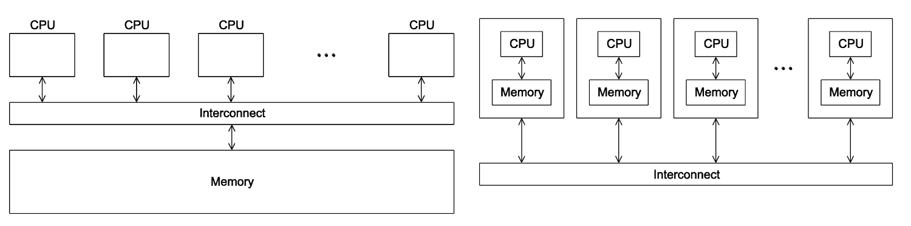

HPC 考前精简笔记：核心概念 · 必背公式 · 分步例题
清晰简明的考前复习笔记：保留核心概念解释、必背公式与分步例题，中英双语对照。左侧可切换语言或筛选「只看 ★★★ 必考」。
Overview总览Course Overview & Formula Sheet 全课核心公式与模型总览
Core Formulas ★★★核心公式总览
| Topic 专题 | Key Formulas & Meaning 核心公式与含义 | Symbols 符号 |
|---|---|---|
| Ch 1: Supercomputers第 1 章：超级计算机 | \(R_{\text{peak}} = N_{\text{cores}} \times f_{\text{clock}} \times \text{FLOPs/cycle}\) (1 FMA = 2 FLOPs)\(R_{\text{peak}} = N_{\text{cores}} \times f_{\text{clock}} \times \text{FLOPs/cycle}\)（1 次 FMA = 2 个 FLOP）TOP500 ranks by \(R_{\max}\); Energy efficiency \(E = R_{\max} / P\) (GFLOPS/W)TOP500 按 \(R_{\max}\) 排名；能效 \(E = R_{\max} / P\)（GFLOPS/W）Memory \(M = N_{\text{points}} \times N_{\text{var}} \times b\); dense solve \(\approx \tfrac{1}{3}n^3\) FLOPs内存 \(M = N_{\text{points}} \times N_{\text{var}} \times b\)；稠密求解约需 \(\approx \tfrac{1}{3}n^3\) 次 FLOP | \(R_{\text{peak}}\): peak speed, in FLOP/s\(R_{\text{peak}}\)：理论峰值速度，单位 FLOP/sFLOP: one floating-point operation, an addition or multiplication of real numbersFLOP：一次浮点运算，即对实数做一次加法或乘法\(N_{\text{cores}}\): total number of cores\(N_{\text{cores}}\)：总核数\(f_{\text{clock}}\): clock frequency, in Hz\(f_{\text{clock}}\)：时钟频率，单位 HzFLOPs/cycle: FLOPs one core finishes per clock cycleFLOPs/cycle：一个核心每个时钟周期完成的 FLOP 数FMA: fused multiply-add, one multiply plus one addFMA：融合乘加，一次乘法加一次加法\(R_{\max}\): speed measured on LINPACK\(R_{\max}\)：在 LINPACK 上实测的速度LINPACK: a benchmark that solves a dense system of linear equationsLINPACK：一个求解稠密线性方程组的基准测试TOP500: the list of the 500 fastest supercomputersTOP500：最快的 500 台超级计算机的榜单\(E\): energy efficiency\(E\)：能效\(P\): electrical power, in W\(P\)：耗电功率，单位 WGFLOPS/W: giga-FLOP/s per wattGFLOPS/W：每瓦特的 GFLOP/s\(M\): memory needed, in bytes\(M\)：所需内存，单位字节\(N_{\text{points}}\): number of data points\(N_{\text{points}}\)：数据点数\(N_{\text{var}}\): values stored per point\(N_{\text{var}}\)：每个点存的数值个数\(b\): bytes per value\(b\)：每个数值的字节数\(n\): number of equations, matrix size \(n \times n\)\(n\)：方程个数，矩阵大小 \(n \times n\) |
| Ch 2: Speedup & Amdahl第 2 章：加速比与 Amdahl 定律 | Speedup \(S = T_{\text{serial}} / T_{\text{parallel}}\); Efficiency \(E = S / p\)加速比 \(S = T_{\text{serial}} / T_{\text{parallel}}\)；效率 \(E = S / p\)With overhead: \(E = \dfrac{1}{1 + p\,r}\) where \(r = T_{\text{overhead}} / T_{\text{serial}}\)含开销时：\(E = \dfrac{1}{1 + p\,r}\)，其中 \(r = T_{\text{overhead}} / T_{\text{serial}}\)Amdahl's Law: \(S(p) = \dfrac{1}{f + (1-f)/p} \le \dfrac{1}{f}\), and \(f = \dfrac{p - S}{S(p - 1)}\)Amdahl 定律：\(S(p) = \dfrac{1}{f + (1-f)/p} \le \dfrac{1}{f}\)，反推 \(f = \dfrac{p - S}{S(p - 1)}\) | \(S\): speedup\(S\)：加速比\(T_{\text{serial}}\): time of the best serial program\(T_{\text{serial}}\)：最优串行程序的运行时间\(T_{\text{parallel}}\): time of the parallel program\(T_{\text{parallel}}\)：并行程序的运行时间\(E\): efficiency\(E\)：效率\(p\): number of cores\(p\)：核数\(T_{\text{overhead}}\): extra time from parallelism\(T_{\text{overhead}}\)：并行带来的额外时间\(r\): overhead ratio\(r\)：开销比\(f\): serial fraction, the part that cannot be parallelized\(f\)：串行比例，即无法并行的部分\(S(p)\): speedup on \(p\) cores\(S(p)\)：\(p\) 个核上的加速比 |
| Ch 3: Caches & Pipeline第 3 章：缓存与流水线 | Cache size \(C = S \times E \times B\); Address bits \(m = t + s + b\) (\(s = \log_2 S,\; b = \log_2 B\))缓存容量 \(C = S \times E \times B\)；地址位数 \(m = t + s + b\)（\(s = \log_2 S,\; b = \log_2 B\)）Row-major 2-D address: \(\text{base} + (iN + j)w\)行主序二维数组地址：\(\text{base} + (iN + j)w\)Pipeline: \(T_{\text{pipe}} = (k + n - 1)T_{\text{clock}}\), \(S_{\text{pipe}} = \dfrac{nk}{k + n - 1}\)流水线：\(T_{\text{pipe}} = (k + n - 1)T_{\text{clock}}\)，\(S_{\text{pipe}} = \dfrac{nk}{k + n - 1}\) | \(C\): cache capacity, in bytes\(C\)：缓存容量，单位字节\(S\): number of sets (not the speedup)\(S\)：组数（不是加速比）\(E\): lines per set (not the efficiency)\(E\)：每组的行数（不是效率）\(B\): bytes per block\(B\)：每块的字节数\(m\): address bits\(m\)：地址位数\(t\): tag bits\(t\)：标记位数\(s\): set-index bits\(s\)：组索引位数\(b\): block-offset bits\(b\)：块内偏移位数\(i, j\): row and column index of an element\(i, j\)：元素的行号和列号\(N\): elements per row\(N\)：每行的元素个数\(w\): bytes per element\(w\)：每个元素的字节数base: address of the first elementbase：首元素的地址\(k\): number of pipeline stages\(k\)：流水线级数\(n\): number of instructions\(n\)：指令条数\(T_{\text{clock}}\): clock period\(T_{\text{clock}}\)：时钟周期\(T_{\text{pipe}}\): time with the pipeline\(T_{\text{pipe}}\)：使用流水线的耗时\(S_{\text{pipe}}\): pipeline speedup\(S_{\text{pipe}}\)：流水线加速比 |
| Ch 4–5: Threads & Python第 4–5 章：线程与 Python | count++ is 3 steps (LOAD, ADD, STORE) \(\implies\) use a private counter + 1 lock per threadcount++ 分 3 步（LOAD、ADD、STORE）\(\implies\) 每个线程用私有计数器，最后只加 1 次锁Python GIL lets 1 thread run bytecode at a time \(\implies\) threading for I/O, multiprocessing for CPUPython 的 GIL 同一时刻只让 1 个线程执行字节码 \(\implies\) I/O 用 threading，CPU 计算用 multiprocessing |
LOAD, ADD, STORE: read into a register, add 1, write back to memoryLOAD、ADD、STORE：读进寄存器、加 1、写回内存lock: lets one thread at a time into the code it protects锁：一次只让一个线程进入被保护的代码GIL: Global Interpreter LockGIL：全局解释器锁（Global Interpreter Lock）bytecode: the instructions Python runs internally字节码：Python 内部执行的指令I/O: input and output, such as files and networkI/O：输入输出，如文件和网络threading: Python threadsthreading：Python 线程multiprocessing: Python processesmultiprocessing：Python 进程 |
| Ch 6: CPU Matmul第 6 章：CPU 矩阵乘法 | \(y = Ax\): \(2mn\) FLOPs; \(C = AB\): \(2mnk\) FLOPs; \(\text{GFLOP/s} = \text{FLOPs} / (t_{\text{sec}} \times 10^9)\)\(y = Ax\)：\(2mn\) 次 FLOP；\(C = AB\)：\(2mnk\) 次 FLOP；\(\text{GFLOP/s} = \text{FLOPs} / (t_{\text{sec}} \times 10^9)\)Loop speed: kij / ikj (fastest) \(>\) ijk / jik \(>\) jki / kji (slowest)循环顺序速度：kij / ikj（最快）\(>\) ijk / jik \(>\) jki / kji（最慢） |
\(y = Ax\): matrix-vector product, \(A\) is \(m \times n\)\(y = Ax\)：矩阵乘向量，\(A\) 为 \(m \times n\)\(x\): input vector of length \(n\)\(x\)：长度为 \(n\) 的输入向量\(y\): output vector of length \(m\)\(y\)：长度为 \(m\) 的输出向量\(C = AB\): matrix product, \(A\) is \(m \times k\), \(B\) is \(k \times n\)\(C = AB\)：矩阵乘矩阵，\(A\) 为 \(m \times k\)，\(B\) 为 \(k \times n\)FLOPs: number of floating-point operationsFLOPs：浮点运算次数\(t_{\text{sec}}\): run time, in seconds\(t_{\text{sec}}\)：运行时间，单位秒GFLOP/s: \(10^9\) FLOP per secondGFLOP/s：每秒 \(10^9\) 次 FLOPkij etc.: order of the three nested loops over \(i, j, k\)kij 等：对 \(i, j, k\) 的三层嵌套循环的顺序 |
| Ch 7–8: DL & Attention第 7–8 章：深度学习与注意力 | Conv weights \(= KCRS\); im2col turns conv into GEMM \(\mathbf{F}_{K \times CRS}\,\mathbf{P}_{CRS \times NH'W'}\)卷积权重数 \(= KCRS\)；im2col 把卷积变成 GEMM \(\mathbf{F}_{K \times CRS}\,\mathbf{P}_{CRS \times NH'W'}\)Attention: \(Z = \operatorname{softmax}(QK^T / \sqrt{d_k})V\) (row-wise softmax)注意力：\(Z = \operatorname{softmax}(QK^T / \sqrt{d_k})V\)（softmax 按行计算）\(QKV\) projection: \(6nd^2\) FLOPs; \(QK^T\) and \(AV\): \(2n^2 d_k\) FLOPs each per head\(QKV\) 投影：\(6nd^2\) 次 FLOP；\(QK^T\) 与 \(AV\)：每个注意力头各 \(2n^2 d_k\) 次 FLOP | DL: deep learningDL：深度学习\(K\): number of filters, i.e., output channels\(K\)：卷积核个数，即输出通道数\(C\): input channels\(C\)：输入通道数\(R \times S\): filter height and width\(R \times S\)：卷积核的高和宽\(N\): number of images\(N\)：图像张数\(H, W\): image height and width\(H, W\)：图像的高和宽\(H' \times W'\): output height and width\(H' \times W'\)：输出的高和宽im2col: copies every sliding window into a column of a matrixim2col：把每个滑动窗口复制成矩阵的一列GEMM: general matrix-matrix multiplicationGEMM：通用矩阵乘法\(\mathbf{F}\): filter matrix\(\mathbf{F}\)：卷积核矩阵\(\mathbf{P}\): patch matrix\(\mathbf{P}\)：窗口矩阵\(Q, K, V\): query, key and value matrices (here \(K\) is not the filter count)\(Q, K, V\)：查询、键、值矩阵（这里的 \(K\) 不是卷积核个数）\(Z\): attention output\(Z\)：注意力输出softmax: turns each row of scores into weights that sum to 1softmax：把每行分数变成和为 1 的权重\(d_k\): width of \(Q\) and \(K\)\(d_k\)：\(Q\) 和 \(K\) 的宽度\(n\): sequence length\(n\)：序列长度\(d\): model width\(d\)：模型宽度\(A\): attention matrix\(A\)：注意力矩阵\(QKV\) projection: the products \(XW_q\), \(XW_k\), \(XW_v\)\(QKV\) 投影：\(XW_q\)、\(XW_k\)、\(XW_v\) 三个乘积 |
| Ch 9–10: OpenMP第 9–10 章：OpenMP | Compile: gcc -fopenmp编译：gcc -fopenmpVariables declared before #pragma omp are shared; inside are private在 #pragma omp 之前声明的变量是 shared（共享）；在其内部声明的是 private（私有）Loop schedules: static assigns \(\text{thread} = \lfloor i/c \rfloor \bmod p\); guided shrinks chunk \(c_k = \max(\lceil R_k/p\rceil, c_{\min})\)循环调度：static 按 \(\text{thread} = \lfloor i/c \rfloor \bmod p\) 分配线程；guided 的块大小逐步缩小，\(c_k = \max(\lceil R_k/p\rceil, c_{\min})\) |
OpenMP: Open Multi-Processing, compiler directives for threadsOpenMP：Open Multi-Processing，用于线程的编译器指令#pragma omp: starts a parallel region#pragma omp：开启并行区域shared: one copy for all threadsshared：所有线程共用一份private: one copy per threadprivate：每个线程各有一份\(i\): loop iteration number\(i\)：循环迭代编号\(c\): chunk size, iterations handed out at a time\(c\)：块大小，即每次分出去的迭代数\(p\): number of threads\(p\)：线程数\(R_k\): iterations not yet assigned before chunk \(k\)\(R_k\)：分第 \(k\) 块之前还没分配的迭代数\(c_k\): size of chunk \(k\)\(c_k\)：第 \(k\) 块的大小\(c_{\min}\): smallest chunk size\(c_{\min}\)：最小块大小 |
| Ch 11: GPU & Roofline第 11 章：GPU 与 Roofline 模型 | \(P_{\text{peak}} = N_{\text{SM}} \times n_{\text{core/SM}} \times 2 \times f_{\text{clock}}\)\(P_{\text{peak}} = N_{\text{SM}} \times n_{\text{core/SM}} \times 2 \times f_{\text{clock}}\)Arithmetic Intensity \(\text{AI} = \text{FLOPs} / \text{bytes}\); Ridge point \(B_m = P_{\text{peak}} / BW\)算术强度 \(\text{AI} = \text{FLOPs} / \text{bytes}\)；拐点（ridge point）\(B_m = P_{\text{peak}} / BW\)Attainable rate \(P_{\text{att}} = \min(P_{\text{peak}},\; \text{AI} \times BW)\)可达性能 \(P_{\text{att}} = \min(P_{\text{peak}},\; \text{AI} \times BW)\) | \(P_{\text{peak}}\): peak speed of the GPU, in FLOP/s\(P_{\text{peak}}\)：GPU 的峰值速度，单位 FLOP/sSM: streaming multiprocessor, a compute block of a GPUSM：流多处理器，GPU 的计算单元块\(N_{\text{SM}}\): number of SMs\(N_{\text{SM}}\)：SM 的个数\(n_{\text{core/SM}}\): cores per SM\(n_{\text{core/SM}}\)：每个 SM 的核心数factor 2: one FMA = 2 FLOPs系数 2：1 次 FMA = 2 个 FLOPAI: arithmetic intensity, FLOPs per byte movedAI：算术强度，每搬运 1 字节所做的 FLOP 数\(BW\): memory bandwidth, in bytes/s\(BW\)：内存带宽，单位 bytes/s\(B_m\): ridge point, the AI where the limit changes from memory to compute\(B_m\)：拐点，即速度上限由内存限制变为计算限制时的 AI\(P_{\text{att}}\): attainable speed\(P_{\text{att}}\)：可达速度 |
| Ch 12: CUDA第 12 章：CUDA | Max 1024 threads/block; Global ID \(\text{myID} = bT + t\)每个 block 最多 1024 个线程；全局线程编号 \(\text{myID} = bT + t\)Warps per grid \(N_{\text{warp}} = N_{\text{blk}}\lceil T/32\rceil\); Warp \(w = \lfloor t/32\rfloor\), Lane \(\ell = t \bmod 32\)整个 grid 的 warp 数 \(N_{\text{warp}} = N_{\text{blk}}\lceil T/32\rceil\)；warp 编号 \(w = \lfloor t/32\rfloor\)，lane 编号 \(\ell = t \bmod 32\)Occupancy \(= R W_{\text{blk}} / W_{\max}\)占用率（occupancy）\(= R W_{\text{blk}} / W_{\max}\) | CUDA: Compute Unified Device Architecture, NVIDIA's GPU platformCUDA：Compute Unified Device Architecture，NVIDIA 的 GPU 平台block: group of threads that run on one SMblock（线程块）：在一个 SM 上运行的一组线程grid: all blocks of one kernel launchgrid：一次核函数启动的所有 blockwarp: 32 threads running in lockstepwarp：锁步执行的 32 个线程lane: position of a thread inside its warplane（通道）：线程在其 warp 中的位置\(b\): block ID\(b\)：block 编号\(T\): threads per block\(T\)：每个 block 的线程数\(t\): thread ID inside its block\(t\)：线程在 block 内的编号\(\text{myID}\): global thread ID\(\text{myID}\)：全局线程编号\(N_{\text{blk}}\): number of blocks\(N_{\text{blk}}\)：block 个数\(N_{\text{warp}}\): warps in the grid\(N_{\text{warp}}\)：整个 grid 的 warp 数\(w\): warp number of a thread\(w\)：线程所属的 warp 编号\(\ell\): lane number of a thread\(\ell\)：线程的 lane 编号\(R\): blocks resident on one SM at a time\(R\)：同时驻留在一个 SM 上的 block 数\(W_{\text{blk}}\): warps per block\(W_{\text{blk}}\)：每个 block 的 warp 数\(W_{\max}\): most warps one SM can hold\(W_{\max}\)：一个 SM 最多容纳的 warp 数occupancy: share of those warp slots in useoccupancy（占用率）：这些 warp 位置被占用的比例 |
| Ch 13–14: GPU Mem & GEMM第 13–14 章：GPU 内存与 GEMM | Local memory is thread-scoped but stored off-chip; coalesced warp load = 4 sectors (128 B)局部内存（local memory）属于单个线程，但存放在片外；合并（coalesced）的 warp 读取 = 4 个 sector（128 B）Tile \(\text{AI} = \dfrac{B_M B_N}{2(B_M + B_N)} = \dfrac{T}{4}\); Shared memory/stage \(S = 4B_K(B_M + B_N)\) B分块（tile）的 \(\text{AI} = \dfrac{B_M B_N}{2(B_M + B_N)} = \dfrac{T}{4}\)；每级流水的共享内存 \(S = 4B_K(B_M + B_N)\) 字节Time lower bound \(t \ge \max(t_{\text{compute}}, t_{\text{mem}})\)时间下界 \(t \ge \max(t_{\text{compute}}, t_{\text{mem}})\) | local memory: private memory of one thread局部内存：单个线程的私有内存sector: 32-byte unit of a memory transfer, 4 sectors = 128 Bsector：内存传输的 32 字节单位，4 个 sector = 128 Bcoalesced: the threads of a warp read neighbouring addresses合并（coalesced）：一个 warp 的线程读取相邻地址GEMM: general matrix-matrix multiplicationGEMM：通用矩阵乘法\(B_M \times B_N\): output tile computed by one block\(B_M \times B_N\)：一个 block 计算的输出分块\(B_K\): depth of one stage\(B_K\)：每一级流水的深度\(T\): tile side when \(B_M = B_N = T\)\(T\)：\(B_M = B_N = T\) 时的分块边长\(S\): shared memory per stage, in bytes (not the speedup)\(S\)：每级流水的共享内存，单位字节（不是加速比）\(t_{\text{compute}}\): time the arithmetic alone needs\(t_{\text{compute}}\)：只算运算所需的时间\(t_{\text{mem}}\): time the data movement alone needs\(t_{\text{mem}}\)：只算数据搬运所需的时间\(t\): actual run time\(t\)：实际运行时间 |
| Ch 15: MPI第 15 章：MPI | Compile/run: mpicc and mpiexec -n p编译与运行：mpicc 与 mpiexec -n pMPI_Init, MPI_Comm_size, MPI_Comm_rank (\(0 \dots p-1\))MPI_Init、MPI_Comm_size、MPI_Comm_rank（编号 \(0 \dots p-1\)）MPI_Send (6 args, strlen+1), MPI_Recv (7 args, MAX_STRING, &status), MPI_FinalizeMPI_Send（6 个参数，长度 strlen+1）、MPI_Recv（7 个参数，MAX_STRING、&status）、MPI_Finalize |
MPI: Message Passing Interface, a library for sending messages between processesMPI：消息传递接口，让进程之间发消息的库\(p\): number of processes\(p\)：进程数rank: process ID, from \(0\) to \(p-1\)rank：进程编号，从 \(0\) 到 \(p-1\)mpicc: compiler wrappermpicc：编译器包装命令mpiexec -n p: starts \(p\) processesmpiexec -n p：启动 \(p\) 个进程strlen+1: message length including the final '\0'strlen+1：消息长度，含结尾的 '\0'MAX_STRING: size of the receive bufferMAX_STRING：接收缓冲区大小&status: address of the receive's status record&status：接收状态记录的地址 |
Four Parallel Models ★★★四大并行编程模型对比
| Model 模型 | Memory 内存模型 | Parallel Unit 并行单位 | Synchronization 同步方式 | Compile / Run 编译运行 |
|---|---|---|---|---|
| Pthreads (POSIX threads, the standard C thread library; POSIX = Portable Operating System Interface)Pthreads（POSIX 线程，C 语言的标准线程库；POSIX 即可移植操作系统接口） | Shared memory共享内存 | OS (operating system) threads (pthread_t)操作系统（OS）线程（pthread_t） |
Mutex (pthread_mutex_lock), pthread_join互斥锁（pthread_mutex_lock）、pthread_join |
gcc ... -lpthread |
| OpenMP (Open Multi-Processing, compiler directives for threads)OpenMP（Open Multi-Processing，用于线程的编译器指令） | Shared memory共享内存 | Thread team (#pragma omp)线程组（#pragma omp） |
critical, reduction, implicit barrier after forcritical、reduction、for 之后的隐式屏障 |
gcc -fopenmp ... |
| CUDA (Compute Unified Device Architecture, NVIDIA's GPU platform)CUDA（Compute Unified Device Architecture，NVIDIA 的 GPU 平台） | Hierarchical GPU memory (Global / Shared / Register)分级 GPU 内存（全局 / 共享 / 寄存器） | Blocks (groups of threads) & warps (32 threads)block（线程组）与 warp（32 个线程） | __syncthreads() (within block), cudaDeviceSynchronize() (host = the CPU side)__syncthreads()（block 内同步）、cudaDeviceSynchronize()（host 即 CPU 端的同步） |
nvcc ... |
| MPI (Message Passing Interface)MPI（消息传递接口） | Distributed memory分布式内存 | Processes (rank 0..p-1: process IDs, \(p\) = number of processes)进程（rank 0..p-1：进程编号，\(p\) 为进程数） |
Explicit messages (MPI_Send / MPI_Recv)显式消息（MPI_Send / MPI_Recv） |
mpicc ... / mpiexec -n p |
Chapter 1第 1 章Supercomputer Performance & TOP500 超级计算机性能指标与 TOP500
Peak Performance & FLOP/s per Core ★★★理论峰值与单核算力
Computer speed is counted in FLOPs (floating-point operations): one addition or one multiplication on real numbers stored in floating-point format. Speed is FLOPs per second, written FLOP/s. Peak values are usually quoted for FP64: 64-bit floating point, also called double precision.计算机的工作量用 FLOP（浮点运算）来数：对以浮点格式存储的实数做一次加法或一次乘法，就是 1 个 FLOP。速度是每秒完成的 FLOP 数，写作 FLOP/s。峰值通常按 FP64 给出：64 位浮点数，也叫双精度。 Theoretical peak performance \(R_{\text{peak}}\) is the most FLOP/s a machine could ever reach: every core and every arithmetic unit busy on every clock cycle. Modern CPUs have FMA (fused multiply-add) units. One FMA instruction does a multiplication and an addition together, so 1 FMA = 2 FLOPs.理论峰值性能 \(R_{\text{peak}}\) 是一台机器最多能达到的 FLOP/s：每个核心、每个运算单元在每个时钟周期都在工作。现代 CPU 有 FMA（融合乘加）单元，一条 FMA 指令同时做一次乘法和一次加法，所以 1 次 FMA = 2 个 FLOP。
In words: peak rate = number of cores × clock rate × FLOPs each core finishes per clock cycle.一句话：峰值 = 核数 × 主频 × 每个核心每个时钟周期完成的 FLOP 数。 \[R_{\text{peak}} = N_{\text{nodes}} \times N_{\text{cores/node}} \times f_{\text{clock}} \times \frac{\text{FLOPs}}{\text{cycle}\cdot\text{core}}\] \[\text{FP per core} = \frac{R_{\text{peak}}}{N_{\text{cores}}}, \qquad \frac{\text{FLOPs}}{\text{cycle}\cdot\text{core}} = \frac{\text{FP per core}}{f_{\text{clock}}}\]
- \(R_{\text{peak}}\): theoretical peak of the whole machine, in FLOP/s (e.g., \(2{,}735.82\text{ PFLOP/s}\)).\(R_{\text{peak}}\)：整台机器的理论峰值，单位 FLOP/s（例如 \(2{,}735.82\text{ PFLOP/s}\)）。
- \(N_{\text{nodes}}\): number of nodes. A node is one server of the cluster, with its own CPUs and memory.\(N_{\text{nodes}}\)：节点数。一个节点就是集群里的一台服务器，有自己的 CPU 和内存。
- \(N_{\text{cores/node}}\): number of cores in one node.\(N_{\text{cores/node}}\)：每个节点里的核心数。
- \(N_{\text{cores}}\): total number of cores, \(N_{\text{nodes}} \times N_{\text{cores/node}}\) (e.g., \(13{,}789{,}440\)).\(N_{\text{cores}}\)：总核数，即 \(N_{\text{nodes}} \times N_{\text{cores/node}}\)（例如 \(13{,}789{,}440\)）。
- \(f_{\text{clock}}\): clock frequency, the number of clock cycles per second, in Hz (\(1\text{ GHz} = 10^9\text{ cycles/s}\); e.g., \(1.55\text{ GHz}\)).\(f_{\text{clock}}\)：时钟频率（主频），即每秒的时钟周期数，单位 Hz（\(1\text{ GHz} = 10^9\text{ cycles/s}\)；例如 \(1.55\text{ GHz}\)）。
- \(\text{FLOPs}/(\text{cycle}\cdot\text{core})\): FLOPs that one core finishes in one clock cycle. With FMA units it is 2 × the FMAs per cycle (e.g., \(64 \times 2 = 128\)).\(\text{FLOPs}/(\text{cycle}\cdot\text{core})\)：一个核心在一个时钟周期里完成的 FLOP 数。有 FMA 单元时，它等于每周期 FMA 数的 2 倍（例如 \(64 \times 2 = 128\)）。
- \(\text{FP per core}\): peak floating-point (FP) rate of one core, in FLOP/s (e.g., \(198.4\text{ GFLOP/s}\)).\(\text{FP per core}\)：单个核心的峰值浮点（FP，floating point）运算速率，单位 FLOP/s（例如 \(198.4\text{ GFLOP/s}\)）。
- SI prefixes for FLOP/s: k (\(10^3\)), M (\(10^6\)), G (\(10^9\)), T (\(10^{12}\)), P (\(10^{15}\)), E (\(10^{18}\)).FLOP/s 的国际单位制前缀：k（\(10^3\)）、M（\(10^6\)）、G（\(10^9\)）、T（\(10^{12}\)）、P（\(10^{15}\)）、E（\(10^{18}\)）。
On GPU-accelerated supercomputers, the TOP500 list counts GPU compute units as cores too. Dividing \(R_{\text{peak}}\) by \(N_{\text{cores}}\) then gives only an average over CPU and GPU units.在配有 GPU 的超算上，TOP500 榜单把 GPU 的计算单元也算作核心。这时用 \(R_{\text{peak}}\) 除以 \(N_{\text{cores}}\)，得到的只是 CPU 与 GPU 单元的平均值。
Suppose a system has \(13{,}789{,}440\) cores running at \(f_{\text{clock}} = 1.55\text{ GHz}\), and each core can do \(64\text{ FMAs/cycle}\).假设某系统有 \(13{,}789{,}440\) 个核心，主频 \(f_{\text{clock}} = 1.55\text{ GHz}\)，每个核心每周期可做 \(64\) 次 FMA。
- FLOPs per cycle per core: \(64 \times 2 = 128\text{ FLOPs/cycle}\).每个核心每周期的 FLOP 数：\(64 \times 2 = 128\text{ FLOPs/cycle}\)。
- Peak rate per core (FP per core): \(128 \times (1.55 \times 10^9) = 198.4\text{ GFLOP/s}\).单核峰值速率（FP per core）：\(128 \times (1.55 \times 10^9) = 198.4\text{ GFLOP/s}\)。
- System peak: \(13{,}789{,}440 \times 198.4\text{ GFLOP/s} = 2{,}735.82\text{ PFLOP/s} = 2.736\text{ EFLOP/s}\).全系统峰值：\(13{,}789{,}440 \times 198.4\text{ GFLOP/s} = 2{,}735.82\text{ PFLOP/s} = 2.736\text{ EFLOP/s}\)。
Going in reverse from a TOP500 entry (\(R_{\text{peak}} = 2{,}735.82\text{ PFLOP/s}\)):从 TOP500 的一行数据反推（\(R_{\text{peak}} = 2{,}735.82\text{ PFLOP/s}\)）： \[\text{FP per core} = \frac{2{,}735.82 \times 10^{15}}{13{,}789{,}440} = 198.4\text{ GFLOP/s}, \qquad \frac{198.4}{1.55} = 128\text{ FLOPs/cycle}\]正算：每周期 FMA 数乘 2 得每周期 FLOP 数，再乘主频得单核算力，最后乘总核数得全系统峰值。反算：总峰值除以核数得单核算力，再除以主频得每周期 FLOP 数。
\(R_{\max}\), \(R_{\text{peak}}\) & Energy Efficiency ★★★\(R_{\max}\)、\(R_{\text{peak}}\) 与能效
A machine's real speed is always lower than its theoretical peak. Cores wait for data from memory (limited memory bandwidth), for messages between nodes (communication) and for each other (synchronization). Three rates describe this:机器的实际速度总是低于理论峰值：核心要等内存送数据（内存带宽有限）、要等节点之间传消息（通信）、还要互相等待（同步）。描述这件事用三种速率：
- \(R_{\text{peak}}\): theoretical peak, from the formula above.\(R_{\text{peak}}\)：理论峰值，由上面的公式算出。
- \(R_{\text{real}}\): rate measured on a single kernel, i.e., one small, well-tuned piece of code such as a matrix product.\(R_{\text{real}}\)：在单个计算内核（kernel，即一小段充分优化的代码，例如一次矩阵乘法）上实测的速率。
- \(R_{\text{sustained}}\): rate that a whole application keeps up over its full run, often below 10% of \(R_{\text{peak}}\).\(R_{\text{sustained}}\)：整个应用在完整运行过程中能保持的速率，常常不到 \(R_{\text{peak}}\) 的 10%。
\[R_{\text{sustained}} \;\ll\; R_{\text{real}} \;\ll\; R_{\text{peak}}\]
The TOP500 list ranks the 500 fastest supercomputers by \(R_{\max}\): the speed actually measured on LINPACK, a benchmark that solves a large dense system of linear equations. It does not rank by \(R_{\text{peak}}\). (For reference, in June 2026: #1 LineShine has \(R_{\max}=2198.40\text{ PFLOP/s}\), \(R_{\text{peak}}=2735.82\text{ PFLOP/s}\); #2 El Capitan has \(R_{\max}=1809.00\text{ PFLOP/s}\), \(R_{\text{peak}}=2821.10\text{ PFLOP/s}\).)TOP500 榜单给最快的 500 台超级计算机排名，依据是 \(R_{\max}\)：在 LINPACK 上实际测得的速度。LINPACK 是一个求解大型稠密线性方程组的基准测试。榜单不按 \(R_{\text{peak}}\) 排名。（参考数据，2026 年 6 月：第 1 名 LineShine 的 \(R_{\max}=2198.40\text{ PFLOP/s}\)，\(R_{\text{peak}}=2735.82\text{ PFLOP/s}\)；第 2 名 El Capitan 的 \(R_{\max}=1809.00\text{ PFLOP/s}\)，\(R_{\text{peak}}=2821.10\text{ PFLOP/s}\)。）
In words: energy efficiency = measured speed ÷ electrical power, i.e., the FLOPs done per joule of energy.一句话：能效 = 实测速度 ÷ 电功率，也就是每消耗 1 焦耳能量完成多少 FLOP。 \[E = \frac{R_{\max}}{P} \quad (\text{units: GFLOPS/W} = \text{GFLOP/J})\]
- \(E\): energy efficiency, in GFLOPS/W, which equals GFLOP per joule (e.g., \(52.09\text{ GFLOPS/W}\)).\(E\)：能效，单位 GFLOPS/W，等于每焦耳完成的 GFLOP 数（例如 \(52.09\text{ GFLOPS/W}\)）。
- \(R_{\max}\): measured LINPACK performance, in FLOP/s (e.g., \(2{,}198.40\text{ PFLOP/s}\)).\(R_{\max}\)：LINPACK 实测性能，单位 FLOP/s（例如 \(2{,}198.40\text{ PFLOP/s}\)）。
- \(P\): electrical power consumption, in watts (\(1\text{ MW} = 10^6\text{ W}\) and \(1\text{ W} = 1\text{ J/s}\); e.g., \(42.20\text{ MW}\)).\(P\)：耗电功率，单位瓦特（\(1\text{ MW} = 10^6\text{ W}\)，\(1\text{ W} = 1\text{ J/s}\)；例如 \(42.20\text{ MW}\)）。
Given \(R_{\max} = 2{,}198.40\text{ PFLOP/s}\) and \(P = 42.20\text{ MW}\):已知 \(R_{\max} = 2{,}198.40\text{ PFLOP/s}\)，\(P = 42.20\text{ MW}\)： \[E = \frac{2{,}198.40 \times 10^{15}\text{ FLOP/s}}{42.20 \times 10^6\text{ W}} = 52.09 \times 10^9\text{ FLOP/J} = 52.09\text{ GFLOPS/W}\]先把 \(R_{\max}\) 换算成 FLOP/s、把功率换算成 W，再直接相除，就得到 GFLOPS/W。
Memory, Time to Solution & Moore's Law ★★内存估算、求解时间与摩尔定律
Two quick estimates tell whether a problem fits in memory (RAM, the computer's main working memory) and how long it will run:用两个简单的估算，就能判断一个问题装不装得进内存（RAM，即计算机的主存），以及要算多久：
- Memory: multiply the number of data points by the values stored per point and by the bytes per value.内存：数据点数 × 每个点存的数值个数 × 每个数值的字节数。
- Time: divide the total work (in FLOPs) by the rate the code actually sustains.时间：总工作量（FLOP 数）÷ 程序实际能保持的速率。
In words: memory = data points × values per point × bytes per value; time = total work ÷ sustained speed.一句话：内存 = 数据点数 × 每点数值个数 × 每个数值的字节数；时间 = 总工作量 ÷ 实际持续速度。 \[M = N_{\text{points}} \times N_{\text{var}} \times b, \qquad T = \frac{W}{R_{\text{sustained}}}\]
- \(M\): memory needed, in bytes (e.g., \(8\text{ TB}\) for an FP64 matrix with \(10^{12}\) entries).\(M\)：所需内存，单位字节（例如有 \(10^{12}\) 个元素的 FP64 矩阵需要 \(8\text{ TB}\)）。
- \(N_{\text{points}}\): number of data points, such as grid points or matrix entries (\(n^2\) for an \(n \times n\) matrix).\(N_{\text{points}}\)：数据点个数，例如网格点数或矩阵元素数（\(n \times n\) 矩阵有 \(n^2\) 个）。
- \(N_{\text{var}}\): number of values stored per point (e.g., 1 for a matrix entry).\(N_{\text{var}}\)：每个点存储的数值个数（例如矩阵的每个元素只存 1 个数）。
- \(b\): bytes per value (\(b=8\) for
double/ FP64, \(b=4\) forfloat/ FP32, the 32-bit single precision).\(b\)：每个数值占的字节数（double/ FP64 时 \(b=8\)，float/ FP32 即 32 位单精度时 \(b=4\)）。 - \(T\): time to solution, in seconds.\(T\)：求解所需时间，单位秒。
- \(W\): total work, in FLOPs. Solving a dense system of \(n\) linear equations in \(n\) unknowns takes \(W \approx \frac{1}{3}n^3\) FLOPs.\(W\)：总工作量，单位 FLOP。求解含 \(n\) 个未知数、\(n\) 个方程的稠密线性方程组约需 \(W \approx \frac{1}{3}n^3\) 个 FLOP。
- \(n\): number of equations, which is also the matrix size \(n \times n\).\(n\)：方程个数，也就是矩阵的边长（矩阵为 \(n \times n\)）。
- \(R_{\text{sustained}}\) (also written \(R_{\text{sust}}\), or just \(R\)): rate the code actually keeps up, in FLOP/s (e.g., \(10^8\text{ FLOP/s}\)).\(R_{\text{sustained}}\)（也写作 \(R_{\text{sust}}\)，或简写为 \(R\)）：程序实际能保持的速率，单位 FLOP/s（例如 \(10^8\text{ FLOP/s}\)）。
On a \(100\text{ MFLOP/s}\) (\(10^8\text{ FLOP/s}\)) machine:在一台 \(100\text{ MFLOP/s}\)（\(10^8\text{ FLOP/s}\)）的机器上：
- For \(n = 10^4\): \(W = \tfrac{1}{3}(10^4)^3 = 3.33 \times 10^{11}\) FLOPs \(\implies T = \dfrac{3.33\times 10^{11}}{10^8} = 3{,}333\text{ s} \approx 55.6\text{ min}\).当 \(n = 10^4\)：\(W = \tfrac{1}{3}(10^4)^3 = 3.33 \times 10^{11}\) FLOPs \(\implies T = \dfrac{3.33\times 10^{11}}{10^8} = 3{,}333\text{ s} \approx 55.6\text{ min}\)（分钟）。
- For \(n = 10^6\) (\(100\times\) larger \(n\)): \(W = \tfrac{1}{3}(10^6)^3 = 3.33 \times 10^{17}\) FLOPs \(\implies T = 3.33 \times 10^9\text{ s} \approx 105.7\text{ years}\), and storing the \(n \times n\) matrix in FP64 needs \(10^{12} \times 8\text{ B} = 8\text{ TB}\).当 \(n = 10^6\)（\(n\) 扩大 \(100\) 倍）：\(W = \tfrac{1}{3}(10^6)^3 = 3.33 \times 10^{17}\) FLOPs \(\implies T = 3.33 \times 10^9\text{ s} \approx 105.7\text{ years}\)（年），而以 FP64 存储这个 \(n \times n\) 矩阵需要 \(10^{12} \times 8\text{ B} = 8\text{ TB}\)。矩阵边长 \(n\) 扩大 100 倍，内存按 \(n^2\) 扩大 1 万倍，运算量按 \(n^3\) 扩大 100 万倍。
Moore's Law: the number of transistors on a chip doubles roughly every 1.5 years. Over 12 years that is \(12 / 1.5 = 8\) doublings, so \(2^8 = 256\times\) more transistors.摩尔定律：芯片上的晶体管数量大约每 1.5 年翻一倍。12 年就是翻倍 \(12 / 1.5 = 8\) 次，晶体管数变为 \(2^8 = 256\) 倍。
Key Terms ★核心术语
| Term 术语 | Meaning 含义 |
|---|---|
| ExascaleE 级超算 | Systems reaching \(\ge 10^{18}\text{ FLOP/s}\) (\(1\text{ EFLOP/s} = 1{,}000\text{ PFLOP/s}\)).算力达到每秒 \(10^{18}\) 次（百亿亿次）浮点运算的超级计算机（\(1\text{ EFLOP/s} = 1{,}000\text{ PFLOP/s}\)）。 |
| HPC vs Cloud超算 vs 云计算 | HPC (high-performance computing) runs a few large, tightly coupled jobs: their parts exchange data all the time. It uses custom low-latency networks and static scheduling, i.e., resources are fixed when the job starts. Cloud computing runs many small independent tasks on commodity (ordinary, mass-produced) hardware. It uses dynamic allocation: resources are added or removed while it runs.HPC（高性能计算）运行少数几个大型、紧密耦合的作业，各部分之间不停交换数据。它使用定制的低延迟网络和静态调度，即作业开始时就固定好资源。云计算在普通的量产硬件上运行大量互相独立的小任务。它采用动态分配：运行中随时增减资源。 |
| Gordon Bell Prize戈登贝尔奖 | Annual award for peak real-application performance; gained \(10^4\times\) over 13 years through massive parallelism, outpacing Moore's law.每年颁发给实际应用峰值性能最高者的奖项；靠大规模并行，13 年内性能提升了 \(10^4\times\)，超过了摩尔定律的增速。 |
| Regional TOP500中东上榜系统 | Shaheen III - GPU (KAUST, Saudi Arabia, #22, \(122.80\text{ PFLOP/s}\)) and SuperPOD (Core42, UAE, #46, \(55.81\text{ PFLOP/s}\)).Shaheen III - GPU（沙特 KAUST，第 22 名，\(122.80\text{ PFLOP/s}\)）与 SuperPOD（阿联酋 Core42，第 46 名，\(55.81\text{ PFLOP/s}\)）。 |
Practice questions练习题
10 questions from the full notes; click “Answer” to unfold the model answer.共 10 题，来自完整版笔记；点击“Answer / 答案”展开参考答案。
Peak performance and FLOP/s per core峰值性能与每核 FLOP/s
Q1. (Calculation) Fugaku has 7,630,848 cores at 2.20 GHz and \(R_{\text{peak}}=537.21\) PFLOP/s. How many FP64 FLOPs per cycle does one core complete?Q1. （计算） Fugaku 有 7,630,848 个核心，主频为 2.20 GHz，其性能为 \(R_{\text{peak}}=537.21\) PFLOP/s。每个核心每时钟周期完成多少次 FP64 FLOPs？
Answer答案
FP per core \(=537.21\times10^{15}/7{,}630{,}848=70.40\) GFLOP/s. FLOPs per cycle \(=70.40\ \text{GFLOP/s}/2.20\ \text{GHz}=32\).每核心 FP：\(=537.21\times10^{15}/7{,}630{,}848=70.40\) GFLOP/s。每时钟周期 FLOPs 数：\(=70.40\ \text{GFLOP/s}/2.20\ \text{GHz}=32\)。
Q2. (Calculation) A cluster has 1,000 nodes, each with 2 CPUs of 32 cores at 2.5 GHz that complete 16 FP64 FLOPs per cycle per core. (a) What is \(R_{\text{peak}}\)? (b) What does an application sustain if it reaches 8% of \(R_{\text{peak}}\)?Q2. （计算） 一个集群有 1,000 个节点，每个节点有 2 个 CPU，每个 CPU 有 32 个核心，主频 2.5 GHz，每个核心每个周期完成 16 次 FP64 FLOP。(a) \(R_{\text{peak}}\) 是多少？(b) 如果应用达到 \(R_{\text{peak}}\) 的 8%，它实际维持多少？
Answer答案
Cores: \(1000\times2\times32=64{,}000\). Per core: \(2.5\times10^9\times16=40\) GFLOP/s.核心数：\(1000\times2\times32=64{,}000\)。每核心：\(2.5\times10^9\times16=40\) GFLOP/s。
(a) \(R_{\text{peak}}=64{,}000\times40\ \text{GFLOP/s}=2.56\times10^{15}\) FLOP/s \(=2.56\) PFLOP/s.
(b) \(R_{\text{sustained}}=0.08\times2.56\ \text{PFLOP/s}=205\) TFLOP/s.
Interpretation: the sustained rate is far below \(R_{\text{peak}}\).解读：实测速率远低于 \(R_{\text{peak}}\)。
\(R_{\max}\), \(R_{\text{peak}}\) and efficiency\(R_{\max}\)、\(R_{\text{peak}}\) 与效率
Q1. (True or false, justify) "The machine with the larger \(R_{\text{peak}}\) always ranks higher in the TOP500."Q1. 判断，并说明理由 「\(R_{\text{peak}}\) 更大的机器在 TOP500 中总是排名更高。」
Answer答案
False. The TOP500 ranks by \(R_{\max}\). In the June 2026 list, El Capitan has the larger \(R_{\text{peak}}\) (2,821.10 against 2,735.82 PFLOP/s) but the smaller \(R_{\max}\) (1,809.00 against 2,198.40 PFLOP/s), so LineShine is #1.错。TOP500 按 \(R_{\max}\) 排名。在 2026 年 6 月的榜单中，El Capitan 的 \(R_{\text{peak}}\) 更大（2,821.10 对 2,735.82 PFLOP/s），但 \(R_{\max}\) 更小（1,809.00 对 2,198.40 PFLOP/s），所以 LineShine 排第一。易错：排名看 \(R_{\max}\)，不看 \(R_{\text{peak}}\)。易错：排名看 \(R_{\max}\)，不看 \(R_{\text{peak}}\)。
Q2. (Calculation) Compute the energy efficiency of Frontier (\(R_{\max}=1{,}353.00\) PFLOP/s, 24.69 MW) and Fugaku (\(R_{\max}=442.01\) PFLOP/s, 29.90 MW), and the energy needed for \(10^{18}\) floating-point operations on each.Q2. 计算 求 Frontier（\(R_{\max}=1{,}353.00\) PFLOP/s，24.69 MW）与 Fugaku（\(R_{\max}=442.01\) PFLOP/s，29.90 MW）的能效，以及两者完成 \(10^{18}\) 次浮点运算所需的能量。
Answer答案
Frontier: \(1{,}353.00\ \text{PFLOP/s}/24.69\ \text{MW}=54.80\) GFLOPS/W. Fugaku: \(442.01/29.90=14.78\) GFLOPS/W.Frontier 能效：\(1{,}353.00\ \text{PFLOP/s}/24.69\ \text{MW}=54.80\) GFLOPS/W。Fugaku 能效：\(442.01/29.90=14.78\) GFLOPS/W。
Energy for \(10^{18}\) operations: \(10^{18}/(54.80\times10^9)=1.82\times10^7\) J \(=18.2\) MJ \(=5.1\) kWh on Frontier; \(10^{18}/(14.78\times10^9)=6.77\times10^7\) J \(=18.8\) kWh on Fugaku.完成 \(10^{18}\) 次运算所需能量：Frontier 上为 \(10^{18}/(54.80\times10^9)=1.82\times10^7\) J \(=18.2\) MJ \(=5.1\) kWh；Fugaku 上为 \(10^{18}/(14.78\times10^9)=6.77\times10^7\) J \(=18.8\) kWh。
Interpretation: Fugaku needs 3.7 times as much energy per operation.解释：Fugaku 每次运算所需的能量是 Frontier 的 3.7 倍。
Problem size and time to solution问题规模与求解时间
Q1. (Calculation) A climate code stores 5 double variables on a \(5{,}000^3\) grid. (a) How much memory does the state need? (b) How many nodes of 256 GB (decimal) are needed just to hold it?Q1. （计算） 某气候程序在 \(5{,}000^3\) 网格上存储 5 个双精度变量。（a）状态数据需要多少内存？（b）仅存放这些数据，就需要多少个 256 GB（十进制）的节点？
Answer答案
(a) Points: \(5000^3=1.25\times10^{11}\). Numbers: \(5\times1.25\times10^{11}=6.25\times10^{11}\). Bytes: \(6.25\times10^{11}\times8=5.0\times10^{12}\) B \(=5\) TB.（a）网格点数：\(5000^3=1.25\times10^{11}\)。数值个数：\(5\times1.25\times10^{11}=6.25\times10^{11}\)。字节数：\(6.25\times10^{11}\times8=5.0\times10^{12}\) B \(=5\) TB。
(b) \(5\times10^{12}/(256\times10^{9})=19.5\), so at least 20 nodes. In practice more are needed for work arrays, communication buffers and the operating system.（b）\(5\times10^{12}/(256\times10^{9})=19.5\)，因此至少需要 20 个节点。实际需要更多节点，以容纳工作数组、通信缓冲区和操作系统。
Interpretation: even a modest \(5000^3\) grid does not fit on one node.解释：即使是一个不大的 \(5000^3\) 网格，也无法放入单个节点。
思路：点数 × 变量数 × 8 字节。
Q2. (Calculation) Using the count \(\tfrac13n^3\), how long does a dense solve with \(n=20{,}000\) take at 100 MFlops and at 1 GFlops, and how much memory does the matrix need?Q2. （计算） 使用计数 \(\tfrac13n^3\)，求解规模为 \(n=20{,}000\) 的稠密方程组在 100 MFlops 和 1 GFlops 下各需要多长时间？该矩阵需要多少内存？
Answer答案
\(W=(2\times10^4)^3/3=2.67\times10^{12}\) flops. At \(10^8\) FLOP/s: \(T=2.67\times10^4\) s \(=7.4\) h. At \(10^9\) FLOP/s: \(2.67\times10^3\) s \(=44\) min. Memory: \((2\times10^4)^2\times8\ \text{B}=3.2\times10^{9}\) B \(=3.2\) GB.\(W=(2\times10^4)^3/3=2.67\times10^{12}\) flops。在 \(10^8\) FLOP/s 下：\(T=2.67\times10^4\) s \(=7.4\) h。在 \(10^9\) FLOP/s 下：\(2.67\times10^3\) s \(=44\) 分钟。内存：\((2\times10^4)^2\times8\ \text{B}=3.2\times10^{9}\) B \(=3.2\) GB。
Interpretation: a 100-fold speed-up changes hours to minutes, but the problem is still small compared with \(n=10^6\).解释：速度提高 100 倍，可将数小时缩短为数分钟，但与 \(n=10^6\) 相比，该问题的规模依然很小。
Growth of performance and Moore's law性能增长与摩尔定律
Q1. (Calculation) A chip has \(10^9\) transistors. How many does a chip of the same family have 12 years later if the count doubles every 1.5 years?Q1. （计算） 一块芯片有 \(10^9\) 个晶体管。如果数量每 1.5 年翻一番，同一系列的芯片 12 年后有多少个？
Answer答案
In 12 years the count doubles \(12/1.5=8\) times: \(2^8=256\), so \(2.56\times10^{11}\) transistors.12 年里数量翻 \(12/1.5=8\) 次：\(2^8=256\)，所以是 \(2.56\times10^{11}\) 个晶体管。
Exam-style questions考试题型练习
Q1. (Calculation and interpretation) A proposed machine has 10,000 nodes. Each node has four accelerators of 45 TFLOP/s FP64 peak and one 64-core CPU at 2.5 GHz that completes 16 FP64 FLOPs per cycle per core. Its measured \(R_{\max}\) is 1,200 PFLOP/s and it draws 30 MW. (a) Compute \(R_{\text{peak}}\) and the share supplied by the accelerators. (b) Compute the energy efficiency. (c) Is it an exascale machine, and does it meet a 20 MW budget? (d) How long does a dense solve with \(n=10^7\) and \(\tfrac13n^3\) operations take at \(R_{\max}\), and how much memory does the matrix need? (e) An application sustains 8% of \(R_{\text{peak}}\): what is its rate?Q1. （计算与解读） 有一台拟建机器，共 10,000 个节点。每个节点有 4 个加速器，FP64 峰值各为 45 TFLOP/s；另有 1 个 64 核 CPU，主频 2.5 GHz，每个核心每个周期完成 16 次 FP64 FLOP。它实测的 \(R_{\max}\) 为 1,200 PFLOP/s，功耗为 30 MW。(a) 计算 \(R_{\text{peak}}\)，以及加速器提供的占比。(b) 计算能效。(c) 它是不是 E 级（百亿亿次）机器？它能否满足 20 MW 的功耗预算？(d) 用 \(n=10^7\) 和 \(\tfrac13n^3\) 次运算的稠密求解，在 \(R_{\max}\) 下要多久？矩阵需要多少内存？(e) 某应用维持 \(R_{\text{peak}}\) 的 8%：它的速率是多少？
Answer答案
(a) CPU per node: \(64\times2.5\times10^9\times16=2.56\times10^{12}\) FLOP/s \(=2.56\) TFLOP/s. Accelerators per node: \(4\times45=180\) TFLOP/s. Node: \(182.56\) TFLOP/s. System: \(R_{\text{peak}}=10{,}000\times182.56\ \text{TFLOP/s}=1{,}825.6\) PFLOP/s \(=1.826\) EFLOP/s. Accelerator share: \(180/182.56=98.6\%\).（a）每个节点的 CPU：\(64\times2.5\times10^9\times16=2.56\times10^{12}\) FLOP/s \(=2.56\) TFLOP/s。每个节点的加速器：\(4\times45=180\) TFLOP/s。节点合计：\(182.56\) TFLOP/s。系统：\(R_{\text{peak}}=10{,}000\times182.56\ \text{TFLOP/s}=1{,}825.6\) PFLOP/s \(=1.826\) EFLOP/s。加速器占比：\(180/182.56=98.6\%\)。
(b) \(E=R_{\max}/P=1{,}200\times10^{15}/(30\times10^{6})=4.0\times10^{10}\) FLOP/s per W \(=40.0\) GFLOPS/W.(b) \(E=R_{\max}/P=1{,}200\times10^{15}/(30\times10^{6})=4.0\times10^{10}\) FLOP/s 每瓦 \(=40.0\) GFLOPS/W。
(c) \(R_{\max}=1.2\) EFLOP/s \(\ge1\) EFLOP/s, so yes, it is exascale in the TOP500 sense (FP64). It draws 30 MW, more than 20 MW. To deliver 1.2 EFLOP/s within 20 MW it would need \(1.2\times10^{18}/(20\times10^{6})=60\) GFLOPS/W; it has 40.0.(c) \(R_{\max}=1.2\) EFLOP/s \(\ge1\) EFLOP/s，所以按 TOP500 的口径（FP64），它是 E 级机器。它的功耗为 30 MW，超过 20 MW。要在 20 MW 内提供 1.2 EFLOP/s，需要 \(1.2\times10^{18}/(20\times10^{6})=60\) GFLOPS/W；它实际是 40.0。
(d) \(W=\tfrac13(10^7)^3=3.33\times10^{20}\) FLOPs. \(T=3.33\times10^{20}/(1.2\times10^{18})=278\) s \(\approx4.6\) min. Memory: \((10^7)^2\times8\ \text{B}=8\times10^{14}\) B \(=800\) TB.（d）\(W=\tfrac13(10^7)^3=3.33\times10^{20}\) FLOPs。\(T=3.33\times10^{20}/(1.2\times10^{18})=278\) s \(\approx4.6\) 分钟。内存：\((10^7)^2\times8\ \text{B}=8\times10^{14}\) B \(=800\) TB。
(e) \(R_{\text{sustained}}=0.08\times1{,}825.6=146\) PFLOP/s, in line with "sustained below 10% of \(R_{\text{theor}}\) is not uncommon".（e）\(R_{\text{sustained}}=0.08\times1{,}825.6=146\) PFLOP/s，与“实测性能低于 \(R_{\text{theor}}\) 的 10% 并不罕见”相符。
思路：先算节点峰值再乘节点数；能效用 \(R_{\max}\) 不用 \(R_{\text{peak}}\)。
Q2. (Calculation and interpretation) (a) Reproduce LineShine's \(R_{\text{theor}}\) from 13,789,440 cores, 1.55 GHz and 64 FMAs per cycle, and give FP per core. (b) LineShine and El Capitan have \(R_{\max}\) 2,198.40 and 1,809.00 PFLOP/s and \(R_{\text{peak}}\) 2,735.82 and 2,821.10 PFLOP/s in the June 2026 list. Which ranks higher and why?Q2. （计算与解读） (a) 由 13,789,440 个核心、1.55 GHz 和每个周期 64 次 FMA，复算 LineShine 的 \(R_{\text{theor}}\)，并给出每个核心的 FP 数。(b) 在 2026 年 6 月的榜单中，LineShine 和 El Capitan 的 \(R_{\max}\) 分别为 2,198.40 和 1,809.00 PFLOP/s，\(R_{\text{peak}}\) 分别为 2,735.82 和 2,821.10 PFLOP/s。哪台排名更高？为什么？
Answer答案
(a) \(64\ \text{FMAs}\times2=128\) FLOPs per cycle; per core \(128\times1.55\ \text{GHz}=198.4\) GFLOP/s, which is FP per core. \(R_{\text{peak}}=13{,}789{,}440\times198.4\ \text{GFLOP/s}=2{,}735.82\) PFLOP/s \(=2.736\) EFLOP/s.（a）每时钟周期 \(64\ \text{FMAs}\times2=128\) FLOPs；每核心 \(128\times1.55\ \text{GHz}=198.4\) GFLOP/s，即每核心 FP 数。\(R_{\text{peak}}=13{,}789{,}440\times198.4\ \text{GFLOP/s}=2{,}735.82\) PFLOP/s \(=2.736\) EFLOP/s。
(b) LineShine ranks higher because the TOP500 ranks by \(R_{\max}\) (2,198.40 against 1,809.00 PFLOP/s), even though El Capitan has the larger \(R_{\text{peak}}\).(b) LineShine 排名更高，因为 TOP500 按 \(R_{\max}\) 排序（2,198.40 对 1,809.00 PFLOP/s），尽管 El Capitan 的 \(R_{\text{peak}}\) 更大。
Q3. (Calculation and concept) A simulation uses an \(8{,}000^3\) grid with 5 double variables per point; the run needs \(1.536\times10^{20}\) FLOPs in total. (a) How much memory does the state need, and how many nodes of 512 GB (decimal) hold it? (b) How long does it run at a sustained 100 TFLOP/s and at 5 PFLOP/s? (c) The result is needed within 1 hour: what sustained rate is required, and what \(R_{\text{peak}}\) if applications sustain 8% of peak?Q3. （计算与概念） 一个模拟使用 \(8{,}000^3\) 网格，每个格点有 5 个双精度变量；整个运行共需 \(1.536\times10^{20}\) 次 FLOP。(a) 状态需要多少内存？需要多少个 512 GB（十进制）的节点才能容纳？(b) 在持续 100 TFLOP/s 和 5 PFLOP/s 下，各需运行多久？(c) 结果要求在 1 小时内给出：需要多高的持续速率？如果应用只能维持峰值的 8%，\(R_{\text{peak}}\) 应为多少？
Answer答案
(a) Points: \(8000^3=5.12\times10^{11}\). Memory: \(5.12\times10^{11}\times5\times8\ \text{B}=2.048\times10^{13}\) B \(=20.5\) TB. Nodes: \(2.048\times10^{13}/(512\times10^9)=40\).（a）网格点数：\(8000^3=5.12\times10^{11}\)。内存：\(5.12\times10^{11}\times5\times8\ \text{B}=2.048\times10^{13}\) B \(=20.5\) TB。节点数：\(2.048\times10^{13}/(512\times10^9)=40\)。
(b) \(W=1.536\times10^{20}\) FLOPs. At \(10^{14}\) FLOP/s: \(T=W/R=1.536\times10^{6}\) s \(=17.8\) days. At \(5\times10^{15}\) FLOP/s: \(3.07\times10^4\) s \(=8.5\) h.（b）\(W=1.536\times10^{20}\) FLOPs。以 \(10^{14}\) FLOP/s 计：\(T=W/R=1.536\times10^{6}\) s \(=17.8\) 天。以 \(5\times10^{15}\) FLOP/s 计：\(3.07\times10^4\) s \(=8.5\) h。
(c) Required \(R_{\text{sust}}=1.536\times10^{20}/3600=4.27\times10^{16}\) FLOP/s \(=42.7\) PFLOP/s. With 8% sustained: \(R_{\text{peak}}=42.7/0.08=533\) PFLOP/s \(\approx0.53\) EFLOP/s.（c）所需的 \(R_{\text{sust}}=1.536\times10^{20}/3600=4.27\times10^{16}\) FLOP/s \(=42.7\) PFLOP/s。若以 8% 的实测效率计：\(R_{\text{peak}}=42.7/0.08=533\) PFLOP/s \(\approx0.53\) EFLOP/s。
思路：内存看点数 × 变量 × 8 字节；时间看总运算量 ÷ 持续速度。
Chapter 2第 2 章Speedup, Efficiency & Amdahl's Law 加速比、效率与 Amdahl 定律
Speedup & Efficiency ★★★加速比与效率
Speedup (\(S\)) tells you how many times faster the parallel program runs compared to the best serial (single-core) program. Efficiency (\(E\)) tells you what fraction of your \(p\) cores' potential is actually turning into speedup. \(E = 1\) (or 100%) means ideal linear speedup: using \(p\) cores makes the program \(p\) times faster.加速比（\(S\)）衡量并行程序比最优串行程序快了多少倍；效率（\(E\)）衡量 \(p\) 个核心的理想潜力实际发挥了几成。当 \(E=1\)（100%）时，称为理想线性加速，即用 \(p\) 个核刚好快 \(p\) 倍。
In words: speedup = serial time ÷ parallel time; efficiency = speedup ÷ number of cores.一句话：加速比 = 串行时间 ÷ 并行时间；效率 = 加速比 ÷ 核数。 \[S = \frac{T_{\text{serial}}}{T_{\text{parallel}}}, \qquad E = \frac{S}{p} = \frac{T_{\text{serial}}}{p\,T_{\text{parallel}}}\]
- \(S\): speedup, a plain number (e.g., \(12.0\)).\(S\)：加速比，一个没有单位的数（例如 \(12.0\)）。
- \(E\): efficiency, between 0 and 1 or in percent (e.g., \(0.75\)).\(E\)：效率，介于 0 和 1 之间，或用百分数表示（例如 \(0.75\)）。
- \(p\): number of cores used (e.g., \(16\)).\(p\)：使用的核心数（例如 \(16\)）。
- \(T_{\text{serial}}\): run time of the best serial implementation (never use the parallel code run on 1 core, because that includes parallel overhead and makes \(S\) look artificially high).\(T_{\text{serial}}\)：最优串行实现的运行时间（不能把并行代码在 1 核上的运行时间当基准，因为它含有并行开销，会使 \(S\) 虚高）。
- \(T_{\text{parallel}}\): run time of the parallel implementation on \(p\) cores (e.g., \(8\text{ s}\)).\(T_{\text{parallel}}\)：并行程序在 \(p\) 核上的运行时间（例如 \(8\text{ s}\)）。
Suppose the best serial program takes \(T_{\text{serial}} = 96\text{ s}\), and the parallel program on \(p = 16\) cores takes \(T_{\text{parallel}} = 8\text{ s}\):假设最优串行程序耗时 \(T_{\text{serial}} = 96\text{ s}\)，并行程序在 \(p = 16\) 核上耗时 \(T_{\text{parallel}} = 8\text{ s}\)： \[S = \frac{96}{8} = 12.0, \qquad E = \frac{12.0}{16} = 0.75\ (75\%)\]串行时间除以并行时间得到加速比 \(S=12\)，再除以核数 16 得到并行效率 75%。
Overhead & Problem Size ★★★并行开销与问题规模
In real programs, splitting work across \(p\) cores adds extra cost \(T_{\text{overhead}}\)—such as creating threads, synchronizing, communicating over a network, or waiting for a slower core (load imbalance). Adding more cores reduces the compute time \(T_{\text{serial}}/p\), but often increases \(T_{\text{overhead}}\).实际并行程序会引入额外开销 \(T_{\text{overhead}}\)（如线程创建、同步、网络通信、负载不均）。增加核数虽然能缩短计算时间 \(T_{\text{serial}}/p\)，但往往会增大通信和同步开销。
In words: parallel time = serial time shared among \(p\) cores + overhead; efficiency = 1 ÷ (1 + cores × overhead ratio).一句话：并行时间 = 平分到 \(p\) 个核上的串行时间 + 开销；效率 = 1 ÷（1 + 核数 × 开销比）。 \[T_{\text{parallel}} = \frac{T_{\text{serial}}}{p} + T_{\text{overhead}}, \qquad E = \frac{1}{1 + p\,r}, \quad\text{where } r = \frac{T_{\text{overhead}}}{T_{\text{serial}}}\]
- \(T_{\text{parallel}}\): run time on \(p\) cores, now including the overhead.\(T_{\text{parallel}}\)：\(p\) 核上的运行时间，现在包含开销。
- \(T_{\text{serial}}\): run time of the best serial program, as above.\(T_{\text{serial}}\)：最优串行程序的运行时间，含义同上。
- \(T_{\text{overhead}}\): extra time caused by parallelism, in seconds (e.g., \(0.25\log_2 p\text{ s}\) in the example below).\(T_{\text{overhead}}\)：并行带来的额外时间，单位秒（例如下面例子中的 \(0.25\log_2 p\text{ s}\)）。
- \(r\): overhead ratio, the overhead as a fraction of the serial time; it has no unit.\(r\)：开销比，即开销占串行时间的比例，没有单位。
- \(E\) and \(p\): as in the previous card.\(E\) 和 \(p\)：含义同上一张公式卡。
- Fixed problem size, increasing \(p\): \(T_{\text{overhead}}\) grows or stays constant while \(T_{\text{serial}}\) is fixed, so \(p\,r\) grows and efficiency \(E\) drops.问题规模固定时，核数 \(p\) 越多，效率 \(E\) 越低。
- Fixed \(p\), increasing problem size \(n\): Efficiency \(E\) rises if and only if \(T_{\text{overhead}}\) grows more slowly than \(T_{\text{serial}}\) (so the ratio \(r\) shrinks).核数固定、增大问题规模 \(n\) 时，只有当开销增长慢于串行计算量（即 \(r\) 变小），效率 \(E\) 才会提高。
Suppose \(T_{\text{serial}} = 100\text{ s}\), \(2\text{ s}\) is strictly serial, \(98\text{ s}\) is parallelizable, and communication overhead is \(0.25\log_2 p\text{ s}\):假设 \(T_{\text{serial}} = 100\text{ s}\)，其中 \(2\text{ s}\) 必须串行，\(98\text{ s}\) 可以并行，通信开销为 \(0.25\log_2 p\text{ s}\)： \[T_p = 2 + \frac{98}{p} + 0.25\log_2 p\] Here \(T_p\) is the run time on \(p\) cores, in seconds (\(T_{256}\) and \(T_{512}\) below are its values for \(p = 256\) and \(p = 512\)).这里 \(T_p\) 是在 \(p\) 个核上的运行时间，单位秒（下面的 \(T_{256}\) 和 \(T_{512}\) 是 \(p = 256\) 和 \(p = 512\) 时的值）。 Compare \(p=256\) and \(p=512\):比较 \(p=256\) 与 \(p=512\)：
- At \(p=256\): \(T_{256} = 2 + \frac{98}{256} + 0.25(8) = 2 + 0.3828 + 2.00 = 4.3828\text{ s}\) (\(S = 100/4.3828 = 22.82\)).当 \(p=256\)：\(T_{256} = 2 + \frac{98}{256} + 0.25(8) = 2 + 0.3828 + 2.00 = 4.3828\text{ s}\)（\(S = 100/4.3828 = 22.82\)）。
- At \(p=512\): \(T_{512} = 2 + \frac{98}{512} + 0.25(9) = 2 + 0.1914 + 2.25 = 4.4414\text{ s}\) (\(S = 100/4.4414 = 22.52\)).当 \(p=512\)：\(T_{512} = 2 + \frac{98}{512} + 0.25(9) = 2 + 0.1914 + 2.25 = 4.4414\text{ s}\)（\(S = 100/4.4414 = 22.52\)）。
Speedup peaks at \(p = 256\). Doubling from 256 to 512 only saves \(0.1914\text{ s}\) of compute, while adding \(0.25\text{ s}\) of communication overhead.加速比在 \(p = 256\) 时达到峰值。核数从 256 翻倍到 512 只节省了 \(0.1914\text{ s}\) 的计算时间，却增加了 \(0.25\text{ s}\) 的通信开销。当核数超过 256 后，翻倍核数节省的计算时间（\(0.19\text{ s}\)）小于增加的通信开销（\(0.25\text{ s}\)），因此总耗时反而上升，最优核数为 256。
Amdahl's Law ★★★Amdahl 定律
Even with zero parallel overhead, a program usually has a serial fraction \(f\) (such as reading input or sequential setup) that cannot be parallelized. For a fixed problem size, no matter how many cores \(p\) you add, the serial part never shrinks—so speedup can never exceed \(1/f\).即使完全没有额外通信开销，程序里通常也有一部分比例 \(f\)（如读写文件、串行初始化）无法并行。在问题规模固定的前提下，无论加多少核，这部分串行时间都不会减少，因此加速比永远不可能超过 \(1/f\)。
In words: the speedup on \(p\) cores = 1 ÷ (serial fraction + parallel fraction ÷ cores). It can never exceed 1 ÷ serial fraction.一句话：\(p\) 个核上的加速比 = 1 ÷（串行比例 + 并行比例 ÷ 核数），永远不会超过 1 ÷ 串行比例。 \[S(p) = \frac{1}{f + \dfrac{1-f}{p}} = \frac{1}{(1-\alpha) + \dfrac{\alpha}{p}} \xrightarrow{p\to\infty} \frac{1}{f}\] \[f = \frac{1/S - 1/p}{1 - 1/p} = \frac{p - S}{S(p - 1)}\]
- \(S(p)\) (or \(S\)): speedup on \(p\) cores, a plain number (e.g., \(10.26\)).\(S(p)\)（或 \(S\)）：\(p\) 个核上的加速比，没有单位（例如 \(10.26\)）。
- \(p\): number of cores (e.g., \(20\)).\(p\)：核数（例如 \(20\)）。
- \(f \in [0, 1]\): serial fraction (cannot be parallelized), e.g., \(0.05\).\(f \in [0, 1]\)：串行比例（无法并行的部分），例如 \(0.05\)。
- \(\alpha\): parallelizable fraction, \(\alpha = 1 - f\) (e.g., \(0.95\)).\(\alpha\)：可并行比例，\(\alpha = 1 - f\)（例如 \(0.95\)）。
- \(S_\infty = 1/f\): the speedup limit when \(p \to \infty\), i.e., with infinitely many cores.\(S_\infty = 1/f\)：核数 \(p \to \infty\)（无穷多个核）时加速比的上限。
- Forward: If \(\alpha = 95\%\) of a program is parallelizable, then \(f = 1 - 0.95 = 0.05\). On \(p = 20\) cores:正向：若程序有 \(\alpha = 95\%\) 可以并行，则 \(f = 1 - 0.95 = 0.05\)。在 \(p = 20\) 核上： \[S(20) = \frac{1}{0.05 + 0.95/20} = \frac{1}{0.0975} = 10.26, \qquad S_\infty = \frac{1}{0.05} = 20\]
- Reverse: If a measured speedup of \(S = 6.4\) is observed on \(p = 16\) cores:反向：若在 \(p = 16\) 核上实测加速比为 \(S = 6.4\)： \[f = \frac{16 - 6.4}{6.4 \times (16 - 1)} = \frac{9.6}{96} = 0.10 \implies S_\infty = \frac{1}{0.10} = 10\]先分清题目给的是串行比例 \(f\) 还是可并行比例 \(\alpha\)（\(\alpha=95\%\) 则 \(f=0.05\)）；已知实测 \(S\) 和 \(p\) 时可直接代入第二个公式反推 \(f\) 与理论上限。
Practice questions练习题
7 questions from the full notes; click “Answer” to unfold the model answer.共 7 题，来自完整版笔记；点击“Answer / 答案”展开参考答案。
Speedup and efficiency加速比与效率
Q1. (Calculation) A serial program takes 96 s. A parallel version takes 25 s on 4 cores, 14 s on 8 cores and 8 s on 16 cores. Compute \(S\) and \(E\) for each run and decide whether any run achieves linear speedup.Q1. （计算） 串行程序耗时 96 s。并行版本在 4 个核心上耗时 25 s，在 8 个核心上耗时 14 s，在 16 个核心上耗时 8 s。对每次运行计算 \(S\) 与 \(E\)，并判断是否有某次运行达到线性加速。
Answer答案
Speedup is \(S=T_{\text{serial}}/T_{\text{parallel}}\) and efficiency is \(E=S/p\).加速比为 \(S=T_{\text{serial}}/T_{\text{parallel}}\)，效率为 \(E=S/p\)。
- \(p=4\): \(S=96/25=3.84\), \(E=3.84/4=0.96\).
- \(p=8\): \(S=96/14=6.86\), \(E=6.86/8=0.857\).
- \(p=16\): \(S=96/8=12.0\), \(E=12.0/16=0.75\).
Linear speedup would need \(E=1\). No run achieves it, and \(E\) falls as \(p\) grows: on 16 cores only 75% of the ideal speedup is obtained.线性加速需要 \(E=1\)。没有任何一次运行达到这一点，并且 \(E\) 随 \(p\) 增大而下降：在 16 个核心上，只获得了理想加速比的 75%。
Q2. (Calculation, choosing the baseline) A student runs the parallel program on one core (100 s) and on 16 cores (8.33 s) and reports \(S=100/8.33=12\). The best serial program needs only 75 s. What are the correct \(S\) and \(E\), and what does this say about the choice of baseline?Q2. （计算，选择基准） 某学生在 1 个核心（100 s）和 16 个核心（8.33 s）上分别运行并行程序，并报告 \(S=100/8.33=12\)。最优串行程序只需 75 s。正确的 \(S\) 与 \(E\) 分别是多少？这说明了基准选择的什么问题？
Answer答案
Speedup must be measured against the best serial program: \(S=T_{\text{serial}}/T_{\text{parallel}}=75/8.33=9.0\) and \(E=9.0/16=0.5625\). The student's values (\(S=12\), \(E=0.75\)) are too high by the factor \(100/75=1.33\).加速比必须以最优串行程序为基准衡量：\(S=T_{\text{serial}}/T_{\text{parallel}}=75/8.33=9.0\) 与 \(E=9.0/16=0.5625\)。学生的数值（\(S=12\)，\(E=0.75\)）偏高了 \(100/75=1.33\) 倍。
The parallel program on one core carries parallel overhead (extra data structures, synchronization, thread start-up) and is slower than the serial program. The definition therefore puts the sequential time in the numerator, not the time "on one processor".在一个核心上运行的并行程序带有并行开销（额外的数据结构、同步以及线程启动），因此比串行程序慢。定义因此将串行时间放在分子上，而不是 “on one processor” 的时间。
Interpretation: a weak baseline inflates the speedup; here it turns a true 56% efficiency into a reported 75%.解读：较弱的基准会夸大加速比；在这里，它把真实的 56% 效率变成了报告中的 75%。
思路：分子必须是最好的串行程序的时间。
Overhead and problem size开销与问题规模
Q1. (Calculation) A program has \(T_{\text{serial}}=120\) s. On 4 cores it takes 31 s and on 16 cores 9.5 s. (a) Find \(T_{\text{overhead}}\) and \(r\) for each run. (b) Compute \(E=1/(1+pr)\) and check it against \(E=T_{\text{serial}}/(pT_{\text{parallel}})\). (c) The problem is doubled (\(T_{\text{serial}}=240\) s) and the overhead stays the same; what are the new efficiencies?Q1. （计算） 某程序的运行时间为 \(T_{\text{serial}}=120\) s。在 4 个核心上耗时 31 s，在 16 个核心上耗时 9.5 s。(a) 求每次运行的 \(T_{\text{overhead}}\) 与 \(r\)。(b) 计算 \(E=1/(1+pr)\)，并将其与 \(E=T_{\text{serial}}/(pT_{\text{parallel}})\) 比较检验。(c) 问题规模加倍（\(T_{\text{serial}}=240\) s），而开销保持不变；新的效率各是多少？
Answer答案
The model is \(T_{\text{parallel}}=T_{\text{serial}}/p+T_{\text{overhead}}\), so \(T_{\text{overhead}}=T_{\text{parallel}}-T_{\text{serial}}/p\) and \(r=T_{\text{overhead}}/T_{\text{serial}}\).模型为 \(T_{\text{parallel}}=T_{\text{serial}}/p+T_{\text{overhead}}\)，因此 \(T_{\text{overhead}}=T_{\text{parallel}}-T_{\text{serial}}/p\) 与 \(r=T_{\text{overhead}}/T_{\text{serial}}\)。
(a) \(p=4\): \(T_{\text{overhead}}=31-30=1\) s, \(r=1/120=0.00833\). \(p=16\): \(T_{\text{overhead}}=9.5-7.5=2\) s, \(r=2/120=0.0167\).
(b) \(E=1/(1+pr)\): \(p=4\): \(1/(1+0.0333)=0.968\); \(p=16\): \(1/(1+0.2667)=0.789\). Directly, \(120/(4\times31)=0.968\) and \(120/(16\times9.5)=0.789\), in agreement.(b) \(E=1/(1+pr)\)：\(p=4\)：\(1/(1+0.0333)=0.968\)；\(p=16\)：\(1/(1+0.2667)=0.789\)。直接计算得 \(120/(4\times31)=0.968\) 和 \(120/(16\times9.5)=0.789\)，两者一致。
(c) \(r\) halves to \(1/240\) and \(2/240\): \(E=1/(1+4/240)=0.984\) and \(E=1/(1+32/240)=0.882\).(c) \(r\) 减半，变为 \(1/240\) 和 \(2/240\)：\(E=1/(1+4/240)=0.984\) 与 \(E=1/(1+32/240)=0.882\)。
Interpretation: with the same overhead, doubling the problem raises the efficiency on 16 cores from 0.79 to 0.88.解读：开销不变时，问题规模加倍使 16 个核心上的效率从 0.79 提高到 0.88。
Amdahl's lawAmdahl 定律
Q1. (Calculation) 95% of a program's serial run-time can be parallelized perfectly. (a) Compute \(S\), \(E\) and the limiting speedup for \(p=20\). (b) How many cores give \(S=15\)? (c) Can \(S=25\) be reached?Q1. （计算） 某程序串行运行时间的 95% 可以被完美并行化。(a) 对于 \(p=20\)，计算 \(S\)、\(E\) 以及极限加速比。(b) 需要多少个核心才能得到 \(S=15\)？(c) \(S=25\) 能否达到？
Answer答案
Amdahl's law: \(S=1/(f+(1-f)/p)\) with \(f=1-\alpha=0.05\).Amdahl 定律：\(S=1/(f+(1-f)/p)\)，代入 \(f=1-\alpha=0.05\)。
(a) \(S=1/(0.05+0.95/20)=1/0.0975=10.26\); \(E=S/p=10.26/20=0.513\); \(S_\infty=1/f=20\).
(b) \(1/15=0.05+0.95/p\Rightarrow p=0.95/(1/15-0.05)=57\) cores.(b) \(1/15=0.05+0.95/p\Rightarrow p=0.95/(1/15-0.05)=57\) 个核心。
(c) No: \(25>1/f=20\), so no number of cores is enough.(c) 不能：\(25>1/f=20\)，因此没有任何核心数足够。
Interpretation: 20 cores already deliver only about half of the ideal speedup, and 57 cores are needed to reach three quarters of the limit.解读：20 个核心仅实现约一半的理想加速比，而要达到极限的四分之三则需要 57 个核心。
Q2. (True or false, justify) (a) "A program with \(\alpha=0.9\) and a program with \(f=0.9\) have the same Amdahl limit." (b) "With Amdahl's law the speedup never decreases when cores are added."Q2. （判断对错，并说明理由） (a) “具有 \(\alpha=0.9\) 的程序与具有 \(f=0.9\) 的程序有相同的 Amdahl 极限。” (b) “按 Amdahl 定律，增加核心时加速比永远不会下降。”
Answer答案
(a) False. \(\alpha=0.9\) means \(f=0.1\) and the limit is \(1/f=10\); \(f=0.9\) gives the limit \(1/0.9=1.11\). One must check whether a given fraction is the serial or the parallelizable part.(a) 错误。\(\alpha=0.9\) 表示 \(f=0.1\)，其极限为 \(1/f=10\)；\(f=0.9\) 给出的极限则为 \(1/0.9=1.11\)。必须检查给定的比例是串行部分还是可并行部分。
(b) True within the model: \(S(p)=1/(f+(1-f)/p)\) increases with \(p\) for \(f<1\) because the parallel part has no overhead. This changes once overhead terms that grow with \(p\) are included (Section 2.2).(b) 在该模型内为真：\(S(p)=1/(f+(1-f)/p)\) 随 \(p\) 增大而增大（对于 \(f<1\)），因为并行部分没有开销。一旦计入随 \(p\) 增长的开销项（见第 2.2 节），结论就会改变。
易错：题目给的比例是串行的还是可并行的，先看清再代公式。
Exam-style questions考试题型练习
Q1. (Measure, fit, diagnose) A code with \(T_1=200\) s is measured at \(S_{16}=9\) and \(S_{64}=12\). (a) Fit \(f\) from \(S_{16}\) and give the Amdahl limit. (b) Predict the ideal \(S_{64}\) and estimate the overhead in seconds at \(p=64\).Q1. （测量、拟合与诊断） 某程序在 \(S_{16}=9\) 和 \(S_{64}=12\) 条件下测得运行时间；它的单核运行时间为 \(T_1=200\) s。(a) 由 \(S_{16}\) 拟合 \(f\)，并给出 Amdahl 极限。(b) 预测理想情况下的 \(S_{64}\)，并估计在 \(p=64\) 时的开销（以秒计）。
Answer答案
(a) Amdahl's law \(S=1/(f+(1-f)/p)\) gives \(f=\dfrac{p-S}{S(p-1)}=\dfrac{16-9}{9\times15}=\dfrac{7}{135}=0.0519\). The limit is \(1/f=19.3\).(a) Amdahl 定律 \(S=1/(f+(1-f)/p)\) 给出 \(f=\dfrac{p-S}{S(p-1)}=\dfrac{16-9}{9\times15}=\dfrac{7}{135}=0.0519\)。极限为 \(1/f=19.3\)。
(b) The ideal speedup is \(S_{64}=1/\left(\dfrac{7}{135}+\dfrac{128/135}{64}\right)=\dfrac{1}{9/135}=15.0\). The ideal time is \(200/15=13.33\) s and the observed time is \(200/12=16.67\) s, so the extra overhead at \(p=64\) is about 3.33 s, 20% of the observed time. (The fit already contains the overhead present at \(p=16\), so this is the overhead added between 16 and 64 cores.)(b) 理想加速比为 \(S_{64}=1/\left(\dfrac{7}{135}+\dfrac{128/135}{64}\right)=\dfrac{1}{9/135}=15.0\)。理想时间为 \(200/15=13.33\) s，观测时间为 \(200/12=16.67\) s，因此在 \(p=64\) 处的额外开销约为 3.33 s，占观测时间的 20%。（拟合已包含在 \(p=16\) 处存在的开销，因此这是在 16 到 64 个核心之间新增的开销。）
Q2. (Problem size and efficiency) \(T_{\text{serial}}=n^2\) and \(T_{\text{parallel}}=n^2/p+2n\), where \(n\) is the problem size and each core exchanges a boundary of length \(n\). (a) Show that \(E=n/(n+2p)\). (b) For fixed \(p\), how does \(E\) change with \(n\)? Argue with the overhead ratio \(r\).Q2. （问题规模与效率） \(T_{\text{serial}}=n^2\) 和 \(T_{\text{parallel}}=n^2/p+2n\)。这里 \(n\) 是问题规模，每个核心交换长度为 \(n\) 的边界。(a) 证明 \(E=n/(n+2p)\)。(b) 在 \(p\) 固定时，\(E\) 如何随 \(n\) 变化？用开销比 \(r\) 来论证。
Answer答案
(a) \(E=\dfrac{T_{\text{serial}}}{p\,T_{\text{parallel}}}=\dfrac{n^2}{n^2+2pn}=\dfrac{n}{n+2p}\).
(b) The overhead ratio is \(r=T_{\text{overhead}}/T_{\text{serial}}=2n/n^2=2/n\). The overhead \(\Theta(n)\) grows more slowly than \(T_{\text{serial}}=\Theta(n^2)\), so \(r\) decreases and \(E=1/(1+pr)=1/(1+2p/n)\) increases towards 1 (case (a) of Problem 2).(b) 开销比为 \(r=T_{\text{overhead}}/T_{\text{serial}}=2n/n^2=2/n\)。开销 \(\Theta(n)\) 的增长慢于 \(T_{\text{serial}}=\Theta(n^2)\)，因此 \(r\) 减小，\(E=1/(1+pr)=1/(1+2p/n)\) 增大并趋于 1（第 2 题的情形 (a)）。
Chapter 3第 3 章Architecture, Caches & Locality 体系结构、缓存与局部性
Cache Organization & Direct-Mapped Lookup ★★★缓存组织与直接映射查找
Main memory (DRAM, dynamic RAM; RAM means random-access memory, the computer's working memory) is slow. So the CPU keeps copies of recently used memory blocks in a small, fast cache on the chip, built from SRAM (static RAM, a faster but costlier memory type). A cache is organized as follows:主存（DRAM，动态随机存取存储器；RAM 即随机存取存储器，计算机的工作内存）速度较慢。因此 CPU 在芯片上配备了小而快的缓存，用来存放最近访问过的内存块，缓存由 SRAM（静态随机存取存储器，更快但更贵的一种存储器）制成。缓存的组织方式如下：
- It has \(S\) sets.共有 \(S\) 个组（Set）。
- Each set holds \(E\) lines.每组有 \(E\) 个行（Line）。
- Each line stores one data block of \(B\) bytes.每行存放一个 \(B\) 字节的数据块（Block）。
- Each line also has a
validbit (is the line in use?) and atag(which memory block is stored there).每行还有有效位valid（这一行是否在用）和标记tag（存的是哪一块主存）。
When \(E = 1\) (one line per set), the cache is direct-mapped.当 \(E=1\)（每组只有一行）时，称为直接映射缓存。

To look up a byte address \(a\), the hardware splits its \(m\) bits from high to low into three fields: Tag | Set Index | Block Offset. The set index says which set to look in. The tag says which memory block it is. The offset says which byte inside the block.查找内存地址 \(a\) 时，硬件把 \(m\) 位地址从高到低拆成三段：标记（Tag）| 组索引（Set Index）| 块内偏移（Block Offset）。组索引说明去哪一组找，标记说明是哪一块主存，偏移说明是块内的第几个字节。
In words: capacity = sets × lines per set × bytes per block; address bits = tag bits + set-index bits + offset bits; the set index is the block number modulo the number of sets.一句话：容量 = 组数 × 每组行数 × 每块字节数；地址位数 = 标记位数 + 组索引位数 + 偏移位数；组索引 = 块号对组数取余。 \[C = S \times E \times B, \qquad m = t + s + b, \qquad s = \log_2 S, \quad b = \log_2 B\] \[\text{block} = \lfloor a / B \rfloor, \quad \text{set index} = \text{block} \bmod S, \quad \text{tag} = \lfloor \text{block} / S \rfloor, \quad \text{offset} = a \bmod B\]
- \(S\): number of sets (e.g., \(4\); here \(S\) is not the speedup of Chapter 2).\(S\)：组数（例如 \(4\)；这里的 \(S\) 不是第 2 章的加速比）。
- \(E\): lines per set (e.g., \(1\) for a direct-mapped cache; here \(E\) is not the efficiency of Chapter 2).\(E\)：每组的行数（例如直接映射缓存为 \(1\)；这里的 \(E\) 不是第 2 章的效率）。
- \(B\): bytes per block (e.g., \(8\)).\(B\)：每块的字节数（例如 \(8\)）。
- \(a\): the byte address of the memory access.\(a\)：被访问数据的字节地址。
- \(m\): number of bits in an address (e.g., \(32\)).\(m\)：地址的位数（例如 \(32\)）。
- \(t\): number of tag bits.\(t\)：标记的位数。
- \(s\): number of set-index bits, \(s = \log_2 S\).\(s\)：组索引的位数，\(s = \log_2 S\)。
- \(\text{block}\): block number, i.e., which block-sized piece of memory the address lies in.\(\text{block}\)：块号，即地址落在内存中的第几个块大小的片段。
- \(\text{set index}\): the set where this block must be stored.\(\text{set index}\)：这个块必须存放的组号。
- \(\text{tag}\): the part of the block number that is stored in the line to identify the block.\(\text{tag}\)：块号中存进缓存行、用来识别该块的部分。
- \(\text{offset}\): position of the byte inside its block.\(\text{offset}\)：该字节在块内的位置。
- \(C\): data capacity in bytes (excludes
validandtagbits).\(C\)：以字节计的数据容量（不含valid位和tag位）。 - \(b\): number of offset bits, \(b = \log_2 B\); it depends on block size \(B\) (not the size of
intordouble).\(b\)：块内偏移的位数，\(b = \log_2 B\)，由块大小 \(B\) 决定（与int或double的大小无关）。 - Cache hit: the target set has a line with
valid == 1andline.tag == addr.tag.缓存命中：目标组内有一行满足valid == 1且line.tag == addr.tag。
Trace byte addresses: 0, 4, 8, 32, 0, 36, 8, 40.追踪这串字节地址：0, 4, 8, 32, 0, 36, 8, 40。
With \(B = 8\) and \(S = 4\): \(\text{block} = \lfloor a/8\rfloor\), \(\text{set} = \text{block} \bmod 4\), \(\text{tag} = \lfloor \text{block}/4\rfloor\).已知 \(B = 8\)、\(S = 4\)：\(\text{block} = \lfloor a/8\rfloor\)，\(\text{set} = \text{block} \bmod 4\)，\(\text{tag} = \lfloor \text{block}/4\rfloor\)。
| Step 步骤 | Addr 地址 | Block 块号 | Set 组号 | Tag 标记 | Action & Result 动作与结果 |
|---|---|---|---|---|---|
| 1 | 0 | 0 | 0 | 0 | Set 0 empty \(\implies\) miss (load block 0 into set 0, tag 0)第 0 组为空 \(\implies\) 未命中（把块 0 装入第 0 组，标记为 0） |
| 2 | 4 | 0 | 0 | 0 | Set 0 has tag 0 \(\implies\) hit第 0 组的标记为 0 \(\implies\) 命中 |
| 3 | 8 | 1 | 1 | 0 | Set 1 empty \(\implies\) miss (load block 1 into set 1, tag 0)第 1 组为空 \(\implies\) 未命中（把块 1 装入第 1 组，标记为 0） |
| 4 | 32 | 4 | 0 | 1 | Set 0 has tag 0 \(\ne 1\) \(\implies\) miss (evicts block 0, loads block 4)第 0 组的标记为 0 \(\ne 1\) \(\implies\) 未命中（替换掉块 0，装入块 4） |
| 5 | 0 | 0 | 0 | 0 | Set 0 has tag 1 \(\ne 0\) \(\implies\) miss (evicts block 4, loads block 0)第 0 组的标记为 1 \(\ne 0\) \(\implies\) 未命中（替换掉块 4，装入块 0） |
| 6 | 36 | 4 | 0 | 1 | Set 0 has tag 0 \(\ne 1\) \(\implies\) miss (evicts block 0, loads block 4)第 0 组的标记为 0 \(\ne 1\) \(\implies\) 未命中（替换掉块 0，装入块 4） |
| 7 | 8 | 1 | 1 | 0 | Set 1 still holds tag 0 \(\implies\) hit第 1 组仍保存标记 0 \(\implies\) 命中 |
| 8 | 40 | 5 | 1 | 1 | Set 1 has tag 0 \(\ne 1\) \(\implies\) miss (evicts block 1, loads block 5)第 1 组的标记为 0 \(\ne 1\) \(\implies\) 未命中（替换掉块 1，装入块 5） |
Total: 2 hits, 6 misses. Notice how blocks 0 and 4 both map to Set 0 and repeatedly evict each other (a conflict miss).合计：2 次命中，6 次未命中。注意块 0 和块 4 都映射到第 0 组，会反复把对方替换掉（冲突未命中，conflict miss）。
Spatial Locality: Row-wise vs Column-wise ★★★空间局部性：行遍历 vs 列遍历
When the CPU loads one word from memory, it fetches an entire cache block (\(B\) bytes) around it. Spatial locality means accessing memory addresses that are close together so every word in that fetched block gets used before it is evicted.CPU 每次从主存读取数据时，都会把相邻的整个缓存块（\(B\) 字节）一起取回。空间局部性就是尽量连续访问相邻地址，让取回的缓存块里的每个元素都被用到。
C stores 2-D arrays in row-major order: elements of the same row sit next to each other in memory (&a[i][j] = base + (i*N + j)*w). Here a[i][j] is the element in row i and column j. Row index is \(i\) and column index is \(j\). &a[i][j] is its address. base is the address of the first element. N is the number of elements per row. w is the bytes per element.C 语言按行主序存储二维（2-D）数组：同一行的元素在内存中紧挨着存放（&a[i][j] = base + (i*N + j)*w）。其中 a[i][j] 是第 i 行第 j 列的元素。行号是 \(i\)，列号是 \(j\)。&a[i][j] 是它的地址。base 是首元素的地址。N 是每行的元素个数。w 是每个元素的字节数。
- Row-wise loop (
for jinnermost): each step moves forward by \(w\) bytes (e.g., 4 bytes forint), reading consecutive elements from the same cache block \(\implies\) high hit rate.按行遍历（for j在最内层）：每一步向前移动 \(w\) 字节（例如int为 4 字节），连续读取同一缓存块里的相邻元素 \(\implies\) 命中率高。 - Column-wise loop (
for iinnermost): each step jumps forward by \(N \times w\) bytes (an entire row). If \(N \times w \ge B\), every single access lands in a different cache block and uses only one element per block \(\implies\) poor spatial locality.按列遍历（for i在最内层）：每一步向前跳 \(N \times w\) 字节（整整一行）。若 \(N \times w \ge B\)，每次访问都落在不同的缓存块，每个块只用到一个元素 \(\implies\) 空间局部性差。
// Good spatial locality: stride = w bytes (reads consecutive addresses)
for (i = 0; i < M; i++)
for (j = 0; j < N; j++)
sum += a[i][j];
// Poor spatial locality: stride = N * w bytes (jumps one full row per step)
for (j = 0; j < N; j++)
for (i = 0; i < M; i++)
sum += a[i][j];
Flynn's Taxonomy ★★Flynn 体系结构分类
Flynn's taxonomy classifies parallel computers by counting how many independent instruction streams and data streams are active at the same time (not by counting cores or threads).Flynn 分类法按同时存在的指令流和数据流数量来划分计算机体系结构（不是按核心数或线程数）。
| Class 类别 | Instruction / Data 指令流 / 数据流 | Meaning & Examples 含义与典型代表 |
|---|---|---|
| SISD (single instruction stream, single data stream)SISD（单指令流单数据流） | 1 / 1 | Single-core scalar CPU executing one instruction on one datum at a time.单核标量 CPU，每次对一个数据执行一条指令。 |
| SIMD (single instruction stream, multiple data streams)SIMD（单指令流多数据流） | 1 / many1 / 多 | One instruction stream drives many data elements in lockstep. Examples: CPU vector units such as AVX (Advanced Vector Extensions: CPU instructions that work on several numbers at once), and GPUs. NVIDIA calls the GPU form SIMT (single instruction, multiple threads): the 32 threads of a warp share one instruction stream.一条指令流驱动多个数据元素锁步执行。例子：CPU 的向量单元，如 AVX（高级向量扩展：一次对多个数做运算的 CPU 指令），以及 GPU。NVIDIA 把 GPU 的这种方式叫作 SIMT（单指令多线程）：一个 warp 的 32 个线程共用一条指令流。 |
| MISD (multiple instruction streams, single data stream)MISD（多指令流单数据流） | many / 1多 / 1 | Multiple operations on one data stream: fault-tolerant voting, and this course also places systolic arrays / TPUs (tensor processing units, Google's chips for neural networks) here.对同一数据流做多种操作：容错表决；本课程也把脉动阵列 / TPU（张量处理单元，Google 的神经网络芯片）归入此类。 |
| MIMD (multiple instruction streams, multiple data streams)MIMD（多指令流多数据流） | many / many多 / 多 | Independent instruction streams on independent data: multicore CPUs (shared memory) and clusters (distributed memory: groups of separate computers, each with its own memory, programmed with MPI, the Message Passing Interface, a library for sending messages between computers).多条独立的指令流处理各自独立的数据：多核 CPU（共享内存）和集群（分布式内存：由多台各有内存的独立计算机组成，用 MPI 即消息传递接口编程，MPI 是在计算机之间发消息的库）。 |
Pipelining ★★指令流水线
Instruction pipelining splits an instruction into \(k\) stages (such as Fetch, Decode, Execute, Write-back) and overlaps different instructions at different stages—like an assembly line. It increases throughput (approaching 1 finished instruction per clock cycle). In other words, CPI (cycles per instruction) gets close to 1. It does not shorten single-instruction latency: one instruction still takes \(k\) cycles.流水线把一条指令拆成 \(k\) 个阶段（如取指、译码、执行、写回），让不同指令的不同阶段像工厂流水线一样重叠执行。它提高的是吞吐率（接近每周期完成 1 条指令）。换句话说，CPI（每条指令的周期数）接近 1。它不能缩短单条指令本身的延迟：一条指令仍然要 \(k\) 个周期。
In words: with a pipeline, the first instruction takes \(k\) cycles and each later one adds 1 cycle; without it, every instruction takes \(k\) cycles. Speedup = time without ÷ time with.一句话：有流水线时，第一条指令用 \(k\) 个周期，之后每条指令只多 1 个周期；没有流水线时，每条指令都要 \(k\) 个周期。加速比 = 无流水线耗时 ÷ 有流水线耗时。 \[T_{\text{pipe}} = (k + n - 1)\,T_{\text{clock}}, \qquad T_{\text{no pipe}} = n k\,T_{\text{clock}}, \qquad S_{\text{pipe}} = \frac{nk}{k + n - 1} \xrightarrow{n \to \infty} k\]
- \(k\): number of pipeline stages (e.g., \(5\)).\(k\)：流水线级数（例如 \(5\)）。
- \(n\): number of instructions (e.g., \(100\)).\(n\)：指令总数（例如 \(100\)）。
- \(T_{\text{clock}}\): length of one clock cycle, in seconds. One stage takes one clock cycle.\(T_{\text{clock}}\)：一个时钟周期的长度，单位秒。每一级用一个时钟周期。
- \(T_{\text{pipe}}\): total time with the pipeline (e.g., \(104\,T_{\text{clock}}\)).\(T_{\text{pipe}}\)：使用流水线时的总时间（例如 \(104\,T_{\text{clock}}\)）。
- \(T_{\text{no pipe}}\): total time without the pipeline (e.g., \(500\,T_{\text{clock}}\)).\(T_{\text{no pipe}}\)：不用流水线时的总时间（例如 \(500\,T_{\text{clock}}\)）。
- \(S_{\text{pipe}}\): pipeline speedup, \(T_{\text{no pipe}} / T_{\text{pipe}}\) (e.g., \(4.81\)).\(S_{\text{pipe}}\)：流水线加速比，\(T_{\text{no pipe}} / T_{\text{pipe}}\)（例如 \(4.81\)）。
- \(\text{CPI} = \dfrac{k + n - 1}{n} \to 1\): cycles per instruction, the average number of clock cycles per finished instruction (e.g., \(1.04\)).\(\text{CPI} = \dfrac{k + n - 1}{n} \to 1\)：每条指令的平均周期数（Cycles Per Instruction），即平均每完成一条指令用多少个时钟周期（例如 \(1.04\)）。
- \(E_{\text{pipe}}\): pipeline efficiency, \(E_{\text{pipe}} = S_{\text{pipe}}/k\), the share of the ideal speedup \(k\) that is reached (e.g., \(0.962\)).\(E_{\text{pipe}}\)：流水线效率，\(E_{\text{pipe}} = S_{\text{pipe}}/k\)，即达到了理想加速比 \(k\) 的几成（例如 \(0.962\)）。
With \(k = 5\) stages and \(n = 100\) instructions:取 \(k = 5\) 级、\(n = 100\) 条指令：
- Without pipelining: \(100 \times 5 = 500\) cycles.不用流水线：\(100 \times 5 = 500\) 个周期。
- With pipelining: \(5 + 100 - 1 = 104\) cycles (the first instruction takes 5 cycles to fill the pipe, then the remaining 99 finish 1 per cycle).使用流水线：\(5 + 100 - 1 = 104\) 个周期（第 1 条指令要 5 个周期填满流水线，其余 99 条每周期完成 1 条）。
- Speedup \(S_{\text{pipe}} = 500 / 104 = 4.81\), \(\text{CPI} = 104 / 100 = 1.04\), efficiency \(E_{\text{pipe}} = 4.81 / 5 = 0.962\).加速比 \(S_{\text{pipe}} = 500 / 104 = 4.81\)，\(\text{CPI} = 104 / 100 = 1.04\)，效率 \(E_{\text{pipe}} = 4.81 / 5 = 0.962\)。
Key Terms ★核心术语
| Term 术语 | Meaning 含义 |
|---|---|
| Von Neumann & ILP冯·诺依曼与指令级并行 | Classic fetch–decode–execute cycle (the CPU fetches an instruction, decodes it, then executes it); superscalar CPUs extract instruction-level parallelism (ILP, the overlap of independent instructions) by issuing \(>1\) independent instruction per cycle from a single thread.经典的取指–译码–执行循环（CPU 取出一条指令、译码、再执行）；超标量处理器每周期从单个线程中发射 \(>1\) 条互不依赖的指令，以获取指令级并行（ILP，互不依赖的指令之间的并行）。 |
| UMA vs NUMA一致 vs 非一致内存访问 | UMA (uniform memory access): all cores access all RAM at the same speed. NUMA (non-uniform memory access): multi-socket servers (a socket holds one CPU chip) where accessing RAM attached to a core's own socket is faster than accessing remote socket RAM.UMA（一致内存访问）：各核访问所有内存的速度相同。NUMA（非一致内存访问）：多插槽服务器（一个插槽装一块 CPU 芯片），访问本地插槽的内存快于访问远端插槽的内存。 |
Practice questions练习题
10 questions from the full notes; click “Answer” to unfold the model answer.共 10 题，来自完整版笔记；点击“Answer / 答案”展开参考答案。
Cache organization and lookup缓存组织与查找
Q1. (Calculation) A cache of 32 KiB with 64-byte blocks is used with 32-bit addresses. Find \(S\), \(s\), \(b\) and \(t\) for a direct-mapped cache.Q1. （计算） 一个 32 KiB 的缓存，块大小为 64 字节，地址为 32 位。对于直接映射缓存，求 \(S\)、\(s\)、\(b\) 和 \(t\)。
Answer答案
The cache holds \(C/B=32768/64=512\) blocks and \(b=\log_2 64=6\), with \(S=C/(EB)\).缓存共有 \(C/B=32768/64=512\) 个块，\(b=\log_2 64=6\)，并且 \(S=C/(EB)\)。
\(E=1\): \(S=512\), \(s=9\), \(t=32-9-6=17\).
Q2. (Trace) A direct-mapped cache has \(S=4\) sets and 8-byte blocks. The byte addresses 0, 4, 8, 32, 0, 36, 8, 40 are read in this order. Give block, set and tag for each access, and mark hit or miss.Q2. （轨迹分析） 一个直接映射缓存有 \(S=4\) 个组，块大小为 8 字节。按以下顺序读取字节地址 0、4、8、32、0、36、8、40。给出每次访问的块号、组号和标记，并标明命中还是未命中。
Answer答案
Block \(=\lfloor a/8\rfloor\), set \(=\text{block}\bmod4\), tag \(=\lfloor\text{block}/4\rfloor\).块 \(=\lfloor a/8\rfloor\)，组 \(=\text{block}\bmod4\)，标记 \(=\lfloor\text{block}/4\rfloor\)。
| # | Address地址 | Block块 | Set组 | Tag标记 | Result结果 |
|---|---|---|---|---|---|
| 1 | 0 | 0 | 0 | 0 | miss未命中 |
| 2 | 4 | 0 | 0 | 0 | hit命中 |
| 3 | 8 | 1 | 1 | 0 | miss未命中 |
| 4 | 32 | 4 | 0 | 1 | miss, evicts block 0未命中，逐出块 0 |
| 5 | 0 | 0 | 0 | 0 | miss, evicts block 4未命中，逐出块 4 |
| 6 | 36 | 4 | 0 | 1 | miss, evicts block 0未命中，逐出块 0 |
| 7 | 8 | 1 | 1 | 0 | hit命中 |
| 8 | 40 | 5 | 1 | 1 | miss, evicts block 1未命中，逐出块 1 |
There are 2 hits out of 8. Blocks 0 and 4 map to set 0 and replace each other.8 次访问中有 2 次命中。块 0 和块 4 都映射到组 0，彼此替换。
思路：先算块号，再取模得组号，除法得标记。
Locality局部性
Q1. (Calculation and concept) In Assignment 1, Problem 5, let \(N=100\) and let int values have \(w=4\) bytes. (a) How many bytes apart are a[i][j] and a[i][j+1], and how many bytes apart are a[i][j] and a[i+1][j]? (b) A cache block has 16 bytes. How many int values of one row fit into one block? (c) Which version has better spatial locality?Q1. （计算与概念） 在作业 1 第 5 题中，设 \(N=100\)，并设 int 个数值各占 \(w=4\) 字节。(a) a[i][j] 与 a[i][j+1] 相隔多少字节？a[i][j] 与 a[i+1][j] 相隔多少字节？(b) 一个缓存块为 16 字节。一行中有多少个 int 数值能放进一个块？(c) 哪个版本的空间局部性更好？
Answer答案
The address of a[i][j] is \(\text{base}+(iN+j)\,w\).a[i][j] 的地址是 \(\text{base}+(iN+j)\,w\)。
(a) Along a row: \(w=4\) bytes. Along a column: \(Nw=100\times4=400\) bytes.(a) 沿行方向：\(w=4\) 字节。沿列方向：\(Nw=100\times4=400\) 字节。
(b) \(16/4=4\) values.(b) \(16/4=4\) 个数值。
(c) Version 1 (row-wise): the inner loop moves along a row, so consecutive accesses are 4 bytes apart and 4 of them use one block. Version 2 (column-wise) jumps 400 bytes per access, more than one block, so every access uses a different block. Version 1 has the better spatial locality.(c) 版本 1（按行）：内层循环沿行移动，所以连续访问相隔 4 字节，4 次访问共用一个块。版本 2（按列）每次访问跳过 400 字节，超过一个块的大小，所以每次访问都用到不同的块。版本 1 的空间局部性更好。
Interpretation: in row-major order the neighbours of a row are neighbours in memory; the neighbours of a column are \(Nw\) bytes apart.解读：在行主序下，同一行的相邻元素在内存中也相邻；同一列的相邻元素则相隔 \(Nw\) 字节。
思路：行主序下，同一行的元素相邻，同一列的元素相隔 \(Nw\) 字节。
Flynn's taxonomyFlynn 分类法
Q1. (Classification) Classify each system and justify it in one sentence: (a) a single core executing a scalar C loop; (b) one vector instruction that adds 8 floats; (c) a 16-core server in which every core runs a different thread; (d) a 100-node cluster running an MPI program; (e) three redundant computers that process the same sensor data and vote on the result.Q1. （分类） 给每个系统分类，并用一句话说明理由：(a) 执行标量 C 循环的单个核心；(b) 一条对 8 个浮点数做加法的向量指令；(c) 一台 16 核服务器，每个核心运行不同的线程；(d) 运行 MPI 程序的 100 节点集群；(e) 三台冗余计算机，它们处理同一份传感器数据并对结果投票。
Answer答案
(a) SISD: one instruction stream, one data item at a time. (b) SIMD: one instruction, eight data elements in lockstep. (c) MIMD with shared memory: 16 independent instruction streams on one memory. (d) MIMD with distributed memory: every node runs its own instruction stream, memories are separate and data move by messages. (e) MISD: several processing units on one data stream, with the results compared for fault tolerance.(a) SISD：一个指令流，每次作用于一个数据项。(b) SIMD：一条指令，8 个数据元素以锁步方式执行。(c) 共享内存的 MIMD：16 个独立的指令流作用于同一存储器。(d) 分布式内存的 MIMD：每个节点运行自己的指令流，存储器相互独立，数据通过消息传递。(e) MISD：多个处理单元作用于同一数据流，并比较其结果以实现容错。
易错：看指令流和数据流的个数，不要看线程数、芯片数或核数。
Q2. (True or false, justify) "A GPU runs thousands of threads at once, so it is a MIMD machine."Q2. （判断，并说明理由） “GPU 同时运行数千个线程，所以它是 MIMD 机器。”
Answer答案
False as stated. The criterion is the number of instruction streams, not the number of threads. The 32 threads of a warp share one instruction stream and execute each instruction in lockstep, which is why the taxonomy places the GPU in the SIMD quadrant. NVIDIA's name for this model is SIMT.原文的说法是错的。判据是指令流的数量，而不是线程的数量。线程束中的 32 个线程共享同一条指令流，并同步执行每条指令，所以分类图把 GPU 放在 SIMD 象限。NVIDIA 给这种模型起的名字是 SIMT。
Pipelining流水线
Q1. (Calculation) A 5-stage pipeline executes \(n=100\) instructions without stalls. Find the number of cycles with and without the pipeline, the speedup, the CPI and the efficiency \(E_{\text{pipe}}=S_{\text{pipe}}/k\).Q1. （计算） 一条 5 级流水线在无停顿的情况下执行 \(n=100\) 条指令。求有流水线和无流水线时的周期数、加速比、CPI 以及效率 \(E_{\text{pipe}}=S_{\text{pipe}}/k\)。
Answer答案
With the pipeline: \(k+n-1=5+100-1=104\) cycles. Without it: \(nk=100\times5=500\) cycles. Speedup \(S_{\text{pipe}}=500/104=4.81\). \(\text{CPI}=104/100=1.04\). Efficiency \(E_{\text{pipe}}=4.81/5=0.96\).有流水线：\(k+n-1=5+100-1=104\) 个周期。无流水线：\(nk=100\times5=500\) 个周期。加速比 \(S_{\text{pipe}}=500/104=4.81\)。\(\text{CPI}=104/100=1.04\)。效率 \(E_{\text{pipe}}=4.81/5=0.96\)。
Interpretation: with 100 instructions the pipeline reaches 96% of the ideal speedup; the 4 start-up cycles cost the rest.解读：对于 100 条指令，流水线达到了理想加速比的 96%；启动所需的 4 个周期造成了其余的差距。
Exam-style questions考试题型练习
Q1. (Classification and counting) A cluster consists of 4 racks of 240 cores each (8 cores per CPU, 2 CPUs per blade, 5 blades per chassis, 3 chassis per rack). Every core has a SIMD unit with 8 float lanes. (a) How many cores and how many SIMD lanes does the cluster have? (b) Give the Flynn class of: one core executing a scalar loop; the SIMD unit of one core; the 16 cores of one blade, each running its own thread; the whole cluster running an MPI program. (c) The program computes c[i] = a[i] + b[i] for \(10^{8}\) floats, split evenly over all cores. How many vector additions does the busiest core execute?Q1. （分类与计数） 一个集群由 4 个机架组成，每个机架 240 个核心（每个 CPU 8 个核心，每个刀片 2 个 CPU，每个机箱 5 个刀片，每个机架 3 个机箱）。每个核心都有一个 8 个浮点通道的 SIMD 单元。(a) 该集群共有多少个核心，多少个 SIMD 通道？(b) 给出以下各项的 Flynn 类别：单个核心执行标量循环；单个核心的 SIMD 单元；一个刀片的 16 个核心，每个核心运行各自的线程；整个集群运行 MPI 程序。(c) 程序对 \(10^{8}\) 个浮点数计算 c[i] = a[i] + b[i]，并平均分配给所有核心。最繁忙的核心要执行多少次向量加法？
Answer答案
(a) One rack has \(8\times2\times5\times3=240\) cores, so the cluster has \(4\times240=960\) cores and \(960\times8=7680\) SIMD lanes.(a) 一个机架有 \(8\times2\times5\times3=240\) 个核心，因此该集群有 \(4\times240=960\) 个核心和 \(960\times8=7680\) 个 SIMD 通道。
(b) A scalar loop on one core: SISD. The SIMD unit: SIMD. The 16 cores of a blade: MIMD with shared memory, since each core runs its own instruction stream on a common memory. The MPI program on the whole cluster: MIMD with distributed memory, since each blade has its own memory and data move as messages.(b) 单个核心上的标量循环：SISD。SIMD 单元：SIMD。一个刀片上的 16 个核心：共享内存的 MIMD，因为每个核心都在公共存储器上运行自己的指令流。整个集群上的 MPI 程序：分布式内存的 MIMD，因为每个刀片有自己的存储器，数据以消息形式传递。
(c) \(10^{8}/960=104{,}166.7\) elements per core, so the busiest core gets 104,167 elements and needs \(\lceil104{,}167/8\rceil=13{,}021\) vector additions (a scalar core would need 104,167 additions).(c) 每个核心 \(10^{8}/960=104{,}166.7\) 个元素，因此最忙的核心分到 104,167 个元素，需要 \(\lceil104{,}167/8\rceil=13{,}021\) 次向量加法（标量核心则需要 104,167 次加法）。
Interpretation: the machine is MIMD across cores and SIMD inside each core; the speedup of the SIMD level is at most the number of lanes.解读：该机器在核心之间是 MIMD，在每个核心内部是 SIMD；SIMD 这一层的加速比至多等于通道数。
思路：逐层相乘，再逐层分类。
Q2. (Pipeline) A 5-stage pipelined processor with a 2 GHz clock executes a program of \(10^{6}\) instructions. (a) Find the time without a pipeline (each instruction takes 5 cycles, one after the other) and with an ideal pipeline, the speedup and the CPI. (b) Why is the speedup below \(k=5\)?Q2. （流水线） 一个 5 级流水线处理器，时钟为 2 GHz，执行 \(10^{6}\) 条指令的程序。(a) 求无流水线时（每条指令依次占用 5 个周期）和理想流水线时各需多少时间，并求加速比和 CPI。(b) 为什么加速比低于 \(k=5\)？
Answer答案
The clock period is \(T_{\text{clock}}=1/(2\times10^{9}\ \text{Hz})=0.5\) ns.时钟周期为 \(T_{\text{clock}}=1/(2\times10^{9}\ \text{Hz})=0.5\) ns。
(a) Without a pipeline: \(nk=5\times10^{6}\) cycles \(=2.5\) ms. With the pipeline: \(k+n-1=1{,}000{,}004\) cycles \(\approx0.5\) ms. The speedup is \(5\times10^{6}/1{,}000{,}004\approx5.0\) and \(\text{CPI}=1{,}000{,}004/10^{6}\approx1.000\).(a) 无流水线：\(nk=5\times10^{6}\) 个周期，即 \(=2.5\) ms。有流水线：\(k+n-1=1{,}000{,}004\) 个周期，即 \(\approx0.5\) ms。加速比为 \(5\times10^{6}/1{,}000{,}004\approx5.0\)，且 \(\text{CPI}=1{,}000{,}004/10^{6}\approx1.000\)。
(b) The pipeline needs \(k-1=4\) cycles to fill, so the speedup is slightly below \(k\) and approaches \(k\) only for long sequences.(b) 流水线需要 \(k-1=4\) 个周期才能填满，所以加速比略低于 \(k\)，只有指令序列很长时才会接近 \(k\)。
Q3. (Cache organization and trace) A direct-mapped cache of 256 bytes with 32-byte blocks is used with 16-bit addresses. (a) Find \(S\), \(s\), \(b\) and \(t\). (b) Give hit or miss for the byte addresses 0x0000, 0x0010, 0x0100, 0x0000, 0x0020, 0x0024, 0x0120, 0x0020.Q3. （缓存组织与轨迹分析） 一个直接映射缓存，容量为 256 字节，块大小为 32 字节，地址为 16 位。(a) 求 \(S\)、\(s\)、\(b\) 和 \(t\)。(b) 对字节地址 0x0000、0x0010、0x0100、0x0000、0x0020、0x0024、0x0120、0x0020，分别给出命中还是未命中。
Answer答案
(a) \(S=C/(EB)=256/(1\times32)=8\), \(s=3\), \(b=\log_2 32=5\), \(t=16-3-5=8\).
(b) Block \(=\lfloor a/32\rfloor\), index \(=\text{block}\bmod8\), tag \(=\lfloor\text{block}/8\rfloor\).(b) 块 \(=\lfloor a/32\rfloor\)，组索引 \(=\text{block}\bmod8\)，标记 \(=\lfloor\text{block}/8\rfloor\)。
| # | Address地址 | Block块 | Index索引 | Tag标记 | Result结果 |
|---|---|---|---|---|---|
| 1 | 0x0000 | 0 | 0 | 0 | miss未命中 |
| 2 | 0x0010 | 0 | 0 | 0 | hit命中 |
| 3 | 0x0100 | 8 | 0 | 1 | miss, evicts block 0未命中，逐出块 0 |
| 4 | 0x0000 | 0 | 0 | 0 | miss, evicts block 8未命中，逐出块 8 |
| 5 | 0x0020 | 1 | 1 | 0 | miss未命中 |
| 6 | 0x0024 | 1 | 1 | 0 | hit命中 |
| 7 | 0x0120 | 9 | 1 | 1 | miss, evicts block 1未命中，逐出块 1 |
| 8 | 0x0020 | 1 | 1 | 0 | miss, evicts block 9未命中，逐出块 9 |
2 hits and 6 misses.2 次命中，6 次未命中。
Interpretation: blocks 0 and 8 map to index 0 and replace each other, and so do blocks 1 and 9 at index 1.解读：块 0 和块 8 都映射到索引 0，彼此替换；块 1 和块 9 映射到索引 1，也彼此替换。
Q4. (Locality in code) A program sums double a[2048][2048] with the two loop orders of Assignment 1, Problem 5. (a) Which version has better spatial locality, and why? (b) How many bytes apart are two consecutive accesses in each version?Q4. （代码中的局部性） 某程序用作业 1 第 5 题中的两种循环顺序对 double a[2048][2048] 求和。(a) 哪个版本的空间局部性更好？为什么？(b) 两个版本中，连续两次访问相隔多少字节？
Answer答案
(a) The row-wise version (inner loop over the column index): C stores arrays row-major, so it reads consecutive addresses and uses all elements of every fetched block. The column-wise version jumps to another row with every access and uses one element per fetched block.(a) 按行的版本（内层循环遍历列下标）：C 按行主序存放数组，所以它读取的是连续地址，会用到每个取来的块中的全部元素。按列的版本每次访问都跳到另一行，每个取来的块只用到一个元素。
(b) Row-wise: \(w=8\) bytes. Column-wise: \(Nw=2048\times8=16{,}384\) bytes.(b) 按行：\(w=8\) 字节。按列：\(Nw=2048\times8=16{,}384\) 字节。
Interpretation: both versions read the same elements; only the order of the accesses differs.解读：两个版本读取的是同样的元素，只是访问的顺序不同。
Chapter 4第 4 章Threads, Race Conditions & Pthreads 线程、竞争条件与 Pthreads
Race Conditions, Mutexes & Private Counters ★★★竞争条件、互斥锁与私有计数器
In C, count++ is not a single atomic operation (an atomic operation cannot be interrupted halfway). The CPU breaks it into three steps:在 C 语言中，count++ 并不是一步完成的原子操作（原子操作不会在中途被打断）。CPU 会把它拆成三步：
- LOAD
countinto a register (a tiny storage cell inside the CPU).读取（LOAD）：把count读进寄存器（CPU 内部的小存储单元）。 - ADD 1.加 1（ADD）。
- STORE the result back to memory.写回（STORE）：把结果写回内存。
Two threads may run count++ at the same time. This can happen even on a single core, where the OS (operating system) switches between threads in short time slices. Their steps can then interleave, so both read the old value and overwrite each other. This is a lost update, and the bug is called a race condition.两个线程可能同时执行 count++。即使在单核上也会这样，因为操作系统（OS，operating system）以很短的时间片轮流切换线程。它们的步骤会交错，于是两个线程读到同一个旧值并互相覆盖。这就是丢失更新，这种错误叫竞争条件（race condition）。

A mutex (mutual exclusion lock; pthread_mutex_lock / unlock) fixes correctness by allowing only one thread at a time into the critical section, i.e., the code that touches the shared variable. All threads must use the same mutex. However, locking on every single increment makes the program slower than serial (\(S < 1\)) for three reasons:互斥锁（mutex，mutual exclusion lock）（pthread_mutex_lock / unlock）一次只允许一个线程进入临界区，即访问共享变量的那段代码，由此保证正确性。所有线程必须使用同一把锁。但如果每次自增都加锁，程序会比串行还慢（\(S < 1\)），原因有三点：
- Mutex overhead: locking and unlocking takes far more CPU cycles than
count++.锁的开销：加锁和解锁消耗的 CPU 周期远多于count++本身。 - Serialization: threads cannot run the critical section concurrently.串行化：各线程无法并发执行临界区。
- Lock contention: threads waste time waiting for the lock.锁竞争：线程把时间浪费在等待锁上。
The fast solution is a private counter. Each thread adds up into its own local variable local = 0 on its own stack, inside the loop (zero locks!). After the loop it locks once and executes count += local. This cuts lock calls from \(H\) (the total number of matches, i.e., array elements equal to 3) down to \(t\) (the number of threads).快速的办法是私有计数器：每个线程在循环内累加到自己栈上的局部变量 local = 0（完全不加锁！）。循环结束后只加锁一次，执行 count += local。这把加锁次数从 \(H\)（总命中次数，即等于 3 的数组元素个数）降到 \(t\)（线程数）。
In words: slowdown = time with \(t\) threads ÷ serial time. It is the inverse of the speedup.一句话：减速比 = \(t\) 个线程的耗时 ÷ 串行耗时，它是加速比的倒数。 \[\text{slowdown} = \frac{T_t}{T_{\text{serial}}} = \frac{1}{S}\]
- \(\text{slowdown}\): how many times slower the parallel version is than the serial one, a plain number (e.g., \(4.70\)).\(\text{slowdown}\)：并行版本比串行版本慢多少倍，没有单位的数（例如 \(4.70\)）。
- \(T_t\): run time of the parallel version with \(t\) threads, in seconds (e.g., \(2.1289\text{ s}\)).\(T_t\)：并行版本用 \(t\) 个线程时的运行时间，单位秒（例如 \(2.1289\text{ s}\)）。
- \(T_{\text{serial}}\): run time of the serial program, in seconds (e.g., \(0.4527\text{ s}\)).\(T_{\text{serial}}\)：串行程序的运行时间，单位秒（例如 \(0.4527\text{ s}\)）。
- \(S\): speedup \(T_{\text{serial}} / T_t\), as in Chapter 2.\(S\)：加速比 \(T_{\text{serial}} / T_t\)，含义同第 2 章。
- \(S < 1\) (\(\text{slowdown} > 1\)) means the parallel version is slower than the serial baseline.\(S < 1\)（\(\text{slowdown} > 1\)）表示并行版本比串行基准更慢。
count3s timings丢失更新追踪与 count3s 计时- Interleaving (
count = 5): Thread A LOADs 5, Thread B LOADs 5, A ADDs and gets 6, B ADDs and gets 6, A STOREs 6, B STOREs 6 \(\implies\) finalcount = 6instead of 7 (one update lost).交错执行（count = 5）：线程 A 读取（LOAD）5，线程 B 读取 5，A 加一（ADD）得 6，B 加一得 6，A 写回（STORE）6，B 写回 6 \(\implies\) 最终count = 6而不是 7（丢失了一次更新）。 - Timings (\(T_{\text{serial}} = 0.4527\text{ s}\)): Locking per match with \(t = 1\) thread takes \(2.1289\text{ s}\) (\(S = 0.213\), slowdown \(4.70\times\)); with \(t = 8\) threads it takes \(5.9804\text{ s}\) (\(S = 0.076\), slowdown \(13.21\times\)).计时（\(T_{\text{serial}} = 0.4527\text{ s}\)）：每次命中都加锁，\(t = 1\) 个线程耗时 \(2.1289\text{ s}\)（\(S = 0.213\)，减速 \(4.70\times\)）；\(t = 8\) 个线程耗时 \(5.9804\text{ s}\)（\(S = 0.076\)，减速 \(13.21\times\)）。
The Pthreads API ★★★Pthreads 编程接口
Pthreads means POSIX threads. POSIX (Portable Operating System Interface) is the standard interface of Unix-like operating systems, and Pthreads is its thread library for C. A program uses it through its API (application programming interface): the set of functions that the library offers. A Pthreads program launches all worker threads in one loop, lets them run concurrently, and waits for all of them to finish in a second loop. Never call pthread_join inside the pthread_create loop: each thread would then finish before the next one starts, and the execution becomes serial.Pthreads 即 POSIX 线程。POSIX（可移植操作系统接口）是类 Unix 操作系统的标准接口，Pthreads 是其中供 C 语言使用的线程库。程序通过它的 API（应用程序编程接口）来使用它，API 就是库提供的一组函数。Pthreads 程序用第一个循环创建所有工作线程，让它们并发运行，再用第二个循环等待所有线程结束。切勿在 pthread_create 的循环里调用 pthread_join：那样每个线程都会在下一个线程开始前结束，执行就变成了串行。
#include <pthread.h>
// Compile: gcc -g -Wall -o pth_hello pth_hello.c -lpthread
void *Hello(void *rank) { // signature MUST be void* f(void*)
long my_rank = (long) rank; // cast through long for 64-bit pointer safety
printf("Hello from thread %ld of %d\n", my_rank, thread_count);
return NULL;
}
// In main:
for (long t = 0; t < thread_count; t++)
pthread_create(&thread_handles[t], NULL, Hello, (void*) t); // passes &handle and function pointer
for (long t = 0; t < thread_count; t++)
pthread_join(thread_handles[t], NULL); // passes handle BY VALUE
Notice two key details: pthread_create takes &thread_handles[t] (a pointer so it can write the new handle) and the function name Hello (without parentheses, not Hello(&x)), whereas pthread_join takes thread_handles[t] by value.注意两个接口细节：pthread_create 传句柄指针 &thread_handles[t] 和函数名 Hello（不要加括号），而 pthread_join 按值传句柄 thread_handles[t]；线程函数签名必须是 void* f(void*)。
Block Partition ★★均匀块划分
Suppose \(N\) elements are divided among \(t\) threads, one block per thread, and \(N\) is not divisible by \(t\). Integer floor N / t (division that drops the fraction) then loses the remainder elements at the end. Instead, round the block size up with \(\lceil N/t \rceil\) (the ceiling, the next whole number up). Then clamp the end of the last thread's range with \(\min(\dots, N)\) (the smaller of the two values).把 \(N\) 个元素分给 \(t\) 个线程，每个线程一块，且 \(N\) 不能被 \(t\) 整除。这时整除 N / t（去掉小数的除法）会漏掉末尾的余数元素。正确做法是块大小向上取整 \(\lceil N/t \rceil\)（取上限，即不小于它的最小整数）。然后用 \(\min(\dots, N)\)（两个值中较小的那个）截断最后一个线程的结束位置。
In words: block size = \(N/t\) rounded up; thread \(r\) starts after \(r\) whole blocks and ends one block later, but never past the last element.一句话：块大小 = \(N/t\) 向上取整；线程 \(r\) 从 \(r\) 个整块之后开始，一块之后结束，但不会越过最后一个元素。 \[b = \left\lceil \frac{N}{t} \right\rceil, \qquad \text{start}_r = r\,b, \qquad \text{end}_r = \min(\text{start}_r + b,\; N) \quad (r = 0, \dots, t-1)\]
- \(b\): block size, the number of elements per thread (e.g., \(84\)).\(b\)：块大小，即每个线程分到的元素个数（例如 \(84\)）。
- \(N\): total number of elements (e.g., \(1000\)).\(N\)：元素总数（例如 \(1000\)）。
- \(t\): number of threads (e.g., \(12\)).\(t\)：线程数（例如 \(12\)）。
- \(r\): thread number, from \(0\) to \(t-1\).\(r\)：线程编号，从 \(0\) 到 \(t-1\)。
- \(\text{start}_r\), \(\text{end}_r\): first index of thread \(r\)'s block, and the index just after its last element.\(\text{start}_r\)、\(\text{end}_r\)：线程 \(r\) 的块的第一个下标，以及其最后一个元素之后的下标。
- Thread \(r\) processes the half-open interval \([\text{start}_r, \text{end}_r)\) (it includes \(\text{start}_r\) but not \(\text{end}_r\)).线程 \(r\) 处理半开区间 \([\text{start}_r, \text{end}_r)\)（包含 \(\text{start}_r\)，不含 \(\text{end}_r\)）。
Floor division 1000 / 12 = 83 would stop at \(12 \times 83 = 996\) and skip indices 996..999.整除 1000 / 12 = 83 只会处理到 \(12 \times 83 = 996\)，跳过下标 996..999。
Using ceiling \(b = \lceil 1000 / 12 \rceil = 84\):改用向上取整 \(b = \lceil 1000 / 12 \rceil = 84\)：
- Thread 10 (\(r = 10\)): \([840, 924)\)线程 10（\(r = 10\)）：\([840, 924)\)
- Thread 11 (\(r = 11\)): \([924, \min(1008, 1000)) = [924, 1000)\)线程 11（\(r = 11\)）：\([924, \min(1008, 1000)) = [924, 1000)\)。向上取整后每块 84 个元素，最后一个线程用
min截断到 1000，所有元素都被覆盖且不越界。
Processes vs Threads ★★进程 vs 线程
| Item 对比项 | Process 进程 | Thread (inside one process) 同进程内的线程 |
|---|---|---|
| Memory & state内存与状态 | Private address space (the range of memory the process may use; fork() duplicates the process).各自拥有独立地址空间（进程可使用的内存范围；fork() 会复制整个进程）。 |
Shared: code, global/static variables, heap (malloc), open files.Private: stack (local variables), registers, program counter (PC: the address of the next instruction), thread ID.共享代码、全局变量、堆内存、打开的文件；私有栈（局部变量）、寄存器、程序计数器（PC，下一条指令的地址）、线程 ID。 |
| Creation cost (Linux)创建开销 | ~20K clock cycles约 20K 时钟周期 | ~10K clock cycles or less约 10K 时钟周期或更少 |
Practice questions练习题
9 questions from the full notes; click “Answer” to unfold the model answer.共 9 题，来自完整版笔记；点击“Answer / 答案”展开参考答案。
Race conditions and mutexes竞争条件与互斥锁
Q1. (Find the race) Each of \(t\) threads runs scan on its own block of a (per elements per thread). (a) Which statement contains a race, and why? (b) Give two fixes and say which is faster for a large array.Q1. （找竞争条件） \(t\) 个线程中的每一个都在 a 中自己的块上运行 scan（每个线程 per 个元素）。（a）哪条语句包含竞争？为什么？（b）给出两种修正方法，并说明对于大数组哪一种更快。
int hits = 0; /* global, shared */
void *scan(void *arg) {
long id = (long) arg;
for (long i = id * per; i < (id + 1) * per; i++)
if (a[i] > 100) hits++; /* (1) */
return NULL;
}
Answer答案
(a) Statement (1). hits is a shared global that every thread reads, increments and writes back. The three steps of hits++ can interleave between threads and updates are lost. The reads of a[i] are not a race, because the data are only read, and id and i are private.（a）语句（1）。hits 是共享的全局变量，每个线程都会读取、递增并写回它。hits++ 的三个步骤可能在线程之间交错，从而导致更新丢失。对 a[i] 的读取不构成竞争，因为这些数据只被读取；id 和 i 则是私有的。
(b) Fix A: put hits++ between mutex_lock and mutex_unlock. It is correct but takes one lock operation per match and is slow, as in the mutex version of count3s. Fix B: count into a private local variable and add it to hits once under the lock after the loop. It is also correct and takes only \(t\) lock operations in total. Fix B is much faster for a large array because the threads almost never wait for each other.（b）修正 A：把 hits++ 放在 mutex_lock 与 mutex_unlock 之间。这样做正确，但每次匹配都要进行一次加锁操作，因此很慢，与 count3s 的互斥锁版本一样。修正 B：先在一个私有的 local 变量中计数，循环结束后，在锁的保护下把它加到 hits 上。这同样是正确的，并且锁操作总共只需 \(t\) 次。对于大数组，修正 B 要快得多，因为线程几乎从不相互等待。
思路：找被多个线程“写”的共享变量；只读的共享数据不用加锁。
Q2. (Calculation) A private-counter version of count3s runs in 0.06 s with 8 threads on the machine of the timings above (this time is hypothetical; the serial time is 0.45273 s). Compute \(S\) and \(E\) and compare with the mutex version at \(t=8\) (5.9804 s).Q2. （计算） 在上述计时所用的机器上，count3s 的私有计数器版本使用 8 个线程运行时间为 0.06 s（该时间为假设值；串行时间为 0.45273 s）。计算 \(S\) 和 \(E\)，并与 \(t=8\)（5.9804 s）下的互斥锁版本进行比较。
Answer答案
\(S=T_{\text{serial}}/T_8=0.45273/0.06=7.55\) and \(E=S/8=7.55/8=0.943\). The mutex version at \(t=8\) has \(S=0.0757\) (slowdown 13.21), so the private-counter version would be \(5.9804/0.06\approx100\) times faster.\(S=T_{\text{serial}}/T_8=0.45273/0.06=7.55\) 与 \(E=S/8=7.55/8=0.943\)。\(t=8\) 时的互斥锁版本具有 \(S=0.0757\)（减速比 13.21），因此私有计数器版本会快 \(5.9804/0.06\approx100\) 倍。
Interpretation: without lock contention the 8 threads scan their blocks independently, and the efficiency is close to 1. The 6% of lost efficiency is the cost of creating and joining threads, the final additions and the shared memory system.说明：没有锁竞争时，8 个线程各自独立地扫描自己的块，效率接近 1。效率损失的 6% 来自线程的创建与汇合、最后的加法以及共享内存系统的开销。
The Pthreads APIPthreads API
Q1. (pthread_create argument errors) What is wrong in each call? Assume pthread_t t; long x = 5; and void *f(void *arg);.Q1. （pthread_create 参数错误） 每个调用错在哪里？假设 pthread_t t; long x = 5; 与 void *f(void *arg);。
(a) pthread_create(t, NULL, f, &x);
(b) pthread_create(&t, f, NULL, &x);
(c) pthread_create(&t, NULL, f(&x), NULL);
(d) void g(void *arg) { } pthread_create(&t, NULL, g, &x);
(e) pthread_join(&t, NULL);
Answer答案
(a) The first argument must be the address of the handle, &t; t itself has the wrong type.
(b) The second argument is the attribute (use NULL) and the third is the function; here they are swapped.
(c) f(&x) calls f immediately in the calling thread and passes its return value as the start routine. The function itself, f, must be passed. The compiler may not even warn; at run time the new thread jumps to a meaningless address.
(d) The start routine must return void*; g returns nothing, so its type is incompatible.
(e) pthread_join takes the handle by value: pthread_join(t, NULL).（a）第一个参数必须是句柄的地址，即 &t；t 本身的类型错误。（b）第二个参数是属性（应使用 NULL），第三个参数是函数；此处二者被颠倒了。（c）f(&x) 会立即在调用线程中调用 f，并把它的返回值当作启动例程传入。应当传入的是函数本身 f。编译器甚至可能不会发出警告；运行时，新线程会跳转到一个毫无意义的地址。（d）启动例程必须返回 void*；g 不返回任何值，因此其类型不兼容。（e）pthread_join 按值接收句柄：pthread_join(t, NULL)。
(a), (b), (d) and (e) are rejected or flagged by the compiler; (c) compiles silently and fails at run time.(a)、(b)、(d) 和 (e) 会被编译器拒绝或给出警告；(c) 编译时不报错，但运行时出错。
Block partition块划分
Q1. (Calculation) (a) An array has \(N=1000\) elements and \(t=8\) threads. Give the half-open index interval of thread 5. (b) For \(N=1000\) and \(t=12\), the first parallel version computes length_per_thread = length/t. Which elements are never examined? (c) Give the intervals of threads 10 and 11 with the formula \(b=\lceil N/t\rceil\) and the min.Q1. （计算） （a）数组有 \(N=1000\) 个元素，共 \(t=8\) 个线程。给出线程 5 的半开下标区间。（b）对于 \(N=1000\) 与 \(t=12\)，第一个并行版本计算的是 length_per_thread = length/t。哪些元素从未被检查？（c）利用公式 \(b=\lceil N/t\rceil\) 和 min，给出线程 10 和线程 11 的区间。
Answer答案
(a) \(b=1000/8=125\), so thread 5 has \(\text{start}_5=5\cdot125=625\) and \(\text{end}_5=750\): the indices 625–749.（a）\(b=1000/8=125\)，因此线程 5 的 \(\text{start}_5=5\cdot125=625\) 与 \(\text{end}_5=750\) 为：下标 625–749。
(b) length_per_thread \(=\lfloor1000/12\rfloor=83\). The last thread (11) ends at \(12\cdot83=996\), so the elements 996, 997, 998 and 999 (that is \(N \bmod t=4\) elements) are never examined, and any 3 among them is missed.（b）length_per_thread \(=\lfloor1000/12\rfloor=83\)。最后一个线程（线程 11）结束于 \(12\cdot83=996\)，因此元素 996、997、998 和 999（即 \(N \bmod t=4\) 个元素）从未被检查，其中的任何 3 都会被漏掉。
(c) \(b=\lceil1000/12\rceil=84\). Thread 10: \(\text{start}=840\), \(\text{end}=\min(924,1000)=924\). Thread 11: \(\text{start}=924\), \(\text{end}=\min(1008,1000)=1000\), which is \(76\) elements. All 1000 elements are covered: \(11\cdot84+76=1000\).（c）\(b=\lceil1000/12\rceil=84\)。线程 10：\(\text{start}=840\)，\(\text{end}=\min(924,1000)=924\)。线程 11：\(\text{start}=924\)，\(\text{end}=\min(1008,1000)=1000\)，共 \(76\) 个元素。全部 1000 个元素都被覆盖：\(11\cdot84+76=1000\)。
Interpretation: with \(\lceil N/t\rceil\) the last block is shorter instead of the tail being lost.说明：采用 \(\lceil N/t\rceil\) 时，最后一块只是更短，而不会丢掉尾部。
易错：整数除法 length/t 会悄悄丢掉余数。
Processes versus threads进程与线程
Q1. (Shared or private?) In which category does each of the following fall for the threads that execute work: shared by all threads, or private to each thread?Q1. （共享还是私有） 对于执行 work 的线程，下列各项分别属于哪一类：所有线程共享，还是每个线程私有？
int g = 10; /* (a) */
void *work(void *arg) {
int local = 0; /* (b) */
int *buf = malloc(100 * sizeof(int)); /* (c) buf (d) the block it points to */
/* ... */
return NULL;
}
Answer答案
(a) g is a global variable: shared.
(b) local is an ordinary local variable on the stack of the thread that runs work: private.
(c) buf is a local pointer variable on the stack: private.
(d) The 400-byte block lies in the heap, which is shared. In practice only the thread that holds the pointer uses it, but any thread that obtains the pointer can access it.(a) g 是全局变量：共享。(b) local 是运行 work 的线程栈上的普通局部变量：私有。(c) buf 是栈上的局部指针变量：私有。(d) 这个 400 字节的块位于堆中，堆是共享的。实际上，通常只有持有指针的线程会使用它，但任何拿到指针的线程都能访问它。
Q2. (Concept) A program has a global int count = 0. A child process created with fork() executes count++ 1000 times and exits; the parent waits for it and prints count. What does the parent print? What would it print if a thread had done the increments? Why?Q2. （概念） 某程序有一个全局 int count = 0。用 fork() 创建的子进程执行 count++ 1000 次后退出；父进程等待它结束，并打印 count。父进程会打印什么？如果由线程来完成这些自增，又会打印什么？为什么？
Answer答案
The parent prints 0. After fork() the child works on its own copy of the address space; its increments change only its own copy of count, which disappears when the child exits.父进程打印 0。在 fork() 之后，子进程处理的是它自己的地址空间副本；它的递增只改变其自身那份 count 的副本，而该副本会随子进程退出而消失。
If a thread had executed the 1000 increments, the parent would print 1000: all threads of a process share the global data. With several threads incrementing without synchronization, however, updates could be lost (Section 4.1).如果由一个线程执行全部 1000 次自增，父线程就会打印 1000：同一进程的所有线程共享全局数据。不过，若多个线程在没有同步的情况下自增，更新就可能丢失（见第 4.1 节）。
To share a counter between processes one needs explicit shared memory; in Python's multiprocessing module, mp.Value serves this purpose.要在进程之间共享计数器，需要显式的共享内存。在 Python 的 multiprocessing 模块中，mp.Value 就承担这一作用。
Exam-style questions考试题型练习
Q1. (Calculation and explanation) Here \(S\) is the speedup, \(E\) the efficiency and \(t\) the number of threads, as in Section 4.1. A serial count3s takes 1.20 s on a large array. The mutex version (one lock per 3) takes 6.0 s with 1 thread and 12.0 s with 4 threads. A version with private counters takes 0.32 s with 4 threads.
(a) Compute the speedup, the efficiency and, for the mutex runs, the slowdown of the three parallel runs.
(b) Explain why the 1-thread mutex run is slower than the serial program, and why the 4-thread mutex run is slower than the 1-thread run.
(c) How many lock operations does the private-counter version perform, and why is its speedup below 4?
(d) If 25% of the serial run time had to execute inside critical sections, what is the largest speedup that any number of threads could reach?Q1.（计算与解释）其中 \(S\) 为加速比，\(E\) 为效率，\(t\) 为线程数，与第 4.1 节一致。串行 count3s 程序在大数组上耗时 1.20 s。互斥锁版本（每遇到一个 3 加一次锁）单线程耗时 6.0 s，4 线程耗时 12.0 s。私有计数器版本在 4 线程下耗时 0.32 s。(a) 计算三个并行运行的加速比和效率，并计算互斥锁运行的减速比。(b) 解释为什么单线程互斥锁运行比串行程序慢，以及为什么 4 线程互斥锁运行比单线程慢。(c) 私有计数器版本执行多少次加锁操作？为什么其加速比低于 4？(d) 若串行运行时间的 25% 必须在临界区内执行，则无论使用多少线程，加速比最大能达到多少？
Answer答案
(a) Speedup is \(S=T_{\text{serial}}/T_t\) and efficiency is \(E=S/t\).（a）加速比为 \(S=T_{\text{serial}}/T_t\)，效率为 \(E=S/t\)。
- Mutex, \(t=1\): \(S=1.20/6.0=0.20\), \(E=0.20\), slowdown \(6.0/1.20=5.0\).互斥锁，\(t=1\)：\(S=1.20/6.0=0.20\)，\(E=0.20\)，减速比 \(6.0/1.20=5.0\)。
- Mutex, \(t=4\): \(S=1.20/12.0=0.10\), \(E=0.10/4=0.025\), slowdown \(12.0/1.20=10\).互斥锁，\(t=4\)：\(S=1.20/12.0=0.10\)，\(E=0.10/4=0.025\)，减速比 \(12.0/1.20=10\)。
- Private counters, \(t=4\): \(S=1.20/0.32=3.75\), \(E=3.75/4=0.9375\).私有计数器，\(t=4\)：\(S=1.20/0.32=3.75\)，\(E=3.75/4=0.9375\)。
(b) With one thread there is no waiting, but each lock and unlock is a library call, executed once per 3. This mutex overhead costs more than the increment it protects, so the run is 5 times slower than the serial one. With 4 threads the critical sections of all threads are serialized: only one thread at a time can hold the lock, the others wait. This lock contention makes each acquisition more expensive, so the run takes 12.0 s.(b) 只有一个线程时没有等待，但每次加锁和解锁都是一次库函数调用，每遇到一个 3 就执行一次。这部分互斥锁开销比它所保护的加法还大，所以运行时间是串行版本的 5 倍。用 4 个线程时，所有线程的临界区被串行化：同一时刻只有一个线程能持有锁，其他线程都要等待。这种锁竞争让每次加锁都更昂贵，所以运行时间为 12.0 s。
(c) One per thread, that is 4. The speedup is below 4 (\(3.75\)) because thread creation and joining, the final additions and the shared memory system are not perfectly parallel.（c）每个线程一次，即 4 次。加速比低于 4（\(3.75\)），原因在于线程的创建与汇合、最后的加法以及共享内存系统都不能完全并行。
(d) Amdahl's law (Chapter 2), where \(f\) is the fraction of the serial run time that cannot be parallelized, here \(f=0.25\): \(S\le1/f=4\), independently of the number of threads.(d) Amdahl 定律（见第 2 章）：\(f\) 为串行运行时间中不能被并行化的比例，此处 \(f=0.25\) 为 \(S\le1/f=4\)，与线程数无关。
思路：S = 串行时间/并行时间；锁开销 + 排队解释“比串行慢”。
Q2. (Interleavings) Two threads each execute count++ once, starting from count = 5, with no synchronization.
(a) Which final values are possible? (b) Describe an interleaving for each of them. (c) What changes if every count++ is protected by one mutex?Q2. （交错执行） 两个线程各执行一次 count++，初始值为 count = 5，没有同步。(a) 最终可能得到哪些值？(b) 对每个值，描述一种交错执行方式。(c) 如果每个 count++ 都由同一把互斥锁保护，结果有什么变化？
Answer答案
(a) The final value is 6 or 7.(a) 最终值是 6 或 7。
(b) Each increment is LOAD, ADD, STORE.（b）每次递增由 LOAD、ADD、STORE 组成。
- 7: one thread completes LOAD, ADD and STORE before the other starts, so the second LOAD sees the first result: \(5+1+1=7\).7 的情形：一个线程先完成 LOAD、ADD 和 STORE，另一个线程才开始，所以第二次 LOAD 读到的是第一个线程的结果：\(5+1+1=7\)。
- 6: both threads LOAD 5 before either of them stores; each adds 1 and each stores 6, so one update is lost.6 的情形：两个线程在任一线程写回之前都读到 5；各自加 1 后都写入 6，所以丢失了一次更新。
(c) With a mutex the two read–modify–write sequences cannot interleave, so the only possible final value is 7.(c) 有了互斥锁，两段读-改-写序列就不能交错，因此唯一可能的最终值是 7。
Q3. (Pthreads) In Hello World a student moves the pthread_join call into the first loop, directly after pthread_create:
for (thread = 0; thread < thread_count; thread++) { pthread_create(...); pthread_join(thread_handles[thread], NULL); }
(a) What does ./pth_hello 4 print? (b) Is the program still correct? What is lost? (c) What can go wrong if the joins are removed completely?Q3. （Pthreads）在 Hello World 中，一名学生把 pthread_join 调用移到了第一个循环中，紧跟在 pthread_create 之后，写成了 for (thread = 0; thread < thread_count; thread++) { pthread_create(...); pthread_join(thread_handles[thread], NULL); }。（a）./pth_hello 4 会打印什么？（b）程序仍然正确吗？失去了什么？（c）如果完全去掉汇合，会出现什么问题？
Answer答案
(a) Each thread has finished before the next one is created, and the main-thread line is printed after the loop. The output is therefore always Hello from thread 0 of 4, Hello from thread 1 of 4, Hello from thread 2 of 4, Hello from thread 3 of 4, and then Hello from the main thread.（a）每个线程都在下一个线程被创建之前结束，并且主线程的那一行在循环之后打印。因此输出始终为 Hello from thread 0 of 4、Hello from thread 1 of 4、Hello from thread 2 of 4、Hello from thread 3 of 4，然后是 Hello from the main thread。
(b) The program is correct and its output is deterministic, but the threads no longer run concurrently with each other: at any time at most one worker exists, so there is no speedup and the program pays the cost of creating and joining threads for nothing. The joins must come in a second loop after all threads have been created.（b）程序仍然正确，输出也是确定的，但线程之间不再并发运行：任一时刻至多只存在一个工作者，因此没有任何加速，并且程序白白承担了创建和汇合线程的开销。汇合必须放在第二个循环中，并且在所有线程都已创建之后进行。
(c) main can return, and with it the whole process ends, before some threads have printed. Those threads are terminated, and lines are missing from the output. The same applies in count3s: the result must not be read before the joins.（c）main 可能先于某些线程完成打印就返回，随之整个进程结束。这些线程会被终止，输出中会缺少某些行。count3s 也是如此：结果不得在汇合之前读取。
Chapter 5第 5 章Parallel Python: Processes, Threads & the GIL Python 并行：进程、线程与 GIL
The GIL: Threads vs Processes ★★★全局解释器锁（GIL）
Two basic words first. A process is a running program with its own private memory. A thread is one line of execution inside a process; all threads of a process share that process's memory. A core is one processing unit of the CPU, and it can run one thread at a time.先说两个基本概念。进程是一个正在运行的程序，有自己的私有内存。线程是进程内部的一条执行线；同一进程的所有线程共享这个进程的内存。核心是 CPU 的一个处理单元，同一时刻能运行一个线程。
In standard Python (CPython), the Global Interpreter Lock (GIL) allows only one thread inside a process to execute Python bytecode at any instant. Bytecode is the low-level instruction code into which Python translates your program. Because of this:在标准 Python（CPython）中，全局解释器锁（GIL）限制一个进程内同一时刻只有一个线程能执行 Python 字节码。字节码是 Python 把你的程序翻译成的底层指令。因此：
- For CPU-bound tasks (the time goes into computing: heavy math or loops): Python threads take turns holding the GIL, so they cannot run on multiple CPU cores in parallel. The speedup \(S\) is about 1, or slightly lower because switching between threads costs time. Use
multiprocessing. It starts separate OS (operating system) processes. Each has its own Python interpreter and its own GIL, so they run truly in parallel on multiple cores.CPU 密集型任务（时间花在计算上：大量数学计算或循环）：Python 线程轮流持有 GIL，不能在多个 CPU 核上并行。加速比 \(S\) 约为 1，因线程切换要花时间，还可能略低。应使用multiprocessing。它创建独立的 OS（操作系统）进程，每个进程有自己的 Python 解释器和自己的 GIL，因此能在多核上真正并行。 - For I/O-bound tasks (the time goes into waiting for input/output: network requests, disk reads,
time.sleep): While a thread waits on I/O, it releases the GIL, allowing other threads to run and overlap their waiting time. Usethreading. Example: 6 web fetches dropped from \(3.31\text{ s}\) to \(0.51\text{ s}\), so \(S = 6.5\).I/O 密集型任务（时间花在等输入/输出上：网络请求、读磁盘、time.sleep）：线程等待 I/O 时会释放 GIL，让其他线程运行，等待时间互相重叠。应使用threading。例如：6 次网页抓取从 \(3.31\text{ s}\) 降到 \(0.51\text{ s}\)，所以 \(S = 6.5\)。
Here \(S\) is the speedup: the run time of the serial (one-thread) version divided by the run time of the parallel version. \(S = 6.5\) means 6.5 times faster.这里 \(S\) 是加速比：串行（单线程）版本的运行时间除以并行版本的运行时间。\(S = 6.5\) 表示快了 6.5 倍。
Note that the GIL only protects Python's internal interpreter state. It does not make your own shared variables thread-safe. Operations like x += 1 still cause a race: two threads read and write the same variable at the same time, and the result depends on timing.注意：GIL 只保护解释器本身，不能保护用户共享变量。x += 1 这类操作依然会产生竞争（race）：两个线程同时读写同一个变量，结果取决于执行的先后时机。
Also, always start all threads/processes in one loop before calling join() in a second loop. join() waits until a thread or process has finished. Write args=(url,) with a trailing comma for a 1-element tuple.另外，必须先在一个循环里全部 start()，再在另一个循环里全部 join()。join() 的作用是等一个线程或进程结束。只有 1 个元素的参数元组必须写成 (url,)（带逗号）。
Shared State & Lock Acquisitions in multiprocessing ★★★多进程共享状态与锁开销
Because each child process in multiprocessing has its own private memory space, changing a normal Python variable in a child process does not affect the parent (the process that started the children). To share a value, you explicitly create a shared object like count = mp.Value("i", 0). Here "i" means one integer and 0 is its start value.因为 multiprocessing 的每个子进程都有自己的私有内存空间，在子进程里修改普通 Python 变量不会影响父进程（即启动这些子进程的进程）。要共享数值，必须显式创建共享对象，例如 count = mp.Value("i", 0)。这里 "i" 表示一个整数，0 是初始值。
A lock lets only one process at a time run the code inside it; the others wait. The code protected by a lock is called a critical section. Taking the lock is called a lock acquisition, and each one costs time.锁让同一时刻只有一个进程能运行锁里面的代码，其他进程要等待。被锁保护的代码叫临界区。拿到锁叫一次加锁，每次加锁都要花时间。
Even though mp.Value has a built-in lock, writing count.value += 1 by itself is not atomic. An atomic operation cannot be interrupted halfway. This one runs as three steps, LOAD (read the old value), ADD (add 1) and STORE (write the new value back). If two processes interleave these steps, one update is lost. To prevent this, wrap it explicitly in with count.get_lock():.虽然 mp.Value 自带锁，但单独写 count.value += 1 不是原子操作。原子操作不会被中途打断。这条语句分三步：LOAD（读出旧值）、ADD（加 1）、STORE（把新值写回）。两个进程把这三步交错执行，就会丢失一次更新。要避免这一点，必须显式用 with count.get_lock(): 包起来。
Locking on every match (H times in total) is slow. The fast pattern is to accumulate into a private local variable first, then lock once per process at the end (t times in total).每次命中都加锁（共 H 次）很慢。快的写法是先累加到私有变量 local，最后每个进程只加锁一次（共 t 次）。
In words: locking on every match takes as many lock acquisitions as there are matches; locking once per process takes as many as there are processes; the ratio shows how many times fewer locks the second way needs.一句话：每次命中都加锁，加锁次数等于命中次数；每个进程加锁一次，加锁次数等于进程数；两者之比就是第二种写法少了多少倍的加锁。 \[A_{\text{match}} = H, \qquad A_{\text{proc}} = t, \qquad \frac{A_{\text{match}}}{A_{\text{proc}}} = \frac{H}{t}\]
- \(A_{\text{match}}\): number of lock acquisitions when locking on every match (e.g., \(200{,}000\)).\(A_{\text{match}}\)：每次命中都加锁时的加锁次数（例如 \(200{,}000\)）。
- \(A_{\text{proc}}\): number of lock acquisitions when each process locks once at the end (e.g., \(8\)).\(A_{\text{proc}}\)：每个进程最后只加锁一次时的加锁次数（例如 \(8\)）。
- \(H\): total number of matching increments across the array (e.g., \(200{,}000\) threes).\(H\)：整个数组中需要累加的命中总次数（例如 \(200{,}000\) 个 3）。
- \(t\): number of worker processes (e.g., \(8\)).\(t\)：工作进程数（例如 \(8\)）。
- \(N\): array length, the number of integers to scan (e.g., \(4 \times 10^6\)). It does not appear in the formula, but it sets \(H\) (\(H\) = share of threes × \(N\)).\(N\)：数组长度，即要扫描的整数个数（例如 \(4 \times 10^6\)）。它不出现在公式里，但决定 \(H\)（\(H\) = 3 所占比例 × \(N\)）。
- \(S\): speedup, serial time ÷ parallel time (see the first section).\(S\)：加速比，即串行时间 ÷ 并行时间（见第一节）。
def count_block_reduced(data, start, stop, count):
local = 0
for i in range(start, stop):
if data[i] == 3:
local += 1 # private to this process: no lock needed
with count.get_lock(): # lock ONCE per process (t locks total)
count.value += local
An array of \(N = 4 \times 10^6\) integers contains 5% threes (\(H = 200{,}000\) matches), processed by \(t = 8\) processes:一个含 \(N = 4 \times 10^6\) 个整数的数组中有 5% 的 3（\(H = 200{,}000\) 次命中），由 \(t = 8\) 个进程处理：
- Locking on every match: \(A_{\text{match}} = 200{,}000\) lock acquisitions.每次命中都加锁：\(A_{\text{match}} = 200{,}000\) 次加锁。
- Using a private
localcounter per process: \(A_{\text{proc}} = 8\) lock acquisitions.每个进程用私有local计数器：\(A_{\text{proc}} = 8\) 次加锁。 - Reduction factor: \(200{,}000 / 8 = 25{,}000\times\) fewer lock acquisitions.减少倍数：\(200{,}000 / 8 = 25{,}000\times\)，即加锁次数只有原来的 1/25,000。
Program Skeleton & Life Cycle ★★多进程程序结构与生命周期
A multiprocessing program follows four stages in order:multiprocessing 程序按顺序经历四个阶段：
- Create:
p = mp.Process(target=worker, args=(...))创建：p = mp.Process(target=worker, args=(...)) - Start:
p.start()启动：p.start() - Join:
p.join()(wait for completion)等待结束：p.join()（等待进程完成） - Read result: read
count.valueafter all processes have joined.读取结果：所有进程都 join 之后，再读取count.value。
A worker is the function that each process runs. Worker functions must be defined at the top level of the module (so spawned processes can import them). Process creation must be inside if __name__ == "__main__": so child processes do not recursively spawn more processes.工作函数（worker）是每个进程要运行的函数。工作函数必须定义在模块顶层（这样新建的进程才能导入它），创建进程的代码必须放在 if __name__ == "__main__": 里，这样子进程不会递归地再创建更多进程。
Practice questions练习题
8 questions from the full notes; click “Answer” to unfold the model answer.共 8 题，来自完整版笔记；点击“Answer / 答案”展开参考答案。
The GIL: threads versus processesGIL：线程与进程
Q1. (Concept) Define the GIL. Explain why two CPU-bound threads run no faster than one, and why two threads that each download a file do.Q1. (概念) 定义 GIL。解释为什么两个 CPU 密集型线程不比一个线程快，而两个各自下载文件的线程却会更快。
Answer答案
The Global Interpreter Lock is a lock in the Python interpreter that must be held to execute Python instructions, so only one thread of a process executes Python code at any moment.全局解释器锁是 Python 解释器里的一把锁。执行 Python 指令前必须持有它，所以同一进程中任何时刻只有一个线程在执行 Python 代码。
Two CPU-bound threads both need the interpreter all the time. They take turns on the GIL, so the total time is that of the sequential work plus the cost of switching.两个受 CPU 限制的线程都需要一直占用解释器。它们轮流获取 GIL，所以总时间等于串行工作的时间加上切换的开销。
A download spends almost all of its time waiting for the network, and the thread releases the GIL while it waits (the GIL is released on I/O). The other thread uses that time, so the two waiting periods overlap and the program takes about as long as the slower download, not the sum.下载几乎把全部时间都花在等待网络上，而线程在等待时会释放 GIL（GIL 在 I/O 时被释放）。另一个线程正好利用这段时间，因此两段等待时间相互重叠，程序耗时大致等于较慢的那次下载，而不是两者之和。
思路：CPU-bound 一直要 GIL，轮流用；I/O-bound 等待时放开 GIL，等待可以重叠。
Q2. (Threads or processes?) Choose threads, processes or neither for each task and justify: (a) fetch 200 web pages; (b) a program that keeps a window responsive while it reads a large file; (c) run 4 independent simulations written in pure Python on a 4-core machine.Q2. （用线程还是用进程？） 对每个任务选择线程、进程或都不用，并说明理由：(a) 抓取 200 个网页；(b) 一个程序在读取大文件时，窗口要保持响应；(c) 在一台 4 核机器上运行 4 个用纯 Python 写的独立模拟。
Answer答案
(a) Threads: the task is I/O-bound, the GIL is released while waiting for the servers, and threads are cheap to start. The number of threads must be limited.(a) 线程：该任务是 I/O 密集型的，等待服务器响应时 GIL 被释放，而且线程启动开销小。线程数必须加以限制。
(b) A thread: the reading thread waits for the disk and releases the GIL, so the thread that handles the window keeps running; the goal is responsiveness, not speed.(b) 用线程。读文件的线程等待磁盘，会释放 GIL，所以处理窗口的线程仍能继续运行。这里的目标是响应性，而不是速度。
(c) Processes: CPU-bound pure Python, one process per core. Four threads would run at about the speed of one.(c) 用进程。纯 Python 的计算受 CPU 限制，每个核一个进程。四个线程的速度大约只相当于一个。
Shared state and races in multiprocessing多进程中的共享状态与竞争
Q1. (Calculation) \(N=4\cdot10^6\) elements, 5% of them 3s, \(t=8\) processes. How many lock acquisitions do the two versions perform, and what is the ratio? If one critical section takes 0.4 μs and the critical sections cannot overlap, how long does each version spend inside critical sections?Q1. （计算） \(N=4\cdot10^6\) 个元素，其中 5% 为 3，\(t=8\) 个进程。两个版本各进行多少次加锁？两者之比是多少？若一个临界区耗时 0.4 μs，且临界区不能重叠，那么每个版本在临界区内各花费多长时间？
Answer答案
\(H=0.05\cdot4\cdot10^6=200\,000\).
- Lock inside the match: \(A_{\text{match}}=H=200\,000\) acquisitions.锁放在匹配内部：加锁 \(A_{\text{match}}=H=200\,000\) 次。
- Lock after the scan: \(A_{\text{proc}}=t=8\) acquisitions.锁放在扫描之后：加锁 \(A_{\text{proc}}=t=8\) 次。
- Ratio: \(H/t=200\,000/8=25\,000\).比值：\(H/t=200\,000/8=25\,000\)。
Q2. (True or false, justify) "mp.Value("i", 0) has a lock by default, so count.value += 1 on it is already safe."Q2. （判断，并说明理由） “mp.Value("i", 0) 默认带有锁，因此对它执行 count.value += 1 已经是安全的。”
Answer答案
False. count.value += 1 is the three steps LOAD, ADD, STORE, which are not atomic, so they can still be interleaved even though the Value has a lock. The remedy is to hold the lock across the whole sequence: with count.get_lock(): count.value += 1.错误。count.value += 1 由 LOAD、ADD、STORE 三步组成，这三步不是原子的，所以即使有 Value 这把锁，它们仍可能交错执行。正确的做法是让锁覆盖整个序列：with count.get_lock(): count.value += 1。
Q3. (Find the bug) What is wrong with this version, and why does it usually pass a test?Q3. （找错） 这个版本有什么问题？它为什么通常能通过测试？
def count_block(data, start, stop, count):
local = 0
for i in range(start, stop):
if data[i] == 3:
local += 1
count.value += local
Answer答案
The last line is still an unprotected read–modify–write on the shared count. If two workers finish at nearly the same time, both can load the same old total and one local count is lost. The window is very small, since only \(t\) updates happen, and they take place at the end of the run, so tests nearly always pass. The code is still wrong. The fix is the locked final update:最后一行仍是对共享 count 的未受保护的读-改-写。若两个工作进程几乎同时结束，二者可能都读到相同的旧总数，其中一个局部计数就会丢失。由于只有 \(t\) 次更新，且它们发生在运行结束时，时间窗口非常小，因此测试几乎总是通过。但代码依然是错误的。正确的做法是加锁的最终更新：
with count.get_lock():
count.value += local
易错：局部累加解决不了最后一步的竞争，最后那次合并也必须加锁。
Program skeleton: Process, Thread and the main guard程序框架：Process、Thread 与主模块守卫
Q1. (Concept) Name the four steps in the life cycle of a worker, in order, and state where process creation belongs in the script.Q1. （概念） 按顺序说出工作进程生命周期的四个步骤，并说明进程的创建应放在脚本的哪个位置。
Answer答案
Create the process object with mp.Process(target=..., args=...), start it with p.start(), join it with p.join(), then read the result. Worker functions must be importable, and process creation belongs under the if __name__ == "__main__": guard.先用 mp.Process(target=..., args=...) 创建进程对象，再用 p.start() 启动它，用 p.join() 等待它结束，然后读取结果。工作函数必须可以被导入，进程的创建应放在 if __name__ == "__main__": 保护判断之下。
思路：create → start → join → read result；创建进程放在 __main__ 保护之下。
Exam-style questions考试题型练习
Q1. (Calculation and explanation) An array of \(N=2\,000\,001\) elements contains \(H=300\,000\) threes and is processed with \(t=8\) processes. How many lock acquisitions do the version with the lock inside the match and the version with one locked update per process need, and what is the ratio?Q1.（计算与解释）一个数组有 \(N=2\,000\,001\) 个元素，其中有 \(H=300\,000\) 个 3，由 \(t=8\) 个进程处理。在匹配处加锁的版本和每个进程只加锁一次的版本，各需要多少次获取锁？两者之比是多少？
Answer答案
Lock inside the match: \(A_{\text{match}}=H=300\,000\). Lock after the scan: \(A_{\text{proc}}=t=8\). Ratio \(H/t=300\,000/8=37\,500\).匹配处加锁：\(A_{\text{match}}=H=300\,000\)。扫描后加锁：\(A_{\text{proc}}=t=8\)。比值 \(H/t=300\,000/8=37\,500\)。
Q2. (Partition and reduction) The array [7, 3, 9, 1, 3, 5, 3, 8, 4, 6, 2, 3, 3, 0, 3, 9] (\(N=16\)) is split over \(t=4\) processes, each scanning one contiguous block of \(\lceil N/t\rceil\) elements, and every process counts its 3s locally.Q2.（划分与归约）数组 [7, 3, 9, 1, 3, 5, 3, 8, 4, 6, 2, 3, 3, 0, 3, 9]（\(N=16\)）被分给 \(t=4\) 个进程，每个进程扫描一段连续的 \(\lceil N/t\rceil\) 个元素，并在本地统计自己遇到的 3 的个数。
(a) Give the block size and the local count of each process.(a) 给出块的大小，以及每个进程的局部计数。
(b) Combine the local counts. How many lock acquisitions does the version with one update per process take, and how many does the version with the lock inside the match take?(b) 合并局部计数。每个进程加锁一次的版本需要多少次获取锁？在匹配处加锁的版本又需要多少次？
Answer答案
(a) Block size \(\lceil16/4\rceil=4\). Process 0 scans indices 0–3 (7, 3, 9, 1) and finds 1; process 1 scans 4–7 (3, 5, 3, 8) and finds 2; process 2 scans 8–11 (4, 6, 2, 3) and finds 1; process 3 scans 12–15 (3, 0, 3, 9) and finds 2.(a) 块大小 \(\lceil16/4\rceil=4\)。进程 0 扫描下标 0–3（7、3、9、1），找到 1 个；进程 1 扫描 4–7（3、5、3、8），找到 2 个；进程 2 扫描 8–11（4、6、2、3），找到 1 个；进程 3 扫描 12–15（3、0、3、9），找到 2 个。
(b) The parent adds the local counts: \(1+2+1+2=6\). With one locked update per process there are \(t=4\) lock acquisitions; with the lock inside the match there are \(H=6\).(b) 父进程把局部计数相加，得到 \(1+2+1+2=6\)。每个进程加锁一次的版本有 \(t=4\) 次获取锁；在匹配处加锁的版本有 \(H=6\) 次。
Chapter 6第 6 章Matrix Products on the CPU CPU 上的矩阵乘法
FLOP Counts & GFLOP/s ★★★浮点运算量与算力速率
A FLOP (floating-point operation) is one addition or one multiplication of real numbers; FLOPs is the plural, a count of such operations. FLOP/s is FLOPs per second, and GFLOP/s is \(10^9\) FLOP/s (G = giga = \(10^9\)).FLOP（浮点运算）是对实数做一次加法或一次乘法；FLOPs 是它的复数，表示这类运算的个数。FLOP/s 是每秒的 FLOP 数，GFLOP/s 是 \(10^9\) FLOP/s（G = giga = \(10^9\)）。 In matrix-vector multiplication (\(y = Ax\)) and matrix-matrix multiplication (\(C = AB\)), every inner-loop step performs one multiply and one add (\(c \mathrel{+}= a \times b\)), which counts as 2 FLOPs. In that step \(c\) is the running sum, and \(a\) and \(b\) are the two numbers multiplied. Dividing the total FLOPs by the execution time \(t\) in seconds (and by \(10^9\)) gives the achieved rate in GFLOP/s.在矩阵乘向量（\(y = Ax\)）和矩阵乘矩阵（\(C = AB\)）中，每次内层乘加（\(c \mathrel{+}= a \times b\)）都包含 1 次乘法和 1 次加法，共 2 个 FLOP。其中 \(c\) 是不断累加的和，\(a\) 和 \(b\) 是相乘的两个数。总 FLOP 数除以运行时间 \(t\)（秒）（再除以 \(10^9\)）就是实测算力 GFLOP/s。
In words: FLOPs = 2 × (number of multiply-add steps); GFLOP/s = FLOPs ÷ (seconds × \(10^9\)).一句话：FLOPs 等于 2 乘以乘加的步数；GFLOP/s 等于 FLOPs 除以（秒数 × \(10^9\)）。 \[\text{FLOPs}_{y = Ax} = 2mn, \qquad \text{FLOPs}_{C = AB} = 2mnk\quad (2n^3 \text{ if } n \times n), \qquad \text{GFLOP/s} = \frac{\text{FLOPs}}{t_{\text{sec}} \times 10^9}\]
- \(\text{FLOPs}_{y = Ax}\): total FLOPs of the matrix-vector product (e.g., \(8 \times 10^6\)).\(\text{FLOPs}_{y = Ax}\)：矩阵乘向量的总 FLOP 数（例如 \(8 \times 10^6\)）。
- \(\text{FLOPs}_{C = AB}\): total FLOPs of the matrix-matrix product (e.g., \(8 \times 10^8\)).\(\text{FLOPs}_{C = AB}\)：矩阵乘矩阵的总 FLOP 数（例如 \(8 \times 10^8\)）。
- \(\text{GFLOP/s}\): achieved rate, in \(10^9\) FLOP/s (e.g., \(0.568\)).\(\text{GFLOP/s}\)：实测速率，单位 \(10^9\) FLOP/s（例如 \(0.568\)）。
- \(\text{FLOPs}\) (in the last fraction): the total FLOPs of whichever product is timed.\(\text{FLOPs}\)（最后一个分式中）：被计时的那个乘法的总 FLOP 数。
- \(m\): number of rows of \(A\) (and of \(y\) or \(C\)).\(m\)：\(A\) 的行数（也是 \(y\) 或 \(C\) 的行数）。
- \(n\): number of columns of \(A\) in \(y = Ax\) (length of \(x\)); number of columns of \(B\) and \(C\) in \(C = AB\). When all matrices are \(n \times n\), the cost is \(2n^3\).\(n\)：在 \(y = Ax\) 中是 \(A\) 的列数（即 \(x\) 的长度）；在 \(C = AB\) 中是 \(B\) 和 \(C\) 的列数。所有矩阵都是 \(n \times n\) 时，运算量为 \(2n^3\)。
- \(k\): the shared inner dimension of \(C = AB\): columns of \(A\) and rows of \(B\).\(k\)：\(C = AB\) 中共同的内维：\(A\) 的列数，也是 \(B\) 的行数。
- For \(y = Ax\): \(A\) is \(m \times n\), \(x\) is \(n \times 1\), \(y\) is \(m \times 1\).对于 \(y = Ax\)：\(A\) 为 \(m \times n\)，\(x\) 为 \(n \times 1\)，\(y\) 为 \(m \times 1\)。
- For \(C = AB\): \(A\) is \(m \times k\), \(B\) is \(k \times n\), \(C\) is \(m \times n\).对于 \(C = AB\)：\(A\) 为 \(m \times k\)，\(B\) 为 \(k \times n\)，\(C\) 为 \(m \times n\)。
- \(t_{\text{sec}}\): measured run time in seconds (convert ms to s first: \(1\text{ ms} = 10^{-3}\text{ s}\)).\(t_{\text{sec}}\)：实测运行时间，单位为秒（先把 ms 换成 s：\(1\text{ ms} = 10^{-3}\text{ s}\)）。
For \(m = n = 2000\) taking \(t = 14.07\text{ ms} = 0.01407\text{ s}\):当 \(m = n = 2000\)、耗时 \(t = 14.07\text{ ms} = 0.01407\text{ s}\) 时：
- Total FLOPs: \(2 \times 2000 \times 2000 = 8 \times 10^6\) FLOPs.总 FLOPs：\(2 \times 2000 \times 2000 = 8 \times 10^6\) FLOPs。
- Rate: \(\text{GFLOP/s} = \dfrac{8 \times 10^6}{0.01407 \times 10^9} = 0.568\text{ GFLOP/s}\).速率：\(\text{GFLOP/s} = \dfrac{8 \times 10^6}{0.01407 \times 10^9} = 0.568\text{ GFLOP/s}\)。
Pthreads Matrix-Vector Product ★★★Pthreads 矩阵向量乘法
Pthreads is the standard C library for creating threads. The name comes from POSIX (Portable Operating System Interface) threads. A thread is one line of execution inside a program; all threads of a program share its memory. A mutex (mutual exclusion lock) lets only one thread at a time run the code it protects; that code is a critical section.Pthreads 是 C 语言创建线程的标准库。这个名字来自 POSIX（可移植操作系统接口）线程。线程是程序内部的一条执行线，同一程序的所有线程共享它的内存。互斥锁（mutex）让同一时刻只有一个线程能运行它保护的代码，这段代码叫临界区。
To parallelize \(y = Ax\) across \(p\) threads, split the \(m\) rows evenly so each thread \(q \in \{0, \dots, p-1\}\) computes \(m_{\text{loc}} = m/p\) rows of \(y\). Because every thread writes to disjoint elements of y[i], no mutex is needed. Inside the loop, keeping a running index sub initialized to my_first_row * n and incrementing sub++ avoids recomputing i * n + j on every element.要把 \(y = Ax\) 分给 \(p\) 个线程并行计算，把 \(m\) 行平均划分，每个线程 \(q \in \{0, \dots, p-1\}\) 计算 \(y\) 的 \(m_{\text{loc}} = m/p\) 行。因为每个线程写入 y[i] 的不同元素，所以不需要互斥锁（mutex）。循环里用一个运行下标 sub，初始值为 my_first_row * n，每次执行 sub++，这样就不必在每个元素上重新计算 i * n + j。
sub index按行分块与下标追踪In words: each thread gets \(m/p\) rows; thread \(q\) starts at row \(q\) × (rows per thread) and ends one row before the start of thread \(q+1\).一句话：每个线程分到 \(m/p\) 行；线程 \(q\) 从第 \(q\) ×（每线程行数）行开始，到线程 \(q+1\) 的起点前一行结束。 \[m_{\text{loc}} = \frac{m}{p}, \qquad r_{\text{first}}(q) = q\,m_{\text{loc}}, \qquad r_{\text{last}}(q) = (q+1)\,m_{\text{loc}} - 1\]
- \(m\): number of rows of \(A\) (e.g., \(6\)).\(m\)：\(A\) 的行数（例如 \(6\)）。
- \(p\): number of threads (e.g., \(3\)).\(p\)：线程数（例如 \(3\)）。
- \(q\): thread number, from \(0\) to \(p-1\) (e.g., \(1\)).\(q\)：线程编号，从 \(0\) 到 \(p-1\)（例如 \(1\)）。
- \(m_{\text{loc}}\): number of rows handled by one thread ("local" rows; e.g., \(2\)).\(m_{\text{loc}}\)：每个线程处理的行数（"local"，本地行数；例如 \(2\)）。
- \(r_{\text{first}}(q)\): first row of thread \(q\) (called
my_first_rowin the code; e.g., \(2\)).\(r_{\text{first}}(q)\)：线程 \(q\) 的第一行（代码中叫my_first_row；例如 \(2\)）。 - \(r_{\text{last}}(q)\): last row of thread \(q\) (called
my_last_rowin the code; e.g., \(3\)).\(r_{\text{last}}(q)\)：线程 \(q\) 的最后一行（代码中叫my_last_row；例如 \(3\)）。 - \(n\): number of columns of \(A\), so one row has \(n\) elements (e.g., \(4\)).\(n\)：\(A\) 的列数，所以一行有 \(n\) 个元素（例如 \(4\)）。
sub: running position in the flat arrayA, which holds the matrix row by row.sub：在一维数组A中的当前位置，A按行存放整个矩阵。- Initial
sub\(= r_{\text{first}}(q) \cdot n\); after the loop finishes, finalsub\(= (r_{\text{last}}(q) + 1) \cdot n\).初始sub\(= r_{\text{first}}(q) \cdot n\)；循环结束后，最终sub\(= (r_{\text{last}}(q) + 1) \cdot n\)。
When reading parallel timings, the parallel loop time \(T_p\) equals the slowest thread's time (\(\max\) across threads, because pthread_join waits for everyone). Meanwhile, the total program real time also includes serial file I/O and thread setup. The real time is the wall-clock time that the time command reports. File I/O means reading and writing files. So if \(p\) increases from 4 to 8 and the loop drops from \(7.0\text{ ms}\) to \(3.7\text{ ms}\), total real time may barely change (\(65\text{ ms} \to 63\text{ ms}\)) if ~58 ms is serial overhead.读并行计时数据时，并行循环时间 \(T_p\) 等于最慢线程的时间（对各线程取 \(\max\)，因为 pthread_join 要等所有线程）。同时，程序总的 real 时间还包括串行的文件读写和线程创建。real 时间是 time 命令报告的墙钟时间。文件 I/O 指读写文件。所以当 \(p\) 从 4 增加到 8、循环时间从 \(7.0\text{ ms}\) 降到 \(3.7\text{ ms}\) 时，如果约 58 ms 是串行开销，总 real 时间几乎不变（\(65\text{ ms} \to 63\text{ ms}\)）。
Two measures judge how well a parallel run works. The speedup is \(S = T_1 / T_p\): the one-thread time divided by the time with \(p\) threads. The efficiency is \(E = S / p\): the speedup per thread, where \(1\) is ideal. Amdahl's law limits \(S\): if a fraction \(f\) of the run time is serial (cannot be parallelized), then \(S(p) = 1/(f + (1-f)/p)\), and \(S(\infty) = 1/f\).有两个量用来评价并行运行的效果。加速比是 \(S = T_1 / T_p\)：单线程时间除以用 \(p\) 个线程时的时间。效率是 \(E = S / p\)：平均每个线程得到的加速，理想值为 \(1\)。阿姆达尔定律限制了 \(S\)：如果运行时间中有一部分 \(f\) 是串行的（无法并行），那么 \(S(p) = 1/(f + (1-f)/p)\)，\(S(\infty) = 1/f\)。
\(m_{\text{loc}} = 6 / 3 = 2\) rows per thread. For thread \(q = 1\):每个线程处理 \(m_{\text{loc}} = 6 / 3 = 2\) 行。对线程 \(q = 1\)：
my_first_row\(= 1 \times 2 = 2\),my_last_row\(= 2 \times 2 - 1 = 3\) (processes rows 2 and 3).my_first_row\(= 1 \times 2 = 2\)，my_last_row\(= 2 \times 2 - 1 = 3\)（处理第 2、3 行）。- Initial
sub\(= 2 \times 4 = 8\); after 2 rows of 4 elements (A[8..15]), finalsub\(= 16\).初始sub\(= 2 \times 4 = 8\)；处理完 2 行、每行 4 个元素（A[8..15]）后，最终sub\(= 16\)。
Loop Order for \(C = AB\) ★★★矩阵乘法 \(C = AB\) 的循环顺序
All 6 permutations of the i, j, k loops in \(C = AB\) perform the exact same \(2n^3\) FLOPs, yet their run times differ by up to \(33\times\) (at \(n = 700\)). Here is why. C stores a matrix in row-major order: the elements of one row sit next to each other in memory. The innermost loop is the loop that runs fastest. It decides whether memory accesses are contiguous or jump across rows. Stride 1 means each step moves to the next element. Stride \(n\) means each step skips \(n\) elements. Contiguous accesses make good use of the cache, a small, fast memory that holds recently used data and the data next to it.C = AB 中 i, j, k 三个循环的全部 6 种排列都做完全相同的 \(2n^3\) FLOPs，但运行时间最多相差 \(33\times\)（\(n = 700\) 时）。原因如下。C 按行主序存储矩阵：同一行的元素在内存里挨在一起。最内层循环是转得最快的循环。它决定内存访问是连续的，还是跨行跳跃的。步长 1 表示每步移到下一个元素。步长 \(n\) 表示每步跳过 \(n\) 个元素。连续访问能充分利用缓存（cache）：缓存是一块小而快的内存，存放最近用过的数据和紧挨着它们的数据。
A load reads a value from memory; a store writes a value to memory. A register is a storage cell inside the CPU, much faster than memory.读（load）是从内存取出一个值；写（store）是把一个值写入内存。寄存器是 CPU 内部的存储单元，比内存快得多。
| Orders 循环顺序 | Inner loop 最内层 | Loads / Stores per iter 每轮读/写次数 | Speed 速度 | Why 原因 |
|---|---|---|---|---|
kij, ikj |
j |
2 loads, 1 store2 次读、1 次写 | Fastest (1st)最快（第 1） | Both B[k][j] and C[i][j] step across columns (j), so both have stride-1 cache-friendly access (A[i][k] is constant in the inner loop).在内层循环中，B[k][j] 和 C[i][j] 都沿列下标 j 移动，所以两者都是步长为 1、对缓存友好的访问（A[i][k] 在内层循环中不变）。 |
ijk, jik |
k |
2 loads, 0 stores2 次读、0 次写 | Middle (2nd)中等（第 2） | A[i][k] is stride-1, B[k][j] jumps by stride \(n\) (poor locality), and sum stays in a register (0 stores in inner loop).A[i][k] 步长为 1，B[k][j] 以步长 \(n\) 跳跃（局部性差），sum 留在寄存器里（内层循环 0 次写）。 |
jki, kji |
i |
2 loads, 1 store2 次读、1 次写 | Slowest (3rd)最慢（第 3） | Both A[i][k] and C[i][j] jump by stride \(n\) down columns (B[k][j] is constant).A[i][k] 和 C[i][j] 都沿列以步长 \(n\) 跳跃（B[k][j] 保持不变）。 |
Note that kij/ikj and jki/kji accumulate into C[i][j] += ..., so C must be initialized to 0 beforehand.注意 kij/ikj 和 jki/kji 都累加到 C[i][j] += ...，所以必须事先把 C 初始化为 0。
Pthreads Matrix-Matrix Product ★★Pthreads 矩阵乘法的锁优化
If you split the summation loop k across \(p\) threads instead of splitting rows i, every thread updates the same C[i][j]. Without protection this is a race condition: two threads read the same old value and one update is lost, so the printed result differs from run to run. Locking a mutex on every single C[i][j] += ... creates \(n^3\) critical sections—making the code \(21\times\) slower than serial (\(93.0\text{ s}\) vs \(4.38\text{ s}\)). Accumulating into a private variable thread_private_tmp inside the k loop and locking once per (i, j) cuts critical sections from \(n^3\) down to \(p\,n^2\) (\(n/p\) times fewer locks, running in \(1.54\text{ s}\)).若沿求和循环 k 而不是沿行 i 把工作分给 \(p\) 个线程，所有线程都会更新同一个 C[i][j]。不加保护就会出现竞争条件（race condition）：两个线程读到同一个旧值，丢失一次更新，所以每次运行打印的结果都不同。每次 C[i][j] += ... 都加锁，会产生 \(n^3\) 个临界区，使代码比串行慢 \(21\times\)（\(93.0\text{ s}\) 对 \(4.38\text{ s}\)）。在 k 循环内先累加到私有变量 thread_private_tmp，然后每个 (i, j) 只加锁一次，临界区从 \(n^3\) 降到 \(p\,n^2\)（锁次数少 \(n/p\) 倍），运行时间降到 \(1.54\text{ s}\)。
Key Terms ★核心术语
| Term 术语 | Meaning 含义 |
|---|---|
| Row-major order行主序 | The 2-D (two-index) element \(a_{ij}\) (row \(i\), column \(j\)) in an \(m \times n\) C array sits at flat index \(i \cdot n + j\).\(m \times n\) 的 C 数组中，二维（2-D，用两个下标）元素 \(a_{ij}\)（第 \(i\) 行第 \(j\) 列）存放在一维下标 \(i \cdot n + j\) 处。 |
| Profiling性能剖析 | Timing each stage of a program to find the hotspot (the part where most of the time goes) worth parallelizing (e.g., matmul, short for matrix multiplication, taking 98.4% of total time).对程序各阶段计时，找出值得并行化的热点（耗时最多的部分）（例如矩阵乘法 matmul 占总时间的 98.4%）。 |
Practice questions练习题
10 questions from the full notes; click “Answer” to unfold the model answer.共 10 题，来自完整版笔记；点击“Answer / 答案”展开参考答案。
FLOP counts and GFLOP/sFLOP 计数与 GFLOP/s
Q1. (Calculation) \(A\) has \(m=4000\) rows and \(n=3000\) columns of doubles. (a) How many FLOPs does \(\mathbf y=A\mathbf x\) need? (b) The product takes 12 ms. What is the rate in GFLOP/s? (c) How many bytes of \(A\) are read, and how many FLOPs are done per byte?Q1. （计算） \(A\) 是 \(m=4000\) 行 \(n=3000\) 列的 double 矩阵。(a) \(\mathbf y=A\mathbf x\) 需要多少 FLOPs？(b) 乘积耗时 12 ms，其速率为多少 GFLOP/s？(c) 读取了多少字节的 \(A\)，每字节进行多少 FLOPs？
Answer答案
(a) \(\text{FLOPs}=2mn=2\cdot4000\cdot3000=2.4\times10^{7}\).
(b) \(\text{GFLOP/s}=2.4\times10^{7}/(0.012\cdot10^{9})=2.0\).
(c) \(A\) has \(4000\cdot3000=1.2\times10^{7}\) entries of 8 bytes, that is \(9.6\times10^{7}\) bytes (96 MB), each read once. FLOPs per byte: \(2.4\times10^{7}/9.6\times10^{7}=0.25\).(c) \(A\) 有 \(4000\cdot3000=1.2\times10^{7}\) 个 8 字节的元素，即 \(9.6\times10^{7}\) 字节（96 MB），每个元素读取一次。每字节的 FLOPs 数：\(2.4\times10^{7}/9.6\times10^{7}=0.25\)。
Interpretation: the loop does one quarter of a FLOP per byte streamed from memory, so memory traffic, not arithmetic, limits it (Section 11.3).解读：该循环从内存中每流式读取一个字节只做四分之一个 FLOP，因此限制它的是内存流量，而非运算（第 11.3 节）。
Q2. (Calculation) \(C\) is \(500\times1000\), \(A\) is \(500\times800\) and \(B\) is \(800\times1000\). How many inner iterations and FLOPs are needed? What is the rate if the product takes 0.8 s?Q2. (计算) \(C\) 为 \(500\times1000\)，\(A\) 为 \(500\times800\)，\(B\) 为 \(800\times1000\)。需要多少次内层迭代和 FLOPs？若乘积耗时 0.8 s，速率是多少？
Answer答案
With \(m=500\), \(k=800\), \(n=1000\): iterations \(=mnk=4\times10^{8}\); \(\text{FLOPs}=2mnk=8\times10^{8}\). Rate \(=8\times10^{8}/(0.8\cdot10^{9})=1.0\) GFLOP/s.在 \(m=500\)、\(k=800\)、\(n=1000\) 下：迭代次数为 \(=mnk=4\times10^{8}\)；\(\text{FLOPs}=2mnk=8\times10^{8}\)。速率为 \(=8\times10^{8}/(0.8\cdot10^{9})=1.0\) GFLOP/s。
Pthreads matrix-vector productPthreads 矩阵-向量乘法
Q1. (Code reading) Use the timed thread function (exclusive my_last_row, variable sub) with \(m=6\), \(n=4\), \(p=3\). For each thread give my_first_row, my_last_row (exclusive), the initial value of sub and its value after the thread has finished. Which entries of A does thread 1 read?Q1. (代码阅读) 使用计时线程函数（不包含在内的结束下标 my_last_row，变量 sub），并使用 \(m=6\)、\(n=4\)、\(p=3\)。对每个线程，给出 my_first_row、my_last_row（不包含在内）、sub 的初始值及线程结束后的值。线程 1 读取了 A 中的哪些元素？
Answer答案
\(m_{\text{loc}}=6/3=2\).
| thread线程 | my_first_row |
my_last_row |
initial sub |
final sub |
|---|---|---|---|---|
| 0 | 0 | 2 | 0 | 8 |
| 1 | 2 | 4 | 8 | 16 |
| 2 | 4 | 6 | 16 | 24 |
Thread 1 reads A[8] to A[15], which are rows 2 and 3 of the row-major array. Each thread ends with sub equal to the start of the next thread's block, and the last one ends at \(mn=24\).线程 1 读取 A[8] 至 A[15]，即行主序数组中的第 2 行和第 3 行。每个线程结束时 sub 的值都等于下一个线程块的起始位置，最后一个线程结束于 \(mn=24\)。
Q2. (Calculation) A run with \(m=n=3000\) takes 41.5 ms on one thread. On two threads the loop times are 21.0 ms and 21.4 ms. Find \(S\), \(E\) and the GFLOP/s of both runs, and say whether the load is balanced.Q2. （计算） 使用 \(m=n=3000\) 的一次运行在单线程上耗时 41.5 ms；在两个线程上，循环耗时分别为 21.0 ms 和 21.4 ms。求 \(S\)、\(E\)，以及两次运行的 GFLOP/s，并说明负载是否均衡。
Answer答案
FLOPs \(=2mn=1.8\times10^{7}\). The parallel time is the maximum, 21.4 ms.FLOPs \(=2mn=1.8\times10^{7}\)。并行时间取最大值，即 21.4 ms。
\(S=41.5/21.4=1.94\) and \(E=1.94/2=0.97\).\(S=41.5/21.4=1.94\) 和 \(E=1.94/2=0.97\)。
GFLOP/s: one thread \(1.8\times10^{7}/(41.5\times10^{-3}\cdot10^{9})=0.434\); two threads \(1.8\times10^{7}/(21.4\times10^{-3}\cdot10^{9})=0.841\).GFLOP/s：单线程 \(1.8\times10^{7}/(41.5\times10^{-3}\cdot10^{9})=0.434\)；两个线程 \(1.8\times10^{7}/(21.4\times10^{-3}\cdot10^{9})=0.841\)。
The two thread times differ by \((21.4-21.0)/21.4=1.9\%\), so the load is balanced.两个线程的耗时相差 \((21.4-21.0)/21.4=1.9\%\)，因此负载是均衡的。
思路：并行时间取最慢线程，因为 join 要等所有线程。
Loop order循环顺序
Q1. (True or false, justify) "Since the six loop orders perform the same \(2n^3\) FLOPs, they take the same time."Q1.（判断对错，并说明理由）“既然六种循环顺序的浮点运算次数 \(2n^3\) 相同，它们的运行时间就相同。”
Answer答案
False. The FLOP count is the same, but the memory behaviour is not. On the chart at \(n=700\) the slowest orders (jki/kji) need about 33 times as many cycles per inner iteration as the fastest (kij/ikj). Run time depends on the memory access pattern as well as on the arithmetic.错误。FLOP 数相同，但内存行为不同。在图中 \(n=700\) 处，最慢的顺序（jki/kji）每次内层迭代所需的周期数约为最快的顺序（kij/ikj）的 33 倍。运行时间既取决于算术运算，也取决于内存访问模式。
Pthreads matrix-matrix productPthreads 矩阵-矩阵乘法
Q1. (Calculation and explanation) The matrices have DIM = 1000 and \(p=10\) threads split the \(k\) loop. (a) Which statement is the critical section, and why does the version without a lock print different answers? (b) How many times does one thread execute the locked update with a lock around every update, and how many times with a private partial sum? (c) Give the total for both versions.Q1.（计算与解释）两个矩阵的大小为 DIM = 1000，\(p=10\) 个线程划分 \(k\) 循环。(a) 哪条语句是临界区？不加锁的版本为什么会输出错误的结果？(b) 每次更新都加锁时，一个线程要执行几次加锁的更新？使用私有部分和时，又要执行几次？(c) 分别给出两个版本的总次数。
Answer答案
(a) The statement matrix_c[i][j] += matrix_a[i][k] * matrix_b[k][j];: all threads add into the same c[i][j], so updates are lost (a race condition).(a) 语句 matrix_c[i][j] += matrix_a[i][k] * matrix_b[k][j];：所有线程都加到同一个 c[i][j] 上，因此部分更新会丢失（竞争条件）。
(b) The \(k\) range of each thread has \(1000/10=100\) values. Lock around every update: \(1000\cdot1000\cdot100=10^{8}\) times per thread. Private partial sum: once per element of \(C\), \(1000\cdot1000=10^{6}\) times per thread.(b) 每个线程负责的 \(k\) 范围内有 \(1000/10=100\) 个值。每次更新都加锁：每个线程 \(1000\cdot1000\cdot100=10^{8}\) 次。私有部分和：每个 \(C\) 元素加一次，每个线程 \(1000\cdot1000=10^{6}\) 次。
(c) Totals over 10 threads: \(10^{9}\) for the lock per update and \(10^{7}\) for the private partial sum, 100 times fewer.(c) 10 个线程合计：每次更新都加锁的版本是 \(10^{9}\) 次，用私有部分和的版本是 \(10^{7}\) 次，只有前者的 1/100。
Exam-style questions考试题型练习
Q1. (Calculation and explanation: Pthreads matrix-vector product) A Pthreads program computes \(\mathbf y=A\mathbf x\) for \(m=n=3000\) doubles with \(p=6\) threads, using the row-block partition and the timed thread function of Section 6.2 (exclusive my_last_row, variable sub). (a) For thread 4, give my_first_row, the exclusive my_last_row and the initial sub. (b) How many FLOPs does the product need? (c) The product loop takes 12.0 ms on one thread and the slowest of the six threads needs 2.5 ms. Compute \(S\), \(E\) and the GFLOP/s of both runs. (d) State the advantage of sub.Q1. (计算与解释：Pthreads 矩阵-向量乘法) 一个 Pthreads 程序用 \(p=6\) 个线程、针对 \(m=n=3000\) 个 double 元素计算 \(\mathbf y=A\mathbf x\)，采用第 6.2 节的行块划分与计时线程函数（不包含在内的结束下标 my_last_row，变量 sub）。(a) 对线程 4，给出 my_first_row、不包含在内的 my_last_row 及初始 sub。(b) 该乘积需要多少 FLOPs？(c) 单线程时乘积循环耗时 12.0 ms，六个线程中最慢者耗时 2.5 ms。计算 \(S\)、\(E\)，以及两次运行的 GFLOP/s。(d) 说明 sub 的优点。
Answer答案
(a) \(m_{\text{loc}}=3000/6=500\). Thread 4: my_first_row \(=4\cdot500=2000\), exclusive my_last_row \(=2500\), initial sub \(=2000\cdot3000=6\times10^{6}\) (it ends at \(2500\cdot3000=7.5\times10^{6}\)).(a) \(m_{\text{loc}}=3000/6=500\)。线程 4：my_first_row \(=4\cdot500=2000\)，不含终点的 my_last_row \(=2500\)，初值 sub \(=2000\cdot3000=6\times10^{6}\)（结束于 \(2500\cdot3000=7.5\times10^{6}\)）。
(b) \(2mn=2\cdot3000\cdot3000=1.8\times10^{7}\) FLOPs.(b) \(2mn=2\cdot3000\cdot3000=1.8\times10^{7}\) FLOPs。
(c) \(S=12.0/2.5=4.8\) and \(E=4.8/6=0.80\). One thread: \(1.8\times10^{7}/(12.0\times10^{-3}\cdot10^{9})=1.5\) GFLOP/s. Six threads: \(1.8\times10^{7}/(2.5\times10^{-3}\cdot10^{9})=7.2\) GFLOP/s.(c) \(S=12.0/2.5=4.8\) 和 \(E=4.8/6=0.80\)。单线程：\(1.8\times10^{7}/(12.0\times10^{-3}\cdot10^{9})=1.5\) GFLOP/s。六个线程：\(1.8\times10^{7}/(2.5\times10^{-3}\cdot10^{9})=7.2\) GFLOP/s。
(d) sub is computed once per thread, my_first_row*n, and then only incremented, so the index arithmetic i*n+j is not repeated for every element; the thread's rows are contiguous, so sub++ walks through A sequentially.(d) sub 每个线程计算一次（my_first_row*n），之后只做递增，因此下标运算 i*n+j 不必对每个元素重复；线程负责的行是连续的，因此 sub++ 顺序遍历 A。
思路：先算出每个线程的行块，再用并行部分的时间算 S、E。
Q2. (Loop order) The loop nest below multiplies two \(n\times n\) row-major arrays of doubles (c starts at zero).Q2.（循环顺序）下面的循环嵌套对两个 \(n\times n\) 的双精度行主序数组做乘法（c 初始为零）。
for (j = 0; j < n; j++)
for (k = 0; k < n; k++) {
r = b[k][j];
for (i = 0; i < n; i++)
c[i][j] += a[i][k] * r;
}
(a) Name the loop order and its class and give the loads and stores per inner iteration. (b) What does the Core i7 chart say about this order at \(n=700\) compared with kij? (c) Which change makes the loop fast?(a) 说出这种循环顺序及其类别，并给出每次内层迭代的加载与存储次数。(b) Core i7 图表在 \(n=700\) 下，与 kij 相比，这种顺序的表现如何？(c) 做哪一项改动能让这个循环变快？
Answer答案
(a) It is the jki order (class jki/kji). Per inner iteration it loads a[i][k] and c[i][j] and stores c[i][j]: 2 loads and 1 store; r is in a register.(a) 这是 jki 顺序（属于 jki/kji 类）。每次内层迭代加载 a[i][k] 和 c[i][j]，并存储 c[i][j]：2 次加载、1 次存储；r 保存在寄存器中。
(b) At \(n=700\) jki/kji need about 67 cycles per inner iteration and kij/ikj about 2: about 33 times more, for the same \(2n^{3}\) FLOPs.(b) 在 \(n=700\) 下，jki/kji 每次内层迭代约需 67 个周期，kij/ikj 约需 2 个周期：多出约 33 倍，而两者的浮点运算次数 \(2n^{3}\) 相同。
(c) Interchange to kij (or ikj): the inner loop then runs over \(j\), and the chart shows these orders as the fastest.(c) 交换循环，改为 kij（或 ikj）。这样内层循环遍历 \(j\)，图表显示这些顺序最快。
Q3. (Profile, Amdahl's law and efficiency) Use the serial profile of Section 6.4 (initialization 13 155, multiplication 4 308 665, print 56 714, all in µs) and its threaded runs. (a) What share of the run is the multiplication? (b) What does Amdahl's law give for \(p=10\) and for \(p\to\infty\) if only the multiplication is parallelized? (c) Compute \(S\) and \(E\) of the private-partial-sum version (real 1.541 s, serial real 4.381 s).Q3.（剖析、Amdahl 定律与效率）使用第 6.4 节的串行剖析数据（初始化 13 155，乘法 4 308 665，打印 56 714，单位均为 µs）以及它的多线程运行结果。(a) 乘法在整个运行中占多大比例？(b) 如果只并行化乘法，Amdahl 定律给出 \(p=10\) 和 \(p\to\infty\) 分别是多少？(c) 计算私有部分和版本的 \(S\) 和 \(E\)（real 为 1.541 s，串行 real 为 4.381 s）。
Answer答案
(a) Total \(=4\,378\,534\) µs, multiplication \(4\,308\,665/4\,378\,534=98.4\%\).(a) 总计 \(=4\,378\,534\) µs，乘法 \(4\,308\,665/4\,378\,534=98.4\%\)。
(b) \(f=1-0.984=0.016\). \(S(10)=1/(0.016+0.984/10)=8.74\) and \(S(\infty)=1/0.016=62.7\).(b) \(f=1-0.984=0.016\)。\(S(10)=1/(0.016+0.984/10)=8.74\) 和 \(S(\infty)=1/0.016=62.7\)。
(c) \(S=4.381/1.541=2.84\) and \(E=2.84/10=0.284\).（c）\(S=4.381/1.541=2.84\) 和 \(E=2.84/10=0.284\)。
Q4. (Race and lock overhead) A student parallelizes the product for DIM = 2000 with \(p=8\) threads by giving each thread a range of \(k\) and executing matrix_c[i][j] += matrix_a[i][k]*matrix_b[k][j] without synchronization. (a) Explain why the output is wrong, with an interleaving. (b) Count the lock acquisitions of the "lock per update" fix and of the "private partial sum" fix, and their ratio.Q4.（竞争与锁的开销）一名学生用 \(p=8\) 个线程计算 DIM = 2000 的乘积，他给每个线程分配一段 \(k\) 范围，并且在没有同步的情况下执行 matrix_c[i][j] += matrix_a[i][k]*matrix_b[k][j]。(a) 结合一种交错执行的次序，解释输出为什么是错的。(b) 分别统计“每次更新加锁”修正方法和“私有部分和”修正方法的加锁次数，并给出两者之比。
Answer答案
(a) Each c[i][j] receives partial sums from all 8 threads and += is load, add, store. If two threads load the same old value before either stores, the later store overwrites the earlier one and one partial sum is lost; the outcome depends on timing and differs from run to run.(a) 每个 c[i][j] 都会接收来自全部 8 个线程的部分和，而 += 的操作是加载、加法、存储。若两个线程在任一线程存储之前都加载了相同的旧值，则后一次存储会覆盖前一次存储，于是丢失一个部分和；结果取决于时序，每次运行都可能不同。
(b) Lock per update: \(n^{3}=8\times10^{9}\). Private partial sum: \(p\,n^{2}=8\cdot(2000)^{2}=3.2\times10^{7}\). The ratio is \(250=n/p\).(b) 每次更新加锁：\(n^{3}=8\times10^{9}\)。私有部分和：\(p\,n^{2}=8\cdot(2000)^{2}=3.2\times10^{7}\)。两者之比为 \(250=n/p\)。
Chapter 7第 7 章Matrix Products in Deep Learning 深度学习中的矩阵乘法
Convolution Layers & Parameter Count ★★★卷积层与参数量
A convolutional layer slides \(K\) filters of size \(R \times S \times C\) over an input tensor of size \(H \times W \times C\). A tensor is a block of numbers with several indices (here height, width and channels); a channel is one 2-D layer of it (an RGB image has 3). A filter (also called a kernel) is a small block of learned numbers called weights. At each spatial position, the filter takes a dot product (multiply matching numbers and add them up) with the \(R \times S \times C\) input patch, and adds one bias (1 per filter). A bias is one extra learned number added to the result. Technically this is cross-correlation: the kernel is not flipped. The result is written \(\mathbf Z = \mathbf K \otimes \mathbf X\), where \(\mathbf K\) is the kernel, \(\mathbf X\) is the input image, \(\otimes\) is the cross-correlation and \(\mathbf Z\) is the output. Because the same \(K\) filters are reused at every position across the image and across every image in the batch, the number of weights does not depend on image height \(H\), width \(W\), or batch size \(N\).卷积层用 \(K\) 个大小为 \(R\times S\times C\) 的滤波器在 \(H\times W\times C\) 的输入特征图上滑动。张量是带多个下标的一块数（这里是高、宽、通道）；通道是它的一个二维（2-D）层（RGB 图像有 3 个通道）。滤波器（也叫卷积核）是一小块学出来的数，这些数叫权重。每个位置，滤波器与 \(R\times S\times C\) 的输入窗口做一次点积（对应数相乘再求和），并加上偏置（每个滤波器 1 个）。偏置是额外加上的一个学出来的数。严格来说这是互相关：卷积核不翻转。结果写作 \(\mathbf Z = \mathbf K \otimes \mathbf X\)，其中 \(\mathbf K\) 是卷积核，\(\mathbf X\) 是输入图像，\(\otimes\) 表示互相关，\(\mathbf Z\) 是输出。因为权重在整张图和整个批次间共享，所以参数量与输入高宽 \(H, W\) 和批大小 \(N\) 无关。\(N\) 是一个批次（batch，一次一起处理的一组图像）里的图像数。
In words: number of weights = filters × input channels × filter height × filter width. Each filter also has one bias.一句话：权重数 = 滤波器个数 × 输入通道数 × 滤波器高 × 滤波器宽。每个滤波器另有 1 个偏置。 \[\#\text{weights} = K\,C\,R\,S \qquad (\text{plus } K \text{ biases if included})\]
- \(\#\text{weights}\): number of weights of the layer (e.g., \(1{,}728\)).\(\#\text{weights}\)：该层的权重个数（例如 \(1{,}728\)）。
- \(K\): number of output filters (output channels), e.g., \(64\).\(K\)：输出滤波器个数（输出通道数），例如 \(64\)。
- \(C\): number of input channels, e.g., \(3\) for RGB.\(C\)：输入通道数，例如 RGB 为 \(3\)。
- \(R\), \(S\): filter height and width, e.g., \(R = S = 3\).\(R\)、\(S\)：滤波器的高和宽，例如 \(R = S = 3\)。
- "plus \(K\) biases if included": one bias per filter, \(K\) in total, counted only when the question asks for all parameters."plus \(K\) biases if included"（如果算上偏置则再加 \(K\) 个）：每个滤波器 1 个偏置，共 \(K\) 个，只有题目问全部参数时才计入。
- \(H\), \(W\), \(N\): input height, input width and batch size; they do not appear in the formula.\(H\)、\(W\)、\(N\)：输入高、输入宽和批大小；它们不出现在公式里。
- ReLU (rectified linear unit): \(\max(0, z)\) applied elementwise, i.e., to every number separately (preserves shape). Here \(z\) is the layer's input value. Max pooling (\(2 \times 2\)): takes the max of each \(2 \times 2\) block, shrinking \(H \times W\) to \((H/2) \times (W/2)\).ReLU（修正线性单元）：逐元素应用 \(\max(0, z)\)，即对每个数单独计算（保持形状）。这里 \(z\) 是该层的输入值。最大池化（\(2 \times 2\)）：取每个 \(2 \times 2\) 块的最大值，把 \(H \times W\) 缩小为 \((H/2) \times (W/2)\)。
\(K = 64\) filters of size \(3 \times 3\) on an RGB image (\(C = 3\) channels):在 RGB 图像（\(C = 3\) 个通道）上使用 \(K = 64\) 个大小为 \(3 \times 3\) 的滤波器： \[\#\text{weights} = 64 \times 3 \times 3 \times 3 = 1{,}728\text{ weights} \quad (+ 64\text{ biases} = 1{,}792\text{ total parameters})\]64 个 \(3\times 3\times 3\) 滤波器共有 1,728 个权重和 64 个偏置，共 1,792 个参数。
Turning Convolution into Matrix Multiplication (im2col) ★★★卷积转矩阵乘法（im2col）
Writing a convolution directly takes 7 nested loops, which is hard to optimize for caches. im2col ("image to columns") converts the entire convolution into one single GEMM (general matrix multiplication). The cache is a small, fast memory that holds recently used data; deeply nested loops use it badly.直接写卷积需要 7 层嵌套循环，很难针对缓存优化。im2col（"image to columns"，图像转列）把整个卷积变成一次矩阵乘法（GEMM，通用矩阵乘法）。缓存是一块小而快的内存，存放最近用过的数据；嵌套很深的循环对缓存利用很差。
- Each of the \(K\) filters is flattened into a row of matrix \(\mathbf{F}\) (size \(K \times CRS\)).把 \(K\) 个滤波器中的每一个拉平成矩阵 \(\mathbf{F}\)（大小 \(K \times CRS\)）的一行。
- Every \(R \times S \times C\) sliding window across all \(N\) images (\(N H' W'\) windows total) is copied into a column of patch matrix \(\mathbf{P}\) (size \(CRS \times NH'W'\)).把所有 \(N\) 张图像上的每个 \(R \times S \times C\) 滑动窗口（共 \(N H' W'\) 个窗口）复制成窗口矩阵 \(\mathbf{P}\)（大小 \(CRS \times NH'W'\)）的一列。
Because overlapping windows share pixels, copying them into \(\mathbf{P}\) duplicates data and increases memory by about \(R \times S\) times. Notice that im2col performs the exact same number of FLOPs as direct convolution—it trades extra memory for fast BLAS/GEMM execution. A FLOP is one floating-point operation (one addition or multiplication of real numbers), and FLOPs counts them (\(1\text{ GFLOP} = 10^9\) FLOPs). BLAS (Basic Linear Algebra Subprograms) is the standard library of well-tuned matrix routines; its matrix-product routine is GEMM.因为重叠的窗口共享像素，把它们复制进 \(\mathbf{P}\) 会重复存放数据，使内存增加约 \(R \times S\) 倍。注意 im2col 的 FLOPs 与直接卷积完全相同——它用额外内存换取快速的 BLAS/GEMM 执行。FLOP 是一次浮点运算（对实数做一次加法或乘法），FLOPs 是它们的个数（\(1\text{ GFLOP} = 10^9\) FLOPs）。BLAS（基本线性代数子程序）是调优过的矩阵运算标准库，它的矩阵乘法例程就是 GEMM。

im2col shapes & FLOPsim2col 矩阵形状与运算量In words: output matrix = filter matrix × patch matrix; FLOPs = 2 × rows of the filter matrix × shared inner size × columns of the patch matrix.一句话：输出矩阵 = 滤波器矩阵 × 窗口矩阵；FLOPs = 2 × 滤波器矩阵的行数 × 共同的内维 × 窗口矩阵的列数。 \[\underbrace{\mathbf{Y}}_{K \times NH'W'} = \underbrace{\mathbf{F}}_{K \times CRS}\;\underbrace{\mathbf{P}}_{CRS \times NH'W'}, \qquad \text{FLOPs} = 2\,K\,(CRS)\,(NH'W')\]
- \(\mathbf{Y}\): output matrix, one row per filter (\(K \times NH'W'\), e.g., \(128 \times 3{,}136\)).\(\mathbf{Y}\)：输出矩阵，每个滤波器一行（\(K \times NH'W'\)，例如 \(128 \times 3{,}136\)）。
- \(\mathbf{F}\): filter matrix, one flattened filter per row (e.g., \(128 \times 576\)).\(\mathbf{F}\)：滤波器矩阵，每行是一个拉平的滤波器（例如 \(128 \times 576\)）。
- \(\mathbf{P}\): patch matrix, one flattened window per column (e.g., \(576 \times 3{,}136\)).\(\mathbf{P}\)：窗口矩阵，每列是一个拉平的窗口（例如 \(576 \times 3{,}136\)）。
- \(\text{FLOPs}\): floating-point operations of the GEMM (e.g., \(4.62 \times 10^8\)).\(\text{FLOPs}\)：这次 GEMM 的浮点运算次数（例如 \(4.62 \times 10^8\)）。
- \(K\): number of filters (e.g., \(128\)).\(K\)：滤波器个数（例如 \(128\)）。
- \(C\), \(R\), \(S\): input channels, filter height, filter width (e.g., \(64\), \(3\), \(3\)), so \(CRS\) is the number of values in one window or filter (e.g., \(576\)).\(C\)、\(R\)、\(S\)：输入通道数、滤波器高、滤波器宽（例如 \(64\)、\(3\)、\(3\)），所以 \(CRS\) 是一个窗口或一个滤波器里的数值个数（例如 \(576\)）。
- \(H\), \(W\): input height and width (e.g., \(56\) and \(56\)).\(H\)、\(W\)：输入的高和宽（例如 \(56\) 和 \(56\)）。
- \(N\): batch size (multiplies the columns of \(\mathbf{P}\), not the rows), e.g., \(1\).\(N\)：批大小（乘在 \(\mathbf{P}\) 的列数上），例如 \(1\)。
- \(H' \times W'\): output spatial size (\(H'=H,\; W'=W\) when zero-padding keeps the same size). Zero-padding adds a border of zeros around the input.\(H' \times W'\)：输出空间尺寸（若零填充保持尺寸不变，则 \(H'=H, W'=W\)）。零填充是在输入四周补一圈 0。
im2col shapes, FLOPs & memory (\(56 \times 56 \times 64\), \(K=128\), \(3 \times 3\), \(N=1\), same-size padding)im2col 形状、FLOPs 与内存（\(56 \times 56 \times 64\)，\(K=128\)，\(3 \times 3\)，\(N=1\)，保持尺寸的填充）- \(H'=W'=56 \implies H'W' = 3{,}136\), and \(CRS = 64 \times 3 \times 3 = 576\).\(H'=W'=56 \implies H'W' = 3{,}136\)，且 \(CRS = 64 \times 3 \times 3 = 576\)。
- Matrix shapes: \(\mathbf{F}\) is \(128 \times 576\), \(\mathbf{P}\) is \(576 \times 3{,}136\), output \(\mathbf{Y}\) is \(128 \times 3{,}136\).矩阵形状：\(\mathbf{F}\) 为 \(128 \times 576\)，\(\mathbf{P}\) 为 \(576 \times 3{,}136\)，输出 \(\mathbf{Y}\) 为 \(128 \times 3{,}136\)。
- FLOPs: \(2 \times 128 \times 576 \times 3{,}136 = 4.62 \times 10^8 \approx 0.46\text{ GFLOP}\).FLOPs：\(2 \times 128 \times 576 \times 3{,}136 = 4.62 \times 10^8 \approx 0.46\text{ GFLOP}\)。
- Float32 (4 B) memory: original input \(= 56^2 \times 64 \times 4 = 0.80\text{ MB}\); patch matrix \(\mathbf{P} = 576 \times 3{,}136 \times 4 = 7.23\text{ MB}\) (exactly \(RS = 9\times\) larger).Float32（4 B）内存：原始输入 \(= 56^2 \times 64 \times 4 = 0.80\text{ MB}\)；窗口矩阵 \(\mathbf{P} = 576 \times 3{,}136 \times 4 = 7.23\text{ MB}\)（恰好大 \(RS = 9\) 倍）。
Backpropagation & Minibatch SGD ★★反向传播与小批量梯度下降
A neural network is a chain of layers numbered \(\ell = 1, \dots, L\) (\(L\) is the last layer). The numbers a layer works on are called activations. Training adjusts the weights so that the loss \(J\), a number that measures how wrong the output is, becomes smaller. It runs three stages per layer \(\ell\):神经网络是一串编号为 \(\ell = 1, \dots, L\) 的层（\(L\) 是最后一层）。层所处理的数叫激活值。训练就是调整权重，使损失 \(J\)（衡量输出错得多厉害的一个数）变小。每一层 \(\ell\) 上分三个阶段：
- Forward pass: compute \(z^{(\ell)} = \mathbf{W}^{(\ell)T} x^{(\ell-1)}\) and activation \(x^{(\ell)} = \theta(z^{(\ell)})\).前向传播：计算 \(z^{(\ell)} = \mathbf{W}^{(\ell)T} x^{(\ell-1)}\) 和激活 \(x^{(\ell)} = \theta(z^{(\ell)})\)。
- Error backpropagation: start at the output layer (\(\delta^{(L)} = x^{(L)} - y\) for squared loss \(J = \tfrac{1}{2}\|x^{(L)} - y\|^2\)) and pass errors backward using the old weights before updating them.误差反向传播：从输出层出发（平方损失 \(J = \tfrac{1}{2}\|x^{(L)} - y\|^2\) 时 \(\delta^{(L)} = x^{(L)} - y\)），在更新权重之前，用旧权重把误差向后传。
- Gradient & weight update: compute \(\nabla_{\mathbf{W}^{(\ell)}} J\) and update \(w \leftarrow w - \eta \nabla J_B(w)\).梯度与权重更新：计算 \(\nabla_{\mathbf{W}^{(\ell)}} J\)，并更新 \(w \leftarrow w - \eta \nabla J_B(w)\)。
Here \(x^{(\ell)}\) is the output (activation vector) of layer \(\ell\), with \(x^{(0)}\) the network input; \(z^{(\ell)}\) is the layer's value before the activation function; \(\mathbf{W}^{(\ell)}\) is its weight matrix; \(\theta\) is the activation function (e.g., ReLU); \(y\) is the target (correct) output; \(\delta^{(\ell)}\) is the error signal of layer \(\ell\); and \(T\) means transpose (swap rows and columns).这里 \(x^{(\ell)}\) 是第 \(\ell\) 层的输出（激活向量），\(x^{(0)}\) 是网络输入；\(z^{(\ell)}\) 是该层过激活函数之前的值；\(\mathbf{W}^{(\ell)}\) 是它的权重矩阵；\(\theta\) 是激活函数（例如 ReLU）；\(y\) 是目标（正确）输出；\(\delta^{(\ell)}\) 是第 \(\ell\) 层的误差信号；\(T\) 表示转置（行列互换）。
When training on a minibatch of \(k\) examples at once (inputs \(d_{\ell-1}\), outputs \(d_\ell\)), all three steps become matrix multiplications—\(\mathbf{W}^T\mathbf{X}\), \(\mathbf{W}\boldsymbol\Delta\), and \(\mathbf{X}\boldsymbol\Delta^T\)—each costing \(2\,d_\ell d_{\ell-1} k\) FLOPs. A minibatch is a small group of training examples used for one update; \(d_{\ell-1}\) and \(d_\ell\) are the number of values in the input and in the output of layer \(\ell\); \(\mathbf{X}\) and \(\boldsymbol\Delta\) stack the \(x\) and \(\delta\) vectors of the \(k\) examples as columns.一次用 \(k\) 个样本的小批量训练时（输入维度 \(d_{\ell-1}\)，输出维度 \(d_\ell\)），三个步骤都变成矩阵乘法——\(\mathbf{W}^T\mathbf{X}\)、\(\mathbf{W}\boldsymbol\Delta\) 和 \(\mathbf{X}\boldsymbol\Delta^T\)——每个耗费 \(2\,d_\ell d_{\ell-1} k\) FLOPs。小批量（minibatch）是用于一次更新的一小组训练样本；\(d_{\ell-1}\) 和 \(d_\ell\) 分别是第 \(\ell\) 层输入和输出的数值个数；\(\mathbf{X}\) 和 \(\boldsymbol\Delta\) 把 \(k\) 个样本的 \(x\) 向量和 \(\delta\) 向量按列堆起来。
In words: the previous layer's error is the next layer's error sent back through the weights and scaled by the activation's slope. A weight's gradient is the layer's input times the layer's error. Each weight steps against its gradient.一句话：前一层的误差，是后一层的误差经权重送回、再乘以激活函数的斜率。权重的梯度是该层的输入乘以该层的误差。每个权重沿梯度的反方向走一步。 \[\delta^{(\ell-1)} = \theta^{(\ell-1)\prime}(z^{(\ell-1)}) \odot \left(\mathbf{W}^{(\ell)} \delta^{(\ell)}\right), \qquad \nabla_{\mathbf{W}^{(\ell)}} J = x^{(\ell-1)} \delta^{(\ell)T}, \qquad w \leftarrow w - \eta \nabla J_B(w)\]
- \(\delta^{(\ell)}\): error signal of layer \(\ell\), i.e., how much the loss changes when \(z^{(\ell)}\) changes (\(\delta^{(L)} = x^{(L)} - y\) at the output).\(\delta^{(\ell)}\)：第 \(\ell\) 层的误差信号，即 \(z^{(\ell)}\) 变化时损失的变化量（输出层 \(\delta^{(L)} = x^{(L)} - y\)）。
- \(\theta^{(\ell-1)\prime}(z^{(\ell-1)})\): the derivative (slope) of the activation function \(\theta\) at \(z^{(\ell-1)}\); for ReLU it is \(1\) if \(z>0\) and \(0\) otherwise.\(\theta^{(\ell-1)\prime}(z^{(\ell-1)})\)：激活函数 \(\theta\) 在 \(z^{(\ell-1)}\) 处的导数（斜率）；ReLU 的导数在 \(z>0\) 时为 \(1\)，否则为 \(0\)。
- \(z^{(\ell-1)}\): value of layer \(\ell-1\) before its activation function.\(z^{(\ell-1)}\)：第 \(\ell-1\) 层过激活函数之前的值。
- \(\odot\): elementwise product (multiply matching entries).\(\odot\)：逐元素相乘（对应位置的数相乘）。
- \(\mathbf{W}^{(\ell)}\delta^{(\ell)}\): the error of layer \(\ell\) sent back through its weights (the exercises call it \(\alpha^{(\ell)}\)).\(\mathbf{W}^{(\ell)}\delta^{(\ell)}\)：第 \(\ell\) 层的误差通过它的权重送回（习题中记为 \(\alpha^{(\ell)}\)）。
- \(\nabla_{\mathbf{W}^{(\ell)}} J\): gradient of the loss \(J\) with respect to the weights of layer \(\ell\), i.e., the direction in which \(J\) grows fastest.\(\nabla_{\mathbf{W}^{(\ell)}} J\)：损失 \(J\) 对第 \(\ell\) 层权重的梯度，即 \(J\) 增长最快的方向。
- \(J\): loss (e.g., \(\tfrac{1}{2}\|x^{(L)} - y\|^2\)).\(J\)：损失（例如 \(\tfrac{1}{2}\|x^{(L)} - y\|^2\)）。
- \(x\): an activation vector; \(x^{(\ell)}\) is that of layer \(\ell\) (e.g., \(x^{(0)}\) is the input).\(x\)：激活向量；\(x^{(\ell)}\) 是第 \(\ell\) 层的激活向量（例如 \(x^{(0)}\) 是输入）。
- \(x^{(\ell-1)}\): output (activation) of layer \(\ell-1\), the input of layer \(\ell\).\(x^{(\ell-1)}\)：第 \(\ell-1\) 层的输出（激活值），也是第 \(\ell\) 层的输入。
- \(w\): any weight of the network (all weights are updated at once).\(w\)：网络中的任一权重（所有权重同时更新）。
- \(\eta\): learning rate, the size of one update step (e.g., \(0.25\)).\(\eta\)：学习率，即一次更新的步长（例如 \(0.25\)）。
- \(\nabla J_B(w)\): gradient of the loss averaged over the current minibatch \(B\).\(\nabla J_B(w)\)：在当前小批量 \(B\) 上取平均的损失梯度。
- \(T\): transpose.\(T\)：转置。
- SGD (stochastic gradient descent) is this update rule applied to one minibatch after another.SGD（随机梯度下降）就是把这个更新规则一个小批量接一个小批量地反复使用。
Model Size & 3-Step Compression ★★模型大小与 3 步压缩
A model's weights are stored in DRAM (dynamic random-access memory), the large main memory outside the processor chip, so a smaller model also means less memory traffic. Deep models can be shrunk dramatically (e.g., VGG-16, a well-known 16-layer image-recognition network, from \(552\text{ MB}\) to \(11.3\text{ MB}\), \(49\times\) smaller) using three steps (with retraining after pruning and clustering):模型的权重存放在 DRAM（动态随机存取存储器，即处理器芯片之外的大容量主存）里，所以模型变小，内存读写量也随之变小。使用三个步骤（剪枝和聚类之后要重新训练），可以把深度模型大幅缩小（例如 VGG-16，一个著名的 16 层图像识别网络，从 \(552\text{ MB}\) 降到 \(11.3\text{ MB}\)，小 \(49\times\)）：
- Pruning: remove small weights near zero and store surviving weights in sparse CSR (compressed sparse row) format, which keeps only the non-zero values plus their indices (positions).剪枝：去掉接近零的小权重，把留下的权重用稀疏 CSR（压缩稀疏行）格式存储，只保存非零值和它们的索引（位置）。
- Weight sharing (quantization): use \(k\)-means (a method that groups similar numbers) to group weights into \(k\) shared centroid values, so each weight only stores a \(\lceil \lg k \rceil\)-bit index into a small \(k\)-entry codebook.权重共享（量化）：用 \(k\)-means（把相近的数分成一组的方法）把权重分成 \(k\) 个共享的中心值，这样每个权重只需存一个 \(\lceil \lg k \rceil\) 位的索引，指向一个含 \(k\) 项的小码本。
- Huffman coding: assign shorter variable-length bit codes to the most frequent indices and centroids.霍夫曼编码：给最常出现的索引和中心值分配更短的变长编码。
In words: with sharing, every weight stores only an index (enough bits to pick one of \(k\) centroids), plus one small table of the \(k\) centroid values; without sharing, every weight stores a full float.一句话：共享之后，每个权重只存一个索引（用几位二进制数在 \(k\) 个中心里选一个），外加一张记录 \(k\) 个中心值的小表；不共享时，每个权重存一个完整的浮点数。 \[\text{bits}_{\text{shared}} = n\,\lceil\lg k\rceil + k\,b \qquad \text{vs} \qquad \text{bits}_{\text{dense}} = n\,b\]
- \(\text{bits}_{\text{shared}}\): storage with weight sharing, in bits (e.g., \(4{,}000{,}512\)).\(\text{bits}_{\text{shared}}\)：权重共享后的存储量，单位位（例如 \(4{,}000{,}512\)）。
- \(\text{bits}_{\text{dense}}\): storage of the plain (dense) weights, in bits (e.g., \(32 \times 10^6\)).\(\text{bits}_{\text{dense}}\)：未压缩（稠密）权重的存储量，单位位（例如 \(32 \times 10^6\)）。
- \(n\): total number of weights (e.g., \(10^6\)).\(n\)：权重总数（例如 \(10^6\)）。
- \(k\): number of centroids, i.e., shared values (e.g., \(16\)).\(k\)：聚类中心数，即共享值的个数（例如 \(16\)）。
- \(b\): bits per float (\(b = 32\) for float32, a 32-bit floating-point number).\(b\)：每个浮点数的位数（float32，即 32 位浮点数，\(b = 32\)）。
- \(\lg = \log_2\), so \(\lceil\lg k\rceil\) is the number of bits of one index (e.g., \(4\) for \(k = 16\)); \(\lceil\cdot\rceil\) rounds up.\(\lg = \log_2\)，所以 \(\lceil\lg k\rceil\) 是一个索引的位数（例如 \(k = 16\) 时为 \(4\)）；\(\lceil\cdot\rceil\) 表示向上取整。
Each index needs \(\lceil \lg 16 \rceil = 4\) bits.每个索引需要 \(\lceil \lg 16 \rceil = 4\) 位。
- Shared size: \(10^6 \times 4 + 16 \times 32 = 4{,}000{,}512\text{ bits} \approx 500\text{ KB}\).共享后大小：\(10^6 \times 4 + 16 \times 32 = 4{,}000{,}512\text{ bits} \approx 500\text{ KB}\)。
- Dense size: \(10^6 \times 32 = 32 \times 10^6\text{ bits} = 4\text{ MB}\).稠密大小：\(10^6 \times 32 = 32 \times 10^6\text{ bits} = 4\text{ MB}\)。
- Compression ratio: \(32{,}000{,}000 / 4{,}000{,}512 \approx 8.0\times\).压缩比：\(32{,}000{,}000 / 4{,}000{,}512 \approx 8.0\times\)。
Practice questions练习题
8 questions from the full notes; click “Answer” to unfold the model answer.共 8 题，来自完整版笔记；点击“Answer / 答案”展开参考答案。
Convolution layers and their weights卷积层及其权重
Q1. (True or false, justify) "The operation \(\mathbf Z=\mathbf K\otimes\mathbf X\) of Section 7.1 flips the kernel, as the mathematical convolution does."Q1.（判断对错，并说明理由）“第 7.1 节中的运算 \(\mathbf Z=\mathbf K\otimes\mathbf X\) 会像数学卷积那样翻转卷积核。”
Answer答案
False. The formula uses \(\mathbf K[\ell,m,n]\,\mathbf X[i+\ell,j+m,k+n]\): the kernel index and the image offset grow together (here \((i,j,k)\) is the output position and \((\ell,m,n)\) the position inside the kernel), so the kernel is not flipped. This is cross-correlation.错误。公式用的是 \(\mathbf K[\ell,m,n]\,\mathbf X[i+\ell,j+m,k+n]\)：卷积核的下标和图像的偏移量同时增大。这里 \((i,j,k)\) 是输出位置，\((\ell,m,n)\) 是卷积核内部的位置。因此卷积核没有被翻转。这就是互相关。
Convolution as a matrix product (im2col)卷积的矩阵乘法（im2col）
Q1. (Calculation) A layer has a \(28\times28\times16\) input and 32 filters of size \(3\times3\) and zero padding that keeps the size (\(N=1\)). (a) Give the shapes of the patch, filter and output matrices of the im2col GEMM. (b) Compute the GEMM FLOPs. (c) How many float32 bytes do the patch matrix and the input need?Q1.（计算）一层的输入为 \(28\times28\times16\)，有 32 个大小为 \(3\times3\) 的滤波器，并使用保持大小的零填充（\(N=1\)）。(a) 给出 im2col GEMM 中图块矩阵、滤波器矩阵和输出矩阵的形状。(b) 计算 GEMM 的浮点运算次数。(c) 图块矩阵和输入各需要多少字节的 float32 存储？
Answer答案
\(H'=W'=28\) (the output has the size of the input), so \(H'W'=784\) and \(CRS=16\cdot9=144\).\(H'=W'=28\)（输出与输入大小相同），所以 \(H'W'=784\) 和 \(CRS=16\cdot9=144\)。
- (a) Patch matrix \(\mathbf P\): \(144\times784\) (\(112\,896\) entries). Filter matrix \(\mathbf F\): \(32\times144\) (\(4608\) weights \(=KCRS\)). Output \(\mathbf Y\): \(32\times784\).(a) 窗口矩阵 \(\mathbf P\)：\(144\times784\)（共 \(112\,896\) 个元素）。滤波器矩阵 \(\mathbf F\)：\(32\times144\)（共 \(4608\) 个权重 \(=KCRS\)）。输出 \(\mathbf Y\)：\(32\times784\)。
- (b) \(2mnk=2\cdot32\cdot784\cdot144=7\,225\,344\) FLOPs.(b) \(2mnk=2\cdot32\cdot784\cdot144=7\,225\,344\) FLOPs。
- (c) \(\mathbf P\): \(112\,896\cdot4=451\,584\) bytes; the input has \(28\cdot28\cdot16=12\,544\) values, that is \(50\,176\) bytes. The ratio is \(9=RS\).(c) \(\mathbf P\)：\(112\,896\cdot4=451\,584\) 字节；输入有 \(28\cdot28\cdot16=12\,544\) 个值，即 \(50\,176\) 字节。比值为 \(9=RS\)。
Interpretation: im2col leaves the arithmetic unchanged and multiplies the input storage by \(RS=9\).解读：im2col 不改变运算量，但会使输入的存储量放大 \(RS=9\) 倍。
Fully connected layers, backpropagation and SGD全连接层、反向传播与 SGD
Q1. (Calculation) A chain network has \(x^{(0)}=2\), \(z^{(1)}=w_1x^{(0)}\), \(x^{(1)}=\text{ReLU}(z^{(1)})\), \(z^{(2)}=w_2x^{(1)}\), \(x^{(2)}=z^{(2)}\) and \(J=\tfrac12(x^{(2)}-y)^2\) (scalar weights \(w_1,w_2\), target value \(y\)) with \(w_1=1.5\), \(w_2=-1\), \(y=1\). Compute \(\nabla_{w_2}J\) and \(\nabla_{w_1}J\) by backpropagation and check \(\nabla_{w_1}J\) with the chain rule.Q1.（计算）一个链式网络含有 \(x^{(0)}=2\)、\(z^{(1)}=w_1x^{(0)}\)、\(x^{(1)}=\text{ReLU}(z^{(1)})\)、\(z^{(2)}=w_2x^{(1)}\)、\(x^{(2)}=z^{(2)}\) 和 \(J=\tfrac12(x^{(2)}-y)^2\)（标量权重 \(w_1,w_2\)，目标值 \(y\)），给定 \(w_1=1.5\)、\(w_2=-1\)、\(y=1\)。用反向传播计算 \(\nabla_{w_2}J\) 和 \(\nabla_{w_1}J\)，并用链式法则检验 \(\nabla_{w_1}J\)。
Answer答案
Forward: \(z^{(1)}=3\), \(x^{(1)}=3\), \(z^{(2)}=x^{(2)}=-3\).前向：\(z^{(1)}=3\)、\(x^{(1)}=3\)、\(z^{(2)}=x^{(2)}=-3\)。
Backward: \(\delta^{(2)}=x^{(2)}-y=-4\). \(\nabla_{w_2}J=x^{(1)}\delta^{(2)}=3\cdot(-4)=-12\). \(\alpha^{(2)}=w_2\delta^{(2)}=(-1)(-4)=4\); \(\theta'(z^{(1)})=1\) since \(z^{(1)}>0\), so \(\delta^{(1)}=4\) and \(\nabla_{w_1}J=x^{(0)}\delta^{(1)}=2\cdot4=8\).反向：\(\delta^{(2)}=x^{(2)}-y=-4\)。\(\nabla_{w_2}J=x^{(1)}\delta^{(2)}=3\cdot(-4)=-12\)。\(\alpha^{(2)}=w_2\delta^{(2)}=(-1)(-4)=4\)；\(\theta'(z^{(1)})=1\)（因为 \(z^{(1)}>0\)），因此 \(\delta^{(1)}=4\) 与 \(\nabla_{w_1}J=x^{(0)}\delta^{(1)}=2\cdot4=8\)。
Chain rule: \(J=\tfrac12(w_2\,\text{ReLU}(w_1x^{(0)})-y)^2\) gives \(\partial J/\partial w_1=(x^{(2)}-y)\,w_2\,\theta'(z^{(1)})\,x^{(0)}=(-4)(-1)(1)(2)=8\). The two results agree.链式法则：\(J=\tfrac12(w_2\,\text{ReLU}(w_1x^{(0)})-y)^2\) 给出 \(\partial J/\partial w_1=(x^{(2)}-y)\,w_2\,\theta'(z^{(1)})\,x^{(0)}=(-4)(-1)(1)(2)=8\)。两个结果一致。
Interpretation: backpropagation computes the same product of factors, but shares the common factors between the weights.解读：反向传播计算的是同样的因子乘积，但它在各权重之间共享公共因子。
Model size and compression模型大小与压缩
Q1. (Calculation) A layer has \(10^6\) 32-bit weights. They are quantized to \(k=16\) shared values, stored as a 4-bit cluster index, with a table of 16 float32 centroids. Compute the compressed size and the compression ratio (no pruning, no Huffman coding).Q1.（计算）一层有 \(10^6\) 个 32 位权重。它们被量化为 \(k=16\) 个共享值，用 4 位的簇索引存储，并附有一张包含 16 个 float32 质心的表。计算压缩后的大小和压缩比（不做剪枝，也不做 Huffman 编码）。
Answer答案
Bits per weight: \(\lceil\lg16\rceil=4\). Table: \(16\cdot32=512\) bits.每个权重的位数：\(\lceil\lg16\rceil=4\)。表：\(16\cdot32=512\) 位。
Compressed size \(=10^6\cdot4+512=4\,000\,512\) bits \(=500\,064\) bytes. Dense size \(=32\times10^6\) bits \(=4\,000\,000\) bytes.压缩后大小为 \(=10^6\cdot4+512=4\,000\,512\) 比特，即 \(=500\,064\) 字节。稠密大小为 \(=32\times10^6\) 比特，即 \(=4\,000\,000\) 字节。
Ratio \(=32\times10^6/4\,000\,512\approx8.0\).比值：\(=32\times10^6/4\,000\,512\approx8.0\)。
Interpretation: replacing 32 bits by 4 gives a factor of \(8\); the 512-bit table is negligible.解释：把 32 位换成 4 位，倍数为 \(8\)；512 位的表可以忽略不计。
Q2. (Concept) Why is the network retrained during compression, and what does the VGG-16 result show?Q2.（概念）为什么要在压缩过程中重新训练网络？VGG-16 的结果说明了什么？
Answer答案
Retraining after pruning lets the remaining weights compensate for the removed ones, and retraining after clustering improves the centroids. The VGG-16 result shows that this works: the top-1 error goes from 31.50% to 31.17% and the top-5 error from 11.32% to 10.91% at \(49\times\) smaller size.剪枝后重新训练，让保留下来的权重补偿被去掉的权重；聚类后重新训练，则能改进质心。VGG-16 的结果说明这一做法有效：在体积缩小 \(49\times\) 的情况下，top-1 错误率从 31.50% 降到 31.17%，top-5 错误率从 11.32% 降到 10.91%。
Exam-style questions考试题型练习
Q1. (Calculation: a convolution layer from end to end) A convolution layer receives a batch of \(N=8\) images of size \(64\times64\times16\) and applies \(K=32\) filters of size \(3\times3\); the images are zero-padded so that the output has the size of the input. (a) How many weights and biases does the layer have? (b) Give the shapes of the patch, filter and output matrices of the im2col GEMM, and compare the float32 size of the patch matrix with that of the input batch. (c) How many FLOPs does the GEMM need, and what does im2col cost?Q1.（计算：卷积层的完整过程）一个卷积层接收一批 \(N=8\) 张大小为 \(64\times64\times16\) 的图像，并使用 \(K=32\) 个大小为 \(3\times3\) 的滤波器。图像做了零填充，使输出与输入大小相同。(a) 这一层有多少个权重和偏置？(b) 给出 im2col GEMM 中图块矩阵、滤波器矩阵和输出矩阵的形状，并比较图块矩阵与输入批次的 float32 大小。(c) GEMM 需要多少次浮点运算？im2col 又需要多少代价？
Answer答案
(a) Weights \(KCRS=32\cdot16\cdot9=4608\); with \(32\) biases the layer has \(4640\) parameters.(a) 权重 \(KCRS=32\cdot16\cdot9=4608\)；加上 \(32\) 个偏置后，这一层共有 \(4640\) 个参数。
(b) The output has the size of the input, \(H'=W'=64\), so \(CRS=16\cdot9=144\) and \(NH'W'=8\cdot4096=32\,768\). Patch matrix \(\mathbf P\): \(144\times32\,768\) (\(4\,718\,592\) entries, \(18.9\) MB in float32). Filter matrix \(\mathbf F\): \(32\times144\). Output \(\mathbf Y=\mathbf F\mathbf P\): \(32\times32\,768\). The input batch has \(8\cdot64\cdot64\cdot16=524\,288\) values (\(2.1\) MB), so \(\mathbf P\) is \(9=RS\) times larger.(b) 输出与输入大小相同，即 \(H'=W'=64\)，所以 \(CRS=16\cdot9=144\) 和 \(NH'W'=8\cdot4096=32\,768\)。图块矩阵 \(\mathbf P\)：\(144\times32\,768\)（\(4\,718\,592\) 个元素，float32 下为 \(18.9\) MB）。滤波器矩阵 \(\mathbf F\)：\(32\times144\)。输出 \(\mathbf Y=\mathbf F\mathbf P\)：\(32\times32\,768\)。输入批次共有 \(8\cdot64\cdot64\cdot16=524\,288\) 个值（\(2.1\) MB），所以 \(\mathbf P\) 比它大 \(9=RS\) 倍。
(c) \(2mnk=2\cdot32\cdot32\,768\cdot144=301\,989\,888\approx0.30\) GFLOP. im2col changes only the data layout: it allows one tuned GEMM to be used, at the price of about \(RS=9\) times more memory for the input.(c) \(2mnk=2\cdot32\cdot32\,768\cdot144=301\,989\,888\approx0.30\) GFLOP。im2col 只改变数据的布局。它让我们可以使用一个调优过的 GEMM，代价是输入占用的内存大约增加到 \(RS=9\) 倍。
思路：先算 \(KCRS\)；im2col 的形状是 \(K\times CRS\) 乘 \(CRS\times NH'W'\)，再用 \(2mnk\)。
Q2. (Calculation and concept: compression and energy) A fully connected layer has \(4096\times4096\) float32 weights and is used at batch size 1 and 20 Hz. (a) Give the size of the weights and the DRAM power at 640 pJ per 32-bit access, assuming that each weight is read once per inference. (b) The weights are quantized to \(k=16\) shared values and stored with a 4-bit cluster index, plus a table of 16 float32 centroids. Give the compressed size and the compression ratio. (c) Why is the network retrained?Q2.（计算与概念：压缩与能耗）一个全连接层有 \(4096\times4096\) 个 float32 权重，批大小为 1，运行频率为 20 Hz。(a) 给出权重的大小。假设每次推理读取一次每个权重，按每次 32 位访问 640 pJ 计算 DRAM 功耗。(b) 把权重量化为 \(k=16\) 个共享值，用 4 位簇索引存储，外加一张含 16 个 float32 质心的表。给出压缩后的大小和压缩比。(c) 为什么要重新训练网络？
Answer答案
(a) \(4096\cdot4096=16\,777\,216\) weights \(\cdot4\) B \(=67\,108\,864\) B \(\approx67.1\) MB. Power \(=f\,n_{\text{acc}}E_{\text{acc}}\), where \(f\) is the inference rate, \(n_{\text{acc}}\) the number of weights read per inference and \(E_{\text{acc}}\) the energy of one access, \(=20\cdot16\,777\,216\cdot640\ \text{pJ}=0.215\) W (the traffic is \(1.34\) GB/s).(a) \(4096\cdot4096=16\,777\,216\) 个权重，\(\cdot4\) B \(=67\,108\,864\) B \(\approx67.1\) MB。功率 \(=f\,n_{\text{acc}}E_{\text{acc}}\)，其中 \(f\) 为推理速率，\(n_{\text{acc}}\) 为每次推理读取的权重数，\(E_{\text{acc}}\) 为单次访问的能量，结果为 \(=20\cdot16\,777\,216\cdot640\ \text{pJ}=0.215\) W（访存流量为 \(1.34\) GB/s）。
(b) Bits \(=16\,777\,216\cdot4+16\cdot32=67\,109\,376\) bits \(\approx8.39\) MB. Dense size \(=16\,777\,216\cdot32=536\,870\,912\) bits. Ratio \(=536\,870\,912/67\,109\,376\approx8.0\).(b) 压缩后每个权重 \(=16\,777\,216\cdot4+16\cdot32=67\,109\,376\) 位，共 \(\approx8.39\) MB。稠密时的大小为 \(=16\,777\,216\cdot32=536\,870\,912\) 位。压缩比 \(=536\,870\,912/67\,109\,376\approx8.0\)。
(c) Retraining after pruning lets the remaining weights compensate for the removed ones, and retraining after clustering improves the centroids. For VGG-16 the top-1 error even falls from 31.50% to 31.17% at \(49\times\) compression.(c) 剪枝后重新训练，让保留下来的权重补偿被去掉的权重；聚类后重新训练，则能改进质心。对 VGG-16 来说，在 \(49\times\) 的压缩比下，top-1 错误率甚至从 31.50% 降到了 31.17%。
Q3. (Calculation: backpropagation) A network has \(d_0=2\) inputs, a hidden layer of 2 ReLU units and one identity output, with loss \(J=\tfrac12(x^{(2)}-y)^2\). The data point is \(x^{(0)}=(1,-1)^T\) with \(y=2\). The weights are \(\mathbf W^{(1)}=\begin{pmatrix}1&2\\-1&1\end{pmatrix}\) (row \(i\) from input \(i\), column \(j\) to unit \(j\)) and \(\mathbf W^{(2)}=(1,1)^T\); the learning rate is \(\eta=0.25\). (a) Compute the forward pass and \(J\). (b) Compute \(\delta^{(2)}\), \(\alpha^{(2)}\) and \(\delta^{(1)}\). (c) Compute both weight gradients. (d) Give the updated weights and the new loss. (e) State the shapes of the three GEMMs if the same step is done for a minibatch of \(k=32\).Q3. （计算：反向传播）一个网络有 \(d_0=2\) 个输入、一个含 2 个 ReLU 单元的隐藏层以及一个恒等输出，损失为 \(J=\tfrac12(x^{(2)}-y)^2\)。数据点为 \(x^{(0)}=(1,-1)^T\)，标签为 \(y=2\)。权重为 \(\mathbf W^{(1)}=\begin{pmatrix}1&2\\-1&1\end{pmatrix}\)（第 \(i\) 行对应输入 \(i\)，第 \(j\) 列对应单元 \(j\)）以及 \(\mathbf W^{(2)}=(1,1)^T\)；学习率为 \(\eta=0.25\)。(a) 计算前向传播和 \(J\)。(b) 计算 \(\delta^{(2)}\)、\(\alpha^{(2)}\) 与 \(\delta^{(1)}\)。(c) 计算两个权重梯度。(d) 给出更新后的权重与新的损失。(e) 若对大小为 \(k=32\) 的小批量执行同样的步骤，给出三个 GEMM 的形状。
Answer答案
(a) \(z^{(1)}=\mathbf W^{(1)T}x^{(0)}=(1\cdot1+(-1)(-1),\;2\cdot1+1\cdot(-1))=(2,\,1)\). Both are positive, so \(x^{(1)}=(2,1)\). \(z^{(2)}=x^{(2)}=1\cdot2+1\cdot1=3\) and \(J=\tfrac12(3-2)^2=0.5\).(a) \(z^{(1)}=\mathbf W^{(1)T}x^{(0)}=(1\cdot1+(-1)(-1),\;2\cdot1+1\cdot(-1))=(2,\,1)\)。两者都为正，因此 \(x^{(1)}=(2,1)\)。\(z^{(2)}=x^{(2)}=1\cdot2+1\cdot1=3\) 与 \(J=\tfrac12(3-2)^2=0.5\)。
(b) \(\delta^{(2)}=x^{(2)}-y=1\). \(\alpha^{(2)}=\mathbf W^{(2)}\delta^{(2)}=(1,1)\). \(\theta'(z^{(1)})=(1,1)\), so \(\delta^{(1)}=(1,1)\).(b) \(\delta^{(2)}=x^{(2)}-y=1\)。\(\alpha^{(2)}=\mathbf W^{(2)}\delta^{(2)}=(1,1)\)。\(\theta'(z^{(1)})=(1,1)\)，因此 \(\delta^{(1)}=(1,1)\)。
(c) \(\nabla_{\mathbf W^{(2)}}J=x^{(1)}\delta^{(2)T}=(2,1)^T\). \(\nabla_{\mathbf W^{(1)}}J=x^{(0)}\delta^{(1)T}=\begin{pmatrix}1&1\\-1&-1\end{pmatrix}\).
(d) \(\mathbf W^{(2)}\leftarrow(1-0.25\cdot2,\;1-0.25\cdot1)=(0.5,\,0.75)^T\) and \(\mathbf W^{(1)}\leftarrow\begin{pmatrix}0.75&1.75\\-0.75&1.25\end{pmatrix}\). New forward pass: \(z^{(1)}=(0.75+0.75,\;1.75-1.25)=(1.5,\,0.5)\), \(x^{(2)}=0.5\cdot1.5+0.75\cdot0.5=1.125\), \(J=\tfrac12(1.125-2)^2=0.383\). The loss fell from \(0.5\) to \(0.383\).(d) \(\mathbf W^{(2)}\leftarrow(1-0.25\cdot2,\;1-0.25\cdot1)=(0.5,\,0.75)^T\) 与 \(\mathbf W^{(1)}\leftarrow\begin{pmatrix}0.75&1.75\\-0.75&1.25\end{pmatrix}\)。新的前向传播：\(z^{(1)}=(0.75+0.75,\;1.75-1.25)=(1.5,\,0.5)\)，\(x^{(2)}=0.5\cdot1.5+0.75\cdot0.5=1.125\)，\(J=\tfrac12(1.125-2)^2=0.383\)。损失由 \(0.5\) 降至 \(0.383\)。
(e) Forward: \((2\times2)\cdot(2\times32)\to2\times32\) for layer 1 and \((1\times2)\cdot(2\times32)\to1\times32\) for layer 2. Error propagation: \((2\times1)\cdot(1\times32)\to2\times32\) for layer 2 and \((2\times2)\cdot(2\times32)\to2\times32\) for layer 1. Weight gradients: \(\mathbf X^{(0)}\boldsymbol\Delta^{(1)T}\) is \((2\times32)\cdot(32\times2)\to2\times2\) and \(\mathbf X^{(1)}\boldsymbol\Delta^{(2)T}\) is \((2\times32)\cdot(32\times1)\to2\times1\), each multiplied by \(\eta/k\).(e) 前向：第 1 层为 \((2\times2)\cdot(2\times32)\to2\times32\)，第 2 层为 \((1\times2)\cdot(2\times32)\to1\times32\)。误差反向传播：第 2 层为 \((2\times1)\cdot(1\times32)\to2\times32\)，第 1 层为 \((2\times2)\cdot(2\times32)\to2\times32\)。权重梯度：\(\mathbf X^{(0)}\boldsymbol\Delta^{(1)T}\) 为 \((2\times32)\cdot(32\times2)\to2\times2\)，\(\mathbf X^{(1)}\boldsymbol\Delta^{(2)T}\) 为 \((2\times32)\cdot(32\times1)\to2\times1\)，二者都要乘以 \(\eta/k\)。
易错：\(\alpha^{(2)}\) 要用更新前的 \(\mathbf W^{(2)}\)。
Chapter 8第 8 章Transformers: Attention as Matrix Products Transformer：注意力就是矩阵乘法
Scaled Dot-Product Attention ★★★缩放点积注意力
A token is one piece of the input sequence (e.g., a word or a part of a word), represented by a vector of numbers. Self-attention lets every token in a sequence of length \(n\) gather information from every other token. The steps use matrix products, so we count their cost with FLOPs (floating-point operations: one addition or multiplication of real numbers) and GEMM (general matrix multiplication, the standard matrix-product routine).词元（token）是输入序列的一小段（例如一个词或词的一部分），用一个数向量表示。自注意力让长度为 \(n\) 的序列中的每个词元从其他每个词元收集信息。这些步骤都是矩阵乘法，所以用 FLOPs（浮点运算次数：对实数做一次加法或乘法算 1 次）和 GEMM（通用矩阵乘法，标准的矩阵乘法例程）来计算它们的成本。
- Multiply the input \(X \in \mathbb{R}^{n \times d_{\text{model}}}\) by three learned weight matrices to get Queries (\(Q\)), Keys (\(K\)), and Values (\(V\)).把输入 \(X \in \mathbb{R}^{n \times d_{\text{model}}}\) 乘以三个学到的权重矩阵，得到 Query（\(Q\)）、Key（\(K\)） 和 Value（\(V\)）。
- Compute all pairwise match scores \(QK^T\) (an \(n \times n\) matrix) and divide by \(\sqrt{d_k}\) to keep numbers from growing too large as dimension \(d_k\) increases.计算所有两两匹配分数 \(QK^T\)（一个 \(n \times n\) 矩阵），并除以 \(\sqrt{d_k}\)，防止维度 \(d_k\) 变大时数值增长过大。
- Apply softmax along each row of \(S\) so every token's attention weights over all keys sum to 1.对 \(S\) 的每一行做 softmax，使每个词元对所有 key 的注意力权重之和为 1。
- Multiply the weight matrix \(A\) by \(V\) to produce a weighted average of the values.把权重矩阵 \(A\) 乘以 \(V\)，得到 value 的加权平均。
In words: each token's query is compared with every token's key; the scores become weights that sum to 1 (softmax); the output is the weighted average of the values.一句话：用每个词元的 query 与所有词元的 key 比较；得分经 softmax 变成和为 1 的权重；输出是 value 的加权平均。 \[Q = XW_q,\quad K = XW_k,\quad V = XW_v,\qquad Z = \operatorname{softmax}\!\left(\frac{QK^T}{\sqrt{d_k}}\right)V\] \[\sigma(\vec{z})_i = \frac{e^{z_i}}{\sum_{j=1}^{K} e^{z_j}}\]
- \(X\): input matrix, one row per token (\(n \times d_{\text{model}}\); \(d_{\text{model}}\) = width of one token vector, written \(d\) in the next section).\(X\)：输入矩阵，每个词元一行（\(n \times d_{\text{model}}\)；\(d_{\text{model}}\) 是一个词元向量的宽度，下一节写作 \(d\)）。
- \(W_q, W_k, W_v\): learned weight matrices that turn \(X\) into \(Q\), \(K\), \(V\).\(W_q, W_k, W_v\)：学出来的权重矩阵，把 \(X\) 变成 \(Q\)、\(K\)、\(V\)。
- \(Q\): queries, what each token is looking for (one row per token).\(Q\)：查询（query），每个词元在找什么（每个词元一行）。
- \(K\): keys, what each token offers to be matched against (one row per token).\(K\)：键（key），每个词元可供匹配的内容（每个词元一行）。
- \(V\): values, the content that is averaged into the output (one row per token).\(V\)：值（value），被平均进输出的内容（每个词元一行）。
- \(d_k\): width of a query or key vector; \(d_v\): width of a value vector.\(d_k\)：query 或 key 向量的宽度；\(d_v\)：value 向量的宽度。
- \(Z\): output of the attention layer, one row per token.\(Z\)：注意力层的输出，每个词元一行。
- \(\operatorname{softmax}\): turns each row of scores into positive weights that sum to 1, by the formula \(\sigma\) below.\(\operatorname{softmax}\)：把每一行得分变成和为 1 的正权重，用下面的公式 \(\sigma\) 计算。
- \(\sigma(\vec{z})_i\): the \(i\)-th output of softmax for the score vector \(\vec{z}\).\(\sigma(\vec{z})_i\)：得分向量 \(\vec{z}\) 经 softmax 后的第 \(i\) 个输出。
- \(\vec{z}\): a vector of scores (one row of \(S\)); \(z_i\) and \(z_j\) are its entries; \(e\) is Euler's number (\(e \approx 2.718\)).\(\vec{z}\)：得分向量（\(S\) 的一行）；\(z_i\) 和 \(z_j\) 是它的元素；\(e\) 是欧拉数（\(e \approx 2.718\)）。
- \(K\) as the upper limit of the sum: the number of entries of \(\vec{z}\) (not the key matrix).求和上限中的 \(K\)：\(\vec{z}\) 的元素个数（不是 key 矩阵）。
- \(Q, K \in \mathbb{R}^{n \times d_k}\) and \(V, Z \in \mathbb{R}^{n \times d_v}\) (\(n\) = sequence length).\(Q, K \in \mathbb{R}^{n \times d_k}\)，\(V, Z \in \mathbb{R}^{n \times d_v}\)（\(n\) = 序列长度）。
- Score matrix \(S = QK^T / \sqrt{d_k} \in \mathbb{R}^{n \times n}\) and attention matrix \(A = \operatorname{softmax}(S) \in \mathbb{R}^{n \times n}\) (rows sum to 1).分数矩阵 \(S = QK^T / \sqrt{d_k} \in \mathbb{R}^{n \times n}\)，注意力矩阵 \(A = \operatorname{softmax}(S) \in \mathbb{R}^{n \times n}\)（每行之和为 1）。
- \(\mathbb{R}^{a \times b}\): the set of real matrices with \(a\) rows and \(b\) columns.\(\mathbb{R}^{a \times b}\)：\(a\) 行 \(b\) 列的实数矩阵的集合。
- \(a_i\) and \(z_i\) (lower case, used in the exercises): row \(i\) of \(A\) and of \(Z\), i.e., the weights and the output of token \(i\).\(a_i\) 和 \(z_i\)（小写，习题中使用）：\(A\) 和 \(Z\) 的第 \(i\) 行，即第 \(i\) 个词元的权重和输出。
Given \(Q = \begin{pmatrix}1 & 2\\ 2 & 1\end{pmatrix}\), \(K = \begin{pmatrix}1 & 0\\ 0 & 1\end{pmatrix}\), \(V = \begin{pmatrix}10 & 0\\ 0 & 20\end{pmatrix}\):已知 \(Q = \begin{pmatrix}1 & 2\\ 2 & 1\end{pmatrix}\)，\(K = \begin{pmatrix}1 & 0\\ 0 & 1\end{pmatrix}\)，\(V = \begin{pmatrix}10 & 0\\ 0 & 20\end{pmatrix}\)：
- Scores: \(QK^T = \begin{pmatrix}1 & 2\\ 2 & 1\end{pmatrix}\), then divide by \(\sqrt{2} \approx 1.414\): \(S = \begin{pmatrix}0.707 & 1.414\\ 1.414 & 0.707\end{pmatrix}\).分数：\(QK^T = \begin{pmatrix}1 & 2\\ 2 & 1\end{pmatrix}\)，再除以 \(\sqrt{2} \approx 1.414\)：\(S = \begin{pmatrix}0.707 & 1.414\\ 1.414 & 0.707\end{pmatrix}\)。
- Row-wise softmax: For row 1, \(e^{0.707} = 2.028\) and \(e^{1.414} = 4.113\) (sum \(= 6.141\)), giving weights \((2.028/6.141,\; 4.113/6.141) = (0.330, 0.670)\). By symmetry, row 2 is \((0.670, 0.330)\).逐行 softmax：对第 1 行，\(e^{0.707} = 2.028\)，\(e^{1.414} = 4.113\)（和 \(= 6.141\)），得到权重 \((2.028/6.141,\; 4.113/6.141) = (0.330, 0.670)\)。由对称性，第 2 行为 \((0.670, 0.330)\)。
- Output \(Z = AV\): Row 1 is \(0.330(10, 0) + 0.670(0, 20) = (3.30, 13.40)\); row 2 is \((6.70, 6.60)\).输出 \(Z = AV\)：第 1 行为 \(0.330(10, 0) + 0.670(0, 20) = (3.30, 13.40)\)；第 2 行为 \((6.70, 6.60)\)。
Multi-Head Attention & Matrix Shapes ★★★多头注意力与矩阵形状
Instead of running one big attention layer of width \(d = d_{\text{model}}\), multi-head attention splits the width into \(h\) smaller parallel heads of size \(d_k = d_v = d / h\). A head is one independent attention computation with its own weights. Each head computes its own \(Z_i \in \mathbb{R}^{n \times d_k}\), then all heads are concatenated side-by-side into \([Z_1, \dots, Z_h] \in \mathbb{R}^{n \times d}\) (just reshaping memory, zero FLOPs) and multiplied by an output projection \(W^O \in \mathbb{R}^{d \times d}\) (a learned weight matrix that mixes the heads).多头注意力不运行一个宽度为 \(d = d_{\text{model}}\) 的大注意力层，而是把宽度拆成 \(h\) 个更小的并行头，每个头大小 \(d_k = d_v = d / h\)。每个头算出自己的 \(Z_i \in \mathbb{R}^{n \times d_k}\)，然后所有头左右并排拼接成 \([Z_1, \dots, Z_h] \in \mathbb{R}^{n \times d}\)（只是重排内存，0 FLOPs），再乘以输出投影 \(W^O \in \mathbb{R}^{d \times d}\)（一个学出来的权重矩阵，用来混合各个头的结果）。头是一个独立的、有自己权重的注意力计算。

In words: every head does its own attention on its own slice of the width; the head outputs are placed side by side and mixed by \(W^O\).一句话：每个头在自己那一份宽度上做自己的注意力；各头的输出并排拼起来，再由 \(W^O\) 混合。 \[Z_i = \operatorname{softmax}\!\left(\frac{Q_i K_i^T}{\sqrt{d_k}}\right)V_i, \qquad Z = [Z_1, \dots, Z_h]\,W^O\]
- \(n\): number of tokens (e.g., \(2048\)).\(n\)：词元个数（例如 \(2048\)）。
- \(d\): model width, \(d = d_{\text{model}}\) (e.g., \(768\)).\(d\)：模型宽度，\(d = d_{\text{model}}\)（例如 \(768\)）。
- \(h\): number of heads (e.g., \(12\)).\(h\)：头的个数（例如 \(12\)）。
- \(d_k\), \(d_v\): width of one head's query/key and value vectors, \(d_k = d_v = d/h\) (e.g., \(64\)).\(d_k\)、\(d_v\)：一个头的 query/key 向量和 value 向量的宽度，\(d_k = d_v = d/h\)（例如 \(64\)）。
- \(i\): head number, \(1 \le i \le h\).\(i\)：头的编号，\(1 \le i \le h\)。
- \(Q_i, K_i, V_i\): queries, keys and values of head \(i\).\(Q_i, K_i, V_i\)：第 \(i\) 个头的 query、key 和 value。
- \(Z_i\): output of head \(i\).\(Z_i\)：第 \(i\) 个头的输出。
- \(Z\): output of the whole layer (the concatenation, mixed by \(W^O\)).\(Z\)：整层的输出（拼接后经 \(W^O\) 混合）。
- \(\operatorname{softmax}\): row-wise softmax from the previous section (weights of each row sum to 1).\(\operatorname{softmax}\)：上一节的逐行 softmax（每行权重之和为 1）。
- \(W^O\): output projection matrix, \(d \times d\).\(W^O\)：输出投影矩阵，\(d \times d\)。
- \(W\) with letters on top (as in \(W_i^Q\) below) is a weight matrix; \(\mathbb{R}^{a \times b}\) is the set of real matrices with \(a\) rows and \(b\) columns.带上标字母的 \(W\)（如下面的 \(W_i^Q\)）是权重矩阵；\(\mathbb{R}^{a \times b}\) 是 \(a\) 行 \(b\) 列的实数矩阵的集合。
- \(S_i\), \(A_i\): score matrix and attention matrix of head \(i\) (as \(S\) and \(A\) in the previous section).\(S_i\)、\(A_i\)：第 \(i\) 个头的分数矩阵和注意力矩阵（与上一节的 \(S\)、\(A\) 相同）。
- \(X \in \mathbb{R}^{n \times d}\) (one row per token); per-head projection \(W_i^Q, W_i^K, W_i^V \in \mathbb{R}^{d \times d_k}\) (combined \(W^Q, W^K, W^V \in \mathbb{R}^{d \times d}\)).\(X \in \mathbb{R}^{n \times d}\)；每个头的投影 \(W_i^Q, W_i^K, W_i^V \in \mathbb{R}^{d \times d_k}\)（合并后 \(W^Q, W^K, W^V \in \mathbb{R}^{d \times d}\)）。
- \(Q_i, K_i, V_i, Z_i \in \mathbb{R}^{n \times d_k}\); \(S_i, A_i \in \mathbb{R}^{n \times n}\); output \(Z \in \mathbb{R}^{n \times d}\).\(Q_i, K_i, V_i, Z_i \in \mathbb{R}^{n \times d_k}\)；\(S_i, A_i \in \mathbb{R}^{n \times n}\)；输出 \(Z \in \mathbb{R}^{n \times d}\)。
FLOPs & Memory of Attention ★★注意力的运算量与显存
Using the GEMM FLOP formula: multiplying an \((m \times k)\) matrix by a \((k \times p)\) matrix takes \(2mkp\) FLOPs. (A FLOP is one floating-point operation.)用 GEMM 的 FLOP 公式：一个 \((m \times k)\) 矩阵乘一个 \((k \times p)\) 矩阵需要 \(2mkp\) 个 FLOP。（FLOP 是一次浮点运算。）
- Computing \(Q, K, V\) together is \((n \times d)(d \times 3d)\), which takes \(6\,n\,d^2\) FLOPs.一起计算 \(Q, K, V\) 是 \((n \times d)(d \times 3d)\)，需要 \(6\,n\,d^2\) FLOPs。
- For each head, \(Q_i K_i^T\) is \((n \times d_k)(d_k \times n)\) and \(A_i V_i\) is \((n \times n)(n \times d_k)\), so each takes \(2\,n^2\,d_k\) FLOPs.对每个头，\(Q_i K_i^T\) 是 \((n \times d_k)(d_k \times n)\)，\(A_i V_i\) 是 \((n \times n)(n \times d_k)\)，所以每个需要 \(2\,n^2\,d_k\) FLOPs。
- \(Q, K, V\) projections: \(6 \times 2048 \times 768^2 = 7.25 \times 10^9\) FLOPs.\(Q, K, V\) 投影：\(6 \times 2048 \times 768^2 = 7.25 \times 10^9\) FLOPs。
- Per head \(QK^T\) (and \(AV\)): \(2 \times 2048^2 \times 64 = 5.37 \times 10^8\) FLOPs each.每个头的 \(QK^T\)（以及 \(AV\)）：各 \(2 \times 2048^2 \times 64 = 5.37 \times 10^8\) FLOPs。
- Score matrix \(S_i\) in FP16 (FP16: 16-bit floating point; 2 bytes/element): \(2048^2 \times 2\text{ B} = 8\text{ MiB}\) per head, or \(12 \times 8 = 96\text{ MiB}\) across all 12 heads.FP16（16 位浮点数，每元素 2 字节）下的分数矩阵 \(S_i\)：每个头 \(2048^2 \times 2\text{ B} = 8\text{ MiB}\)，12 个头共 \(12 \times 8 = 96\text{ MiB}\)。
Practice questions练习题
5 questions from the full notes; click “Answer” to unfold the model answer.共 5 题，来自完整版笔记；点击“Answer / 答案”展开参考答案。
Scaled dot-product attention缩放点积注意力
Q1. (Calculation) Let \(d_k=2\), \(Q=\begin{pmatrix}1&1\\1&-1\end{pmatrix}\), \(K=\begin{pmatrix}1&0\\0&1\end{pmatrix}\) and \(V=\begin{pmatrix}2&0\\0&4\end{pmatrix}\). Compute the scores, the attention weights and the outputs.Q1. （计算） 设 \(d_k=2\)、\(Q=\begin{pmatrix}1&1\\1&-1\end{pmatrix}\)、\(K=\begin{pmatrix}1&0\\0&1\end{pmatrix}\) 和 \(V=\begin{pmatrix}2&0\\0&4\end{pmatrix}\)。计算分数、注意力权重和输出。
Answer答案
\(QK^T=Q\), so \(S=Q/\sqrt2=\begin{pmatrix}0.707&0.707\\0.707&-0.707\end{pmatrix}\).\(QK^T=Q\)，因此 \(S=Q/\sqrt2=\begin{pmatrix}0.707&0.707\\0.707&-0.707\end{pmatrix}\)。
Row 1 has equal scores: \(a_1=(0.5,0.5)\). Row 2: the scores differ by \(1.414\), so \(a_2=\big(1/(1+e^{-1.414}),\ 1/(1+e^{1.414})\big)=(0.804,\ 0.196)\).第 1 行的得分相等：\(a_1=(0.5,0.5)\)。第 2 行：得分相差 \(1.414\)，因此 \(a_2=\big(1/(1+e^{-1.414}),\ 1/(1+e^{1.414})\big)=(0.804,\ 0.196)\)。
Outputs: \(z_1=0.5\,(2,0)+0.5\,(0,4)=(1,\ 2)\) and \(z_2=0.804\,(2,0)+0.196\,(0,4)=(1.609,\ 0.782)\).输出：\(z_1=0.5\,(2,0)+0.5\,(0,4)=(1,\ 2)\) 与 \(z_2=0.804\,(2,0)+0.196\,(0,4)=(1.609,\ 0.782)\)。
思路：先 \(QK^T\)，再除以 \(\sqrt{d_k}\)，逐行 softmax，最后乘 \(V\)。
Multi-head attention多头注意力
Q1. (Shapes) A layer has \(n=1024\), \(d=768\) and \(h=12\). Give \(d_k\) and the shape of \(X\), \(W^Q\) (all heads), \(W_i^Q\), \(Q_i\), \(S_i\), \(Z_i\), the concatenation, \(W^O\). How many entries do the 12 matrices \(S_i\) have together?Q1.（形状）一层有 \(n=1024\)、\(d=768\) 和 \(h=12\)。给出 \(d_k\)，以及 \(X\)、\(W^Q\)（所有头）、\(W_i^Q\)、\(Q_i\)、\(S_i\)、\(Z_i\)、拼接结果和 \(W^O\) 的形状。这 12 个矩阵 \(S_i\) 一共有多少个元素？
Answer答案
\(d_k=d/h=768/12=64\). \(X\): \(1024\times768\). \(W^Q\): \(768\times768\); each \(W_i^Q\): \(768\times64\). \(Q_i\): \(1024\times64\). \(S_i\): \(1024\times1024\). \(Z_i\): \(1024\times64\). Concatenation: \(1024\times(12\cdot64)=1024\times768\). \(W^O\): \(768\times768\). All the \(S_i\): \(12\cdot1024^2=12{,}582{,}912\) entries.\(d_k=d/h=768/12=64\)。\(X\)：\(1024\times768\)。\(W^Q\)：\(768\times768\)；每个 \(W_i^Q\)：\(768\times64\)。\(Q_i\)：\(1024\times64\)。\(S_i\)：\(1024\times1024\)。\(Z_i\)：\(1024\times64\)。拼接：\(1024\times(12\cdot64)=1024\times768\)。\(W^O\)：\(768\times768\)。所有 \(S_i\) 共有 \(12\cdot1024^2=12{,}582{,}912\) 个元素。
FLOPs of the attention matrix products注意力矩阵乘积的浮点运算次数
Q1. (Calculation) Take \(n=2048\), \(d=768\) and 12 heads of width 64. (a) Give the shape of \(S=QK^T/\sqrt{d_k}\) for one head and the number of FLOPs of \(QK^T\). (b) How large is one score matrix stored in 16-bit format (2 bytes per number), and how large are the score matrices of all 12 heads together? (1 MiB \(=2^{20}\) B.)Q1.（计算）取 \(n=2048\)、\(d=768\)，以及 12 个宽度为 64 的头。(a) 给出一个头中 \(S=QK^T/\sqrt{d_k}\) 的形状，并计算 \(QK^T\) 的浮点运算次数。(b) 用 16 位格式（每个数 2 字节）存储时，一个分数矩阵有多大？12 个头的分数矩阵合计有多大？（1 MiB = \(=2^{20}\) B。）
Answer答案
(a) \(Q\) and \(K\) are \(2048\times64\), so \(QK^T\) is \((2048\times64)(64\times2048)\) and \(S\) is \(2048\times2048\). It takes \(2\cdot2048\cdot64\cdot2048=5.37\times10^{8}\) FLOPs.(a) \(Q\) 和 \(K\) 的形状都是 \(2048\times64\)，所以 \(QK^T\) 的形状为 \((2048\times64)(64\times2048)\)，\(S\) 的形状为 \(2048\times2048\)。它需要 \(2\cdot2048\cdot64\cdot2048=5.37\times10^{8}\) 次浮点运算。
(b) \(2048\cdot2048\cdot2\) B \(=8{,}388{,}608\) B \(=8\) MiB per head, so \(12\cdot8=96\) MiB for all 12 heads.(b) \(2048\cdot2048\cdot2\) B \(=8{,}388{,}608\) B \(=8\) MiB（每个头），所以 12 个头合计 \(12\cdot8=96\) MiB。
思路：\(S\) 是 \(n\times n\)，每个数 2 字节。
Exam-style questions考试题型练习
Q1. (Calculation and explanation) A layer has \(d=4096\), \(h=32\) and processes \(n=2048\) tokens. (a) Give \(d_k\) and the shapes of \(W^Q\), \(Q_i\), \(S_i\) and the concatenation. (b) How many FLOPs does the projection of \(Q\), \(K\) and \(V\) take, and how many do \(QK^T\) and \(AV\) take for one head? (c) How large is one score matrix \(S_i\) if it is stored in 16-bit format (2 bytes per number)?Q1.（计算与解释）一层有 \(d=4096\)、\(h=32\)，处理 \(n=2048\) 个词元。(a) 给出 \(d_k\) 的值，以及 \(W^Q\)、\(Q_i\)、\(S_i\) 和拼接结果的形状。(b) 计算 \(Q\)、\(K\) 和 \(V\) 的投影需要多少次浮点运算；一个头的 \(QK^T\) 和 \(AV\) 又各需要多少次？(c) 如果用 16 位格式（每个数 2 字节）存储，一个分数矩阵 \(S_i\) 有多大？
Answer答案
(a) \(d_k=d/h=4096/32=128\). \(W^Q\) (all heads) is \(4096\times4096\), with \(4096\times128\) per head. \(Q_i\) is \(2048\times128\). Each \(S_i\) is \(2048\times2048\). The concatenation is \(2048\times4096\).(a) \(d_k=d/h=4096/32=128\)。\(W^Q\)（所有头）的形状为 \(4096\times4096\)，每个头为 \(4096\times128\)。\(Q_i\) 的形状为 \(2048\times128\)。每个 \(S_i\) 的形状为 \(2048\times2048\)。拼接结果的形状为 \(2048\times4096\)。
(b) The projection \(X\,[W^Q\ W^K\ W^V]\) is a product \((2048\times4096)(4096\times12288)\), so it takes \(2\cdot2048\cdot4096\cdot12288=2.06\times10^{11}\) FLOPs, which is \(6nd^2\). For one head, \(QK^T\) is \((2048\times128)(128\times2048)\) and takes \(2\cdot2048\cdot128\cdot2048=1.07\times10^{9}\) FLOPs; \(AV\) is \((2048\times2048)(2048\times128)\) and takes the same.(b) 投影 \(X\,[W^Q\ W^K\ W^V]\) 是一次乘积 \((2048\times4096)(4096\times12288)\)，因此需要 \(2\cdot2048\cdot4096\cdot12288=2.06\times10^{11}\) 次浮点运算，即 \(6nd^2\)。对于一个头，\(QK^T\) 是 \((2048\times128)(128\times2048)\)，需要 \(2\cdot2048\cdot128\cdot2048=1.07\times10^{9}\) 次浮点运算；\(AV\) 是 \((2048\times2048)(2048\times128)\)，需要的运算量相同。
(c) \(2048\cdot2048\cdot2\) B \(=8{,}388{,}608\) B \(=8\) MiB.(c) \(2048\cdot2048\cdot2\) B \(=8{,}388{,}608\) B \(=8\) MiB。
思路：每个乘积 \((m\times k)(k\times p)\) 花 \(2mkp\) 次 FLOP。
Q2. (Calculation) Two tokens, \(d_k=2\), \(Q=\begin{pmatrix}1&0\\0&3\end{pmatrix}\), \(K=\begin{pmatrix}1&0\\0&1\end{pmatrix}\), \(V=\begin{pmatrix}1&2\\3&4\end{pmatrix}\). Compute \(S\), \(A\) and \(Z=AV\).Q2.（计算）两个词元 \(d_k=2\)、\(Q=\begin{pmatrix}1&0\\0&3\end{pmatrix}\)、\(K=\begin{pmatrix}1&0\\0&1\end{pmatrix}\)、\(V=\begin{pmatrix}1&2\\3&4\end{pmatrix}\)。计算 \(S\)、\(A\) 和 \(Z=AV\)。
Answer答案
\(QK^T=Q\), so \(S=Q/\sqrt2=\begin{pmatrix}0.707&0\\0&2.121\end{pmatrix}\). Row 1: \(e^{0.707}=2.028\) and \(e^{0}=1\), so \(a_1=(2.028,\,1)/3.028=(0.670,\,0.330)\). Row 2: \(e^{0}=1\) and \(e^{2.121}=8.342\), so \(a_2=(1,\,8.342)/9.342=(0.107,\,0.893)\). Then \(z_1=0.670\,(1,2)+0.330\,(3,4)=(1.660,\ 2.660)\) and \(z_2=0.107\,(1,2)+0.893\,(3,4)=(2.786,\ 3.786)\).\(QK^T=Q\)，所以 \(S=Q/\sqrt2=\begin{pmatrix}0.707&0\\0&2.121\end{pmatrix}\)。第 1 行：\(e^{0.707}=2.028\) 和 \(e^{0}=1\)，所以 \(a_1=(2.028,\,1)/3.028=(0.670,\,0.330)\)。第 2 行：\(e^{0}=1\) 和 \(e^{2.121}=8.342\)，所以 \(a_2=(1,\,8.342)/9.342=(0.107,\,0.893)\)。然后是 \(z_1=0.670\,(1,2)+0.330\,(3,4)=(1.660,\ 2.660)\) 和 \(z_2=0.107\,(1,2)+0.893\,(3,4)=(2.786,\ 3.786)\)。
思路：逐行 softmax，再乘 \(V\)。
Chapter 9第 9 章OpenMP: Parallel Regions, Scope & Reduction OpenMP：并行区、变量作用域与归约
The parallel Directive & Fork–Join Model ★★★并行指令与分叉-汇合模型
OpenMP (Open Multi-Processing) is a way to run one program on several cores of one computer at the same time. A thread is one independent sequence of instructions that runs on one core. All threads of a program share its memory.OpenMP（Open Multi-Processing，开放式多处理）是让同一个程序在一台计算机的多个核心上同时运行的一种方法。线程（thread）是在一个核心上运行的一条独立的指令序列。同一个程序的所有线程共享它的内存。
OpenMP parallelizes C/C++ code using #pragma omp compiler directives, i.e., special lines that tell the compiler how to parallelize the code below them. Compile with gcc -fopenmp.OpenMP 用 #pragma omp 编译制导指令（compiler directive，即一行告诉编译器如何并行化下面代码的特殊语句）来并行化 C/C++ 代码。用 gcc -fopenmp 编译。
When execution reaches #pragma omp parallel, the master thread (the one thread that was running so far) forks a team of threads. All of them execute the block below the directive at the same time. At the closing brace they join: the team ends and only the master thread continues.执行到 #pragma omp parallel 时，主线程（master thread）（此前唯一在运行的那个线程）分叉（fork）出一组线程。它们同时执行指令下面的代码块。到右花括号处它们汇合（join）：线程组结束，只剩主线程继续运行。
Note that num_threads(n) is only a request. Here \(n\) is the number of threads you ask for. The OS (operating system) or the OpenMP runtime may grant fewer threads. So always call omp_get_num_threads() inside the block to get the actual team size.注意 num_threads(n) 只是一个请求。这里 \(n\) 是你要求的线程数。操作系统（OS，operating system）或 OpenMP 运行时可能给出更少的线程。所以要在代码块内调用 omp_get_num_threads() 得到实际线程数。
Also, the order in which threads print or finish is undefined. Four threads can print in \(4! = 24\) different orders.另外，线程打印或结束的顺序是未定义的。4 个线程可以有 \(4! = 24\) 种不同的打印顺序。
In the code below, argv[1] is the first command-line argument, and my_rank is the number of the calling thread, from 0 to (team size − 1).下面的代码里，argv[1] 是命令行的第一个参数，my_rank 是当前线程的编号，从 0 到（线程组大小 − 1）。

#include <omp.h>
// Compile: gcc -fopenmp -o omp_hello omp_hello.c
int main(int argc, char* argv[]) {
int thread_count = strtol(argv[1], NULL, 10);
# pragma omp parallel num_threads(thread_count)
{
int my_rank = omp_get_thread_num(); // 0 .. actual_threads - 1
int actual = omp_get_num_threads(); // actual team size
printf("Hello from thread %d of %d\n", my_rank, actual);
}
return 0;
}
Shared vs Private Scope, critical & reduction ★★★变量作用域、临界区与归约
A race condition happens when several threads read and write the same variable at the same time, so the result depends on timing. Knowing which variables are shared and which are private prevents it:竞争条件（race condition）指多个线程同时读写同一个变量，结果取决于执行的先后时机。弄清哪些变量是共享的、哪些是私有的，可以避免它：
- Shared: one copy that all threads see. These are variables declared before the
#pragma omp parallelblock, as well as global variables and heap variables (memory frommalloc).共享：所有线程看到的是同一份。它们是在#pragma omp parallel块之前声明的变量，以及全局变量和堆变量（用malloc申请的内存）。 - Private: every thread has its own copy. These are variables declared inside the
{ ... }block, and local variables or parameters of any function called from inside the block (each thread has its own stack, the memory area for local variables).私有：每个线程有自己的一份。它们是在{ ... }块内部声明的变量，以及从块内调用的任何函数的局部变量或参数（每个线程有自己的栈，即存放局部变量的内存区域）。
Here Local_trap(a, b, n) is the function that computes one thread's partial result (the trapezoidal rule, see the next section). If every thread adds its partial result my_result to a shared variable (global_result += my_result), a race condition occurs. The reason: the update reads the old value, adds, and writes back. Two threads can read the same old value, and one update is lost. There are two clean fixes:这里 Local_trap(a, b, n) 是计算一个线程部分结果的函数（梯形法则，见下一节）。如果每个线程都把自己的部分结果 my_result 加到一个共享变量上（global_result += my_result），就会出现竞争条件。原因是这个更新要先读旧值、再相加、再写回。两个线程可能读到同一个旧值，于是丢掉一次更新。有两种干净的修复方法：
#pragma omp critical: a critical section lets only one thread at a time run the statement after it. Place it only right before the shared update so only one thread updatesglobal_resultat a time (never wrap the wholeLocal_trap(...)computation insidecritical, or parallelism is lost).#pragma omp critical：临界区（critical section）让同一时刻只有一个线程执行它后面的语句。只把它放在共享变量更新的正前方，让同一时刻只有一个线程更新global_result（绝不要把整个Local_trap(...)计算包进critical，否则就失去并行性）。reduction(op: var): automatically creates a private copy ofvarfor each thread and combines them safely at the end. Hereopis the combining operator andvaris the variable that collects the result. Allowed operators:+,*,-,&,|,^,&&,||.reduction(op: var)：自动为每个线程创建var的私有副本，并在最后安全地合并。这里op是合并用的运算符，var是收集结果的变量。允许的运算符：+、*、-、&、|、^、&&、||。
In the code below, t is the number of threads, and a, b, n are the interval ends and the number of trapezoids of the next section.下面代码里，t 是线程数，a、b、n 是下一节的区间端点和梯形个数。
// Method 1: private variable + critical // Method 2: reduction clause (cleanest)
global_result = 0.0; global_result = 0.0;
#pragma omp parallel num_threads(t) #pragma omp parallel num_threads(t) reduction(+: global_result)
{ global_result += Local_trap(a, b, n);
double my_result = Local_trap(a,b,n);
# pragma omp critical
global_result += my_result;
}
Trapezoidal Rule & OpenMP Matrix Multiply ★★梯形积分与 OpenMP 矩阵乘
The trapezoidal rule estimates the integral of a function \(f(x)\) over an interval \([a, b]\). It cuts the interval into \(n\) equal strips and replaces the curve over each strip by a straight line, so each strip is a trapezoid. The sum of the trapezoid areas is the estimate.梯形法则用来估算函数 \(f(x)\) 在区间 \([a, b]\) 上的积分。它把区间切成 \(n\) 个等宽的小条，每条上用直线代替曲线，所以每一条是一个梯形。所有梯形面积之和就是估算值。 To parallelize it with \(p\) threads (\(n\) divisible by \(p\)), each thread \(r\) (\(r = 0, \dots, p-1\)) integrates its own subinterval \([\text{local\_a}, \text{local\_b}]\) of \(\text{local\_n} = n/p\) trapezoids. Adjacent threads both evaluate \(f\) at their shared boundary point. So the parallel program evaluates \(f\) a total of \(n + p\) times, compared to \(n + 1\) times serially.用 \(p\) 个线程并行（\(n\) 能被 \(p\) 整除）时，每个线程 \(r\)（\(r = 0, \dots, p-1\)）对自己的子区间 \([\text{local\_a}, \text{local\_b}]\) 积分，这个子区间含 \(\text{local\_n} = n/p\) 个梯形。相邻线程都会在共同的边界点计算 \(f\)。所以并行程序总共计算 \(n + p\) 次 \(f\)，串行为 \(n + 1\) 次。
In words: the trapezoid width is the interval length divided by \(n\). Each thread takes \(n/p\) consecutive trapezoids. Its partial result is the width times the average of its two end values plus the sum of \(f\) at its inner points.一句话：梯形宽度 = 区间长度 ÷ \(n\)。每个线程负责连续的 \(n/p\) 个梯形。它的部分结果 = 宽度 ×（两端函数值的平均加上内部各点函数值之和）。 \[h = \frac{b-a}{n}, \qquad \text{local\_n} = \frac{n}{p}, \qquad \text{local\_a} = a + r\cdot\text{local\_n}\cdot h, \qquad \text{local\_b} = \text{local\_a} + \text{local\_n}\cdot h\] \[\text{local\_result} = h\left[\frac{f(\text{local\_a}) + f(\text{local\_b})}{2} + \sum_{i=1}^{\text{local\_n}-1} f(\text{local\_a}+i\,h)\right]\]
- \(a\), \(b\): left and right end of the interval (e.g., \(a=1\), \(b=9\)).\(a\)、\(b\)：区间的左端点和右端点（例如 \(a=1\)，\(b=9\)）。
- \(f\): the function to integrate; \(f(x)\) is its value at the point \(x\).\(f\)：要积分的函数；\(f(x)\) 是它在点 \(x\) 处的值。
- \(n\): total number of trapezoids (e.g., 16).\(n\)：梯形的总个数（例如 16）。
- \(p\): number of threads (e.g., 4).\(p\)：线程数（例如 4）。
- \(r\): rank of a thread, from \(0\) to \(p-1\).\(r\)：线程的编号，从 \(0\) 到 \(p-1\)。
- \(h\): width of one trapezoid (e.g., \(0.5\)).\(h\)：一个梯形的宽度（例如 \(0.5\)）。
- \(\text{local\_n}\) (
local_n): number of trapezoids of one thread, \(n/p\) (e.g., 4).\(\text{local\_n}\)：一个线程负责的梯形个数，\(n/p\)（例如 4）。 - \(\text{local\_a}\) (
local_ain the code): left end of one thread's subinterval.\(\text{local\_a}\)：一个线程子区间的左端点。 - \(\text{local\_b}\) (
local_b): right end of one thread's subinterval.\(\text{local\_b}\)：一个线程子区间的右端点。 - \(\text{local\_result}\) (
local_result): the area of one thread's trapezoids, its partial result.\(\text{local\_result}\)：一个线程那些梯形的面积，即它的部分结果。 - \(i\): running index of the inner points of the subinterval, from \(1\) to \(\text{local\_n}-1\).\(i\)：子区间内部各点的序号，从 \(1\) 到 \(\text{local\_n}-1\)。
To judge the gain, two measures are used. The speedup is \(S = T_{\text{serial}} / T_{\text{parallel}}\) and the efficiency is \(E = S/p\). Here \(T_{\text{serial}}\) is the run time of the serial program and \(T_{\text{parallel}}\) the run time of the parallel program on \(p\) threads (both in seconds).衡量并行的收益用两个量。加速比是 \(S = T_{\text{serial}} / T_{\text{parallel}}\)，效率是 \(E = S/p\)。其中 \(T_{\text{serial}}\) 是串行程序的运行时间，\(T_{\text{parallel}}\) 是 \(p\) 个线程的并行程序的运行时间（单位都是秒）。
For matrix multiplication \(C = A \times B\) (the matrices \(A\), \(B\) and \(C\) are all \(N \times N\)), element \(C_{ij}\) is the sum over \(k\) of \(A_{ik} B_{kj}\). Here \(i\) is the row, \(j\) the column and \(k\) the running index of the sum. Storing each matrix as a contiguous 1-D array (A[i*N + j]) improves cache locality, i.e., neighbouring elements are close in memory and the fast cache serves them well. The clause collapse(2) merges the i and j loops into one large iteration space. Each iteration writes to its own C[i*N + j], so no lock is needed:做矩阵乘法 \(C = A \times B\)（矩阵 \(A\)、\(B\)、\(C\) 都是 \(N \times N\)），元素 \(C_{ij}\) 等于 \(A_{ik} B_{kj}\) 对 \(k\) 求和。这里 \(i\) 是行号，\(j\) 是列号，\(k\) 是求和的循环序号。把每个矩阵存成连续的一维数组（A[i*N + j]）可以改善缓存局部性：相邻元素在内存里挨在一起，快速的缓存能更好地服务它们。collapse(2) 把 i 和 j 两层循环合并成一个大的迭代空间。每次迭代写入自己的 C[i*N + j]，不需要任何锁：
#pragma omp parallel for collapse(2) shared(A, B, C)
for (int i = 0; i < N; i++)
for (int j = 0; j < N; j++) {
double sum = 0.0; // private to each iteration
for (int k = 0; k < N; k++)
sum += A[i*N + k] * B[k*N + j];
C[i*N + j] = sum;
}
Practice questions练习题
7 questions from the full notes; click “Answer” to unfold the model answer.共 7 题，来自完整版笔记；点击“Answer / 答案”展开参考答案。
The parallel directiveparallel 指令
Q1. (Code reading) ./omp_hello 4 runs on a system that grants all 4 threads. (a) How many different outputs are possible? (b) Can the line Hello from thread 2 of 4 appear twice? (c) Suppose the run-time system starts only 3 threads. What does the program print, and why does Hello call omp_get_num_threads() instead of using the number from the command line?Q1. （读代码） ./omp_hello 4 在一个能分配全部 4 个线程的系统上运行。(a) 可能有多少种不同的输出？(b) Hello from thread 2 of 4 这一行能否出现两次？(c) 假设运行时只启动了 3 个线程，程序输出什么？为什么 Hello 要调用 omp_get_num_threads()，而不直接使用命令行中的数字？
Answer答案
(a) Each of the 4 ranks prints exactly one line, so the outputs are the orderings of the ranks: \(4!=24\).（a）4 个线程编号各输出恰好一行，因此输出就是线程编号的各种排列：\(4!=24\)。
(b) No. Each rank executes Hello exactly once.（b）不能。每个线程编号都恰好执行一次 Hello。
(c) Three lines Hello from thread k of 3 with \(k=0,1,2\), in some order. omp_get_num_threads() returns the real team size, while the number on the command line is only a request; the standard does not guarantee that thread_count threads are started.（c）输出三行 Hello from thread k of 3（各行带有 \(k=0,1,2\)），顺序不定。omp_get_num_threads() 返回实际的线程组大小，而命令行上的数字只是一个请求；标准并不保证能启动 thread_count 个线程。
Shared and private variables, critical sections共享与私有变量、临界区
Q1. (Calculation) global_result starts at 0. Two threads have computed my_result = 3 and my_result = 4 and then execute global_result += my_result;. (a) Which final values are possible without critical? (b) Which value does the program give with critical? (c) Which of global_result, my_result, a, b, n are shared in the trapezoid program of this section?Q1. (计算) global_result 初值为 0。两个线程分别算出了 my_result = 3 和 my_result = 4，然后都执行 global_result += my_result;。(a) 不使用 critical 时，哪些最终值是可能的？(b) 使用 critical 时，程序得到哪个值？(c) 本节的梯形积分程序中，global_result、my_result、a、b、n 中哪些是共享的？
Answer答案
(a) 7, 3 or 4. The value 7 appears if the two load–add–store sequences do not overlap. If both threads load 0 before either stores, the later store wins: 3 if thread 0 stores last, 4 if thread 1 stores last, and one update is lost.(a) 7、3 或 4。如果两个线程的“读取、相加、存回”过程没有重叠，结果为 7。如果两个线程都在任一线程写入之前读到 0，那么后写入的那个会覆盖前面的结果：线程 0 最后写入则为 3，线程 1 最后写入则为 4，其中一次更新丢失了。
(b) 7. With critical only one thread at a time executes the update, so the second thread loads the result of the first.(b) 7。使用 critical 时，同一时刻只有一个线程执行更新，所以第二个线程读到的是第一个线程的结果。
(c) global_result, a, b and n are declared before the block, so they are shared. my_result is declared inside the block, so it is private.(c) global_result、a、b 和 n 都声明在代码块之前，所以是共享的。my_result 声明在代码块内部，所以是私有的。
The reduction clausereduction 子句
Q1. (Code writing) Rewrite this block with the reduction clause. Which lines disappear, and which line must stay?Q1. （编写代码） 用归约子句改写这一代码块。哪些行会消失？哪一行必须保留？
global_result = 0.0;
# pragma omp parallel num_threads(thread_count)
{
double my_result = 0.0;
my_result += Local_trap(a, b, n);
# pragma omp critical
global_result += my_result;
}
Answer答案
global_result = 0.0;
# pragma omp parallel num_threads(thread_count) \
reduction(+: global_result)
global_result += Local_trap(a, b, n);
The private variable my_result, its initialization and the critical section disappear: the clause adds up the partial results of the threads in global_result. The line global_result = 0.0; stays.私有变量 my_result、它的初始化和临界区都可以去掉：子句把各线程的部分结果加总到 global_result 里。global_result = 0.0; 这一行保留。
The trapezoidal rule program梯形法则程序
Q1. (Calculation) \(a=1\), \(b=9\), \(n=16\), 4 threads. (a) Give \(h\), local_n, and local_a and local_b of each thread. (b) How many times is \(f\) evaluated in the parallel program and in the serial program, and which values are evaluated twice?Q1. （计算） \(a=1\)，\(b=9\)，\(n=16\)，4 个线程。(a) 给出 \(h\)、local_n，以及每个线程的 local_a 与 local_b。(b) \(f\) 在并行程序和串行程序中各被计算几次？哪些取值被计算了两次？
Answer答案
(a) \(h=(9-1)/16=0.5\) and \(\text{local\_n}=16/4=4\). \(\text{local\_a}=1+r\cdot4\cdot0.5=1+2r\), that is \(1,3,5,7\), and \(\text{local\_b}=\text{local\_a}+2\), that is \(3,5,7,9\). Thread \(r\) handles trapezoids \(4r,\dots,4r+3\), counted from 0.（a）\(h=(9-1)/16=0.5\) 与 \(\text{local\_n}=16/4=4\)。\(\text{local\_a}=1+r\cdot4\cdot0.5=1+2r\)，即 \(1,3,5,7\)；\(\text{local\_b}=\text{local\_a}+2\)，即 \(3,5,7,9\)。线程 \(r\) 负责梯形 \(4r,\dots,4r+3\)（从 0 开始计数）。
(b) Each thread evaluates \(f\) at local_a, at local_b and at \(\text{local\_n}-1=3\) interior points: 5 evaluations, 20 in total. The serial program makes \(n+1=17\). The extra three evaluations are \(f(3)\), \(f(5)\), \(f(7)\): each is computed by two neighbouring threads. In general the parallel program makes \(n+p\) evaluations, which is \(p-1\) more than the serial one.（b）每个线程在 local_a 个、local_b 个和 \(\text{local\_n}-1=3\) 个内点处计算 \(f\)，共 5 次；总计 20 次。串行程序做 \(n+1=17\) 次计算。额外多出的三次计算是 \(f(3)\)、\(f(5)\)、\(f(7)\)：每个点都由两个相邻线程各计算一次。一般而言，并行程序的计算次数为 \(n+p\)，比串行程序多 \(p-1\)。
Matrix product with OpenMP用 OpenMP 实现矩阵乘法
Q1. (Calculation) For \(N=1000\): (a) how many multiply–add pairs and floating-point operations does the product need? (b) How much memory do the three matrices need? (c) How many malloc calls are made with row pointers and with one block? (d) At which offset of the block is element \((3,7)\)?Q1. （计算） 对于 \(N=1000\)：(a) 该乘积需要多少个乘加对，以及多少次浮点运算？(b) 三个矩阵需要多少内存？(c) 使用行指针与使用一个连续块时，分别进行多少次 malloc 调用？(d) 元素 \((3,7)\) 位于块中的哪个偏移处？
Answer答案
(a) \(N^3=10^9\) multiply–add pairs, so \(2N^3=2\times10^9\) floating-point operations.（a）\(N^3=10^9\) 个乘加对，因此共 \(2N^3=2\times10^9\) 次浮点运算。
(b) \(3\cdot N^2\cdot8\) bytes \(=24\times10^6\) bytes, about 24 MB (22.9 MiB).（b）\(3\cdot N^2\cdot8\) 字节，即 \(=24\times10^6\) 字节，约 24 MB（22.9 MiB）。
(c) Row pointers: \(3(N+1)=3003\) calls (one array of pointers plus \(N\) rows, per matrix). One block: 3 calls.（c）行指针：\(3(N+1)=3003\) 次调用（每个矩阵一个指针数组，外加 \(N\) 行）。单个内存块：3 次调用。
(d) \(\text{offset}(3,7)=3\cdot1000+7=3007\), so the element is A[3*N+7].（d）\(\text{offset}(3,7)=3\cdot1000+7=3007\)，因此该元素的位置为 A[3*N+7]。
Exam-style questions考试题型练习
Q1. (Calculation) A program of the form of Section 9.4 integrates \(f(x)=x^2\) over \([0,4]\) with \(n=16\) trapezoids on 4 threads. (a) Give \(h\), local_n and the interval of each thread. (b) Compute my_result of thread 1 and the value of global_result when all threads have finished. (c) The serial program takes 6.0 s and the 4-thread program 2.0 s: compute the speedup \(S\) and the efficiency \(E\). (d) Why is critical needed, and how often does each thread execute the critical section?Q1. (计算) 第 9.4 节形式的程序，用 4 个线程、\(n=16\) 个梯形，对 \(f(x)=x^2\) 在 \([0,4]\) 上做积分。(a) 给出 \(h\)、local_n 以及每个线程负责的区间。(b) 计算线程 1 的 my_result，以及所有线程结束后 global_result 的值。(c) 串行程序用 6.0 秒，4 线程程序用 2.0 秒：计算加速比 \(S\) 和效率 \(E\)。(d) 为什么需要 critical？每个线程执行几次临界区？
Answer答案
(a) \(h=(4-0)/16=0.25\) and \(\text{local\_n}=16/4=4\). \(\text{local\_a}=0+r\cdot4\cdot0.25=r\) and \(\text{local\_b}=r+1\), so the intervals are \([0,1],[1,2],[2,3],[3,4]\).（a）\(h=(4-0)/16=0.25\) 与 \(\text{local\_n}=16/4=4\)。\(\text{local\_a}=0+r\cdot4\cdot0.25=r\) 与 \(\text{local\_b}=r+1\)，因此各区间为 \([0,1],[1,2],[2,3],[3,4]\)。
(b) Thread 1: \(\text{my\_result}=0.25\,[\,(f(1)+f(2))/2+f(1.25)+f(1.5)+f(1.75)\,]=0.25\,[\,2.5+1.5625+2.25+3.0625\,]=0.25\times9.375=2.34375\). In the same way the other threads give \(0.34375\), \(6.34375\) and \(12.34375\), so \(\text{global\_result}=21.375\), the value of the serial rule with \(n=16\).（b）线程 1：\(\text{my\_result}=0.25\,[\,(f(1)+f(2))/2+f(1.25)+f(1.5)+f(1.75)\,]=0.25\,[\,2.5+1.5625+2.25+3.0625\,]=0.25\times9.375=2.34375\)。其他线程同样得到 \(0.34375\)、\(6.34375\) 与 \(12.34375\)，因此 \(\text{global\_result}=21.375\)，这正是取 \(n=16\) 的串行法则的值。
(c) \(S=T_{\text{serial}}/T_{\text{parallel}}=6.0/2.0=3.0\) (run times in seconds) and \(E=S/p=3.0/4=0.75\) with \(p=4\) threads: on average each core does useful work 75% of the time.(c) \(S=T_{\text{serial}}/T_{\text{parallel}}=6.0/2.0=3.0\)（运行时间，单位为秒）和用 \(p=4\) 个线程时的 \(E=S/p=3.0/4=0.75\)：平均而言，每个核心 75% 的时间在做有效工作。
(d) global_result += my_result is a read–modify–write on a shared variable. Without mutual exclusion two threads can load the same old value and one update is lost, so the sum comes out too small. critical lets one thread at a time execute it. Each thread enters the critical section once, after its loop, so there are 4 entries in total and the serialization costs almost nothing.(d) global_result += my_result 是对共享变量的“读取–修改–写回”操作。如果没有互斥，两个线程可能读到同一个旧值，其中一次更新丢失，所以求和结果偏小。critical 让同一时刻只有一个线程执行它。每个线程在循环结束后进入一次临界区，所以总共进入 4 次，串行化的开销几乎可以忽略。
思路：每个线程算一段 [r, r+1]，最后相加。
Q2. (Concept and calculation) Three versions of the final accumulation exist: (A) global_result += my_result; with no directive; (B) the same statement after # pragma omp critical; (C) reduction(+: global_result) on the parallel directive with the single statement global_result += Local_trap(a, b, n);. (a) global_result is 5 before the update, and the two threads have my_result 2 and 3. Which final values can version A produce? (b) Explain why B and C always give 10.Q2. (概念与计算) 最后的累加有三种写法：(A) global_result += my_result;，不加任何指令；(B) 同样的语句放在 # pragma omp critical 之后；(C) 在 parallel 指令上使用 reduction(+: global_result)，语句只有一条 global_result += Local_trap(a, b, n);。(a) 更新之前 global_result 为 5，两个线程分别得到 my_result 2 和 3。版本 A 可能得到哪些最终值？(b) 解释为什么 B 和 C 总是得到 10。
Answer答案
(a) 10, 7 or 8. The result is 10 if the load–add–store sequences do not overlap. If both threads load 5 before either stores, the later store wins: 7 (thread 0 stores last, \(5+2\)) or 8 (thread 1 stores last, \(5+3\)), and one update is lost.（a）10、7 或 8。若两个“加载–相加–存储”序列互不重叠，结果为 10。若两个线程都在任一线程存储之前加载了 5，则最后一次存储生效：得到 7（线程 0 最后存储，\(5+2\)）或 8（线程 1 最后存储，\(5+3\)），并有一次更新丢失。
(b) In B only one thread at a time executes the update, so the updates happen one after the other: \(5\to7\to10\) or \(5\to8\to10\). In C the reduction clause adds the partial results of the threads to global_result: \(5+2+3=10\).(b) 在 B 中，同一时刻只有一个线程执行更新，所以更新一个接一个地进行：\(5\to7\to10\) 或 \(5\to8\to10\)。在 C 中，reduction 子句把各线程的部分结果加到 global_result 上：\(5+2+3=10\)。
Chapter 10第 10 章OpenMP Loops: parallel for, Dependences & Schedules OpenMP 循环：parallel for、依赖与调度
The parallel for Directive & Legal Loop Form ★★★parallel for 指令与规范循环形式
OpenMP (Open Multi-Processing) runs one program on several cores at once. A thread is one independent sequence of instructions on one core. A directive such as #pragma omp ... is a special line that tells the compiler how to parallelize the code below it. One iteration is one pass through the body of a loop.OpenMP（Open Multi-Processing，开放式多处理）让一个程序同时在多个核心上运行。线程（thread）是在一个核心上运行的一条独立指令序列。制导指令（directive）如 #pragma omp ... 是一行告诉编译器如何并行化下面代码的特殊语句。一次迭代（iteration）就是把循环体执行一遍。
#pragma omp parallel for forks a team of threads and automatically divides the iterations of the for loop immediately below it across the threads. OpenMP must calculate the total number of iterations before the loop starts. So the for header must follow a strict canonical (legal) form:#pragma omp parallel for 会分叉出一组线程，并自动把紧随其后的 for 循环的迭代分给这些线程。OpenMP 必须在循环开始之前算出总迭代次数。所以 for 循环头必须符合严格的规范（合法）形式：
- The loop index must be an integer or pointer (never
floatordouble).循环索引必须是整型或指针（不能是float或double）。 start,end, andincr(the first value, the bound and the step of the loop header) must not change during the loop.start、end和incr（循环头里的起始值、边界和步长）在循环期间不能改变。- Only the loop increment expression may modify the index (the loop body cannot modify
ior the boundn, and cannot usebreak).只有循环的增量表达式可以修改索引（循环体不能修改i或边界n，也不能使用break）。 - The comparison and increment must move in the same direction (
</<=with++/+=).比较符与增量必须朝同一方向（</<=配++/+=）。
Notation used in the examples and exercises of this chapter: \(i\) and \(k\) are loop indices, \(n\) is the number of iterations, and \(p\) is the number of threads. In the trapezoidal-rule exercises, \(f(x)\) is the function to integrate (its value at the point \(x\)), \(a\) and \(b\) are the two ends of the interval, and \(h = (b-a)/n\) is the width of one trapezoid.本章例题和习题中的记号：\(i\)、\(k\) 是循环索引，\(n\) 是迭代次数，\(p\) 是线程数。在梯形法则的习题里，\(f(x)\) 是要积分的函数（它在点 \(x\) 的值），\(a\)、\(b\) 是区间的两端，\(h = (b-a)/n\) 是一个梯形的宽度。
Loop-Carried Dependences & How to Fix Them ★★★循环依赖与修复方法
A loop-carried dependence means that one iteration needs a value that another iteration produces. OpenMP does not check for it. A simple test: if the iterations could run in any random order (or simultaneously) and still produce the exact same result, the loop is safe to parallelize.循环依赖（loop-carried dependence）指某次迭代需要另一次迭代产生的值。OpenMP 不会检查它。一个简单的判断方法：如果迭代以任意随机顺序（或同时）执行，仍然得到完全相同的结果，这个循环就可以安全地并行化。
- Cannot parallelize directly:
fibo[i] = fibo[i-1] + fibo[i-2];(iteration \(i\) reads values written by \(i-1\) and \(i-2\)).无法直接并行：fibo[i] = fibo[i-1] + fibo[i-2];（第 \(i\) 次迭代要读取第 \(i-1\) 和 \(i-2\) 次迭代写入的值）。 - Can fix (\(\pi\) series \(\sum (-1)^k / (2k+1)\)): Serial code often writes
factor = -factoreach step, creating a dependence between consecutive iterations. Fix it in three steps:可以修复（\(\pi\) 级数 \(\sum (-1)^k / (2k+1)\)）： 串行代码常在每一步写factor = -factor，使相邻迭代之间产生依赖。分三步修复：- Compute
factordirectly from the loop indexk:factor = (k % 2 == 0) ? 1.0 : -1.0;.直接用循环索引k算出factor：factor = (k % 2 == 0) ? 1.0 : -1.0;。 - Declare
factorasprivate(k, factor): every thread then gets its own copy, so threads do not overwrite each other's sign.把factor声明为private(k, factor)：每个线程各有一份副本，这样各线程不会互相覆盖对方的符号。 - Add
reduction(+:sum)anddefault(none). Withreduction, every thread adds into its own private partial sum, and OpenMP combines the partial sums safely at the end.default(none)forces you to declare the scope of every external variable, so a forgottenprivatebecomes a compile-time error.加上reduction(+:sum)和default(none)。用了reduction，每个线程把数加到自己私有的部分和里，最后由 OpenMP 安全地合并。default(none)强制你为每个外部变量声明作用域，所以漏写private会变成编译错误。
- Compute
#pragma omp parallel for num_threads(thread_count) \
default(none) reduction(+:sum) private(k, factor) shared(n)
for (k = 0; k < n; k++) {
factor = (k % 2 == 0) ? 1.0 : -1.0;
sum += factor / (2*k + 1);
}
Loop Schedules ★★★循环调度策略
A schedule is the rule that decides which thread runs which iterations. A chunk is a group of consecutive iterations handed to one thread at once. By default, OpenMP divides iterations into equal contiguous blocks (static). When some iterations take much longer than others, the threads are unevenly loaded (bad load balance) and the fast ones wait for the slow ones. You can then choose another schedule with schedule(type, chunk):调度（schedule）是决定哪个线程执行哪些迭代的规则。块（chunk）是一次交给一个线程的一组连续迭代。默认情况下 OpenMP 采用均等分块（static）。如果不同迭代的耗时差别很大，各线程的负载就不均匀（负载均衡差），快的线程要等慢的线程。这时可以通过 schedule(type, chunk) 指定别的调度策略：
| Schedule 调度方式 | How it assigns iterations 分配方式 | Best use case 适用场景 |
|---|---|---|
static (default)static（默认） |
Assigned before the loop starts in chunks of size \(c\) (default \(c \approx n/p\)). static, 1 deals iterations out round-robin, i.e., one after another to thread 0, 1, 2, …, then back to thread 0.循环开始前就按大小为 \(c\) 的块分配（默认 \(c \approx n/p\)）。static, 1 把迭代轮流依次发给各线程（round-robin）：依次给线程 0、1、2……再回到线程 0。 |
Equal-cost iterations (static), or smoothly increasing cost (static, 1).每次迭代耗时相同（static），或耗时平滑递增（static, 1）。 |
dynamic |
Threads grab chunks of size \(c\) (default 1) at runtime as they finish.线程在运行时每完成一块就领取下一块，块大小为 \(c\)（默认 1）。 | Unpredictable / irregular iteration costs.迭代耗时不可预测或极不规则。 |
guided |
Like dynamic, but starts with large chunks and shrinks down to \(c_{\min}\) (default 1).与 dynamic 类似，但一开始块很大，逐渐缩小到 \(c_{\min}\)（默认 1）。 |
Balances low scheduling overhead with good load balance near the end.调度开销低，同时在接近结束时负载也均衡。 |
runtime |
Reads the OMP_SCHEDULE environment variable (a named setting of the shell) at run time (e.g. export OMP_SCHEDULE="static,1").在运行时读取环境变量（shell 里的命名设置）OMP_SCHEDULE（例如 export OMP_SCHEDULE="static,1"）。 |
Testing different schedules without recompiling.不用重新编译就能测试不同调度。 |
static thread mapping & guided chunk size静态映射与 Guided 块大小公式In words: with static, the chunk number (iteration ÷ chunk size) taken modulo the number of threads gives the thread; with guided, each new chunk is the remaining iterations ÷ threads, rounded up, but never below the minimum chunk size.一句话：static 时，块号（迭代号 ÷ 块大小）对线程数取余就是执行它的线程；guided 时，每个新块的大小是剩余迭代数 ÷ 线程数（向上取整），但不会小于最小块大小。
\[\text{thread}(i) = \left\lfloor \frac{i}{c} \right\rfloor \bmod p \qquad\qquad c_k = \max\!\left(\left\lceil \frac{R_k}{p} \right\rceil,\; c_{\min}\right),\quad R_{k+1} = R_k - c_k\]
- \(\text{thread}(i)\): number of the thread that runs iteration \(i\) under
static, from \(0\) to \(p-1\).\(\text{thread}(i)\)：static下执行迭代 \(i\) 的线程编号，从 \(0\) 到 \(p-1\)。 - \(i\): iteration number, \(i \in \{0, \dots, n-1\}\) (e.g., \(i = 7\)).\(i\)：迭代编号，\(i \in \{0, \dots, n-1\}\)（例如 \(i = 7\)）。
- \(c\): chunk size of
static, in iterations (e.g., 2).\(c\)：static的块大小，单位是迭代数（例如 2）。 - \(p\): number of threads (e.g., 3).\(p\)：线程数（例如 3）。
- \(c_k\): size of the \(k\)-th chunk of
guided, in iterations (e.g., \(c_1 = 25\)).\(c_k\)：guided的第 \(k\) 个块的大小，单位是迭代数（例如 \(c_1 = 25\)）。 - \(c_{\min}\): the smallest chunk size allowed, i.e., the
chunkyou give inschedule(guided, chunk)(default 1).\(c_{\min}\)：允许的最小块大小，即你在schedule(guided, chunk)里给出的chunk（默认 1）。 - \(R_k\): iterations still unassigned before chunk \(k\) is handed out (\(R_1 = n\)); the final chunk is \(\min(c_k, R_k)\).\(R_k\)：分配第 \(k\) 块之前还没分配的迭代数（\(R_1 = n\)）；最后一块大小为 \(\min(c_k, R_k)\)。
- \(n\): total number of iterations (e.g., 100).\(n\)：总迭代数（例如 100）。
- \(\lfloor\cdot\rfloor\) rounds down, \(\lceil\cdot\rceil\) rounds up, and \(\bmod\) is the remainder of a division.\(\lfloor\cdot\rfloor\) 表示向下取整，\(\lceil\cdot\rceil\) 表示向上取整，\(\bmod\) 表示除法的余数。
static, 2 and guided调度追踪示例static, 2(\(n = 12,\; p = 3\)): Chunks are \(\{0,1\}, \{2,3\}, \{4,5\}, \{6,7\}, \{8,9\}, \{10,11\}\). Iteration \(i = 7\) is in chunk \(\lfloor 7/2 \rfloor = 3\), which goes to thread \(3 \bmod 3 = 0\). Thread 0 runs \(\{0,1,6,7\}\).static, 2（\(n = 12,\; p = 3\)）： 各块为 \(\{0,1\}, \{2,3\}, \{4,5\}, \{6,7\}, \{8,9\}, \{10,11\}\)。迭代 \(i = 7\) 在第 \(\lfloor 7/2 \rfloor = 3\) 块，这一块交给线程 \(3 \bmod 3 = 0\)。线程 0 执行 \(\{0,1,6,7\}\)。guided(\(n = 100,\; p = 4,\; c_{\min} = 5\)): Chunk 1: \(\max(\lceil 100/4\rceil, 5) = 25\), leaving \(R = 75\). Chunk 2: \(\lceil 75/4\rceil = 19\).guided（\(n = 100,\; p = 4,\; c_{\min} = 5\)）： 第 1 块：\(\max(\lceil 100/4\rceil, 5) = 25\)，剩余 \(R = 75\)。第 2 块：\(\lceil 75/4\rceil = 19\)。 The chunk sizes are \(25, 19, 14, 11, 8, 6, 5, 5, 5, 2\), so there are 10 chunks in total.各块大小依次为 \(25, 19, 14, 11, 8, 6, 5, 5, 5, 2\)，共 10 块。 The remaining \(R\) after each chunk is \(75, 56, 42, 31, 23, 17, 12, 7, 2, 0\).每块之后剩余的 \(R\) 依次为 \(75, 56, 42, 31, 23, 17, 12, 7, 2, 0\)。
Matrix-Vector Efficiency by Shape ★★矩阵形状对并行效率的影响
Omp_mat_vect is a matrix-vector product \(y = A x\): a matrix \(A\) with \(m\) rows and \(n\) columns multiplies a vector \(x\) of length \(n\) and gives a vector \(y\) of length \(m\). The program parallelizes only the outer row loop (\(i = 0 \dots m-1\)). For a fixed total size \(m \times n = 64 \times 10^6\), a very wide, short matrix like \(8 \times 8{,}000{,}000\) gives the worst parallel efficiency \(E = T_1 / (p T_p)\). Here \(T_1\) is the run time on 1 thread, \(T_p\) the run time on \(p\) threads, and \(E\) shows what fraction of the \(p\) threads' time is useful work. The reason is that there are only 8 rows total (at \(p = 8\) each thread gets just 1 row, and for \(p > 8\) extra threads sit completely idle).Omp_mat_vect 做矩阵向量乘 \(y = A x\)：有 \(m\) 行 \(n\) 列的矩阵 \(A\) 乘以长度为 \(n\) 的向量 \(x\)，得到长度为 \(m\) 的向量 \(y\)。程序只并行化外层行循环（\(i = 0 \dots m-1\)）。总规模固定为 \(m \times n = 64 \times 10^6\) 时，像 \(8 \times 8{,}000{,}000\) 这样又宽又矮的矩阵，并行效率 \(E = T_1 / (p T_p)\) 最差。这里 \(T_1\) 是 1 个线程的运行时间，\(T_p\) 是 \(p\) 个线程的运行时间，\(E\) 表示 \(p\) 个线程的时间中有多大比例是有效工作。原因是总共只有 8 行（\(p = 8\) 时每个线程只分到 1 行，\(p > 8\) 时多出的线程完全空闲）。
Practice questions练习题
11 questions from the full notes; click “Answer” to unfold the model answer.共 11 题，来自完整版笔记；点击“Answer / 答案”展开参考答案。
The parallel for directiveparallel for 指令
Q1. (Legal form) For each loop, say whether # pragma omp parallel for may be placed in front of it, and why. (a) for (i = 0; i < n; i += 4) a[i] = 0; (b) for (x = 0.0; x < 1.0; x += 0.1) s += f(x); with double x (c) for (i = n-1; i >= 0; i--) a[i] = 2*a[i]; (d) for (i = 0; i < n; i++) { a[i] = 1; if (a[i] > 0) i++; } (e) for (p = d; p < d + n; p++) *p = 1.0; with double *p, d[100] (f) for (i = 0; i < n; i++) { a[i] = 1; n = n - 1; }Q1. (规范形式) 对每个循环，说明能否在它前面加上 # pragma omp parallel for，并解释原因。(a) for (i = 0; i < n; i += 4) a[i] = 0; (b) for (x = 0.0; x < 1.0; x += 0.1) s += f(x); 带 double x (c) for (i = n-1; i >= 0; i--) a[i] = 2*a[i]; (d) for (i = 0; i < n; i++) { a[i] = 1; if (a[i] > 0) i++; } (e) for (p = d; p < d + n; p++) *p = 1.0; 带 double *p, d[100] (f) for (i = 0; i < n; i++) { a[i] = 1; n = n - 1; }
Answer答案
- (a) Legal:
index += incrwith the loop-invariant increment 4.（a）合法：index += incr，增量 4 在循环中保持不变。 - (b) Illegal: the index is a
double, but it must have integer or pointer type.(b) 不合法：索引是double，但它必须是整数或指针类型。 - (c) Legal:
index--together withindex >= end.(c) 合法：index--与index >= end一起使用。 - (d) Illegal: the body modifies
i, but the index may only be modified by the increment expression.(d) 不合法：循环体修改了i，但索引只能由自增表达式修改。 - (e) Legal: a pointer index with the integer increment
p++, andd + nis a compatibleend.(e) 合法：指针索引配合整数增量p++，并且d + n是兼容的end。 - (f) Illegal:
end(heren) changes during the loop.(f) 不合法：end（这里是n）在循环过程中会变化。
易错：index 在循环体里被改、end 在循环中变化，都不是规范形式。
Q2. (Calculation) Apply the trapezoidal rule with # pragma omp parallel for num_threads(3) reduction(+: approx) to \(f(x)=2x\) on \([0,3]\) with \(n=6\). (a) Which iterations does each thread get under the default block schedule? (b) Give the partial sum of each thread and the final result. (c) Compare with the exact integral.Q2. （计算） 用 # pragma omp parallel for num_threads(3) reduction(+: approx) 对 \(f(x)=2x\) 在 \([0,3]\) 上以 \(n=6\) 应用梯形法则。(a) 在默认的块调度下，每个线程获得哪些迭代？(b) 给出每个线程的部分和以及最终结果。(c) 与精确积分进行比较。
Answer答案
\(h\) is the trapezoid width, \(h=(3-0)/6=0.5\), with \(a=0\), \(b=3\), and before the loop \(\text{approx}=(f(0)+f(3))/2=(0+6)/2=3\). The loop runs \(i=1,\dots,5\) (5 iterations) and the term is \(f(a+ih)=2\cdot0.5\,i=i\).\(h\) 是梯形宽度，\(h=(3-0)/6=0.5\)，其中 \(a=0\)、\(b=3\)，循环前 \(\text{approx}=(f(0)+f(3))/2=(0+6)/2=3\)。循环执行 \(i=1,\dots,5\)（5 次迭代），该项为 \(f(a+ih)=2\cdot0.5\,i=i\)。
(a) Five iterations on three threads are split into 2, 2, 1: thread 0 gets \(i=1,2\), thread 1 gets \(i=3,4\) and thread 2 gets \(i=5\).（a）5 次迭代分给 3 个线程，划分为 2、2、1：线程 0 得到 \(i=1,2\)，线程 1 得到 \(i=3,4\)，线程 2 得到 \(i=5\)。
(b) Partial sums: \(1+2=3\), \(3+4=7\), \(5\). After the loop \(\text{approx}=3+(3+7+5)=18\) and the result is \(h\cdot\text{approx}=0.5\times18=9\).（b）部分和：\(1+2=3\)、\(3+4=7\)、\(5\)。循环结束后 \(\text{approx}=3+(3+7+5)=18\)，结果为 \(h\cdot\text{approx}=0.5\times18=9\)。
(c) The exact value is \(\int_0^3 2x\,dx=9\). The trapezoidal rule is exact for a linear function, so parallel and serial results are equal.（c）精确值为 \(\int_0^3 2x\,dx=9\)。梯形法则对线性函数是精确的，因此并行结果与串行结果相等。
Loop dependences循环携带依赖
Q1. (Concept, code reading) For each loop, say whether its iterations are independent. If not, say what goes wrong and give the remedy where one exists. (a) for (i = 0; i < n; i++) c[i] = a[i] + b[i]; (b) for (i = 1; i < n; i++) a[i] = a[i-1] + b[i]; (c) for (i = 0; i < n; i++) { t = a[i]*a[i]; b[i] = t + 1.0; } with double t declared before the loop (d) for (i = 0; i < n; i++) s += a[i];Q1. (概念，读代码) 对每个循环，判断它的各次迭代是否相互独立。如果不独立，说明会出什么问题，并在可能时给出补救办法。(a) for (i = 0; i < n; i++) c[i] = a[i] + b[i]; (b) for (i = 1; i < n; i++) a[i] = a[i-1] + b[i]; (c) for (i = 0; i < n; i++) { t = a[i]*a[i]; b[i] = t + 1.0; }，double t 声明在循环之前 (d) for (i = 0; i < n; i++) s += a[i];
Answer答案
- (a) Independent: iteration \(i\) writes only
c[i]and reads onlya[i]andb[i].parallel foris correct as it stands.（a）独立：迭代 \(i\) 只写入c[i]，只读取a[i]和b[i]。parallel for原样即正确。 - (b) Loop dependence, as in the Fibonacci loop: iteration \(i\) reads
a[i-1], which iteration \(i-1\) writes.parallel foris wrong and gives timing-dependent results.(b) 循环携带依赖，和斐波那契循环一样：第 \(i\) 次迭代读取a[i-1]，而它是由第 \(i-1\) 次迭代写入的。parallel for是错误的，会得到依赖时序的结果。 - (c) A shared scratch variable:
tis written before it is read in every iteration, but all threads share it. Useprivate(t).(c) 共享的临时变量：t在每次迭代中都是先写后读，但所有线程共用它。应使用private(t)。 - (d) A reduction: the running sum
sis carried between iterations. Usereduction(+:s).(d) 归约：累加和s在各次迭代之间被传递。应使用reduction(+:s)。
思路：先问"迭代能不能乱序执行"，再看依赖能不能用 private 或 reduction 消掉。
Q2. (Code reading) Look at this loop.Q2. （读代码） 看下面这个循环。
double sum = 0.0, factor;
int k, n = 1000, thread_count = 4;
# pragma omp parallel for num_threads(thread_count) \
default(none) reduction(+:sum) shared(n)
for (k = 0; k < n; k++) {
factor = (k % 2 == 0) ? 1.0 : -1.0;
sum += factor/(2*k+1);
}
(a) What does the compiler report, and how do you fix it? (b) The programmer deletes default(none) and shared(n) and changes nothing else. What happens?(a) 编译器报告什么，你应如何修复？(b) 程序员删除了 default(none) 和 shared(n)，其他都不变。会发生什么？
Answer答案
(a) With default(none) every variable declared outside the loop and used in it needs a scope. factor has none, so the compiler reports an error. Add private(factor).(a) 使用 default(none) 时，循环外声明、循环内使用的每个变量都需要写出作用域。factor 没有作用域，所以编译器报错。加上 private(factor)。
(b) The code compiles, but factor is now a shared scratch variable, so the program has the race of the earlier version with the sign computed from k and gives wrong results that vary from run to run. This is what default(none) prevents.(b) 代码能编译通过，但 factor 现在是共享的临时变量，因此程序会出现前面版本那样的竞争：符号由 k 计算，结果错误，而且每次运行都不同。这正是 default(none) 防止的问题。
易错：忘记 private 的 scratch 变量不会报错，只会算错，所以要靠 default(none) 逼自己写全。
Loop schedules循环调度
Q1. (Calculation) A loop has 16 iterations \(0,\dots,15\) and runs on 4 threads. List the iterations of each thread for (a) schedule(static), (b) schedule(static, 1), (c) schedule(static, 3). If every iteration takes the same time, which of the three has the longest finishing time?Q1. （计算） 一个循环有 16 次迭代 \(0,\dots,15\)，在 4 个线程上运行。对于（a）schedule(static)，（b）schedule(static, 1)，（c）schedule(static, 3)，分别列出每个线程的迭代。若每次迭代耗时相同，三者中哪一种的结束时间最晚？
Answer答案
(a) Blocks of \(16/4=4\): thread 0: 0–3; thread 1: 4–7; thread 2: 8–11; thread 3: 12–15.（a）\(16/4=4\) 的块划分：线程 0：0–3；线程 1：4–7；线程 2：8–11；线程 3：12–15。
(b) Thread \(=i\bmod4\): thread 0: 0, 4, 8, 12; thread 1: 1, 5, 9, 13; thread 2: 2, 6, 10, 14; thread 3: 3, 7, 11, 15.（b）\(=i\bmod4\) 的分配：线程 0：0、4、8、12；线程 1：1、5、9、13；线程 2：2、6、10、14；线程 3：3、7、11、15。
(c) The chunks are \(\{0,1,2\},\{3,4,5\},\{6,7,8\},\{9,10,11\},\{12,13,14\},\{15\}\) and chunk \(q\) goes to thread \(q\bmod4\). Thread 0 gets chunks 0 and 4: 0, 1, 2, 12, 13, 14. Thread 1 gets chunks 1 and 5: 3, 4, 5, 15. Thread 2 gets 6, 7, 8 and thread 3 gets 9, 10, 11.(c) 这些块是 \(\{0,1,2\},\{3,4,5\},\{6,7,8\},\{9,10,11\},\{12,13,14\},\{15\}\)，第 \(q\) 块分给线程 \(q\bmod4\)。线程 0 得到第 0 块和第 4 块：0、1、2、12、13、14。线程 1 得到第 1 块和第 5 块：3、4、5、15。线程 2 得到 6、7、8，线程 3 得到 9、10、11。
With equal iteration times, (a) and (b) give every thread 4 iterations and finish after 4 time units. In (c) thread 0 has 6 iterations, so the loop takes 6 units and the efficiency is \(E=16/(4\times6)=0.67\) (the total work, 16 units, divided by the number of threads times the finishing time). Interpretation: a chunksize that does not divide \(n/p\) evenly creates an imbalance of its own.迭代时间相同时，(a) 和 (b) 都让每个线程执行 4 次迭代，并在 4 个时间单位后结束。在 (c) 中线程 0 执行 6 次迭代，因此循环耗时 6 个单位，效率为 \(E=16/(4\times6)=0.67\)（总工作量 16 个单位，除以线程数与结束时间之积）。说明：chunksize 无法整除 \(n/p\) 时，本身就会造成一种额外的负载不均衡。
Q2. (Calculation) A loop has 8 iterations \(i=0,\dots,7\); iteration \(i\) takes \(i+1\) ms. Two threads run it. Compute the finishing time, \(S\) and \(E\) for (a) the block schedule, (b) static, 1, (c) static, 2, (d) dynamic, 1 (a free thread takes the next iteration; at equal times thread 0 goes first).Q2. （计算） 一个循环有 8 次迭代 \(i=0,\dots,7\)；迭代 \(i\) 耗时 \(i+1\) ms。由两个线程执行。对于（a）块调度、（b）static, 1、（c）static, 2、（d）dynamic, 1（空闲线程领取下一次迭代；时间相同时线程 0 先行），计算结束时间，以及 \(S\) 和 \(E\)。
Answer答案
The total work is \(1+2+\dots+8=36\) ms, which is the 1-thread time \(T_1\). The speedup is \(S=T_1/\text{time}=36/\text{time}\) and the efficiency is \(E=S/p=S/2\).总工作量为 \(1+2+\dots+8=36\) ms，即单线程耗时 \(T_1\)。加速比为 \(S=T_1/\text{time}=36/\text{time}\)，效率为 \(E=S/p=S/2\)。
- (a) Block: thread 0 has \(i=0\)–3 (\(1+2+3+4=10\) ms), thread 1 has \(i=4\)–7 (\(5+6+7+8=26\) ms). Time 26 ms, \(S=1.38\), \(E=0.69\).（a）块调度：线程 0 得到迭代 \(i=0\)–3（\(1+2+3+4=10\) ms），线程 1 得到迭代 \(i=4\)–7（\(5+6+7+8=26\) ms）。时间为 26 ms，\(S=1.38\)，\(E=0.69\)。
- (b)
static, 1: thread 0 has \(i=0,2,4,6\) (\(1+3+5+7=16\) ms), thread 1 has \(i=1,3,5,7\) (\(2+4+6+8=20\) ms). Time 20 ms, \(S=1.80\), \(E=0.90\).（b）static, 1：线程 0 得到 \(i=0,2,4,6\)（\(1+3+5+7=16\) ms），线程 1 得到 \(i=1,3,5,7\)（\(2+4+6+8=20\) ms）。时间为 20 ms，\(S=1.80\)，\(E=0.90\)。 - (c)
static, 2: thread 0 has \(i=0,1,4,5\) (\(1+2+5+6=14\) ms), thread 1 has \(i=2,3,6,7\) (\(3+4+7+8=22\) ms). Time 22 ms, \(S=1.64\), \(E=0.82\).（c）static, 2：线程 0 得到 \(i=0,1,4,5\)（\(1+2+5+6=14\) ms），线程 1 得到 \(i=2,3,6,7\)（\(3+4+7+8=22\) ms）。时间为 22 ms，\(S=1.64\)，\(E=0.82\)。 - (d)
dynamic, 1: thread 0 takes \(i=0\) (done at 1) and thread 1 takes \(i=1\) (done at 2). Then thread 0 takes \(i=2\) (done at 4), thread 1 takes \(i=3\) (6), thread 0 takes \(i=4\) (9), thread 1 takes \(i=5\) (12), thread 0 takes \(i=6\) (16), thread 1 takes \(i=7\) (20). Time 20 ms, as forstatic, 1.（d）dynamic, 1：线程 0 领取 \(i=0\)（于时刻 1 完成），线程 1 领取 \(i=1\)（于时刻 2 完成）。随后，线程 0 领取 \(i=2\)（于时刻 4 完成），线程 1 领取 \(i=3\)（于时刻 6 完成），线程 0 领取 \(i=4\)（于时刻 9 完成），线程 1 领取 \(i=5\)（于时刻 12 完成），线程 0 领取 \(i=6\)（于时刻 16 完成），线程 1 领取 \(i=7\)（于时刻 20 完成）。时间为 20 ms，与static, 1相同。
Interpretation: for a smoothly growing cost the cyclic schedule is as good as the dynamic one.解释：对于平滑递增的代价，循环调度和动态调度效果一样好。
Q3. (Calculation, guided) A loop has \(n=100\) iterations and runs on \(p=4\) threads. Give the chunk sizes of (a) schedule(guided) and (b) schedule(guided, 5), and the number of chunks. How many chunks does schedule(dynamic, 1) create?Q3. （计算，引导调度） 一个循环有 \(n=100\) 次迭代，在 \(p=4\) 个线程上运行。给出（a）schedule(guided) 和（b）schedule(guided, 5) 的块大小，以及块的数量。schedule(dynamic, 1) 会产生多少个块？
Answer答案
Use \(c_k=\max(\lceil R_k/4\rceil,c_{\min})\), where \(c_k\) is the size of the \(k\)-th chunk, \(R_k\) the iterations still unassigned and \(c_{\min}\) the chunksize, starting with \(R_1=100\). In the lists below, \(R\) is the number of iterations still unassigned and \(R=a\to b\) means \(R_k=a\), \(c_k=b\).使用 \(c_k=\max(\lceil R_k/4\rceil,c_{\min})\)，其中 \(c_k\) 为第 \(k\) 个块的大小，\(R_k\) 为尚未分配的迭代次数，\(c_{\min}\) 为 chunksize，初值为 \(R_1=100\)。在下面的列表中，\(R\) 为尚未分配的迭代次数，\(R=a\to b\) 表示 \(R_k=a\)，\(c_k=b\)。
(a) \(c_{\min}=1\): \(R=100\to25\), \(75\to19\), \(56\to14\), \(42\to11\), \(31\to8\), \(23\to6\), \(17\to5\), \(12\to3\), \(9\to3\), \(6\to2\), \(4\to1\), \(3\to1\), \(2\to1\), \(1\to1\). The sizes are 25, 19, 14, 11, 8, 6, 5, 3, 3, 2, 1, 1, 1, 1: 14 chunks, sum 100.（a）\(c_{\min}=1\)：\(R=100\to25\)、\(75\to19\)、\(56\to14\)、\(42\to11\)、\(31\to8\)、\(23\to6\)、\(17\to5\)、\(12\to3\)、\(9\to3\)、\(6\to2\)、\(4\to1\)、\(3\to1\)、\(2\to1\)、\(1\to1\)。块大小依次为 25、19、14、11、8、6、5、3、3、2、1、1、1、1：共 14 个块，总和为 100。
(b) \(c_{\min}=5\): the first six chunks are as in (a): 25, 19, 14, 11, 8, 6, leaving \(R=17\). Then \(\lceil17/4\rceil=5\) gives 5 and \(R=12\); \(\lceil12/4\rceil=3\) is raised to 5 and \(R=7\); \(\lceil7/4\rceil=2\) is raised to 5 and \(R=2\); the last chunk takes the 2 iterations that are left (allowed to be smaller than the chunksize). The sizes are 25, 19, 14, 11, 8, 6, 5, 5, 5, 2: 10 chunks.（b）\(c_{\min}=5\)：前六个块与（a）相同，即 25、19、14、11、8、6，剩下 \(R=17\)。接着 \(\lceil17/4\rceil=5\) 给出 5，然后 \(R=12\)；\(\lceil12/4\rceil=3\) 提高到 5，并 \(R=7\)；\(\lceil7/4\rceil=2\) 提高到 5，并 \(R=2\)；最后一个块取剩下的 2 次迭代（允许小于 chunksize）。块大小为 25、19、14、11、8、6、5、5、5、2：共 10 个块。
dynamic, 1 creates 100 chunks.dynamic, 1 会产生 100 个块。
Matrix-vector product: run times and efficiency矩阵-向量乘积：运行时间与效率
Q1. (Code reading) In Omp_mat_vect the programmer forgets j in the clause: default(none) private(i) shared(A, x, y, m, n). (a) What does the compiler say? (b) Suppose default(none) is removed as well. What goes wrong?Q1. (读代码) 在 Omp_mat_vect 中，程序员忘了在子句中写上 j：default(none) private(i) shared(A, x, y, m, n)。(a) 编译器会说什么？(b) 假设 default(none) 也被删掉，会出什么问题？
Answer答案
(a) j is declared outside the loop and used inside it, but has no scope, so the compiler reports an error.(a) j 声明在循环之外、在循环内使用，但没有作用域，所以编译器报错。
(b) Without default(none) the code compiles, and j is a shared variable. All threads reset and increment the same j in their inner loops, so inner loops end early or run too long: terms are missing from or added to y[i] more than once. The result is wrong and changes from run to run.（b）若没有 default(none)，代码仍可编译，但 j 成为共享变量。所有线程在各自的内层循环中都对同一个 j 进行重置和递增，因此内层循环可能提前结束或运行过久：y[i] 中会缺少某些项，或某些项被多次加入。结果是错误的，并且每次运行都不同。
易错：default(none) 下，循环体里用到的每个外部变量都要写明作用域，内层循环的下标 j 也一样。
Exam-style questions考试题型练习
Q1. (Code analysis) A student estimates π with \(n=10^6\) terms on 4 threads:Q1. （代码分析） 一名学生用 \(n=10^6\) 项在 4 个线程上估算 π：
double sum = 0.0, factor = 1.0;
# pragma omp parallel for num_threads(4) reduction(+:sum)
for (k = 0; k < n; k++) {
sum += factor/(2*k+1);
factor = -factor;
}
pi_approx = 4.0*sum;
(a) Give two reasons why the program is wrong. (b) Rewrite the loop correctly with default(none). (c) With the default schedule, which iterations does thread 2 execute, and why does the corrected version give the same terms for any thread count and any schedule?(a) 给出程序错误的两个原因。(b) 用 default(none) 正确重写这个循环。(c) 使用默认调度时，线程 2 执行哪些迭代？为什么修正后的版本，无论线程数和调度方式如何，得到的各项都相同？
Answer答案
(a) First, factor = -factor is a loop dependence: iteration \(k\) needs the sign that iteration \(k-1\) produced. parallel for divides the iterations among the threads and does not check dependences, so the result depends on timing. Second, factor is declared before the loop, so it is shared: all four threads read and write the same variable, which is a race. The results are wrong and differ from run to run.(a) 首先，factor = -factor 是循环携带依赖：第 \(k\) 次迭代需要第 \(k-1\) 次迭代产生的符号。parallel for 把迭代分给各个线程，但不检查依赖，所以结果取决于时序。其次，factor 声明在循环之前，因此是共享的：四个线程读写的是同一个变量，这就是竞争。结果是错误的，而且每次运行都不同。
(b) Compute the sign from k and make the scratch variable private:（b）由 k 计算符号，并将临时变量设为私有：
double sum = 0.0, factor;
# pragma omp parallel for num_threads(4) default(none) \
reduction(+:sum) private(factor) shared(n)
for (k = 0; k < n; k++) {
factor = (k % 2 == 0) ? 1.0 : -1.0;
sum += factor/(2*k+1);
}
pi_approx = 4.0*sum;
(c) The default block schedule gives each thread \(10^6/4=250\,000\) consecutive iterations; thread 2 executes \(k=500\,000,\dots,749\,999\). In the corrected loop the sign of term \(k\) is computed from \(k\) itself and the iterations do not communicate, so any assignment of iterations to threads produces the same terms. Only the order of the additions, and therefore the last digits of the sum, may change.(c) 默认的块调度使每个线程获得 \(10^6/4=250\,000\) 次连续迭代；线程 2 执行 \(k=500\,000,\dots,749\,999\)。在修正后的循环中，第 \(k\) 项的符号由 \(k\) 本身计算得出，各次迭代之间不发生通信，因此无论迭代如何分配给线程，都产生相同的各项。只有加法顺序会改变，因而求和结果的末几位可能不同。
思路：先找出被携带的值（factor），再让它由 k 直接算出，最后把草稿变量设为 private。
Q2. (Scheduling calculation) A loop has 16 iterations \(i=0,\dots,15\); iteration \(i\) takes \(i+1\) ms. It runs on 4 threads. (a) What is the total work and the ideal time? (b) Compute the finishing time, \(S\) and \(E\) for schedule(static), schedule(static, 1) and schedule(static, 2). (c) Simulate schedule(dynamic, 1) (a free thread takes the next iteration; at equal times the lowest thread number goes first). (d) Give the chunk sizes of schedule(guided) and compare the number of chunks with that of dynamic, 1. (e) Which schedule would you choose?Q2. (调度计算) 一个循环有 16 次迭代 \(i=0,\dots,15\)；第 \(i\) 次迭代耗时 \(i+1\) 毫秒。它在 4 个线程上运行。(a) 总工作量和理想时间是多少？(b) 计算 schedule(static)、schedule(static, 1) 和 schedule(static, 2) 三种调度下的完成时间、\(S\) 和 \(E\)。(c) 模拟 schedule(dynamic, 1)（空闲线程取下一次迭代；时间相同时，线程号小的先执行）。(d) 给出 schedule(guided) 的块大小，并比较块数与 dynamic, 1 的块数。(e) 你会选哪种调度？
Answer答案
(a) The total work is \(\sum_{i=0}^{15}(i+1)=136\) ms, so the ideal time on 4 threads is \(136/4=34\) ms.（a）总工作量为 \(\sum_{i=0}^{15}(i+1)=136\) ms，因此 4 个线程上的理想时间为 \(136/4=34\) ms。
(b) static (block): thread loads 10, 26, 42, 58 ms (iterations 0–3, 4–7, 8–11, 12–15); time 58 ms, \(S=136/58=2.34\), \(E=0.59\). static, 1: threads 0–3 have \(i\equiv0,1,2,3\pmod4\) with loads 28, 32, 36, 40 ms; time 40 ms, \(S=3.40\), \(E=0.85\). static, 2: chunks \(\{0,1\},\{2,3\},\dots\) go to threads \(0,1,2,3,0,1,2,3\); loads 22, 30, 38, 46 ms; time 46 ms, \(S=2.96\), \(E=0.74\).（b）static（块调度）：各线程负载为 10、26、42、58 ms（迭代 0–3、4–7、8–11、12–15）；时间为 58 ms，\(S=136/58=2.34\)，\(E=0.59\)。static, 1：线程 0–3 具有 \(i\equiv0,1,2,3\pmod4\)，负载为 28、32、36、40 ms；时间为 40 ms，\(S=3.40\)，\(E=0.85\)。static, 2：块 \(\{0,1\},\{2,3\},\dots\) 分配给线程 \(0,1,2,3,0,1,2,3\)；负载为 22、30、38、46 ms；时间为 46 ms，\(S=2.96\)，\(E=0.74\)。
(c) Dynamic with chunksize 1: the first four iterations go to threads 0–3 (done at 1, 2, 3, 4 ms); each later iteration goes to the thread that becomes free first. The final loads are 28, 32, 36, 40 ms, the same as static, 1: time 40 ms, \(E=0.85\).（c）动态调度（chunksize 为 1）：前四次迭代分别分给线程 0–3（分别于 1、2、3、4 ms 时完成）；此后每次迭代都交给最先空闲的线程。最终负载为 28、32、36、40 ms，与 static, 1 的相同：时间为 40 ms，\(E=0.85\)。
(d) Guided, \(p=4\): \(R=16\to4\), \(12\to3\), \(9\to3\), \(6\to2\), \(4\to1\), \(3\to1\), \(2\to1\), \(1\to1\). The sizes are 4, 3, 3, 2, 1, 1, 1, 1: 8 chunks against 16 for dynamic, 1. The cheap early iterations go in large chunks and the expensive late ones in chunks of 1–2.（d）引导调度，\(p=4\)：\(R=16\to4\)、\(12\to3\)、\(9\to3\)、\(6\to2\)、\(4\to1\)、\(3\to1\)、\(2\to1\)、\(1\to1\)。块大小为 4、3、3、2、1、1、1、1：共 8 个块，而 dynamic, 1 对应 16 个块。代价较小的早期迭代放入大块，代价较大的后期迭代则放入 1 至 2 次迭代的块中。
(e) The cost grows linearly with \(i\) and is known in advance, so static, 1 is a good choice: \(E=0.85\) with no run-time requests. dynamic, 1 reaches the same balance.(e) 代价随 \(i\) 线性增长，并且事先已知，所以 static, 1 是个好选择：\(E=0.85\)，运行时无需申请。dynamic, 1 也能达到同样的负载均衡。
思路：先算每个线程的负载，取最大值当总时间；效率 = 总工作量 /（线程数 × 最大负载）。
Q3. (Loops: legal form and dependences) For each loop decide whether # pragma omp parallel for is correct as written. If not, give the reason and a correct version. (a) for (i = 0; i < n; i++) { t = a[i] + 1.0; b[i] = t*t; } with double t declared before the loop. (b) for (i = 1; i < n; i++) a[i] = a[i-1] + 2; (c) for (x = 0.0; x < 1.0; x += 0.001) s += g(x);Q3. (循环：规范形式与依赖) 对每个循环，判断 # pragma omp parallel for 按原样写是否正确。如果不正确，给出原因和正确的写法。(a) for (i = 0; i < n; i++) { t = a[i] + 1.0; b[i] = t*t; }，其中 double t 声明在循环之前。(b) for (i = 1; i < n; i++) a[i] = a[i-1] + 2; (c) for (x = 0.0; x < 1.0; x += 0.001) s += g(x);
Answer答案
- (a) Wrong:
tis a shared scratch variable (race). Addprivate(t)or declaredouble tinside the loop.（a）错误：t是共享的临时变量（存在竞争）。应添加private(t)，或在循环内声明double t。 - (b) Wrong: loop dependence on
a[i-1], as in the Fibonacci loop: iteration \(i\) needs the value that iteration \(i-1\) writes, and OpenMP does not check this.(b) 错误：对a[i-1]存在循环携带依赖，和斐波那契循环一样：第 \(i\) 次迭代需要第 \(i-1\) 次迭代写入的值，而 OpenMP 不会检查这一点。 - (c) Not allowed: floating-point index. The index must have integer or pointer type.(c) 不允许：浮点数索引。索引必须是整数或指针类型。
易错：有循环携带依赖的循环不能直接用 parallel for；浮点下标不是规范形式。
Chapter 11第 11 章GPU Architecture & the Roofline GPU 体系结构与 Roofline 模型
CPU vs GPU & SIMT ★★★CPU 与 GPU 设计对比
A CPU (central processing unit) is the general-purpose processor of a computer. A GPU (graphics processing unit) is a processor with thousands of simple arithmetic units, originally built for graphics and now used for parallel computing. Latency is the time one operation takes from start to finish. Throughput is the number of operations finished per second. CPUs and GPUs are designed for opposite goals:CPU（central processing unit，中央处理器）是计算机的通用处理器。GPU（graphics processing unit，图形处理器）是有数千个简单运算单元的处理器，最初为图形而造，现在也用于并行计算。延迟（latency）是一次操作从开始到结束所花的时间。吞吐量（throughput）是每秒完成的操作个数。CPU 和 GPU 的设计目标正好相反：
- A CPU is latency-oriented: it spends most of its chip area on large caches (small, fast memories that keep recently used data close to the core) and complex control logic. Branch prediction guesses which way an
ifwill go so the core does not wait. Data forwarding passes a result straight to the next instruction. All this lets 1 or 2 threads finish each instruction as fast as possible.CPU 追求低延迟： 把大部分芯片面积用于大缓存（小而快的存储器，把最近用过的数据放在核心附近）和复杂的控制逻辑。分支预测是猜if会走哪一边，让核心不用等待。数据转发是把一个结果直接送给下一条指令。这些设计让 1 到 2 个线程尽快完成每条指令。 - A GPU is throughput-oriented: it strips away large caches and complex control. In their place it packs thousands of simple, pipelined ALUs onto the chip. An ALU (arithmetic logic unit) is a circuit that does arithmetic. "Pipelined" means that many operations are in progress at the same time, each in a different stage. So one result is finished every cycle, even though one operation takes many cycles. When one group of threads waits for slow memory, the GPU instantly switches to another ready group. This hides memory latency and maximizes the total work done per second.GPU 追求高吞吐： 去掉大缓存和复杂控制逻辑，在芯片上堆入数千个简单的流水线 ALU。ALU（算术逻辑单元）是做算术运算的电路。“流水线”指许多操作同时进行、各处于不同阶段。所以尽管一次操作要花很多个周期，每个周期仍能完成一个结果。当一组线程在等待慢速内存时，GPU 立即切换到另一组就绪线程。这样就隐藏了内存延迟，使每秒完成的总工作量最大。
| Hardware 硬件部件 | CPU (Latency-oriented 延迟导向) | GPU (Throughput-oriented 吞吐导向) |
|---|---|---|
| Caches缓存 | Large (turn DRAM misses into hits; DRAM is the large, slow main memory)大（把 DRAM 未命中变成命中；DRAM 是容量大而较慢的主存） | Small (reduce DRAM traffic)小（减少 DRAM 流量） |
| Control控制逻辑 | Branch prediction + data forwarding分支预测 + 数据转发 | Simple (no branch prediction or forwarding)简单（没有分支预测和数据转发） |
| ALUs运算单元 | Few, powerful, low-latency少而强、低延迟 | Many, energy-efficient, deeply pipelined多而省电、深流水线 |
| Threads线程数 | Small number少量 | Massive (hide latency via warp switching)海量（通过切换 warp 隐藏延迟） |
SIMT vs SIMD: In GPU SIMT (Single Instruction, Multiple Threads), you write code for a single thread. The hardware executes 32 threads (a warp) in lockstep, i.e., all 32 run the same instruction at the same time. Each thread keeps its own registers (the fastest storage, inside the core) and its own control flow. In CPU SIMD (Single Instruction, Multiple Data), the programmer or compiler explicitly uses fixed-width vector registers that hold several numbers and operate on them with one instruction.在 GPU 的 SIMT（Single Instruction, Multiple Threads，单指令多线程）模型中，程序员按单个线程写代码。硬件让 32 个线程（一个 warp）锁步执行，也就是这 32 个线程在同一时刻执行同一条指令。每个线程保留自己的寄存器（最快的存储，在核心内部）和自己的控制流。在 CPU 的 SIMD（Single Instruction, Multiple Data，单指令多数据）中，由程序员或编译器显式使用固定宽度的向量寄存器，它能装多个数，一条指令同时处理它们。
Streaming Multiprocessors (SM) & GPU Peak FLOP/s ★★★流多处理器与 GPU 峰值算力
A GPU is built from multiple Streaming Multiprocessors (SMs). An SM is one block of the chip with its own cores, registers and fast memory. For example, an NVIDIA Ampere SM has 4 processing blocks containing 64 FP32 cores and 32 FP64 cores. FP32: 32-bit floating point, single precision. FP64: 64-bit floating point, double precision. The SM also has 65,536 32-bit registers (256 KB) and 192 KB of combined L1/shared memory. L1 is a small cache, and shared memory is a small fast memory that the threads of one block share. Each core executes 1 FMA per clock cycle = 2 FLOPs. FMA (fused multiply-add) does one multiplication and one addition in one instruction. A FLOP is one floating-point operation.GPU 由多个流多处理器（SM）组成。SM 是芯片上的一个单元，有自己的核心、寄存器和高速存储。以 NVIDIA Ampere 架构为例，每个 SM 有 4 个处理块，共含 64 个 FP32 核心和 32 个 FP64 核心。FP32：32 位浮点数，单精度。FP64：64 位浮点数，双精度。SM 还有 65,536 个 32 位寄存器（256 KB）以及 192 KB L1/共享内存。L1 是小缓存，共享内存是同一个块的线程共用的小而快的存储。每个核心每周期可执行 1 次 FMA = 2 个 FLOP。FMA（fused multiply-add，融合乘加）在一条指令里完成一次乘法和一次加法。FLOP 是一次浮点运算。
In words: peak speed = number of SMs × cores per SM × 2 FLOPs per FMA × clock rate. Tensor Cores (special matrix units) are not counted.一句话：峰值速度 = SM 数 × 每个 SM 的核心数 × 每次 FMA 的 2 个 FLOP × 时钟频率。Tensor Core（专用的矩阵运算单元）不计在内。 \[P_{\text{peak}} = N_{\text{SM}} \times n_{\text{core/SM}} \times 2 \times f_{\text{clock}}\]
- \(P_{\text{peak}}\): theoretical peak speed of the GPU for the chosen precision, in FLOP/s (e.g., \(19.2\text{ TFLOP/s}\)).\(P_{\text{peak}}\)：这块 GPU 在所选精度下的理论峰值速度，单位 FLOP/s（例如 \(19.2\text{ TFLOP/s}\)）。
- \(N_{\text{SM}}\): number of SMs on the GPU (e.g., 100).\(N_{\text{SM}}\)：这块 GPU 上流多处理器（SM）的数量（例如 100）。
- \(n_{\text{core/SM}}\): cores per SM for the chosen precision (e.g., 64 for FP32, 32 for FP64 on Ampere).\(n_{\text{core/SM}}\)：所选精度下每个 SM 的核心数（例如 Ampere 上 FP32 为 64，FP64 为 32）。
- \(2\): FLOPs per FMA (one multiplication plus one addition).\(2\)：每次 FMA 的 FLOP 数（一次乘法加一次加法）。
- \(f_{\text{clock}}\) (written \(f\) in the exercises): clock frequency in Hz, the number of cycles per second (e.g., \(1.5\text{ GHz}\)).\(f_{\text{clock}}\)（习题里写作 \(f\)）：时钟频率，单位 Hz，即每秒的周期数（例如 \(1.5\text{ GHz}\)）。
- FP32 peak: \(100 \times 64 \times 2 \times (1.5 \times 10^9) = 19.2\text{ TFLOP/s}\).FP32 峰值： \(100 \times 64 \times 2 \times (1.5 \times 10^9) = 19.2\text{ TFLOP/s}\)。
- FP64 peak: \(100 \times 32 \times 2 \times (1.5 \times 10^9) = 9.6\text{ TFLOP/s}\) (half of FP32).FP64 峰值： \(100 \times 32 \times 2 \times (1.5 \times 10^9) = 9.6\text{ TFLOP/s}\)（FP32 的一半）。
Arithmetic Intensity, Machine Balance & the Roofline Model ★★★算术强度、机器平衡点与 Roofline 模型
A kernel is a function that runs on the GPU. Device memory is the GPU's own main memory (DRAM), and memory bandwidth \(BW\) is how many bytes per second can be moved from or to it. To know whether a kernel is limited by compute speed or by memory bandwidth, compare two numbers.核函数（kernel）是在 GPU 上运行的函数。设备内存是 GPU 自己的主存（DRAM），内存带宽 \(BW\) 是每秒能从中搬进或搬出多少字节。要判断核函数受限于计算速度还是内存带宽，就比较两个数。
- The kernel's Arithmetic Intensity (\(\text{AI}\)) is how many FLOPs it does per byte moved from device memory.核函数的算术强度（\(\text{AI}\)）是每从设备内存搬运 1 字节所做的 FLOP 数。
- The hardware's Machine Balance (\(B_m\)) is the ridge point where the compute peak meets the memory bandwidth.硬件的机器平衡点（\(B_m\)）是算力峰值与内存带宽相交的拐点。
The comparison gives two cases:比较结果有两种情况：
- If \(\text{AI} < B_m\): the kernel is memory-bound, and its maximum speed is capped by \(\text{AI} \times BW\). Adding more cores will not help—you need higher bandwidth or better data reuse.若 \(\text{AI} < B_m\)：核函数受内存限制（memory-bound），最高速度被 \(\text{AI} \times BW\) 封顶。增加核心数没有用，需要更高带宽或更好的数据复用。
- If \(\text{AI} > B_m\): the kernel is compute-bound, and its maximum speed is capped by \(P_{\text{peak}}\).若 \(\text{AI} > B_m\)：核函数受计算限制（compute-bound），最高速度被 \(P_{\text{peak}}\) 封顶。
In words: AI = work done ÷ data moved; machine balance = peak speed ÷ bandwidth; attainable speed = the smaller of the peak speed and AI × bandwidth.一句话：AI = 完成的运算量 ÷ 搬运的数据量；机器平衡点 = 峰值速度 ÷ 带宽；可达速度 = 峰值速度与 AI × 带宽中较小的一个。 \[\text{AI} = \frac{\text{FLOPs executed}}{\text{bytes moved at device memory}}, \qquad B_m = \frac{P_{\text{peak}}}{BW}, \qquad P_{\text{att}} = \min\big(P_{\text{peak}},\; \text{AI} \times BW\big)\]
- \(\text{AI}\): arithmetic intensity, in FLOP/byte (e.g., \(0.083\) for vector addition).\(\text{AI}\)：算术强度，单位 FLOP/byte（例如向量加法为 \(0.083\)）。
- \(\text{FLOPs executed}\): number of floating-point operations the kernel performs.\(\text{FLOPs executed}\)：核函数执行的浮点运算总数。
- \(\text{bytes moved at device memory}\): number of bytes the kernel reads from and writes to device memory.\(\text{bytes moved at device memory}\)：核函数在设备内存上读写的字节总数。
- \(B_m\): machine balance, in FLOP/byte (e.g., \(21.3\)).\(B_m\)：机器平衡点，单位 FLOP/byte（例如 \(21.3\)）。
- \(P_{\text{peak}}\): peak speed of the GPU, in FLOP/s, from the formula above.\(P_{\text{peak}}\)：这块 GPU 的峰值速度，单位 FLOP/s，由上面的公式得到。
- \(BW\): memory bandwidth, in bytes/s (e.g., \(900\text{ GB/s}\)).\(BW\)：内存带宽，单位 bytes/s（例如 \(900\text{ GB/s}\)）。
- \(P_{\text{att}}\): attainable speed of the kernel, in FLOP/s (e.g., \(75\text{ GFLOP/s}\)).\(P_{\text{att}}\)：核函数可达的速度，单位 FLOP/s（例如 \(75\text{ GFLOP/s}\)）。
- Machine balance: \(B_m = 19{,}200\text{ GFLOP/s} \div 900\text{ GB/s} = 21.3\text{ FLOP/byte}\).机器平衡点： \(B_m = 19{,}200\text{ GFLOP/s} \div 900\text{ GB/s} = 21.3\text{ FLOP/byte}\)。
- Vector addition (\(c_i = a_i + b_i\) in FP32; \(a\), \(b\), \(c\) are arrays and \(i\) is the element number): Each element does 1 FLOP (add) and moves 3 arrays (reads \(a_i\), reads \(b_i\), writes \(c_i\): \(3 \times 4 = 12\text{ bytes}\)).向量加法（FP32 的 \(c_i = a_i + b_i\)；\(a\)、\(b\)、\(c\) 是数组，\(i\) 是元素编号）： 每个元素做 1 次 FLOP（加法），搬运 3 个数组（读 \(a_i\)、读 \(b_i\)、写 \(c_i\)：\(3 \times 4 = 12\text{ bytes}\)）。 \[\text{AI} = \frac{1}{12} = 0.083\text{ FLOP/byte} < 21.3 \implies \text{memory-bound}\] Attainable speed: \(P_{\text{att}} = 0.083 \times 900 = 75\text{ GFLOP/s}\) (only 0.39% of peak!).可达速度：\(P_{\text{att}} = 0.083 \times 900 = 75\text{ GFLOP/s}\)（只有峰值的 0.39%！）。
- Dot product (\(\sum x_i y_i\) in FP32; \(x\) and \(y\) are the two vectors and the sum \(s\) is kept in a register): Reads 2 arrays (8 bytes) for 2 FLOPs (1 mul + 1 add) \(\implies \text{AI} = 2/8 = 0.25\text{ FLOP/byte}\).点积（FP32 的 \(\sum x_i y_i\)；\(x\)、\(y\) 是两个向量，和 \(s\) 放在寄存器里）： 读 2 个数组（8 字节），做 2 次 FLOP（1 次乘 + 1 次加）\(\implies \text{AI} = 2/8 = 0.25\text{ FLOP/byte}\)。
- Ideal \(n \times n\) FP32 matmul (matrix multiplication; each data element is moved once): \(2n^3\) FLOPs and \(3 \times 4n^2 = 12n^2\) bytes \(\implies \text{AI} = \frac{2n^3}{12n^2} = \frac{n}{6}\). Becomes compute-bound when \(n/6 \ge 21.3 \implies n \ge 128\).理想的 \(n \times n\) FP32 矩阵乘（matmul，每个数据元素只搬运一次）： \(2n^3\) 次 FLOP，\(3 \times 4n^2 = 12n^2\) 字节 \(\implies \text{AI} = \frac{2n^3}{12n^2} = \frac{n}{6}\)。当 \(n/6 \ge 21.3 \implies n \ge 128\) 时变为受计算限制。
Five Steps of a GPU Computation ★★GPU 计算的五个步骤
- Load data into CPU memory \(\to\) 2. Copy CPU \(\to\) GPU (over PCIe, the bus that connects the CPU and the GPU) \(\to\) 3. Execute kernel in parallel on GPU \(\to\) 4. Copy GPU \(\to\) CPU (over PCIe) \(\to\) 5. Use results on CPU.把数据加载到 CPU 内存 \(\to\) 2. 从 CPU 拷贝到 GPU（经 PCIe，连接 CPU 与 GPU 的总线）\(\to\) 3. 在 GPU 上并行执行核函数 \(\to\) 4. 从 GPU 拷贝回 CPU（经 PCIe）\(\to\) 5. 在 CPU 上使用结果。
Only Step 3 runs in parallel on the GPU. Steps 2 and 4 cross the relatively slow PCIe (Peripheral Component Interconnect Express) bus. They act like serial overhead in Amdahl's law, which says that the part of a program that cannot run in parallel limits the total speedup.只有第 3 步核函数在 GPU 上并行执行。第 2、4 步经过较慢的 PCIe（Peripheral Component Interconnect Express，高速外设互连）总线拷贝数据。它们相当于 Amdahl 定律中的串行开销；Amdahl 定律说的是：程序中不能并行的部分会限制总的加速比。
Practice questions练习题
8 questions from the full notes; click “Answer” to unfold the model answer.共 8 题，来自完整版笔记；点击“Answer / 答案”展开参考答案。
CPU versus GPUCPU 与 GPU
Q1. (Concept) Explain why a GPU can use small caches and no branch prediction, while a CPU cannot.Q1. （概念） 解释为什么 GPU 可以使用小容量缓存且无分支预测，而 CPU 则不能。
Answer答案
A CPU core runs one or two threads. When that thread waits for memory or for a branch outcome, the core idles, so the CPU spends area and power on large caches (they turn long-latency DRAM accesses into short-latency hits), on branch prediction and on data forwarding, which all shorten the latency of the single thread.CPU 核心只运行一个或两个线程。当该线程等待内存或分支结果时，核心就会空转，因此 CPU 把面积和功耗投入到大容量缓存（它们将长延迟的 DRAM 访问转换为短延迟的命中）、分支预测和数据转发上，而这些都是为了缩短单个线程的延迟。
A GPU keeps thousands of threads resident. When one waits, the scheduler runs another, so latency is hidden by parallelism and need not be reduced. The silicon saved goes to ALUs and memory channels, which raises the throughput, and the small GPU caches serve mainly to cut the traffic to DRAM.GPU 同时驻留着数千个线程。当某个线程等待时，调度器就运行另一个线程，因此延迟由并行性隐藏，而无需降低。节省下来的硅面积用于 ALU 和内存通道，从而提高吞吐量；而 GPU 的小容量缓存主要用于减少与 DRAM 之间的流量。
The price is that one GPU thread is slow and that a program with too little parallelism cannot hide the latency.代价是单个 GPU 线程很慢，而且并行度过低的程序无法隐藏延迟。
思路：CPU 靠"让一个线程别停"，GPU 靠"一个停了换另一个"。
Q2. (True or false, justify) "Because GPU ALUs have a long latency, a GPU is slower than a CPU for every program."Q2. （判断，并说明理由） "由于 GPU 的 ALU 延迟较长，因此对于每一个程序，GPU 都比 CPU 慢。"
Answer答案
False. A long latency per operation does not matter when many operations are in flight. The GPU's ALUs are heavily pipelined, so each one completes a result every cycle, and there are thousands of them. For parallel code the GPU's throughput wins: GPUs can be more than 10× faster than CPUs for parallel code. For sequential code the CPU wins, again by more than 10×.错误。当许多操作同时在途时，单个操作的长延迟并不重要。GPU 的 ALU 高度流水化，因此每个 ALU 每个周期都能完成一个结果，而且数量有数千个。对于并行代码，GPU 的吞吐量占优：GPU 运行并行代码可以比 CPU 快 10 倍以上。对于串行代码，则是 CPU 占优，同样可以快 10 倍以上。
易错：latency 和 throughput 不是一回事。
The streaming multiprocessor and peak FLOP/s流式多处理器与峰值 FLOP/s
Q1. (Calculation) A GPU has 80 SMs of the Ampere type (64 FP32 and 32 FP64 cores per SM) and runs at 1.4 GHz (assumed). Compute the FP32 and the FP64 peak performance.Q1. （计算） 某 GPU 有 80 个 Ampere 类型的 SM（每个 SM 有 64 个 FP32 核心和 32 个 FP64 核心），运行频率为 1.4 GHz（假定值）。计算 FP32 与 FP64 的峰值性能。
Answer答案
\(P_{\text{peak}}=N_{\text{SM}}\times n_{\text{core/SM}}\times2\times f\).
- FP32: \(80\times64\times2\times1.4\times10^{9}=1.4336\times10^{13}\) FLOP/s \(=14.34\) TFLOP/s.
- FP64: \(80\times32\times2\times1.4\times10^{9}=7.168\times10^{12}\) FLOP/s \(=7.17\) TFLOP/s.
Interpretation: FP64 is half of FP32, as the 32:64 ratio of cores implies. Both are peak numbers that assume an FMA in every core in every cycle.解读：FP64 为 FP32 的一半，这与核心数之比 32:64 相符。两者都是峰值数字，均假设每个核心在每个周期都执行一次 FMA。
Arithmetic intensity, machine balance and the roofline算术强度、机器平衡点与屋顶线
Q1. (Calculation) A GPU has \(P_{\text{peak}}=9.6\) TFLOP/s (FP32) and \(BW=600\) GB/s (assumed). (a) Compute the machine balance. (b) What is the arithmetic intensity of the dot product \(s\leftarrow\sum_i x_iy_i\) in FP32, where only \(x_i\) and \(y_i\) are read and the sum stays in a register? (c) What performance is attainable, and what fraction of the peak is it? (d) From which \(n\) on can the product of two \(n\times n\) FP32 matrices (AI \(\le n/6\)) be compute-bound?Q1. （计算） 一块 GPU 的 FP32 峰值为 \(P_{\text{peak}}=9.6\) TFLOP/s，带宽为 \(BW=600\) GB/s（假设值）。(a) 计算机器平衡点。(b) 在 FP32 下，点积 \(s\leftarrow\sum_i x_iy_i\) 的算术强度是多少？其中只读取 \(x_i\) 和 \(y_i\)，求和结果保留在寄存器中。(c) 可达到的性能是多少？占峰值的比例是多少？(d) 两个 \(n\times n\) 的 FP32 矩阵相乘（AI \(\le n/6\)）从哪个 \(n\) 起变为计算受限？
Answer答案
(a) \(B_{\text{m}}=9.6\times10^{12}/(600\times10^{9})=16\) FLOP/byte.(a) \(B_{\text{m}}=9.6\times10^{12}/(600\times10^{9})=16\) FLOP/byte。
(b) Per element 2 FLOP (multiply and add) and \(2\times4=8\) bytes (read \(x_i\) and \(y_i\)): AI \(=2/8=0.25\) FLOP/byte.(b) 每个元素 2 个 FLOP（乘与加）和 \(2\times4=8\) 字节（读取 \(x_i\) 与 \(y_i\)）：AI \(=2/8=0.25\) FLOP/byte。
(c) \(P_{\text{att}}=\min(P_{\text{peak}},\text{AI}\times BW)=\min(9.6\ \text{TFLOP/s},\ 0.25\times600\ \text{GB/s})=150\) GFLOP/s, which is \(150/9600=1.6\%\) of the peak.(c) \(P_{\text{att}}=\min(P_{\text{peak}},\text{AI}\times BW)=\min(9.6\ \text{TFLOP/s},\ 0.25\times600\ \text{GB/s})=150\) GFLOP/s，即峰值的 \(150/9600=1.6\%\)。
(d) \(n/6\ge16\) gives \(n\ge96\).(d) \(n/6\ge16\) 得到 \(n\ge96\)。
Interpretation: the dot product is deeply memory-bound, so its speed is set by the bandwidth. Matrix products need reuse (tiling, Section 14.2) to approach the peak.解读：点积是严重访存受限的，其速度由带宽决定。矩阵乘法需要数据复用（分块，见 14.2 节）才能接近峰值。
思路：AI 小于平衡点 → 带宽说了算。
The five steps of a GPU computationGPU 计算的五个步骤
Q1. (Concept) List the five steps of a GPU computation. Which steps cross the PCIe link, and which step runs in parallel?Q1. (概念) 列出 GPU 计算的五个步骤。哪些步骤经过 PCIe 链路？哪一步是并行执行的？
Answer答案
(1) Load the data into CPU memory from the filesystem. (2) Copy the data from CPU to GPU memory. (3) Execute the GPU kernel. (4) Copy the results from GPU to CPU memory. (5) Use the results on the CPU.（1）从文件系统把数据加载到 CPU 内存中。（2）把数据从 CPU 内存拷贝到 GPU 内存。（3）执行 GPU 核函数。（4）把结果从 GPU 内存拷贝回 CPU 内存。（5）在 CPU 上使用结果。
Steps 2 and 4 cross the PCIe link, the price of a discrete GPU. Only step 3, the kernel, runs in parallel on the GPU.第 2 步和第 4 步要经过 PCIe 链路，这是独立显卡的代价。只有第 3 步，即核函数，是在 GPU 上并行执行的。
思路：搬进去、算、搬回来，只有 kernel 是并行的。
Exam-style questions考试题型练习
Q1. (Concept: CPU versus GPU) State for the CPU and for the GPU the design choice for caches, control, ALUs and threads, and say which goal each serves.Q1. (概念：CPU 与 GPU 对比) 分别说明 CPU 和 GPU 在缓存、控制、ALU 和线程上的设计选择，并说明各自服务的目标。
Answer答案
CPU, latency-oriented: large caches (long-latency memory accesses become short-latency cache accesses); sophisticated control with branch prediction and data forwarding (they reduce branch and data latency); powerful ALUs (reduced operation latency); a small number of hardware threads. GPU, throughput-oriented: small caches (they boost memory throughput); simple control (no branch prediction, no data forwarding); many energy-efficient ALUs with a long latency but heavy pipelining (high throughput); a massive number of threads to tolerate memory latencies. The CPU makes one thread fast; the GPU finishes as much total work as possible per second.CPU，面向延迟： 大缓存（长延迟的内存访问变成短延迟的缓存访问）；复杂的控制，带分支预测和数据转发（它们降低分支延迟和数据延迟）；强大的 ALU（降低运算延迟）；硬件线程数量少。GPU，面向吞吐量： 小缓存（它们提高访存吞吐量）；简单的控制（没有分支预测，没有数据转发）；大量节能的 ALU，每个运算延迟长，但流水线很深（吞吐量高）；数量极多的线程，用来容忍访存延迟。CPU 让单个线程跑得快；GPU 则要让每秒完成的总工作量尽可能多。
Q2. (Calculation: peak and balance) A GPU of the Ampere type has 60 SMs (64 FP32 and 32 FP64 cores per SM) at 1.2 GHz and a memory bandwidth of 480 GB/s (all assumed). (a) Compute the FP32 and FP64 peak. (b) Compute the machine balance for FP32. (c) A vector add in FP32 (12 bytes per FLOP) runs on it: what performance is attainable and what fraction of the peak is that? (d) Is the product of two \(2000\times2000\) FP32 matrices (AI \(\le n/6\)) compute-bound, and from which \(n\) on?Q2. (计算：峰值与平衡点) 一块 Ampere 类型的 GPU 有 60 个 SM（每个 SM 有 64 个 FP32 核心和 32 个 FP64 核心），频率为 1.2 GHz，显存带宽为 480 GB/s（均为假设）。(a) 计算 FP32 和 FP64 的峰值。(b) 计算 FP32 的机器平衡点。(c) 在这块 GPU 上运行 FP32 向量加法（每个 FLOP 12 字节），能达到的性能是多少？占峰值的比例是多少？(d) 两个 \(2000\times2000\) FP32 矩阵的乘积（算术强度 \(\le n/6\)）是计算受限吗？从哪个 \(n\) 起是计算受限？
Answer答案
(a) \(P_{\text{peak}}=N_{\text{SM}}\times n_{\text{core/SM}}\times2\times f\). FP32: \(60\times64\times2\times1.2\times10^{9}=9.216\times10^{12}\) FLOP/s \(=9.216\) TFLOP/s. FP64: \(60\times32\times2\times1.2\times10^{9}=4.608\) TFLOP/s.
(b) \(B_{\text{m}}=9.216\times10^{12}/(480\times10^{9})=19.2\) FLOP/byte.(b) \(B_{\text{m}}=9.216\times10^{12}/(480\times10^{9})=19.2\) FLOP/byte。
(c) AI \(=1/12=0.083\) FLOP/byte, so \(P_{\text{att}}=0.083\times480\ \text{GB/s}=40\) GFLOP/s, which is \(40/9216=0.43\%\) of the peak. The kernel is memory-bound.(c) 算术强度 \(=1/12=0.083\) FLOP/byte，因此 \(P_{\text{att}}=0.083\times480\ \text{GB/s}=40\) GFLOP/s，即峰值的 \(40/9216=0.43\%\)。这个核函数是访存受限的。
(d) For \(n=2000\), AI \(\le2000/6=333\) FLOP/byte, which is far above 19.2, so the product is compute-bound if the data are reused ideally. The threshold is \(n/6\ge19.2\), that is \(n\ge115.2\), so \(n\ge116\).(d) 对于 \(n=2000\)，算术强度为 \(\le2000/6=333\) FLOP/byte，远高于 19.2，所以只要数据被理想地复用，这个乘积就是计算受限的。阈值是 \(n/6\ge19.2\)，也就是 \(n\ge115.2\)，因此 \(n\ge116\)。
思路：先判断是 memory-bound 还是 compute-bound，再决定看带宽比还是算力比。
Q3. (Calculation, one step further) The register file of an SM holds \(4\times16{,}384\) 32-bit registers. (a) How many bytes is that? (b) If every thread uses 32 registers, how many threads, and how many warps, can have their registers resident? And with 64 registers per thread?Q3. (计算，再进一步) 一个 SM 的寄存器文件有 \(4\times16{,}384\) 个 32 位寄存器。(a) 共有多少字节？(b) 如果每个线程用 32 个寄存器，能有多少个线程、多少个线程束的寄存器同时驻留？如果每个线程用 64 个寄存器呢？
Answer答案
(a) \(4\times16{,}384=65{,}536\) registers \(\times4\) B \(=262{,}144\) B \(=256\) KB. The quoted figure of 64 KB is the share of one block.(a) \(4\times16{,}384=65{,}536\) 个寄存器，即 \(\times4\) B \(=262{,}144\) B \(=256\) KB。文中引用的 64 KB 是一个处理块的份额。
(b) At 32 registers per thread: \(65{,}536/32=2048\) threads \(=2048/32=64\) warps. At 64 registers per thread: \(65{,}536/64=1024\) threads \(=32\) warps. This is the limit from registers alone; shared memory and other limits can reduce it further.(b) 每个线程 32 个寄存器时：\(65{,}536/32=2048\) 个线程、\(=2048/32=64\) 个线程束。每个线程 64 个寄存器时：\(65{,}536/64=1024\) 个线程、\(=32\) 个线程束。这仅是寄存器所施加的上限；共享内存及其他限制还可能进一步降低该数值。
思路：寄存器总数 ÷ 每线程寄存器数 = 驻留线程数。
Chapter 12第 12 章The CUDA Programming Model CUDA 编程模型
Grids, Blocks & Legal Launch Limits ★★★网格、线程块与合法启动尺寸
CUDA (Compute Unified Device Architecture) is NVIDIA's programming model for GPUs. The host is the CPU and its memory. The device is the GPU. A kernel is a function that runs on the device, executed by many threads at once. The threads are grouped into blocks, and all blocks of one launch form a grid.CUDA（Compute Unified Device Architecture，统一计算设备架构）是 NVIDIA 的 GPU 编程模型。主机（host）是 CPU 及其内存。设备（device）是 GPU。核函数（kernel）是在设备上运行的函数，由许多线程同时执行。线程被分成块（block），一次启动的所有块组成一个网格（grid）。
A CUDA kernel is launched from the host using kernel<<<grid, block>>>(args), where grid is the number of blocks and block is the number of threads per block. Both are of type dim3, a triple of three numbers, one for each axis \(x\), \(y\), \(z\). Any omitted dim3 axis defaults to 1 (e.g., dim3(4, 3) means (4, 3, 1)).CUDA 核函数在主机端用 kernel<<<grid, block>>>(args) 启动，其中 grid 是块的数量，block 是每块的线程数。两者的类型都是 dim3，即三个数的组合，分别对应 \(x\)、\(y\)、\(z\) 三个维度。省略的 dim3 维度默认为 1（例如 dim3(4, 3) 表示 (4, 3, 1)）。
The Compute Capability (CC) is the version number of a GPU's hardware features. For CC \(\ge 2.0\), a launch is legal only if every axis is within limits and the total threads per block does not exceed 1024. For example, block(16, 16, 8) has every axis within limits, yet \(16 \times 16 \times 8 = 2048 > 1024\) (illegal), and block(1, 1, 65) exceeds \(B_z^{\max} = 64\) (illegal).计算能力（Compute Capability，CC）是 GPU 硬件功能的版本号。对于 CC \(\ge 2.0\)，只有每个维度都在上限内，并且每块总线程数不超过 1024，启动才合法。例如 block(16, 16, 8) 每个维度都在上限内，但 \(16 \times 16 \times 8 = 2048 > 1024\)（非法）；block(1, 1, 65) 超过 \(B_z^{\max} = 64\)（非法）。
In words: the number of threads = blocks in the grid × threads per block. Each axis of the block, and the total threads per block, must stay under the limits.一句话：线程总数 = 网格里的块数 × 每块的线程数。块的每个维度以及每块的线程总数都不能超过上限。 \[N_{\text{thr}} = (G_x G_y G_z)(B_x B_y B_z), \qquad B_x \le 1024,\; B_y \le 1024,\; B_z \le 64,\; B_x B_y B_z \le 1024\]
- \(N_{\text{thr}}\): total number of threads of the launch.\(N_{\text{thr}}\)：这次启动的线程总数。
- \(G_x, G_y, G_z\): grid size, the number of blocks along \(x\), \(y\), \(z\) (e.g., \(G = (4, 3, 2)\)).\(G_x, G_y, G_z\)：网格的大小，即沿 \(x\)、\(y\)、\(z\) 方向的块数（例如 \(G = (4, 3, 2)\)）。
- \(G\) and \(B\): the whole grid size \((G_x, G_y, G_z)\) and block size \((B_x, B_y, B_z)\) written as one triple.\(G\) 与 \(B\)：把整个网格大小 \((G_x, G_y, G_z)\) 和块大小 \((B_x, B_y, B_z)\) 各写成一个三元组。
- \(B_x, B_y, B_z\): block size, the number of threads along \(x\), \(y\), \(z\) inside one block (e.g., \(B = (3, 2, 1)\)).\(B_x, B_y, B_z\)：块的大小，即一个块内沿 \(x\)、\(y\)、\(z\) 方向的线程数（例如 \(B = (3, 2, 1)\)）。
- \(B_z^{\max}\) and the other \(\le\) bounds: the largest value that CC \(\ge 2.0\) allows for that axis.\(B_z^{\max}\) 及公式里其他 \(\le\) 右边的数：CC \(\ge 2.0\) 允许该维度取的最大值。
- CC 1.x had smaller block limits \((512, 512, 64)\) and total \(\le 512\). Grid \(x \le 2^{31}-1\) on CC \(\ge 3.x\) (\(65{,}535\) on CC 1.x/2.x), and grid \(y, z \le 65{,}535\).CC 1.x 的块上限更小，为 \((512, 512, 64)\)，总线程数 \(\le 512\)。网格 \(x \le 2^{31}-1\)（CC \(\ge 3.x\)；CC 1.x/2.x 上为 \(65{,}535\)），网格 \(y, z \le 65{,}535\)。
Global Thread ID & 2-D Indexing ★★★全局线程编号与 2-D 索引
Each thread belongs to a block with coordinates \((b_x, b_y, b_z)\) (in code: blockIdx.x, .y, .z) and has a local coordinate \((t_x, t_y, t_z)\) inside that block (in code: threadIdx.x, .y, .z). The block size is blockDim and the grid size is gridDim. Flattening both coordinates into one number, with \(x\) changing fastest, gives the thread's unique global ID \(\text{myID}\).每个线程属于一个坐标为 \((b_x, b_y, b_z)\) 的块（代码里是 blockIdx.x、.y、.z），并在块内有局部坐标 \((t_x, t_y, t_z)\)（代码里是 threadIdx.x、.y、.z）。块的大小是 blockDim，网格的大小是 gridDim。把两组坐标各展平成一个数，其中 \(x\) 变化最快，就得到这个线程全局唯一的编号 \(\text{myID}\)。
In words: global ID = block number × threads per block + thread number inside its block. For a 2-D image, the column and the row come from the \(x\) and \(y\) coordinates, and the flat position is row × width + column.一句话：全局编号 = 块的编号 × 每块线程数 + 线程在块内的编号。对 2-D 图像，列和行分别来自 \(x\) 和 \(y\) 坐标，展平后的位置是 行 × 宽度 + 列。 \[\text{myID} = b\,T + t, \qquad b = b_z G_x G_y + b_y G_x + b_x, \qquad T = B_x B_y B_z, \qquad t = t_z B_x B_y + t_y B_x + t_x\] \[\text{col} = \text{blockIdx.x}\cdot\text{blockDim.x} + \text{threadIdx.x},\quad \text{row} = \text{blockIdx.y}\cdot\text{blockDim.y} + \text{threadIdx.y},\quad \text{idx} = \text{row}\cdot W + \text{col}\]
- \(\text{myID}\): global ID of the thread, counted from 0 (e.g., 226).\(\text{myID}\)：线程的全局编号，从 0 开始数（例如 226）。
- \(b\): linear number of the block inside the grid (e.g., 18).\(b\)：块在网格内的线性编号（例如 18）。
- \(T\): threads per block, \(B_x B_y B_z\) (e.g., 12); some exercises write it as \(B\).\(T\)：每块的线程数，\(B_x B_y B_z\)（例如 12）；有些习题把它写成 \(B\)。
- \(t\): linear number of the thread inside its block (e.g., 10).\(t\)：线程在块内的线性编号（例如 10）。
- \(b_x, b_y, b_z\): block coordinates in the grid (
blockIdx).\(b_x, b_y, b_z\)：块在网格中的坐标（blockIdx）。 - \(t_x, t_y, t_z\): thread coordinates in the block (
threadIdx).\(t_x, t_y, t_z\)：线程在块中的坐标（threadIdx）。 - \(G_x, G_y\) and \(B_x, B_y, B_z\): grid and block sizes, as in the card above.\(G_x, G_y\) 与 \(B_x, B_y, B_z\)：网格与块的大小，含义同上一张卡片。
- \(\text{col}\), \(\text{row}\): column and row of the image pixel or matrix element that the thread handles.\(\text{col}\)、\(\text{row}\)：该线程处理的图像像素或矩阵元素所在的列和行。
- \(\text{blockIdx.x}\), \(\text{blockIdx.y}\): the block coordinates \(b_x\), \(b_y\) in code.\(\text{blockIdx.x}\)、\(\text{blockIdx.y}\)：代码中的块坐标 \(b_x\)、\(b_y\)。
- \(\text{blockDim.x}\), \(\text{blockDim.y}\): the block sizes \(B_x\), \(B_y\) in code.\(\text{blockDim.x}\)、\(\text{blockDim.y}\)：代码中的块大小 \(B_x\)、\(B_y\)。
- \(\text{threadIdx.x}\), \(\text{threadIdx.y}\): the thread coordinates \(t_x\), \(t_y\) in code.\(\text{threadIdx.x}\)、\(\text{threadIdx.y}\)：代码中的线程坐标 \(t_x\)、\(t_y\)。
- \(\text{idx}\): position of that element in the 1-D array that stores the image or matrix.\(\text{idx}\)：该元素在存放图像或矩阵的一维（1-D）数组中的位置。
- \(n\): number of elements of the 1-D array (the bound in
if (id < n)).\(n\)：一维数组的元素个数（if (id < n)里的上界）。 - \(W\) and \(H\): width (columns) and height (rows) of the image or matrix.\(W\) 和 \(H\)：图像或矩阵的宽（列数）和高（行数）。
- Always guard array accesses with
if (id < n)orif (row < H && col < W).始终用if (id < n)或if (row < H && col < W)保护数组访问（越界检查）。 - For grids larger than \(2^{32}\) elements, cast the first operand to 64-bit (
uint64_t(blockIdx.x) * blockDim.x + threadIdx.x) so the multiplication itself does not overflow 32-bitint.元素数超过 \(2^{32}\) 的网格，要把第一个操作数强转为 64 位（uint64_t(blockIdx.x) * blockDim.x + threadIdx.x），这样乘法本身不会溢出 32 位int。
grid(4,3,2), block(3,2,2), blockIdx=(2,1,1), threadIdx=(1,1,1))三维全局编号（grid(4,3,2), block(3,2,2)，blockIdx=(2,1,1)，threadIdx=(1,1,1)）- Linear block index: \(b = 1\cdot(4\cdot 3) + 1\cdot 4 + 2 = 18\).线性块编号：\(b = 1\cdot(4\cdot 3) + 1\cdot 4 + 2 = 18\)。
- Threads per block: \(T = 3\cdot 2\cdot 2 = 12\).每块线程数：\(T = 3\cdot 2\cdot 2 = 12\)。
- Local thread index: \(t = 1\cdot(3\cdot 2) + 1\cdot 3 + 1 = 10\).块内线程编号：\(t = 1\cdot(3\cdot 2) + 1\cdot 3 + 1 = 10\)。
- Global ID: \(\text{myID} = 18 \times 12 + 10 = 226\).全局编号：\(\text{myID} = 18 \times 12 + 10 = 226\)。
Warps, Lane Fill & Divergence ★★★线程束、通道填充率与分支发散
Inside each block, hardware slices the \(T\) threads into warps of 32 threads (warps never cross block boundaries). A lane is one of the 32 execution slots of a warp. If \(T\) is not a multiple of 32, the last warp of each block still occupies 32 hardware lanes, leaving some lanes idle (low lane fill).在每个块内，硬件把 \(T\) 个线程切成每 32 个线程一组的 warp（warp 绝不跨越块边界）。通道（lane）是一个 warp 的 32 个执行位置之一。如果 \(T\) 不是 32 的倍数，每个块最后一个 warp 仍占用 32 条硬件通道，有些通道空闲（通道填充率低）。
All 32 lanes of a warp share one program counter, the register that says which instruction runs next. So an if/else branch causes warp divergence only when threads inside the same warp take different branches. Then the warp executes the if path first and the else path afterwards, and the total cost is the sum of both paths. If entire warps agree on the same branch, there is no divergence.一个 warp 的 32 个通道共用一个程序计数器，也就是说明下一条要执行哪条指令的寄存器。所以 if/else 分支只有当同一个 warp 内的线程走不同分支时才会造成 warp 发散。这时 warp 先执行 if 路径，再执行 else 路径，总代价是两条路径之和。如果整个 warp 都走同一分支，就没有发散。
In words: warps per block = threads per block ÷ 32, rounded up; lane fill = real threads ÷ lanes reserved; the warp of a thread is its local ID ÷ 32 (rounded down) and its lane is the remainder.一句话：每块的 warp 数 = 每块线程数 ÷ 32（向上取整）；通道填充率 = 真实线程数 ÷ 占用的通道数；线程所在的 warp 是它的块内编号 ÷ 32（向下取整），通道号是余数。 \[W_{\text{blk}} = \left\lceil\frac{T}{32}\right\rceil,\quad N_{\text{warp}} = N_{\text{blk}}\left\lceil\frac{T}{32}\right\rceil,\quad \text{lane fill} = \frac{N_{\text{thr}}}{32\,N_{\text{warp}}},\quad w = \left\lfloor\frac{t}{32}\right\rfloor,\quad \ell = t \bmod 32\]
- \(W_{\text{blk}}\): warps per block (e.g., 1).\(W_{\text{blk}}\)：每个块的 warp 数（例如 1）。
- \(T\): threads per block (e.g., 6).\(T\)：每块的线程数（例如 6）。
- \(N_{\text{warp}}\): warps in the whole launch (e.g., 24).\(N_{\text{warp}}\)：整次启动的 warp 总数（例如 24）。
- \(N_{\text{blk}}\): number of blocks in the grid, \(G_x G_y G_z\) (e.g., 24).\(N_{\text{blk}}\)：网格中的块数，\(G_x G_y G_z\)（例如 24）。
- \(N_{\text{thr}}\): total number of threads (e.g., 144).\(N_{\text{thr}}\)：线程总数（例如 144）。
- \(\text{lane fill}\): share of the reserved lanes that hold a real thread (e.g., \(18.75\%\)).\(\text{lane fill}\)：被占用的通道中真正有线程的比例（例如 \(18.75\%\)）。
- \(w\): number of the warp of a thread inside its block.\(w\)：线程在块内所在的 warp 的编号。
- \(\ell\): lane number of a thread inside its warp, from 0 to 31.\(\ell\)：线程在 warp 内的通道号，从 0 到 31。
- \(t\): local thread ID inside the block (see the card above).\(t\)：块内线程编号（见上一张卡片）。
- Always compute warp \(w\) and lane \(\ell\) from local thread ID \(t\), not global \(\text{myID}\) (which breaks whenever \(T\) is not a multiple of 32).始终用块内线程编号 \(t\) 计算 warp \(w\) 和通道 \(\ell\)，不要用全局 \(\text{myID}\)（当 \(T\) 不是 32 的倍数时它会出错）。
grid(4,3,2), block(3,2)Warp 数与通道填充率- Blocks: \(N_{\text{blk}} = 4 \times 3 \times 2 = 24\); threads/block: \(T = 3 \times 2 = 6\); total threads: \(N_{\text{thr}} = 144\).块数：\(N_{\text{blk}} = 4 \times 3 \times 2 = 24\)；每块线程数：\(T = 3 \times 2 = 6\)；总线程数：\(N_{\text{thr}} = 144\)。
- Warps per block: \(W_{\text{blk}} = \lceil 6 / 32 \rceil = 1 \implies N_{\text{warp}} = 24 \times 1 = 24\) warps (each warp has 26 idle lanes).每块 warp 数：\(W_{\text{blk}} = \lceil 6 / 32 \rceil = 1 \implies N_{\text{warp}} = 24 \times 1 = 24\) 个 warp（每个 warp 有 26 条空闲通道）。
- Lane fill: \(144 / (24 \times 32) = 18.75\%\). (Note: computing \(\lceil 144/32 \rceil = 5\) is wrong because warps never cross blocks.)通道填充率：\(144 / (24 \times 32) = 18.75\%\)。（注意：算成 \(\lceil 144/32 \rceil = 5\) 是错的，因为 warp 不跨块。）
SM Scheduling & Occupancy ★★★SM 调度与占用率
An SM (streaming multiprocessor) is one processing unit of the GPU; a GPU has many of them, and each SM runs several blocks at the same time. Registers are the fastest memory, private to each thread. Shared memory is a small fast memory shared by the threads of one block. Occupancy measures how full an SM's warp slots are: \(\text{active warps} \div \text{max warps on SM}\). An SM can hold at most \(R\) resident blocks at once (resident = currently placed on the SM), limited by whichever resource runs out first: threads, registers, or shared memory. (Note that occupancy is different from lane fill: a block of 256 threads can have 100% lane fill yet only 50% SM occupancy if shared memory limits the SM to half its warps.)SM（流多处理器）是 GPU 的一个处理单元；GPU 有很多个 SM，每个 SM 同时运行若干个块。寄存器是最快的存储，每个线程私有。共享内存是同一个块的线程共用的小而快的存储。占用率（Occupancy）衡量 SM 的 warp 槽位被占满的程度：\(\text{active warps} \div \text{max warps on SM}\)（活跃 warp 数 ÷ SM 上最大 warp 数）。一个 SM 同一时刻最多能驻留 \(R\) 个块（驻留即当前放在这个 SM 上），由最先耗尽的资源决定：线程数、寄存器或共享内存。（注意占用率与通道填充率不同：一个 256 线程的块可以通道填充率 100%，但如果共享内存把 SM 限制在一半的 warp 上，SM 占用率只有 50%。）
In words: occupancy = (resident blocks × warps per block) ÷ (maximum warps of the SM). The number of resident blocks is the smallest of three limits: by threads, by registers and by shared memory (each limit = what the SM has ÷ what one block needs, rounded down).一句话：占用率 =（驻留块数 × 每块 warp 数）÷（SM 的最大 warp 数）。驻留块数取三个上限中最小的一个：按线程数、按寄存器、按共享内存（每个上限 = SM 拥有的量 ÷ 一个块需要的量，向下取整）。 \[\text{Occupancy} = \frac{R\,W_{\text{blk}}}{W_{\max}}, \qquad R = \min\!\left(\left\lfloor\frac{T_{\max}}{B}\right\rfloor,\; \left\lfloor\frac{\text{Reg}_{SM}}{\text{Reg}_{\text{blk}}}\right\rfloor,\; \left\lfloor\frac{\text{Smem}_{SM}}{\text{Smem}_{\text{blk}}}\right\rfloor\right)\]
- \(\text{Occupancy}\): share of the SM's warp slots in use (e.g., \(50\%\)).\(\text{Occupancy}\)：SM 的 warp 槽位被使用的比例（例如 \(50\%\)）。
- \(R\): number of blocks resident on one SM at the same time (e.g., 4).\(R\)：同一时刻驻留在一个 SM 上的块数（例如 4）。
- \(W_{\text{blk}}\): warps per block, \(\lceil T/32 \rceil\) (e.g., 8).\(W_{\text{blk}}\)：每块的 warp 数，\(\lceil T/32 \rceil\)（例如 8）。
- \(W_{\max}\): maximum number of warps an SM can hold, \(T_{\max}/32\) (e.g., 64).\(W_{\max}\)：一个 SM 最多能容纳的 warp 数，\(T_{\max}/32\)（例如 64）。
- \(T_{\max}\): maximum number of threads an SM can hold (e.g., 2048).\(T_{\max}\)：一个 SM 最多能容纳的线程数（例如 2048）。
- \(B\): threads per block, the same as \(T\) above (e.g., 256).\(B\)：每块的线程数，与上面的 \(T\) 相同（例如 256）。
- \(\text{Reg}_{SM}\): registers in one SM (e.g., \(65{,}536\)).\(\text{Reg}_{SM}\)：一个 SM 的寄存器总数（例如 \(65{,}536\)）。
- \(\text{Reg}_{\text{blk}}\): registers one block needs, registers per thread × \(B\) (e.g., \(40 \times 256\)).\(\text{Reg}_{\text{blk}}\)：一个块需要的寄存器数，即每线程寄存器数 × \(B\)（例如 \(40 \times 256\)）。
- \(\text{Smem}_{SM}\): shared memory in one SM (e.g., \(48\text{ KB}\)).\(\text{Smem}_{SM}\)：一个 SM 的共享内存总量（例如 \(48\text{ KB}\)）。
- \(\text{Smem}_{\text{blk}}\): shared memory one block needs (e.g., \(12\text{ KB}\)).\(\text{Smem}_{\text{blk}}\)：一个块需要的共享内存量（例如 \(12\text{ KB}\)）。
- \(\lfloor\cdot\rfloor\) rounds down and \(\lceil\cdot\rceil\) rounds up.\(\lfloor\cdot\rfloor\) 向下取整，\(\lceil\cdot\rceil\) 向上取整。
- By threads: \(\lfloor 2048 / 256 \rfloor = 8\) blocks. (Here \(\text{Reg}_{\text{blk}} = 40 \times 256\) registers.)按线程数：\(\lfloor 2048 / 256 \rfloor = 8\) 个块。（这里 \(\text{Reg}_{\text{blk}} = 40 \times 256\) 个寄存器。）
- By registers: \(\lfloor 65{,}536 / (40 \times 256) \rfloor = \lfloor 6.4 \rfloor = 6\) blocks.按寄存器：\(\lfloor 65{,}536 / (40 \times 256) \rfloor = \lfloor 6.4 \rfloor = 6\) 个块。
- By shared memory: \(\lfloor 48 / 12 \rfloor = 4\) blocks.按共享内存：\(\lfloor 48 / 12 \rfloor = 4\) 个块。
- Resident blocks \(R = \min(8, 6, 4) = 4\) blocks (shared-memory limited). With \(W_{\text{blk}} = 256/32 = 8\) warps/block, active warps \(= 4 \times 8 = 32 \implies \text{Occupancy} = 32 / 64 = 50\%\).驻留块数 \(R = \min(8, 6, 4) = 4\) 个块（受共享内存限制）。每块 \(W_{\text{blk}} = 256/32 = 8\) 个 warp，活跃 warp 数 \(= 4 \times 8 = 32 \implies \text{Occupancy} = 32 / 64 = 50\%\)。
Function Qualifiers & Synchronization ★★函数限定符与同步
| Qualifier 限定符 | Runs on 执行端 | Called from 调用端 | Key behavior 核心特性 |
|---|---|---|---|
__global__ |
Device (GPU)设备端（GPU） | Host (or device CC \(\ge 3.5\))主机端（或 CC \(\ge 3.5\) 的设备端） | Kernel entry; must return void; launches asynchronously.核函数入口；必须返回 void；异步启动。 |
__device__ |
Device (GPU)设备端（GPU） | Device only仅设备端 | Helper function callable only from GPU code.只能从 GPU 代码调用的辅助函数。 |
__host__ |
Host (CPU)主机端（CPU） | Host主机端 | Standard CPU function (default).标准 CPU 函数（默认）。 |
cudaDeviceSynchronize(): called on the host to wait until the GPU finishes all launched kernels (also flushes deviceprintfoutput). A barrier is a point where every thread must arrive before any thread may go on.cudaDeviceSynchronize()： 在主机端调用，等待 GPU 完成所有已启动的核函数（也会刷新设备端printf输出）。栅栏（barrier）是一个同步点：所有线程都到达之后，才允许任何线程继续往下走。__syncthreads(): barrier inside a kernel that waits for all threads within the same block (it cannot synchronize across different blocks).__syncthreads()： 核函数内部的栅栏，等待同一个块内的所有线程（不能跨不同块同步）。
Practice questions练习题
12 questions from the full notes; click “Answer” to unfold the model answer.共 12 题，来自完整版笔记；点击“Answer / 答案”展开参考答案。
Launching a kernel: grids, blocks and threads启动核函数：网格、线程块与线程
Q1. (Legal or illegal) Which launches are legal on (i) CC 1.x and (ii) CC 3.5? Give the reason for each failure. (a) <<<70000, 128>>>; (b) <<<dim3(100,100), dim3(32,16)>>>; (c) <<<dim3(1,1,70), 1>>>; (d) <<<16, dim3(16,16,8)>>>; (e) <<<256, dim3(20,100)>>>.Q1. （判断合法性） 哪些启动在（i）CC 1.x 和（ii）CC 3.5 上是合法的？请说明每个失败的原因。（a）<<<70000, 128>>>；（b）<<<dim3(100,100), dim3(32,16)>>>；（c）<<<dim3(1,1,70), 1>>>；（d）<<<16, dim3(16,16,8)>>>；（e）<<<256, dim3(20,100)>>>。
Answer答案
Use the limits of this section. For CC 3.5 the limits are the CC 3.x grid limits and the CC 2.0-and-higher block limits.使用本节的上限。对于 CC 3.5，网格上限采用 CC 3.x 的网格上限，线程块上限采用 CC 2.0 及以上的线程块上限。
- (a) Grid \(x=70{,}000\) is above \(65{,}535\): illegal on CC 1.x. Legal on CC 3.5 (\(\le2^{31}-1\)).（a）网格 \(x=70{,}000\) 超出了 \(65{,}535\)：在 CC 1.x 上不合法。在 CC 3.5 上合法（\(\le2^{31}-1\)）。
- (b) Grid \((100,100,1)\) is within limits and the block \((32,16,1)\) has \(512\) threads: legal on both.（b）网格 \((100,100,1)\) 在限制之内，线程块 \((32,16,1)\) 有 \(512\) 个线程：在两者上都合法。
- (c) Grid \(z=70\) needs a 3-D grid: illegal on CC 1.x (maximum z is 1), legal on CC 3.5.（c）网格 \(z=70\) 需要三维网格：在 CC 1.x 上不合法（z 的最大值为 1），在 CC 3.5 上合法。
- (d) The block has \(16\cdot16\cdot8=2048\) threads, above 1024 (and 512): illegal on both although every axis is within its limit.（d）线程块有 \(16\cdot16\cdot8=2048\) 个线程，超过了 1024（以及 512）：在两者上都不合法，尽管每个轴都在其限制之内。
- (e) The block \((20,100,1)\) has \(2000\) threads: illegal on both. This is
foo<<<g, 256>>>withdim3 g(20,100)and the roles of grid and block interchanged.（e）线程块 \((20,100,1)\) 有 \(2000\) 个线程：在两者上都不合法。这与foo<<<g, 256>>>类似，只是dim3 g(20,100)的情况中网格与线程块的角色互换。
Thread IDs: myID = b·T + t线程编号：myID = b·T + t
Q1. (Find the bugs) The kernel below is meant to set an array of \(n=5\cdot10^9\) floats (20 GB) to 1. Find the two bugs, say what each does in this launch, and give a corrected kernel.Q1. （找错） 下面的核函数想把一个 \(n=5\cdot10^9\) 个浮点数（20 GB）的数组全部置为 1。找出两个错误，说明它们在这次启动中各造成什么后果，并给出修正后的核函数。
__global__ void fill(float *a, uint64_t n)
{
uint64_t id = blockIdx.x * blockDim.x + threadIdx.x;
a[id] = 1.0f;
}
// host
uint64_t n = 5000000000ULL;
fill<<<(n + 1023) / 1024, 1024>>>(a, n);
Answer答案
The launch has \(\lceil5\cdot10^9/1024\rceil=4{,}882{,}813\) blocks (legal on CC 3.x) and \(4{,}882{,}813\cdot1024=5{,}000{,}000{,}512\) threads, 512 more than elements.本次启动有 \(\lceil5\cdot10^9/1024\rceil=4{,}882{,}813\) 个线程块（在 CC 3.x 上合法）和 \(4{,}882{,}813\cdot1024=5{,}000{,}000{,}512\) 个线程，比元素个数多 512。
Bug 1, 32-bit overflow. blockIdx.x * blockDim.x is an unsigned 32-bit product, so it wraps modulo \(2^{32}\) from \(\text{blockIdx.x}=2^{22}=4{,}194{,}304\) on. The last \(4{,}882{,}813-4{,}194{,}304=688{,}509\) blocks compute the IDs of blocks 0, 1, 2, … and overwrite the start of the array, while the \(5\cdot10^9-2^{32}=705{,}032{,}704\) elements from index \(2^{32}\) to the end are never written.错误 1：32 位溢出。blockIdx.x * blockDim.x 是一个无符号 32 位乘积，因此从 \(\text{blockIdx.x}=2^{22}=4{,}194{,}304\) 开始它会按 \(2^{32}\) 取模回绕。最后的 \(4{,}882{,}813-4{,}194{,}304=688{,}509\) 个线程块会计算线程块 0、1、2、…… 的 ID，并覆盖数组的开头，而从索引 \(2^{32}\) 到数组末尾的 \(5\cdot10^9-2^{32}=705{,}032{,}704\) 个元素始终没有被写入。
Bug 2, missing guard. The 512 surplus threads must not access a. Here the wrap hides the problem, because their wrapped IDs are small. After the overflow is fixed they would write a[5000000000] to a[5000000511], beyond the array.错误 2：缺少保护条件。多出的 512 个线程不能访问 a。这里溢出掩盖了这个问题，因为它们回绕后的 ID 很小。溢出修正之后，它们会把 a[5000000000] 写到 a[5000000511]，超出数组范围。
__global__ void fill(float *a, uint64_t n)
{
uint64_t id = uint64_t(blockIdx.x) * blockDim.x + threadIdx.x; // widen the first operand
if (id < n) a[id] = 1.0f; // guard
}
Interpretation: the guard alone does not help, because a wrapped ID is small and passes id < n; both fixes are needed.解读：仅有保护条件并无帮助，因为回绕后的 ID 很小，能通过 id < n 的检查；两处修正都需要。
易错：uint64_t 变量只管存结果，乘法本身仍按 32 位算。
Warps, lanes and lane fill线程束、通道与通道填充率
Q1. (Calculation) Give the number of threads, the number of warps and the lane fill for (a) block \((3,2,1)\) with grid \((4,3,2)\), (b) block \((8,4,1)\) with grid \((4,3,2)\), (c) block \((8,8,1)\) with grid \((4,3,2)\) and (d) block \((3,2,1)\) with grid \((4,3,1)\). What do (a) and (b) show?Q1. （计算） 给出 (a) 线程块为 \((3,2,1)\)、网格为 \((4,3,2)\)，(b) 线程块为 \((8,4,1)\)、网格为 \((4,3,2)\)，(c) 线程块为 \((8,8,1)\)、网格为 \((4,3,2)\)，以及 (d) 线程块为 \((3,2,1)\)、网格为 \((4,3,1)\) 各情形下的线程数、线程束数与通道填充率。(a) 和 (b) 说明了什么？
Answer答案
Use \(N_{\text{blk}}=G_xG_yG_z\), \(T=B_xB_yB_z\), \(N_{\text{thr}}=N_{\text{blk}}T\), \(N_{\text{warp}}=N_{\text{blk}}\lceil T/32\rceil\) and lane fill \(=N_{\text{thr}}/(32N_{\text{warp}})\).使用 \(N_{\text{blk}}=G_xG_yG_z\)、\(T=B_xB_yB_z\)、\(N_{\text{thr}}=N_{\text{blk}}T\)、\(N_{\text{warp}}=N_{\text{blk}}\lceil T/32\rceil\) 以及通道填充率 \(=N_{\text{thr}}/(32N_{\text{warp}})\)。
| Launch启动 | Blocks线程块数 | \(T\) | Threads线程数 | Warps线程束数 | Lane fill通道填充率 |
|---|---|---|---|---|---|
| (a) | 24 | 6 | 144 | 24 | \(144/768=18.75\%\) |
| (b) | 24 | 32 | 768 | 24 | \(768/768=100\%\) |
| (c) | 24 | 64 | 1,536 | 48 | \(1{,}536/1{,}536=100\%\) |
| (d) | 12 | 6 | 72 | 12 | \(72/384=18.75\%\) |
(a) is the launch of this section: 144 threads in 24 partly filled warps. (a) and (b) have the same 24 warps, but (b) has \(768/144=5.3\) times as many threads, because each of its warp instructions serves 32 lanes instead of 6. Halving the grid in (d) halves the warps and the threads but not the lane fill, which depends only on \(T\).(a) 即为本节的启动：144 个线程分布在 24 个未填满的线程束中。(a) 与 (b) 有相同的 24 个线程束，但 (b) 的线程数是 (a) 的 \(768/144=5.3\) 倍，因为其每条线程束指令服务 32 个通道，而非 6 个。在 (d) 中把网格减半，线程束和线程数都减半，但通道填充率不变，它只取决于 \(T\)。
易错：warp 数按 block 逐个算，不能用总线程数除以 32。
Q2. (Code reading: divergence) A kernel is launched with block \((3,2)\), which is one warp with lanes 0–5 in use. For each condition give the lanes that take the true path: (a) threadIdx.y == 1, (b) threadIdx.x < 2, (c) blockIdx.x == 0. (d) Which conditions make a warp execute both paths?Q2. （读代码：分歧） 一个核函数以线程块 \((3,2)\) 启动，这个线程块是一个线程束，其中通道 0–5 在用。对每个条件，写出走为真路径的通道：（a）threadIdx.y == 1，（b）threadIdx.x < 2，（c）blockIdx.x == 0。（d）哪些条件会使线程束同时执行两条路径？
Answer答案
The lane of a thread is its local ID \(t=t_x+3t_y\).线程的通道号就是其局部 ID \(t=t_x+3t_y\)。
(a) \(t_y=1\) gives \(t=3,4,5\). Lanes 3, 4, 5 take the true path and lanes 0, 1, 2 the other path.（a）\(t_y=1\) 给出 \(t=3,4,5\)。通道 3、4、5 走为真的路径，通道 0、1、2 走另一条路径。
(b) \(t_x\in\{0,1\}\) gives \(t=0,1,3,4\). Lanes 0, 1, 3, 4 take the true path and lanes 2 and 5 the other path.（b）\(t_x\in\{0,1\}\) 给出 \(t=0,1,3,4\)。通道 0、1、3、4 走为真的路径，通道 2 和 5 走另一条路径。
(c) blockIdx.x is the same for all threads of a block. In the blocks with \(b_x=0\) all six lanes take the true path, and in the other blocks none does: no warp splits.（c）blockIdx.x 对同一线程块的所有线程都相同。在 \(b_x=0\) 的线程块中，六个通道都走为真的路径；在其他线程块中，没有一个通道走为真的路径。所以没有线程束被拆分。
(d) Conditions (a) and (b) split the warp, so it executes both paths one after the other. Condition (c) does not.(d) 条件 (a) 和 (b) 会使线程束分裂，因此它先后执行两条路径。条件 (c) 则不会。
Interpretation: a condition diverges only if it depends on the position inside the block; a condition on blockIdx alone is the same for every lane of the warp.解读：只有当条件取决于线程块内的位置时，分歧才会发生；仅依赖 blockIdx 的条件对线程束中的每个通道都相同。
思路：先把 \((t_x,t_y)\) 换成 \(t=t_x+3t_y\)，\(t\) 就是 lane。
Q3. (Calculation, warps and lanes) A kernel is launched with grid(10) and block(20,3). (a) How many warps does a block have, and how many lanes are idle? (b) Find the warp and the lane of the thread \(\text{threadIdx}=(7,2)\) in block 3. (c) What are its myID and \(\text{myID}\bmod32\), and why is the second number not the lane? (d) Every block executes if (threadIdx.y == 0) { ... }. In which warps does the branch diverge?Q3. （计算，线程束与通道） 某核函数以 grid(10) 和 block(20,3) 启动。（a）每个线程块有多少个线程束，有多少个通道空闲？（b）求线程块 3 中线程 \(\text{threadIdx}=(7,2)\) 的线程束和通道。（c）它的 myID 和 \(\text{myID}\bmod32\) 分别是多少？为什么第二个数不是通道号？（d）每个线程块都执行 if (threadIdx.y == 0) { ... }。这一分支在哪些线程束中发生分歧？
Answer答案
(a) \(T=20\cdot3=60\), so a block has \(\lceil60/32\rceil=2\) warps with \(64-60=4\) idle lanes. Warp 1 holds only the 28 threads \(t=32,\dots,59\).（a）\(T=20\cdot3=60\)，因此每个线程块有 \(\lceil60/32\rceil=2\) 个线程束，其中有 \(64-60=4\) 个通道空闲。线程束 1 只包含 28 个线程 \(t=32,\dots,59\)。
(b) \(t=7+20\cdot2=47\), so the warp is \(\lfloor47/32\rfloor=1\) and the lane is \(47\bmod32=15\).（b）\(t=7+20\cdot2=47\)，因此该线程位于线程束 \(\lfloor47/32\rfloor=1\)，通道为 \(47\bmod32=15\)。
(c) \(\text{myID}=3\cdot60+47=227\) and \(227\bmod32=3\ne15\). \(T=60\) is not a multiple of 32: block 3 starts at the ID \(180=5\cdot32+20\), which shifts every remainder by 20, and \((20+15)\bmod32=3\).（c）\(\text{myID}=3\cdot60+47=227\) 和 \(227\bmod32=3\ne15\)。\(T=60\) 不是 32 的倍数：线程块 3 从 ID \(180=5\cdot32+20\) 开始，这使每个余数都偏移了 20，并且 \((20+15)\bmod32=3\)。
(d) The row \(t_y=0\) is \(t=0,\dots,19\), all in warp 0, but warp 0 also holds \(t=20,\dots,31\) from the row \(t_y=1\). So warp 0 has 20 lanes with a true condition and 12 with a false one: it diverges. Warp 1 holds \(t=32,\dots,59\) (rows 1 and 2), where the condition is false for every lane, so it does not diverge.（d）第 \(t_y=0\) 行为 \(t=0,\dots,19\)，全部位于线程束 0 中，但线程束 0 还包含第 \(t_y=1\) 行的 \(t=20,\dots,31\)。因此线程束 0 中有 20 个通道的条件为真，12 个通道的条件为假：它发生分歧。线程束 1 包含 \(t=32,\dots,59\)（第 1 行和第 2 行），其中每个通道的条件都为假，因此它不会发生分歧。
Interpretation: when the block width is not a multiple of 32, rows straddle warps, and a branch on threadIdx.y can split a warp.解读：当线程块宽度不是 32 的倍数时，行会跨越线程束边界，而针对 threadIdx.y 的分支可能会拆分一个线程束。
思路：warp 和 lane 只由块内编号 t 决定，不要用 myID。
Blocks on SMs: scheduling and occupancy线程块在 SM 上的调度与占用率
Q1. (Calculation: occupancy) Use the SM limits of the example above (2048 threads, 64 warps, 65,536 registers, 48 KB shared memory). A kernel uses 256 threads per block, 32 registers per thread and 20 KB of shared memory per block. Find the resident blocks, the occupancy and the limiting factor.Q1. （计算：占用率） 使用上例中的 SM 上限（2048 个线程、64 个线程束、65,536 个寄存器、48 KB 共享内存）。一个核函数每个线程块用 256 个线程，每个线程用 32 个寄存器，每个线程块用 20 KB 共享内存。求驻留线程块数、占用率和限制因素。
Answer答案
Threads: \(2048/256=8\). Registers: \(65{,}536/(32\cdot256)=8\). Shared memory: \(\lfloor48/20\rfloor=2\).线程：\(2048/256=8\)。寄存器：\(65{,}536/(32\cdot256)=8\)。共享内存：\(\lfloor48/20\rfloor=2\)。
\(R=\min(8,8,2)=2\) blocks. Active warps: \(2\times8=16\). Occupancy: \(16/64=25\%\). Shared memory is the limiting factor. Reducing it to 12 KB per block would allow 4 blocks (50%), and to 6 KB would allow 8 blocks (100%).\(R=\min(8,8,2)=2\) 个线程块。活动线程束：\(2\times8=16\)。占用率：\(16/64=25\%\)。共享内存是限制因素。若每块共享内存减少到 12 KB，则可容纳 4 个线程块（50%）；减少到 6 KB，则可容纳 8 个线程块（100%）。
Q2. (True or false, justify) "If every warp of a kernel is full, the SM occupancy is 100%, and 100% occupancy means that all lanes are active." Use the SM limits of the example above and assume that registers and shared memory do not limit. (a) Eight blocks of 128 threads run on a GPU with 8 SMs, one block per SM: give the occupancy and the lane fill.Q2. （判断对错，并说明理由） “如果一个核函数的每个线程束都是满的，SM 的占用率就是 100%，而 100% 占用率意味着所有通道都在工作。”使用上例中的 SM 上限，并假设寄存器和共享内存不构成限制。（a）8 个线程块，每块 128 个线程，在有 8 个 SM 的 GPU 上运行，每个 SM 一个线程块：求占用率和通道填充率。
Answer答案
Both statements are false: lane fill counts the active lanes per warp, occupancy counts the resident warps per SM.两个说法都不成立：通道填充率统计每个线程束中的活动通道数，占用率统计每个 SM 的驻留线程束数。
(a) \(\lceil128/32\rceil=4\) warps per block, all full, so the lane fill is 100%. Each SM holds one block, so the occupancy is \(4/64=6.25\%\).(a) 每个线程块有 \(\lceil128/32\rceil=4\) 个线程束，且都是满的，因此通道填充率为 100%。每个 SM 持有一个线程块，因此占用率为 \(4/64=6.25\%\)。
Interpretation: occupancy counts warps and lane fill counts the lanes inside them, so neither implies the other.解读：占用率统计的是线程束，通道填充率统计的是线程束内部的通道，因此两者都推不出对方。
易错：占用率数的是 warp，不是线程有没有填满。
Hello CUDA, qualifiers and synchronizationHello CUDA、限定符与同步
Q1. (Output) The kernel hello that executes printf("Hello from block %u, thread %u\n", blockIdx.x, threadIdx.x); is launched as hello<<<2,3>>>(). Which lines are printed? What can and cannot be said about their order?Q1. （输出） 执行 printf("Hello from block %u, thread %u\n", blockIdx.x, threadIdx.x); 的核函数 hello 以 hello<<<2,3>>>() 的方式启动。会打印哪些行？关于它们的顺序，能说什么，不能说什么？
Answer答案
Six lines, one for each pair (block \(b\in\{0,1\}\), thread \(t\in\{0,1,2\}\)): Hello from block b, thread t, each exactly once.共六行，每个（线程块 \(b\in\{0,1\}\)，线程 \(t\in\{0,1,2\}\)）组合各一行：Hello from block b, thread t，每个恰好出现一次。
Nothing is guaranteed about the order: the line order is unspecified. For example, the line of block 1, thread 0 may appear before the line of block 0, thread 2, and lines of one warp need not come out in thread order. Only the set of lines is certain.关于顺序没有任何保证：行的顺序不确定。 例如，线程块 1、线程 0 的那一行可能出现在线程块 0、线程 2 的那一行之前，而且同一线程束的各行也不必按线程顺序输出。只有输出行的集合是确定的。
Q2. (What happens?) (a) What do you expect if cudaDeviceSynchronize() is removed from the original program? (b) What happens with hello<<<1,2048>>>()? Does the original program notice?Q2. （会发生什么？） (a) 若从原程序中删去 cudaDeviceSynchronize()，你预期会发生什么？(b) 使用 hello<<<1,2048>>>() 时会发生什么？原程序能察觉吗？
Answer答案
(a) The launch returns immediately and main returns. The process can end before the kernel has finished and before the printf buffer is flushed, so typically no Hello world line appears. The host needs the synchronization for completion and output visibility.（a）启动会立即返回，main 也随之返回。进程可能在核函数执行完毕、printf 缓冲区被刷新之前就结束，因此通常不会出现 Hello world 的输出行。主机需要通过同步来保证执行完成与输出可见性。
(b) 2048 threads exceed the limit of 1024 (512 on CC 1.x), so the launch is illegal and nothing is printed. The original program ignores the error and still returns 1, so nothing distinguishes this failure from success. A correct main reads the error with cudaGetLastError() and returns nonzero.（b）2048 个线程超过了上限 1024（CC 1.x 上为 512），所以这次启动是非法的，什么也不会输出。原程序忽略了错误，仍然返回 1，因此无法把这次失败和成功区分开。正确的 main 应当用 cudaGetLastError() 读取错误，并在出错时返回非零值。
Exam-style questions考试题型练习
Q1. (Occupancy) Assume an SM with at most 2048 resident threads (64 warps) and 65,536 registers. A kernel uses blocks of 128 threads, 64 registers per thread and no shared memory. (a) How many blocks are resident, what is the occupancy, and what limits it? (b) What is the largest number of registers per thread that gives 100% occupancy?Q1.（占用率）假设一个 SM 最多驻留 2048 个线程（64 个线程束），有 65,536 个寄存器。一个核函数用 128 个线程的线程块，每个线程 64 个寄存器，不用共享内存。（a）驻留多少个线程块，占用率是多少，什么因素限制了它？（b）每个线程最多用多少个寄存器，才能达到 100% 占用率？
Answer答案
(a) Threads: \(2048/128=16\) blocks. Registers: \(65{,}536/(64\cdot128)=8\) blocks. \(R=\min(16,8)=8\), so there are \(8\times4=32\) active warps and the occupancy is \(32/64=50\%\). The registers are the limiting factor.（a）线程数限制：\(2048/128=16\) 个线程块。寄存器限制：\(65{,}536/(64\cdot128)=8\) 个线程块。\(R=\min(16,8)=8\)，因此有 \(8\times4=32\) 个活动线程束，占用率为 \(32/64=50\%\)。限制因素是寄存器。
(b) 100% occupancy needs \(R=16\) blocks, that is \(65{,}536/16=4096\) registers per block, so at most \(4096/128=32\) registers per thread.（b）100% 占用率需要 \(R=16\) 个线程块，即每块 \(65{,}536/16=4096\) 个寄存器，因此每个线程最多 \(4096/128=32\) 个寄存器。
思路：先找最紧的资源限制。
Q2. (Concepts) (a) Distinguish compute capability, CUDA Toolkit version and performance. (b) Explain warp divergence and say when it costs nothing.Q2.（概念）（a）区分计算能力、CUDA Toolkit 版本和性能。（b）解释线程束分歧，并说明它在什么情况下不产生代价。
Answer答案
(a) The compute capability is a hardware feature version (major.minor): it fixes which features, instructions and limits a GPU supports. The CUDA Toolkit version is a software version, the installed tools. Performance depends on the GPU model, the memory system and the kernel workload.(a) 计算能力是硬件功能版本（major.minor）：它决定 GPU 支持的功能、指令和各项上限。CUDA Toolkit 版本是软件版本，即已安装的工具。性能取决于 GPU 型号、内存系统以及核函数的工作负载。
(b) The 32 threads of a warp execute one instruction at a time (SIMT). If they take different branches, the warp executes the paths one after the other with the other lanes masked off, so its time is the sum of the paths. If all lanes of a warp take the same path, for example when the condition depends on the warp index, nothing extra is paid. Divergence between different warps costs nothing.（b）线程束中的 32 个线程每次执行一条指令（SIMT）。如果它们走不同的分支，线程束就要先后执行各条路径，其他通道被屏蔽，所以总时间是各条路径时间之和。如果线程束的所有通道走同一条路径，例如条件取决于线程束编号，就不会有额外代价。不同线程束之间的分歧不产生代价。
Q3. (Thread ID, warps and overflow) A kernel is launched as k<<<dim3(4,5,3), dim3(7,3,2)>>>(a, n). Consider the thread with \(\text{blockIdx}=(3,2,1)\) and \(\text{threadIdx}=(4,1,1)\). (a) How many blocks, threads per block and threads does the launch create? (b) Compute \(b\), \(t\) and myID, and give the IDs that its block owns. (c) Give the warp and the lane of the thread, the number of warps per block and the idle lanes per block. Is \(\text{myID}\bmod32\) the lane? (d) The array has \(n=2{,}500\) elements and the kernel guards with if (id < n). How many threads are idle, which IDs do they have and where are they? (e) The same ID computation is used in a 1-D launch of \(2^{25}\) blocks of 256 threads over an array of \(2^{33}\) floats, with the line uint64_t id = blockIdx.x * blockDim.x + threadIdx.x;. How much memory does the array need? From which blockIdx.x on is the ID wrong, and what ID does block \(2^{24}\) compute? Write the corrected line. (f) How many warps does the whole launch of (a) have, and why is \(\lceil2{,}520/32\rceil=79\) wrong? What is its lane fill?Q3.（线程编号、线程束与越界）一个核函数以 k<<<dim3(4,5,3), dim3(7,3,2)>>>(a, n) 启动。考虑具有 \(\text{blockIdx}=(3,2,1)\) 和 \(\text{threadIdx}=(4,1,1)\) 的线程。（a）这次启动会创建多少个线程块、每块多少个线程、一共多少个线程？（b）计算 \(b\)、\(t\) 和 myID，并给出该线程所在线程块拥有的编号。（c）给出该线程所在的线程束和通道、每个线程块的线程束数和空闲通道数。\(\text{myID}\bmod32\) 是通道吗？（d）数组有 \(n=2{,}500\) 个元素，核函数用 if (id < n) 做保护。有多少线程是空闲的，它们的编号是多少，位于哪里？（e）同样的编号计算用于一维启动，共 \(2^{25}\) 个线程块、每块 256 个线程，处理一个包含 \(2^{33}\) 个浮点数的数组，其中那一行是 uint64_t id = blockIdx.x * blockDim.x + threadIdx.x;。这个数组需要多少内存？从哪一个 blockIdx.x 开始编号是错的，块 \(2^{24}\) 会算出什么编号？写出修正后的那一行。（f）（a）中整个启动有多少个线程束，为什么 \(\lceil2{,}520/32\rceil=79\) 是错的？它的通道填充率是多少？
Answer答案
(a) Blocks: \(4\cdot5\cdot3=60\). Threads per block: \(T=7\cdot3\cdot2=42\). Threads: \(60\cdot42=2{,}520\), with IDs 0–2,519.（a）线程块：\(4\cdot5\cdot3=60\)。每块线程数：\(T=7\cdot3\cdot2=42\)。线程总数 \(60\cdot42=2{,}520\)，ID 为 0–2,519。
(b) \(b=b_x+G_xb_y+G_xG_yb_z=3+4\cdot2+4\cdot5\cdot1=31\) and \(t=t_x+B_xt_y+B_xB_yt_z=4+7\cdot1+7\cdot3\cdot1=32\). Then \(\text{myID}=bT+t=31\cdot42+32=1{,}334\). Block 31 owns the IDs \(31\cdot42=1{,}302\) to \(1{,}343\).（b）\(b=b_x+G_xb_y+G_xG_yb_z=3+4\cdot2+4\cdot5\cdot1=31\) 和 \(t=t_x+B_xt_y+B_xB_yt_z=4+7\cdot1+7\cdot3\cdot1=32\)。然后是 \(\text{myID}=bT+t=31\cdot42+32=1{,}334\)。线程块 31 拥有的 ID 为 \(31\cdot42=1{,}302\) 至 \(1{,}343\)。
(c) \(w=\lfloor32/32\rfloor=1\) and \(\ell=32\bmod32=0\): the thread is the first lane of the second warp. A block has \(\lceil42/32\rceil=2\) warps, and \(64-42=22\) lanes are idle, all in warp 1, which has only 10 busy lanes. \(\text{myID}\bmod32=1{,}334\bmod32=22\ne0\). Since \(T=42\) is not a multiple of 32, block 31 starts at the ID \(1{,}302\equiv22\pmod{32}\), which shifts every remainder by 22.（c）\(w=\lfloor32/32\rfloor=1\) 和 \(\ell=32\bmod32=0\)：该线程是第二个线程束的第一个通道。每个线程块有 \(\lceil42/32\rceil=2\) 个线程束，\(64-42=22\) 个通道空闲，全部位于线程束 1 中，该线程束只有 10 个活动通道。\(\text{myID}\bmod32=1{,}334\bmod32=22\ne0\)。由于 \(T=42\) 不是 32 的倍数，线程块 31 从 ID \(1{,}302\equiv22\pmod{32}\) 开始，这使每个余数都偏移了 22。
(d) \(2{,}520-2{,}500=20\) threads are idle. Their IDs are 2,500–2,519, all in block 59, the last block: \(2{,}500=59\cdot42+22\), so they are its local threads \(t=22,\dots,41\). The guard makes them skip the access.（d）\(2{,}520-2{,}500=20\) 个线程空闲。它们的 ID 为 2,500–2,519，全部位于线程块 59（最后一个线程块）中：\(2{,}500=59\cdot42+22\)，因此它们是该线程块的局部线程 \(t=22,\dots,41\)。保护条件使它们跳过了访问。
(e) The array has \(2^{33}\cdot4\text{ B}=2^{35}\text{ B}=32\) GiB (\(34.4\) GB). blockIdx.x * blockDim.x is an unsigned 32-bit product and wraps at \(2^{32}\), so the ID is wrong from \(\text{blockIdx.x}\ge2^{32}/256=2^{24}=16{,}777{,}216\) on, which affects half of the \(2^{25}\) blocks. Block \(2^{24}\) computes \(2^{24}\cdot256=2^{32}\equiv0\), so it repeats the IDs 0–255 of block 0 instead of \(2^{32},\dots,2^{32}+255\). The grid itself is legal on CC 3.x, because \(2^{25}\le2^{31}-1\). Corrected line: uint64_t id = uint64_t(blockIdx.x) * blockDim.x + threadIdx.x;.（e）数组有 \(2^{33}\cdot4\text{ B}=2^{35}\text{ B}=32\) GiB（\(34.4\) GB）。blockIdx.x * blockDim.x 是一个无符号 32 位乘积，在 \(2^{32}\) 处回绕，因此 ID 从 \(\text{blockIdx.x}\ge2^{32}/256=2^{24}=16{,}777{,}216\) 起出错，这影响了 \(2^{25}\) 个线程块中的一半。线程块 \(2^{24}\) 计算得到 \(2^{24}\cdot256=2^{32}\equiv0\)，因此它重复了线程块 0 的 ID 0–255，而不是 \(2^{32},\dots,2^{32}+255\)。网格本身在 CC 3.x 上合法，因为 \(2^{25}\le2^{31}-1\)。修正后的语句：uint64_t id = uint64_t(blockIdx.x) * blockDim.x + threadIdx.x;。
(f) Warps are formed inside each block, so \(N_{\text{warp}}=60\cdot\lceil42/32\rceil=60\cdot2=120\), with \(120\cdot32=3{,}840\) lanes. The value \(\lceil2{,}520/32\rceil=79\) would put threads of different blocks into one warp, which CUDA never does. The lane fill is \(2{,}520/3{,}840=65.6\%\).(f) 线程束在每个线程块内部组成，因此 \(N_{\text{warp}}=60\cdot\lceil42/32\rceil=60\cdot2=120\)，每个线程束有 \(120\cdot32=3{,}840\) 个通道。取值 \(\lceil2{,}520/32\rceil=79\) 会把不同线程块的线程放入同一线程束，而 CUDA 从不这样做。通道填充率为 \(2{,}520/3{,}840=65.6\%\)。
思路：先把省略的维度补全；warp 和 lane 用 t，不用 myID；warp 数按 block 逐个算；乘法的第一个乘数要先转成 64 位。
Chapter 13第 13 章GPU Memory: Spaces, Coalescing & Bank Conflicts GPU 存储：存储空间、合并访存与 Bank 冲突
Memory Spaces: Scope vs Physical Placement ★★★存储空间：作用域 vs 物理位置
In CUDA (NVIDIA's programming model for its GPUs), a thread is one small stream of instructions, and a kernel is a GPU function that many threads run at the same time. A scope (which threads can see a variable) and physical placement (where it lives in hardware, and how fast it is) are two different things. Only registers and shared memory live on-chip (fast). Even though local memory is private to a single thread, it physically lives off-chip in slow device DRAM (dynamic random-access memory, the GPU's large main memory)!在 CUDA（NVIDIA 为自家 GPU 提供的编程模型）中，线程是一条小的指令流，核函数（kernel）是由很多线程同时运行的一个 GPU 函数。变量的作用域（scope，谁能访问）和物理位置（存在哪、快不快）是两回事。只有寄存器和共享内存位于芯片内部（极快）；而 Local 内存虽然只属于单个线程私有，物理上却放在片外显存（device DRAM，即 GPU 的大容量主存，动态随机存取存储器）里（很慢）。

| Space 存储空间 | Physical placement 物理位置 | Scope 作用域 | Notes 说明 |
|---|---|---|---|
| Registers寄存器 | On-chip register file片上寄存器堆 | 1 thread1 个线程 | Fastest storage; overflows ("spills") to local memory if a thread needs more than 255 registers.最快的存储；单个线程需要的寄存器超过 255 个时会溢出（spill）到 Local 内存。 |
Shared (__shared__)共享（__shared__） |
On-chip SRAM (static random-access memory, small and very fast)片上 SRAM（静态随机存取存储器，容量小、速度极快） | Thread block (a group of threads that run together on one SM, the GPU's compute unit)线程块（一组在同一个 SM，即 GPU 计算单元上一起运行的线程） | Programmer-managed fast scratchpad, shared by the threads of one block; requires __syncthreads() (a barrier: every thread of the block waits there until all have arrived).程序员管理的快速暂存区，同一个块的线程共享；需要 __syncthreads()（栅栏：块内每个线程都在这里等，直到全部到齐）。 |
| Local本地（Local） | Off-chip device DRAM (cached)片外设备 DRAM（有缓存） | 1 thread1 个线程 | Used for spilled registers and runtime-indexed local arrays.用于存放溢出的寄存器和用运行时下标访问的局部数组。 |
| Global全局（Global） | Off-chip HBM (high-bandwidth memory) or GDDR (graphics DRAM), cached by L1/L2 (the on-chip caches)片外 HBM（高带宽内存）或 GDDR（图形 DRAM），有 L1/L2（片上缓存）缓存 | All threads (the grid is the set of all blocks of one kernel launch)所有线程（网格 grid 是一次核函数启动的全部块） | Main GPU memory (allocated with cudaMalloc).GPU 主存（用 cudaMalloc 分配）。 |
| Constant / Texture常量 / 纹理（Constant / Texture） | Off-chip DRAM + dedicated cache片外 DRAM + 专用缓存 | All threads (read-only)所有线程（只读） | Written by the host (the CPU side); read-only in kernels.由主机（CPU 一侧）写入；核函数中只读。 |
Coalesced Global-Memory Access ★★★全局内存合并访存
GPU global memory transfers data in 32-byte sectors. A warp is a group of 32 threads that execute the same instruction together; a lane is one thread's position inside the warp. When all 32 lanes of a warp read or write together:GPU 全局内存以 32 字节扇区（sector）为单位传输数据。warp 是一组 32 个线程，它们同时执行同一条指令；通道（lane）是某个线程在 warp 里的位置。当一个 warp 的 32 个通道同时读或写时：
- Coalesced (stride-1, e.g.,
a[t]for 4-byte floats): the 32 threads request 128 consecutive bytes, which fit cleanly into 4 sectors (\(4 \times 32 = 128\text{ B}\)) \(\implies\) 100% bus efficiency.合并访问（步长为 1，例如对 4 字节 float 的a[t]）： 32 个线程请求连续的 128 字节，正好装进 4 个扇区（\(4 \times 32 = 128\text{ B}\)）\(\implies\) 总线效率 100%。 - Strided (e.g.,
a[8*t]): the 32 threads are spaced 32 bytes apart, so every single thread lands in a different 32-byte sector—forcing 32 sectors (\(32 \times 32 = 1024\text{ B}\)) to be transferred even though only 128 B are useful \(\implies\) 12.5% efficiency.跨步访问（例如a[8*t]）： 32 个线程相隔 32 字节，所以每个线程都落在不同的 32 字节扇区，要传输 32 个扇区（\(32 \times 32 = 1024\text{ B}\)），而其中只有 128 B 有用 \(\implies\) 效率 12.5%。

Shared Memory & Bank Conflicts ★★★共享内存与 Bank 冲突
On-chip shared memory is divided into 32 banks (4 bytes wide each). A word is 4 bytes, and the word address \(w\) is the index of a word in shared memory. Word \(w\) belongs to \(\text{bank} = w \bmod 32\) (the remainder of \(w\) divided by 32).片上共享内存分成 32 个 bank（每个 4 字节宽）。一个字（word）是 4 字节，字地址 \(w\) 是一个字在共享内存中的编号。字 \(w\) 属于 \(\text{bank} = w \bmod 32\)（\(w\) 除以 32 的余数）：
- If all 32 lanes of a warp access different banks (or read the exact same word, which is broadcast), shared memory serves them all in 1 cycle.如果一个 warp 的 32 个通道访问不同的 bank（或读取同一个字，会广播），共享内存在 1 个周期内全部满足。
- If \(n\) lanes access different words in the same bank, those accesses are serialized into \(n\) separate passes (\(n\)-way bank conflict).如果 \(n\) 个通道访问同一个 bank 中的不同字，这些访问被串行化为 \(n\) 次独立的传递（\(n\) 路 bank 冲突）。
A classic example is reading a column of a \(32 \times 32\) tile (a tile is a small block of a matrix kept in shared memory). Here \(r\) is the row and \(c\) the column of an element:一个经典例子是读取 \(32 \times 32\) 的 tile（放在共享内存里的矩阵小块）的一列。这里 \(r\) 是元素所在的行，\(c\) 是列：
- Unpadded
tile[32][32]: element(r, c)is at word address \(32r + c\), so \(\text{bank} = (32r + c) \bmod 32 = c \bmod 32\)—every row \(r\) lands in the same bank \(c\), causing a 32-way conflict!未填充的tile[32][32]： 元素(r, c)的字地址是 \(32r + c\)，所以 \(\text{bank} = (32r + c) \bmod 32 = c \bmod 32\)，每一行 \(r\) 都落在同一个 bank \(c\)，造成 32 路冲突！ - Padded
tile[32][33]: adding 1 dummy column shifts the word address to \(33r + c\), so \(\text{bank} = (r + c) \bmod 32\)—each row \(r=0\dots 31\) hits a distinct bank, completely eliminating the conflict at a cost of just \(32 \times 4 = 128\) extra bytes.填充后的tile[32][33]： 多加 1 个哑列，字地址变为 \(33r + c\)，所以 \(\text{bank} = (r + c) \bmod 32\)，每一行 \(r=0\dots 31\) 都落在不同的 bank，冲突被完全消除，代价只是多 \(32 \times 4 = 128\) 字节。
__shared__ float tile[32][33]; // +1 padding column eliminates 32-way bank conflict
Bandwidth, Memory-Bound Time & Register Pressure ★★★带宽、受访存限制时间与寄存器压力
A kernel is memory-bound when its run time is set by how fast data moves to and from device memory, not by arithmetic. For such a kernel that moves \(B\) total bytes (bytes read + bytes written), the minimum possible run time and effective achieved bandwidth are:如果核函数的运行时间取决于数据在显存中搬运得有多快，而不是运算有多快，它就是受访存限制（memory-bound）的。对于这样的核函数，设总读写字节数为 \(B\)，则理论最短耗时和实际有效带宽为：
In words: minimum time = bytes moved ÷ peak bandwidth; effective bandwidth = bytes moved ÷ measured time; warps allowed by registers = registers per SM ÷ (32 × registers per thread), rounded down.一句话：最短时间 = 搬运字节数 ÷ 峰值带宽；有效带宽 = 搬运字节数 ÷ 实测时间；寄存器允许的 warp 数 = 每个 SM 的寄存器数 ÷（32 × 每线程寄存器数），向下取整。 \[t_{\min} = \frac{B}{BW_{\text{peak}}}, \qquad BW_{\text{eff}} = \frac{B}{t_{\text{measured}}}, \qquad W_{\text{reg}} = \left\lfloor\frac{R_{SM}}{32\,r}\right\rfloor\]
- \(t_{\min}\): shortest possible kernel time, in seconds (e.g., \(0.15\text{ ms}\)).\(t_{\min}\)：核函数理论上最短的运行时间，单位秒（例如 \(0.15\text{ ms}\)）。
- \(t_{\text{measured}}\): kernel time actually measured, in seconds (e.g., \(0.25\text{ ms}\)).\(t_{\text{measured}}\)：实际测得的核函数时间，单位秒（例如 \(0.25\text{ ms}\)）。
- \(B\): total bytes read from + written to device memory (e.g., \(1.2\text{ GB}\)).\(B\)：从设备内存读取加写入的总字节数（例如 \(1.2\text{ GB}\)）。
- \(BW_{\text{peak}}\): peak HBM (high-bandwidth memory) bandwidth, the most bytes per second the memory can deliver (e.g., \(4.8\text{ TB/s}\) on H200).\(BW_{\text{peak}}\)：峰值 HBM（高带宽内存）带宽，即显存每秒最多能送出的字节数（例如 H200 上为 \(4.8\text{ TB/s}\)）。
- \(BW_{\text{eff}}\): effective bandwidth, the bytes per second actually achieved; \(BW_{\text{eff}} \le BW_{\text{peak}}\) (e.g., \(4.8\text{ TB/s}\)).\(BW_{\text{eff}}\)：有效带宽，即实际达到的每秒字节数；\(BW_{\text{eff}} \le BW_{\text{peak}}\)（例如 \(4.8\text{ TB/s}\)）。
- \(W_{\text{reg}}\): most warps per SM that the register limit allows.\(W_{\text{reg}}\)：寄存器限制下，每个 SM 最多能同时驻留的 warp 数。
- \(R_{SM}\): number of 32-bit registers per SM (\(65{,}536\)). An SM (streaming multiprocessor) is one compute unit of the GPU.\(R_{SM}\)：每个 SM 的 32 位寄存器数（\(65{,}536\)）。SM（流多处理器）是 GPU 的一个计算单元。
- \(r\): registers per thread (max 255; exceeding 255 spills to slow local memory).\(r\)：每线程寄存器数（最多 255；超过 255 会溢出到慢速 Local 内存）。
- \(32\): threads per warp, so one warp needs \(32\,r\) registers.\(32\)：每个 warp 的线程数，所以一个 warp 需要 \(32\,r\) 个寄存器。
- \(\lfloor\cdot\rfloor\): round down to a whole number.\(\lfloor\cdot\rfloor\)：向下取整。
y[i] = a * x[i] + y[i]) & PCIe comparison访存受限时间与 PCIe 对比Given \(n = 10^8\) FP32 elements (FP32: 32-bit floating-point numbers, 4 bytes each; \(n\) is the vector length) and \(BW_{\text{peak}} = 8\text{ TB/s}\):已知 \(n = 10^8\) 个 FP32 元素（FP32：32 位浮点数，每个 4 字节；\(n\) 是向量长度），\(BW_{\text{peak}} = 8\text{ TB/s}\)：
- Each element does 2 FLOPs (floating-point operations:
*and+) and moves 12 bytes (readx[i], ready[i], writey[i]), so \(\text{AI} = 2 / 12 = 0.167\). Here AI (arithmetic intensity) is the number of FLOPs done per byte moved, in FLOP/byte.每个元素做 2 次 FLOP（浮点运算：*和+），搬运 12 字节（读x[i]、读y[i]、写y[i]），所以 \(\text{AI} = 2 / 12 = 0.167\)。这里 AI（arithmetic intensity）即算术强度：每搬运 1 字节所做的 FLOP 数，单位 FLOP/byte。 - Total bytes moved: \(B = 10^8 \times 12\text{ B} = 1.2\text{ GB}\).搬运总字节数：\(B = 10^8 \times 12\text{ B} = 1.2\text{ GB}\)。
- Minimum kernel time: \(t_{\min} = \dfrac{1.2 \times 10^9}{8 \times 10^{12}} = 0.15\text{ ms}\). If measured kernel time (after
cudaDeviceSynchronize()) is \(0.25\text{ ms}\), then \(BW_{\text{eff}} = \dfrac{1.2\text{ GB}}{0.25\text{ ms}} = 4.8\text{ TB/s}\) (60% of peak).最短核函数时间：\(t_{\min} = \dfrac{1.2 \times 10^9}{8 \times 10^{12}} = 0.15\text{ ms}\)。如果实测核函数时间（在cudaDeviceSynchronize()之后测得）为 \(0.25\text{ ms}\)，则 \(BW_{\text{eff}} = \dfrac{1.2\text{ GB}}{0.25\text{ ms}} = 4.8\text{ TB/s}\)（峰值的 60%）。 - PCIe cost: PCIe (Peripheral Component Interconnect Express) is the bus that links the CPU and the GPU, and \(\times 16\) means 16 lanes. PCIe 5.0 \(\times 16\) runs at ~63 GB/s per direction (128 GB/s is the bidirectional sum). Copying \(1.2\text{ GB}\) over PCIe takes \(\sim 19\text{ ms}\)—over \(100\times\) slower than the \(0.15\text{ ms}\) kernel itself—which is why data should stay on the GPU across kernels.PCIe 代价：PCIe（Peripheral Component Interconnect Express）是连接 CPU 与 GPU 的总线，\(\times 16\) 表示 16 条通道。PCIe 5.0 \(\times 16\) 每个方向约 63 GB/s（128 GB/s 是双向之和）。通过 PCIe 拷贝 \(1.2\text{ GB}\) 需要 \(\sim 19\text{ ms}\)，比核函数本身的 \(0.15\text{ ms}\) 慢 \(100\times\) 以上，所以数据应当在多个核函数之间留在 GPU 上。
A few more terms and symbols appear in the practice questions:练习题里还会出现几个术语和符号：
- NUMA (non-uniform memory access): on a multi-socket CPU, memory attached to another socket is slower to reach, so where a buffer is placed changes the copy speed.NUMA（非一致内存访问）：在多路 CPU 上，访问挂在另一个插槽上的内存更慢，所以缓冲区放在哪里会影响拷贝速度。
- Pinned memory is host memory that the operating system may not move, which allows faster copies over PCIe.锁页内存（pinned memory）是操作系统不会挪动的主机内存，通过 PCIe 拷贝更快。
- TMA (Tensor Memory Accelerator): hardware that copies tiles asynchronously between global and shared memory.TMA（张量内存加速器）：在全局内存和共享内存之间异步拷贝 tile 的硬件。
- TMEM (tensor memory): on-chip storage for the intermediate results of Tensor Cores (the GPU's matrix-multiply units). It stores data; it does not copy it.TMEM（张量内存）：片上存储，用来放 Tensor Core（GPU 的矩阵乘单元）的中间结果。它负责存放数据，不负责搬运。
- In the practice questions, \(N\) is the matrix width (the number of columns, e.g., \(N=4096\)).练习题中 \(N\) 是矩阵的宽度（列数，例如 \(N=4096\)）。
Practice questions练习题
11 questions from the full notes; click “Answer” to unfold the model answer.共 11 题，来自完整版笔记；点击“Answer / 答案”展开参考答案。
Memory spaces: scope versus placement存储空间：作用域与放置位置
Q1. (Concept) Local memory is private to a thread, like a register. Is it on chip? What does "local" mean, and when does a variable end up there?Q1. （概念） 本地内存与寄存器一样只属于单个线程。它在片上吗？“local”是什么意思？变量在什么情况下会落到本地内存中？
Answer答案
No. "Local" is the scope: only the owning thread can access it. The backing is device memory behind L1 and L2. A variable is placed there when the compiler spills registers, or when it is an array indexed at run time or a large structure.不在片上。“Local”指的是作用域：只有拥有该变量的线程才能访问它。其底层存放介质是 L1 和 L2 之后的设备内存。当编译器发生寄存器溢出，或变量是运行时索引的数组或较大的结构体时，变量就会被放到那里。
易错：local 是作用域，不是“片上”。
Coalesced global-memory access合并的全局内存访问
Q1. (Calculation) One warp loads one 4-byte float per lane. Lane \(t\) reads (a) a[t], (b) a[8*t] (aligned, cold access). Give the sectors, the bytes transferred and the efficiency, and say how much more data (b) moves than (a).Q1.（计算）一个线程束中，每个通道读取一个 4 字节的浮点数。通道 \(t\) 读取：（a）a[t]，（b）a[8*t]（对齐的冷访问）。求扇区数、搬运的字节数和效率，并说明（b）比（a）多搬运多少数据。
Answer答案
(a) Adjacent addresses: 4 sectors, 128 B transferred for 128 useful bytes, 100%. (b) Stride of 8 floats: every lane has its own sector, 32 sectors, 1,024 B transferred for 128 useful bytes, 12.5%. (b) moves \(1{,}024/128=8\) times as much data.（a）相邻地址：4 个扇区，搬运 128 B，有用字节 128 B，效率 100%。（b）步长为 8 个浮点数：每个通道各占一个扇区，共 32 个扇区，搬运 1,024 B，有用字节 128 B，效率 12.5%。（b）搬运的数据量是（a）的 \(1{,}024/128=8\) 倍。
Shared memory and bank conflicts共享内存与存储体冲突
Q1. (Calculation) A warp reads one column of a shared float tile, once declared tile[32][32] and once tile[32][33]. Give the word address and the bank of the element in row \(r\) and column \(c\) for both, and say how many lanes share a bank in each case.Q1.（计算）一个线程束读取共享浮点数 tile 的一列。这个 tile 有两种声明方式：一种是 tile[32][32]，另一种是 tile[32][33]。对两种声明，求第 \(r\) 行、第 \(c\) 列元素的字地址和存储体，并说明每种情况下有多少个通道共享同一个存储体。
Answer答案
Unpadded: word address \(32r+c\), bank \(c\bmod32\). The bank does not depend on the row, so all 32 lanes hit one bank with 32 different words: 32 passes. Padded: word address \(33r+c\), bank \((r+c)\bmod32\). As \(r\) runs from 0 to 31 the bank takes all 32 values: no two lanes share a bank, one pass.不填充时：字地址 \(32r+c\)，存储体 \(c\bmod32\)。存储体与行无关，所以 32 个通道都落在同一个存储体上，访问 32 个不同的字，需要 32 次访问。填充后：字地址 \(33r+c\)，存储体 \((r+c)\bmod32\)。随着 \(r\) 从 0 变到 31，存储体取遍 32 个值：没有两个通道共享同一个存储体，只需 1 次访问。
易错：同一个字不算冲突，不同的字落在同一个 bank 才算。
Bandwidth and memory-bound time带宽与访存受限时间
Q1. (Calculation) For \(10^{8}\) FP32 elements, find the arithmetic intensity and the lower-bound time on an H200 (4.8 TB/s) of (a) vector addition c[i] = a[i] + b[i] and (b) the kernel x[i] = 2.0f * x[i].Q1. （计算） 对于 \(10^{8}\) 个 FP32 元素，求 H200（4.8 TB/s）上 (a) 向量加法 c[i] = a[i] + b[i] 和 (b) 核函数 x[i] = 2.0f * x[i] 的算术强度与时间下界。
Answer答案
(a) 1 FLOP per 12 bytes: AI \(=0.083\) FLOP/byte. Traffic 1.2 GB, \(t_{\min}=1.2\times10^{9}/(4.8\times10^{12})=0.25\) ms. (b) 1 FLOP per 8 bytes: AI \(=0.125\). Traffic 0.8 GB, \(t_{\min}=0.17\) ms. Both are memory-bound: the bytes moved set the time.(a) 每 12 字节 1 FLOP：算术强度为 \(=0.083\) FLOP/byte，访存流量 1.2 GB，\(t_{\min}=1.2\times10^{9}/(4.8\times10^{12})=0.25\) ms。(b) 每 8 字节 1 FLOP：算术强度为 \(=0.125\)，访存流量 0.8 GB，\(t_{\min}=0.17\) ms。两者都是访存受限的：移动的字节数决定了时间。
Q2. (Calculation and concept) The kernel y[i] = a * x[i] + y[i] on \(10^{8}\) elements takes 0.25 ms. Find the effective bandwidth and its fraction of an 8 TB/s peak. What would 0.10 ms mean?Q2.（计算和概念）核函数 y[i] = a * x[i] + y[i] 处理 \(10^{8}\) 个元素，耗时 0.25 ms。求有效带宽，以及它占 8 TB/s 峰值的比例。0.10 ms 意味着什么？
Answer答案
\(BW_{\text{eff}}=1.2\,\text{GB}/0.25\,\text{ms}=4.8\) TB/s, 60% of the peak.\(BW_{\text{eff}}=1.2\,\text{GB}/0.25\,\text{ms}=4.8\) TB/s，占峰值的 60%。
At 0.10 ms it would be 12 TB/s, above the peak, which is impossible. Likely causes: the timer stopped before the asynchronous kernel finished, part of the data came from a cache, or the byte count is wrong.若为 0.10 ms，则带宽为 12 TB/s，高于峰值，这是不可能的。可能的原因有：计时器在异步核函数结束前就已停止，部分数据来自缓存，或字节数有误。
易错：内核启动是异步的，计时前要同步。
Register pressure and spills寄存器压力与溢出
Q1. (Calculation) A kernel uses 48 registers per thread and blocks of 128 threads. The SM has 65,536 registers and at most 64 resident warps (assumed); registers are the only limit. (a) How many warps does the per-warp formula allow? (b) How many whole blocks fit, and what is the occupancy? (c) What if the compiler is limited to 32 registers?Q1. （计算） 某核函数每线程使用 48 个寄存器，每个线程块包含 128 个线程。该 SM 有 65,536 个寄存器，最多 64 个驻留线程束（假设），寄存器是唯一的限制。(a) 按每线程束的公式，允许多少个线程束？(b) 能容纳多少个完整线程块？占用率是多少？(c) 若编译器限制为 32 个寄存器，结果如何？
Answer答案
(a) \(\lfloor65{,}536/(32\cdot48)\rfloor=\lfloor42.7\rfloor=42\) warps. (b) A block has 4 warps and needs \(48\times128=6{,}144\) registers: \(\lfloor65{,}536/6{,}144\rfloor=10\) blocks \(=40\) warps, occupancy \(40/64=62.5\%\). (c) A block needs \(4{,}096\) registers: 16 blocks, 64 warps, 100%, at the risk of spills.(a) \(\lfloor65{,}536/(32\cdot48)\rfloor=\lfloor42.7\rfloor=42\) 个线程束。(b) 一个线程块有 4 个线程束，需要 \(48\times128=6{,}144\) 个寄存器：\(\lfloor65{,}536/6{,}144\rfloor=10\) 个线程块、\(=40\) 个线程束，占用率 \(40/64=62.5\%\)。(c) 一个线程块需要 \(4{,}096\) 个寄存器：16 个线程块、64 个线程束、100%，但有溢出的风险。
思路：按整块向下取整。
The host link: PCIe主机链路：PCIe
Q1. (Calculation) A program copies 8 GB of weights from host memory to the GPU over PCIe 5.0 ×16. How long does it take at 63 GB/s? What would the "128 GB/s" figure predict, and why is that wrong? How long does the GPU need to read the same 8 GB from a 4.8 TB/s device memory?Q1.（计算）一个程序通过 PCIe 5.0 ×16 把 8 GB 权重从主机内存复制到 GPU。按 63 GB/s 计算，需要多长时间？“128 GB/s”这个数字会预测多长时间，为什么这是错的？GPU 从 4.8 TB/s 的设备内存中读取同样的 8 GB，需要多长时间？
Answer答案
\(8\,\text{GB}/63\,\text{GB/s}=127\) ms at least. The "128 GB/s" figure adds both directions and would predict \(8/128=62.5\) ms, half of the true value: a one-way copy uses one direction. Reading 8 GB from device memory takes \(8\,\text{GB}/4.8\,\text{TB/s}=1.67\) ms, about 76 times less.至少 \(8\,\text{GB}/63\,\text{GB/s}=127\) ms。“128 GB/s”这一数字是两个方向之和，因而会预测出 \(8/128=62.5\) ms，仅为真实值的一半：单向拷贝只使用一个方向。从设备内存读取 8 GB 需要 \(8\,\text{GB}/4.8\,\text{TB/s}=1.67\) ms，约为拷贝时间的 1/76。
Exam-style questions考试题型练习
Q1. (Memory spaces and registers) A kernel uses 56 registers per thread and blocks of 256 threads. It declares __shared__ float tile[1024], reads __constant__ float k[8] and in[i] from global memory, and indexes float h[16] with threadIdx.x & 15. (a) Name the space and placement of tile, k, in[i] and h. (b) With 65,536 registers and at most 64 warps per SM (assumed), find the resident blocks, warps and occupancy by the register limit. (c) What changes with a cap of 32 registers?Q1.（内存空间和寄存器）一个核函数每个线程用 56 个寄存器，线程块有 256 个线程。它声明了 __shared__ float tile[1024]，从全局内存读取 __constant__ float k[8] 和 in[i]，并用 threadIdx.x & 15 对 float h[16] 进行索引。（a）说出 tile、k、in[i] 和 h 所在的内存空间和存放位置。（b）假设每个 SM 有 65,536 个寄存器，且最多 64 个线程束，按寄存器的限制求驻留线程块数、线程束数和占用率。（c）如果把寄存器上限设为 32，会有什么变化？
Answer答案
(a) tile: shared memory, on-chip SRAM. k: constant memory, device memory read through the constant cache. in[i]: global memory, HBM or GDDR through L2. h: run-time index, so normally local memory (device memory behind the caches).（a）tile：共享内存，为片上 SRAM。k：常量内存，即经常量缓存读取的设备内存。in[i]：全局内存，即经 L2 访问的 HBM 或 GDDR。h：运行时索引，因此通常位于本地内存中（即缓存之后的设备内存）。
(b) A block needs \(56\times256=14{,}336\) registers: \(\lfloor65{,}536/14{,}336\rfloor=4\) blocks \(=32\) warps, occupancy \(32/64=50\%\).（b）一个线程块需要 \(56\times256=14{,}336\) 个寄存器：可驻留 \(\lfloor65{,}536/14{,}336\rfloor=4\) 个线程块、\(=32\) 个线程束，占用率为 \(32/64=50\%\)。
(c) A block needs \(8{,}192\) registers: 8 blocks, 64 warps, 100%, at the risk of spills to local memory.（c）一个线程块需要 \(8{,}192\) 个寄存器：可驻留 8 个线程块、64 个线程束，占用率 100%，但存在寄存器溢出到本地内存的风险。
思路：先判空间和位置，再按整块算寄存器限制。
Q2. (Bandwidth and arithmetic intensity) The kernel z[i] = a*x[i] + b*y[i] runs on \(n=2\times10^{8}\) FP32 elements on an H200 (4.8 TB/s) in 0.8 ms; count 3 FLOPs per element. Find (a) the arithmetic intensity and the bytes moved, (b) \(t_{\min}\), (c) the effective bandwidth and its fraction of the peak, (d) the bound AI \(\times BW\) and the achieved rate. (e) Does a higher FP32 peak at the same bandwidth help?Q2. （带宽与算术强度）核函数 z[i] = a*x[i] + b*y[i] 在 H200（4.8 TB/s）上处理 \(n=2\times10^{8}\) 个 FP32 元素，耗时 0.8 ms；每个元素按 3 个 FLOP 计。求：（a）算术强度与所移动的字节数；（b）\(t_{\min}\)；（c）有效带宽及其占峰值的比例；（d）算术强度 \(\times BW\) 对应的性能上界，以及实际达到的速率；（e）在带宽不变的情况下，更高的 FP32 峰值是否有帮助？
Answer答案
(a) 3 FLOPs per 12 bytes: AI \(=0.25\) FLOP/byte; bytes \(=2\times10^{8}\times12=2.4\) GB.（a）每 12 字节含 3 个 FLOP：AI 为 \(=0.25\) FLOP/byte；字节数为 \(=2\times10^{8}\times12=2.4\) GB。
(b) \(t_{\min}=2.4\times10^{9}/(4.8\times10^{12})=0.5\) ms.（b）\(t_{\min}=2.4\times10^{9}/(4.8\times10^{12})=0.5\) ms。
(c) \(BW_{\text{eff}}=2.4\times10^{9}/(0.8\times10^{-3})=3.0\) TB/s, \(62.5\%\) of the peak.（c）\(BW_{\text{eff}}=2.4\times10^{9}/(0.8\times10^{-3})=3.0\) TB/s，占峰值的 \(62.5\%\)。
(d) Bound: \(0.25\times4.8\times10^{12}=1.2\) TFLOP/s. Achieved: \(3\times2\times10^{8}/(0.8\times10^{-3})=0.75\) TFLOP/s, again 62.5%.（d）上界：\(0.25\times4.8\times10^{12}=1.2\) TFLOP/s。实际达到：\(3\times2\times10^{8}/(0.8\times10^{-3})=0.75\) TFLOP/s，同样为 62.5%。
(e) No. AI \(=0.25\) is far below the machine balance, so the kernel is memory-bound: only more bandwidth or fewer bytes help.（e）否。AI \(=0.25\) 远低于机器平衡点，因此该核函数访存受限：只有更高的带宽或更少的字节数才有帮助。
Q3. (Coalescing and banks) A \(4096\times4096\) FP32 matrix is transposed on an H100 (3.35 TB/s). In the naive kernel thread \((x,y)\) reads in[y*N + x] and writes out[x*N + y] with \(N=4096\) and threadIdx.x along \(x\). (a) Find the sectors and the efficiency of a warp's load and store. (b) Find the device traffic and \(t_{\min}\) of the naive kernel, and of a kernel with both accesses coalesced. (c) For a column read of a shared tile declared tile[32][32] and tile[32][33], say how many lanes share a bank.Q3.（合并访存和存储体）在 H100（3.35 TB/s）上对一个 \(4096\times4096\) FP32 矩阵做转置。在朴素核函数中，线程 \((x,y)\) 读取 in[y*N + x]，写入 out[x*N + y]，其中 \(N=4096\) 和 threadIdx.x 沿 \(x\) 变化。（a）求一个线程束读和写的扇区数和效率。（b）求朴素核函数和两种访问都合并后的核函数的设备内存流量和 \(t_{\min}\)。（c）对于声明为 tile[32][32] 和 tile[32][33] 的共享 tile，它的列读取中有多少个通道共享同一个存储体？
Answer答案
(a) Load: 4 sectors, 100%. Store: lanes \(N=4096\ge8\) floats apart: 32 sectors, 12.5%.（a）读取：4 个扇区，100%。写入：相邻通道相隔 \(N=4096\ge8\) 个 float，共 32 个扇区，12.5%。
(b) The matrix is 64 MiB. Naive: \(64+8\times64=576\) MiB \(=6.04\times10^{8}\) B, \(t_{\min}=0.18\) ms. Both coalesced: \(2\times64=128\) MiB \(=1.34\times10^{8}\) B, \(t_{\min}=0.040\) ms: 4.5 times less.(b) 矩阵为 64 MiB。朴素版本：\(64+8\times64=576\) MiB \(=6.04\times10^{8}\) B，\(t_{\min}=0.18\) ms。两种访问都合并：\(2\times64=128\) MiB \(=1.34\times10^{8}\) B，\(t_{\min}=0.040\) ms：少 4.5 倍。
(c) Unpadded: all 32 lanes use the same bank. Padded: the 32 lanes use 32 different banks.（c）不填充时：32 个通道都使用同一个存储体。填充后：32 个通道使用 32 个不同的存储体。
Q4. (The host link and data movement) A GPU with PCIe 5.0 ×16 (63 GB/s per direction, theoretical) and 3.35 TB/s device memory copies a 2 GB array from host memory to the GPU, runs \(k\) kernels that each read and write it once (4 GB of traffic), and copies it back. (a) Find the copy times and \(t_{\min}\) of one kernel. (b) Find the total time and the share of the transfers for \(k=10\). (c) For which \(k\) are the transfers below 10%? (d) Why can a real copy be slower than 63 GB/s? (e) Correct: "TMEM copies tiles from global to shared memory".Q4.（主机链路和数据搬运）一块 GPU 配有 PCIe 5.0 ×16（每个方向 63 GB/s，理论值）和 3.35 TB/s 的设备内存。它把一个 2 GB 数组从主机内存复制到 GPU，运行 \(k\) 个核函数（每个核函数读写一次，共 4 GB 流量），然后再把数组复制回主机。（a）求复制的时间和一个核函数的 \(t_{\min}\)。（b）求总时间，以及 \(k=10\) 的传输时间占比。（c）在哪些 \(k\) 下，传输时间低于 10%？（d）为什么实际复制可能比 63 GB/s 慢？（e）改正这句话：“TMEM 把 tile 从全局内存复制到共享内存。”
Answer答案
(a) Each copy: \(2\,\text{GB}/63\,\text{GB/s}=31.7\) ms. One kernel: \(4\,\text{GB}/3.35\,\text{TB/s}=1.19\) ms.（a）每次拷贝：\(2\,\text{GB}/63\,\text{GB/s}=31.7\) ms。一个核函数：\(4\,\text{GB}/3.35\,\text{TB/s}=1.19\) ms。
(b) \(31.7+31.7+10\times1.19=75.4\) ms; the transfers are \(63.5/75.4=84\%\).（b）\(31.7+31.7+10\times1.19=75.4\) ms；数据传输占比为 \(63.5/75.4=84\%\)。
(c) The total must exceed \(63.5/0.10=635\) ms: \(63.5+1.19\,k\ge635\) gives \(k\ge479\).（c）总耗时必须超过 \(63.5/0.10=635\) ms：\(63.5+1.19\,k\ge635\) 给出 \(k\ge479\)。
(d) Pinning, NUMA placement and contention.（d）锁页、NUMA 放置和争用。
(e) TMA copies tiles asynchronously between global and shared memory. TMEM is on-chip storage for Tensor Core intermediate results: one moves data, the other stores it.（e）TMA 在全局内存与共享内存之间异步拷贝分块。TMEM 是用于 Tensor Core 中间结果的片上存储：前者搬运数据，后者存储数据。
思路：传输时间固定，核函数次数越多，传输占比越小。
Chapter 14第 14 章Tiled Matrix Multiplication on the GPU GPU 上的分块矩阵乘法
Naive GEMM vs Shared-Memory Tiling ★★★朴素 GEMM 与共享内存分块
GEMM (general matrix-matrix multiplication) is the matrix product C = A * B: A is \(M \times K\), B is \(K \times N\), and C is \(M \times N\). In a naive GPU version, each thread (one small stream of instructions) computes 1 element of C by looping over k = 0..K-1 and reading A[row][k] and B[k][col] directly from slow HBM (high-bandwidth memory, the GPU's off-chip main memory) every time. That gives an arithmetic intensity of only \(\text{AI} \approx 0.25\text{ FLOP/byte}\). AI (arithmetic intensity) is the number of FLOPs (floating-point operations) done per byte moved. With such a low AI the kernel (the GPU function) is heavily memory-bound, i.e., limited by memory speed, not by arithmetic.GEMM（通用矩阵乘法，general matrix-matrix multiplication）就是矩阵乘积 C = A * B：A 是 \(M \times K\)，B 是 \(K \times N\)，C 是 \(M \times N\)。在朴素的 GPU 实现中，每个线程（一条小的指令流）计算 C 的 1 个元素：循环 k = 0..K-1，每次都直接从慢速 HBM（高带宽内存，GPU 的片外主存）读取 A[row][k] 和 B[k][col]。算术强度因此只有 \(\text{AI} \approx 0.25\text{ FLOP/byte}\)。AI（arithmetic intensity，算术强度）是每搬运 1 字节所做的 FLOP（浮点运算）数。AI 这么低，核函数（kernel，即 GPU 函数）就严重受限于访存（memory-bound）：速度由内存决定，而不是由运算决定。
Shared-memory tiling fixes this by having a \(T \times T\) thread block cooperatively load a \(T \times T\) tile of A and a \(T \times T\) tile of B. They load both into fast on-chip __shared__ memory once per stage. Then they reuse those tiles \(T\) times before moving to the next stage. This cuts HBM loads by \(T\times\). A thread block is a group of threads that run together on one SM, a compute unit of the GPU. __shared__ memory is shared by all threads of the block.共享内存分块（tiling）解决这个问题：让一个 \(T \times T\) 线程块协作地载入 A 的一个 \(T \times T\) 子块和 B 的一个 \(T \times T\) 子块。每个阶段一次性把它们载入快速的片上 __shared__ 内存。然后把这些子块复用 \(T\) 次，再进入下一阶段。这样 HBM 读取量减少 \(T\) 倍。线程块是一组在同一个 SM（GPU 的一个计算单元）上一起运行的线程。__shared__ 内存由块内所有线程共享。
// tiled16: 16x16 block, 2 barriers per stage
__shared__ float As[16][16], Bs[16][16];
float sum = 0.0f; // stays in register
for (int k0 = 0; k0 < K; k0 += 16) {
As[y][x] = (r<M && k0+x<K) ? A[r*K + k0+x] : 0.0f; // zero-fill out-of-bounds
Bs[y][x] = (k0+y<K && c<N) ? B[(k0+y)*N + c] : 0.0f;
__syncthreads(); // Barrier 1: wait until tiles are loaded
for (int kk = 0; kk < 16; ++kk)
sum = fmaf(As[y][kk], Bs[kk][x], sum);
__syncthreads(); // Barrier 2: wait until all finish reading
}
if (r<M && c<N) C[r*N + c] = sum;
In the code, x, y are a thread's position in the block. r, c are the row and column of its output element. k0 is the start of the current stage. fmaf is a fused multiply-add (FMA): one multiplication and one addition in a single instruction. A __syncthreads() barrier makes every thread of the block wait until all have arrived. Notice why both barriers are required, and why boundary threads use ?: 0.0f instead of if (...):代码里，x, y 是线程在块内的位置。r, c 是它负责的输出元素的行和列。k0 是当前阶段的起点。fmaf 是融合乘加（FMA）：一条指令同时做一次乘法和一次加法。__syncthreads() 栅栏会让块内每个线程等到全部到齐。注意为什么两个栅栏都必须有，以及为什么边界线程要用 ?: 0.0f 而不是 if (...)：
- Barrier 1 prevents threads from computing on half-loaded
As/Bs.栅栏 1防止线程在As/Bs只加载了一半时就开始计算。 - Barrier 2 prevents fast warps from starting the next
k0iteration and overwritingAs/Bswhile slower warps are still reading them.栅栏 2防止跑得快的 warp 开始下一轮k0迭代、覆盖As/Bs，而较慢的 warp 还在读它们。 - Zero-filling (
?: 0.0f): every thread in the block must reach both__syncthreads()barriers (skipping threads withifwould deadlock or leave garbage in shared memory).补零（?: 0.0f）：块内每个线程都必须到达两个__syncthreads()栅栏（用if跳过某些线程会造成死锁，或在共享内存里留下垃圾数据）。
Tile Arithmetic Intensity, A100 Roofline & Time Bound ★★★分块算术强度、A100 屋顶线与时间下界
A tile is a small sub-block of a matrix. The block computes one output tile of size \(B_M \times B_N\) and walks along the \(K\) direction in stages of depth \(B_K\). FP32 means 32-bit floating point, 4 bytes per float. Per stage:分块（tile）是矩阵的一个小子块。一个线程块计算一个 \(B_M \times B_N\) 的输出块，沿 \(K\) 方向每次推进深度为 \(B_K\) 的一个阶段。FP32 是 32 位浮点数，每个 float 4 字节。每个阶段：
- Each stage does \(2 B_M B_N B_K\) FLOPs and loads \(4 B_K (B_M + B_N)\) bytes into shared memory.每个阶段完成 \(2 B_M B_N B_K\) 次浮点运算（FLOP），并向共享内存载入 \(4 B_K (B_M + B_N)\) 字节。
- Dividing the FLOPs by the bytes, \(B_K\) cancels out—meaning larger \(B_K\) reduces the number of loop stages (\(K / B_K\)) and uses more shared memory, but does not change Arithmetic Intensity. Only making \(B_M\) and \(B_N\) larger increases AI.FLOP 数除以字节数，\(B_K\) 会约掉：增大 \(B_K\) 会减少循环阶段数（\(K / B_K\)）并占用更多共享内存，但不会改变算术强度（Arithmetic Intensity）。只有增大 \(B_M\) 和 \(B_N\) 才能提高 AI。
In words: AI = FLOPs per stage ÷ bytes loaded per stage; the shared-memory size of a stage = 4 bytes × \(B_K\) × (\(B_M + B_N\)); the kernel time cannot be shorter than the larger of the compute time and the memory time.一句话：AI = 每阶段的 FLOP 数 ÷ 每阶段载入的字节数；一个阶段占用的共享内存 = 4 字节 × \(B_K\) ×（\(B_M + B_N\)）；核函数时间不会短于计算时间和访存时间中较大的那个。 \[\text{AI} = \frac{2 B_M B_N B_K}{4 B_K(B_M + B_N)} = \frac{B_M B_N}{2(B_M + B_N)} \;\Big(= \frac{T}{4}\text{ if } B_M = B_N = T\Big), \qquad S = 4 B_K(B_M + B_N)\text{ bytes}\] \[t \ge \max\!\left(\frac{2MNK}{P_{\text{peak}}},\; \frac{\text{bytes}}{B_{\text{HBM}}}\right), \qquad \text{TFLOP/s} = \frac{2MNK}{\text{ms} \cdot 10^9}\]
- \(\text{AI}\): arithmetic intensity of the tile, in FLOP/byte (e.g., \(4\) for a \(16 \times 16\) tile).\(\text{AI}\)：分块的算术强度，单位 FLOP/byte（例如 \(16 \times 16\) 分块为 \(4\)）。
- \(B_M, B_N\): height and width of the output tile, in elements (e.g., \(128\)).\(B_M, B_N\)：输出块的高和宽，单位元素（例如 \(128\)）。
- \(B_K\): depth of one stage, i.e., how many values along \(K\) are loaded at once (e.g., \(16\)).\(B_K\)：一个阶段的深度，即沿 \(K\) 方向一次载入多少个值（例如 \(16\)）。
- \(T\): side of a square tile, \(B_M = B_N = T\).\(T\)：正方形分块的边长，\(B_M = B_N = T\)。
- \(S\): shared-memory bytes that one stage needs (e.g., \(64\text{ KiB}\) for \(B_M=B_N=128\), \(B_K=64\)).\(S\)：一个阶段需要的共享内存字节数（例如 \(B_M=B_N=128\)、\(B_K=64\) 时为 \(64\text{ KiB}\)）。
- \(t\): kernel run time, in seconds or ms.\(t\)：核函数运行时间，单位秒或 ms。
- \(M, N, K\): sizes of the matrices:
Ais \(M \times K\),Bis \(K \times N\),Cis \(M \times N\). So the work is \(2MNK\) FLOPs (one multiply and one add per product term).\(M, N, K\)：矩阵的尺寸：A是 \(M \times K\)，B是 \(K \times N\)，C是 \(M \times N\)。所以总运算量是 \(2MNK\) 个 FLOP（每个乘积项一次乘法、一次加法）。 - \(P_{\text{peak}}\): peak compute rate of the GPU, in FLOP/s (e.g., \(19.5\text{ TFLOP/s}\) for FP32 on A100).\(P_{\text{peak}}\)：GPU 的峰值计算速率，单位 FLOP/s（例如 A100 的 FP32 为 \(19.5\text{ TFLOP/s}\)）。
- \(B_{\text{HBM}}\): HBM bandwidth, the bytes per second that device memory delivers (e.g., \(2.039\text{ TB/s}\)).\(B_{\text{HBM}}\)：HBM 带宽，即显存每秒送出的字节数（例如 \(2.039\text{ TB/s}\)）。
- \(\text{bytes}\): total bytes moved to and from HBM.\(\text{bytes}\)：与 HBM 之间搬运的总字节数。
- \(\text{ms}\): the measured run time in milliseconds; the second formula converts it to the achieved TFLOP/s.\(\text{ms}\)：以毫秒为单位的实测时间；第二个公式把它换算成实际达到的 TFLOP/s。
- \(\text{TFLOP/s}\): achieved rate in tera-FLOP/s (\(10^{12}\) FLOP/s).\(\text{TFLOP/s}\)：实际达到的速率，单位 tera-FLOP/s（\(10^{12}\) FLOP/s）。
- A100 FP32 specs: \(P_{\text{peak}} = 19.5\text{ TFLOP/s}\), \(B_{\text{HBM}} = 2.039\text{ TB/s} \implies\) ridge point \(= 19.5 / 2.039 = 9.56\text{ FLOP/B}\) (the AI at which the memory limit and the compute limit meet; requires \(T/4 \ge 9.56 \implies T \ge 39\) to become compute-bound).A100 FP32 参数：\(P_{\text{peak}} = 19.5\text{ TFLOP/s}\)，\(B_{\text{HBM}} = 2.039\text{ TB/s} \implies\) 拐点 \(= 19.5 / 2.039 = 9.56\text{ FLOP/B}\)（即内存限制与计算限制相交处的 AI；要变成计算受限（compute-bound），需要 \(T/4 \ge 9.56 \implies T \ge 39\)）。

- Compute time lower bound (\(t_{\text{compute}}\): time if only arithmetic counted): \(t_{\text{compute}} = \dfrac{137.44 \times 10^9}{19.5 \times 10^{12}} = 7.05\text{ ms}\).计算时间下界（\(t_{\text{compute}}\)：只算运算时需要的时间）：\(t_{\text{compute}} = \dfrac{137.44 \times 10^9}{19.5 \times 10^{12}} = 7.05\text{ ms}\)。
- With \(16 \times 16\) tile (\(\text{AI} = 16/4 = 4 < 9.56\), memory-bound):使用 \(16 \times 16\) 分块（\(\text{AI} = 16/4 = 4 < 9.56\)，访存受限）：
- Attainable rate (\(P_{\text{att}}\): the rate the roofline allows, AI × bandwidth): \(P_{\text{att}} = 2.039\text{ TB/s} \times 4 = 8.16\text{ TFLOP/s}\).可达速率（\(P_{\text{att}}\)：屋顶线允许的速率，即 AI × 带宽）：\(P_{\text{att}} = 2.039\text{ TB/s} \times 4 = 8.16\text{ TFLOP/s}\)。
- Total HBM bytes (reloading \(A, B\) \(4096/16\) times + writing \(C\)): \(8 \cdot 4096^3 / 16 + 4 \cdot 4096^2 = 32.0625\text{ GiB} = 3.443 \times 10^{10}\text{ B}\) (note \(1\text{ GiB} = 2^{30}\text{ B}\), while \(1\text{ TB/s} = 10^{12}\text{ B/s}\)).HBM 总字节数（重新载入 \(A, B\) 共 \(4096/16\) 次，再加写出 \(C\)）：\(8 \cdot 4096^3 / 16 + 4 \cdot 4096^2 = 32.0625\text{ GiB} = 3.443 \times 10^{10}\text{ B}\)（注意 \(1\text{ GiB} = 2^{30}\text{ B}\)，而 \(1\text{ TB/s} = 10^{12}\text{ B/s}\)）。
- \(t_{\text{mem}}\) (time if only memory traffic counted) \(= \dfrac{3.443 \times 10^{10}}{2.039 \times 10^{12}} = 16.88\text{ ms} \implies t \ge \max(7.05, 16.88) = 16.88\text{ ms}\).\(t_{\text{mem}}\)（只算访存时需要的时间）\(= \dfrac{3.443 \times 10^{10}}{2.039 \times 10^{12}} = 16.88\text{ ms} \implies t \ge \max(7.05, 16.88) = 16.88\text{ ms}\)。
- With \(128 \times 128\) tile (\(\text{AI} = 128/4 = 32 > 9.56\), compute-bound):使用 \(128 \times 128\) 分块（\(\text{AI} = 128/4 = 32 > 9.56\)，计算受限）： \(t_{\text{mem}} = 2.14\text{ ms} < 7.05\text{ ms} \implies t \ge 7.05\text{ ms}\) (\(19.5\text{ TFLOP/s}\)).\(t_{\text{mem}} = 2.14\text{ ms} < 7.05\text{ ms} \implies t \ge 7.05\text{ ms}\)（即 \(19.5\text{ TFLOP/s}\)）。
SM Resource Budgets & Register Tiling ★★SM 资源预算与寄存器分块
- A100 SM limits: an SM (streaming multiprocessor) is one compute unit of the GPU. A warp is a group of 32 threads that run in lockstep. The A100 has 108 SMs in total. Each SM holds at most 64 warps, which is 2,048 threads. It has 65,536 32-bit registers, and one thread may use at most 255 of them. It has up to 164 KiB of shared memory. A block gets 48 KiB by default, unless the program opts in to more.A100 SM 限制：SM（流多处理器）是 GPU 的一个计算单元。warp 是一组 32 个同步执行的线程。A100 共有 108 个 SM。每个 SM 最多容纳 64 个 warp，即 2,048 个线程。它有 65,536 个 32 位寄存器，每个线程最多用 255 个。它最多有 164 KiB 共享内存。每个块默认得到 48 KiB，除非程序主动申请更多。
- Register tiling (
reg128): a register is the fastest storage, private to one thread. Instead of 1 output per thread, a \(16 \times 16\) block (256 threads) computes a \(128 \times 128\) output tile by giving each thread an \(8 \times 8\) grid of outputs (64 register accumulatorsacc[8][8]). At each \(k\)-step, a thread loads 8 values fromAsand 8 fromBs, which is 16 shared-memory loads. It then performs \(8 \times 8 = 64\) FMAs (fused multiply-adds). That gives 4 FMAs per shared-memory load, compared to 0.5 intiled16.寄存器分块（reg128）：寄存器是最快的存储，每个线程私有。不再每个线程算 1 个输出，而是让一个 \(16 \times 16\) 的块（256 个线程）计算 \(128 \times 128\) 的输出块，每个线程负责 \(8 \times 8\) 的输出网格（64 个寄存器累加器acc[8][8]）。每个 \(k\) 步，线程从As读 8 个值、从Bs读 8 个值，共 16 次共享内存读取。然后做 \(8 \times 8 = 64\) 次 FMA（融合乘加）。这样每次共享内存读取对应 4 次 FMA，而tiled16只有 0.5。 - Padding & double buffering: Padding
As[32][129]eliminates 32-way bank conflicts during transposed stores; double buffering keeps 2 stages in shared memory (\(2 \times 32.125 = 64.25\text{ KiB}\)) so stage \(s+1\) loads while stage \(s\) computes.填充与双缓冲：把共享内存数组填充为As[32][129]，可消除转置写入时的 32 路 bank 冲突；双缓冲在共享内存中保留 2 个阶段（\(2 \times 32.125 = 64.25\text{ KiB}\)），这样阶段 \(s\) 计算时阶段 \(s+1\) 同时在载入。 - Grid & Tensor Cores: Grid has \(\lceil M/128\rceil \times \lceil N/128\rceil\) blocks (needs \(\ge 108\) blocks to occupy all A100 SMs). A100 Tensor Cores reach 312 TFLOP/s in FP16 or BF16, with ridge point \(153\text{ FLOP/B}\). Tensor Cores are units that multiply small matrices directly in hardware. FP16: 16-bit floating point. BF16: bfloat16, another 16-bit format. A warp uses them through
wmma(\(16 \times 16 \times 16\)), the warp matrix multiply-accumulate API (application programming interface).网格与 Tensor Core：网格有 \(\lceil M/128\rceil \times \lceil N/128\rceil\) 个块（要占满 A100 的所有 SM，需要 \(\ge 108\) 个块）。A100 的 Tensor Core 在 FP16 或 BF16 下可达 312 TFLOP/s，拐点为 \(153\text{ FLOP/B}\)。Tensor Core 是在硬件中直接做小矩阵乘法的单元。FP16：16 位浮点。BF16：bfloat16，另一种 16 位格式。warp 通过wmma（\(16 \times 16 \times 16\)）使用它们，wmma是 warp 矩阵乘加接口 API（应用程序编程接口）。 - Tiled Attention: attention is the core operation of Transformer models. The inputs are \(Q\), \(K\) and \(V\): queries, keys and values. The scores are \(QK^T\). The output is \(PV\), where \(P\) is the softmax of the scores. Both \(QK^T\) and \(PV\) are GEMMs; Flash-style tiling keeps score tiles on-chip so the \(n \times n\) score matrix is never written back to HBM.分块 Attention（Tiled Attention）：Attention 是 Transformer 模型的核心运算。输入是 \(Q\)、\(K\) 和 \(V\)：查询、键和值。分数是 \(QK^T\)。输出是 \(PV\)，其中 \(P\) 是分数经 softmax 后的结果。\(QK^T\) 和 \(PV\) 都是 GEMM；Flash 式分块把分数块保留在片上，因此 \(n \times n\) 的分数矩阵从不写回 HBM。
- Symbols in the practice questions: \(i, j\) count the outputs of one thread (\(0 \ldots 7\)); \(m_0, n_0\) are the row and column of the block's first output; \(x, y\) are the thread's position in the block; \(m, n\) are row and column indices; \(n\) is also the number of tokens in attention.练习题中的符号：\(i, j\) 数一个线程负责的输出（\(0 \ldots 7\)）；\(m_0, n_0\) 是块的第一个输出所在的行和列；\(x, y\) 是线程在块内的位置；\(m, n\) 是行、列下标；在 attention 中 \(n\) 还表示 token 数（文本被切成的单元个数）。
Practice questions练习题
14 questions from the full notes; click “Answer” to unfold the model answer.共 14 题，来自完整版笔记；点击“Answer / 答案”展开参考答案。
GEMM size, the naive kernel and its trafficGEMM 规模、朴素核及其访存量
Q1. (Calculation) For \(M=N=K=1024\) in FP32, give the work, the storage of one matrix and the logical bytes loaded by the naive kernel.Q1. 计算 对于 FP32 下的 \(M=N=K=1024\)，给出运算量、一个矩阵的存储量以及朴素核装载的逻辑字节数。
Answer答案
Work \(2\cdot1024^3=2.147\) GFLOP. One matrix: \(1024^2\cdot4\ \text{B}=4\) MiB. Logical loads: \(8K\cdot MN=8\cdot1024\cdot1024^2\ \text{B}=8\) GiB, which is 2,048 times the 4 MiB of one input matrix.运算量 \(2\cdot1024^3=2.147\) GFLOP。一个矩阵：\(1024^2\cdot4\ \text{B}=4\) MiB。逻辑装载量：\(8K\cdot MN=8\cdot1024\cdot1024^2\ \text{B}=8\) GiB，是一个输入矩阵 4 MiB 的 2,048 倍。
思路：每个输出元素读 \(8K\) 字节，再乘输出个数。
Tiling with shared memory共享内存分块
Q1. (Code reading) Why does tiled16 need two __syncthreads() per stage, and what does the conditional operator in the loads do?Q1. 读代码 为什么 tiled16 每阶段需要两个 __syncthreads()？装载中的条件运算符起什么作用？
Answer答案
The first barrier ensures that every thread has written its element of As and Bs before any thread reads other threads' elements. The second ensures that no thread starts loading the next stage until all threads have finished reading the current tiles. The conditional operator writes 0.0 for indices outside the matrix, so partial tiles at the edge add nothing to the sums.第一个栅障保证：在任何线程读取其他线程的元素之前，每个线程都已写入它负责的 As 和 Bs 元素。第二个栅障保证：在所有线程读完当前分块之前，没有线程开始装载下一阶段。条件运算符对矩阵之外的下标写入 0.0，因此边缘的不完整分块对和没有贡献。
思路：第一个栅栏保证"读之前写完"，第二个保证"写之前读完"。
Arithmetic intensity of a tile and the A100 roofline分块的算术强度与 A100 Roofline
Q1. (Calculation) A kernel uses 32 × 32 output tiles. Give its AI, its roofline bound and whether it is memory or compute bound.Q1. 计算 某核函数使用 32 × 32 的输出分块。给出其算术强度、Roofline 上界，以及它是访存受限还是计算受限。
Answer答案
\(\text{AI}=32/4=8\) FLOP/byte, below the ridge 9.56. \(P\le2.039\ \text{TB/s}\times8=16.3\) TFLOP/s, below 19.5, so the kernel is memory bound.\(\text{AI}=32/4=8\) FLOP/byte，低于拐点 9.56。\(P\le2.039\ \text{TB/s}\times8=16.3\) TFLOP/s，低于 19.5，因此该核函数为访存受限。
思路：先和脊点比较，再取两个上限中较小的。
Time model: compute bound versus memory bound时间模型：计算受限与访存受限
Q1. (Calculation) With 128 × 128 reuse at \(n=4096\), is the kernel memory or compute bound? Give the bound.Q1. 计算 在 \(n=4096\) 下采用 128 × 128 复用时，该核函数是访存受限还是计算受限？给出其上界。
Answer答案
Memory time 2.14 ms is below compute time 7.05 ms, so the kernel is compute bound and the bound is \(\max(7.05,2.14)=7.05\) ms.访存时间 2.14 ms 低于计算时间 7.05 ms，因此该核函数为计算受限，上界为 \(\max(7.05,2.14)=7.05\) ms。
思路：取两个时间中的大者。
Resource budgets: shared memory, registers and occupancy资源预算：共享内存、寄存器与占用率
Q1. (Calculation) A block of 512 threads uses 40 registers per thread and 20 KiB of shared memory (plus 1 KiB reservation). Give blocks per SM and occupancy.Q1. 计算 一个含 512 个线程的线程块，每线程使用 40 个寄存器，并使用 20 KiB 共享内存（另加 1 KiB 保留空间）。给出每个 SM 的线程块数与占用率。
Answer答案
Registers: \(65{,}536/(512\cdot40)=3.2\to3\). Shared: \(164/21=7.8\to7\). Threads: \(2048/512=4\). Minimum 3 blocks, so \(3\cdot16=48\) warps and \(48/64=75\%\).寄存器：\(65{,}536/(512\cdot40)=3.2\to3\)。共享内存：\(164/21=7.8\to7\)。线程数：\(2048/512=4\)。最小值为 3 个线程块，因此为 \(3\cdot16=48\) 个线程束，占用率为 \(48/64=75\%\)。
思路：每个上限都向下取整，再取最小。
Q2. (Calculation) What shared memory does one stage need for \(B_M=B_N=128\), \(B_K=64\), and how many stages are there at \(K=4096\)?Q2. 计算 对于 \(B_M=B_N=128\)、\(B_K=64\)，一个阶段需要多少共享内存？在 \(K=4096\) 下有多少个阶段？
Answer答案
\(4\cdot64\cdot256=65{,}536\) B \(=64\) KiB, over the 48 KiB default, so it needs an opt-in. Stages: \(4096/64=64\).\(4\cdot64\cdot256=65{,}536\) B，即 \(=64\) KiB，超过 48 KiB 的默认值，因此需要显式申请。阶段数：\(4096/64=64\)。
Register tiling: the 128 × 128 × 32 kernel寄存器分块：128 × 128 × 32 核函数
Q1. (Explanation) Which outputs does thread \((x,y)=(2,3)\) of reg128 compute, and how many FMAs and shared-memory loads does it do per \(k\) step?Q1. 解释 reg128 中的线程 \((x,y)=(2,3)\) 计算哪些输出？每个 \(k\) 步执行多少次 FMA 和共享内存装载？
Answer答案
Rows \(m_0+3+16i\) and columns \(n_0+2+16j\) for \(i,j=0\ldots7\): 64 outputs. Per \(k\) step: 8 loads from As, 8 from Bs and 64 FMAs.\(i,j=0\ldots7\) 的行 \(m_0+3+16i\) 与列 \(n_0+2+16j\)：共 64 个输出。每个 \(k\) 步：从 As 装载 8 次，从 Bs 装载 8 次，并执行 64 次 FMA。
思路：行用 \(y\)，列用 \(x\)，步长 16。
Matrix shapes, measurement and Tensor Cores矩阵形状、测量与 Tensor Core
Q1. (Calculation) A \(4096^3\) GEMM runs in 12.0 ms. Give the TFLOP/s and the fraction of the FP32 peak.Q1. 计算 一个 \(4096^3\) GEMM 运行时间为 12.0 ms。给出 TFLOP/s 以及占 FP32 峰值的比例。
Answer答案
\(2\cdot4096^3/(12.0\cdot10^9)=11.45\) TFLOP/s, which is \(11.45/19.5=58.7\%\) of the peak.\(2\cdot4096^3/(12.0\cdot10^9)=11.45\) TFLOP/s，占峰值的 \(11.45/19.5=58.7\%\)。
Tiling in Transformer attentionTransformer 注意力中的分块
Q1. (Calculation) For 4,096 tokens, how large is one BF16 score matrix per head, and how does it compare with 2,048 tokens?Q1. 计算 对于 4,096 个 token，每个头的一个 BF16 得分矩阵有多大？与 2,048 个 token 相比如何？
Answer答案
\(4096^2\cdot2\ \text{B}=32\) MiB, four times the 8 MiB at 2,048 tokens: doubling the tokens quadruples the matrix.\(4096^2\cdot2\ \text{B}=32\) MiB，是 2,048 个 token 时 8 MiB 的四倍：token 数加倍，矩阵增至四倍。
Exam-style questions考试题型练习
Q1. (Calculation) For \(M=N=K=2048\) in FP32 on the A100, give (a) the work, (b) the bytes for the naive kernel, for 16 × 16 and for 128 × 128 reuse, including the \(C\) write, (c) the memory times at 2.039 TB/s and the compute time, and (d) the conditional bound for each.Q1. 计算 对于 A100 上 FP32 下的 \(M=N=K=2048\)，给出 (a) 运算量；(b) 朴素核、16 × 16 复用与 128 × 128 复用的字节数（包括 \(C\) 的写回）；(c) 在 2.039 TB/s 下的访存时间以及计算时间；(d) 每种情形的条件上界。
Answer答案
(a) \(2\cdot2048^3=17.18\) GFLOP. (b) Naive: \((8K+4)MN=64.016\) GiB; 16 × 16: \(8KMN/16+4MN=4.016\) GiB; 128 × 128: \(0.516\) GiB. (c) Converting GiB to bytes and dividing by \(2.039\times10^{12}\) B/s: 33.71 ms, 2.115 ms, 0.272 ms. Compute time: \(17.18\ \text{GFLOP}/19.5\ \text{TFLOP/s}=0.881\) ms. (d) The bound is the maximum: 33.71 ms (memory bound), 2.115 ms (memory bound) and 0.881 ms (compute bound). These are modelled lower bounds, not measurements.(a) \(2\cdot2048^3=17.18\) GFLOP。(b) 朴素核：\((8K+4)MN=64.016\) GiB；16 × 16：\(8KMN/16+4MN=4.016\) GiB；128 × 128：\(0.516\) GiB。(c) 将 GiB 换算为字节后除以 \(2.039\times10^{12}\) B/s：分别为 33.71 ms、2.115 ms、0.272 ms。计算时间：\(17.18\ \text{GFLOP}/19.5\ \text{TFLOP/s}=0.881\) ms。(d) 上界取两者较大值：33.71 ms（访存受限）、2.115 ms（访存受限）和 0.881 ms（计算受限）。这些都是建模得到的下界，不是测量值。
思路：先换算成字节，再分别除以带宽；取大者。
Q2. (Calculation and explanation) For square tiles \(T=32\) and \(T=64\): (a) the AI, (b) the roofline bound, (c) the side of the ridge, (d) the smallest \(T\) at the compute ceiling.Q2. 计算与解释 对于方形分块 \(T=32\) 和 \(T=64\)：(a) 算术强度；(b) Roofline 上界；(c) 拐点的边长；(d) 达到计算上限所需的最小 \(T\)。
Answer答案
(a) \(\text{AI}=T/4\): 8 and 16 FLOP/byte. (b) \(T=32\): \(2.039\cdot8=16.3\) TFLOP/s; \(T=64\): \(2.039\cdot16=32.6\), capped at 19.5 TFLOP/s. (c) The ridge is 9.56 FLOP/byte: \(T=32\) is on the memory side, \(T=64\) on the compute side. (d) \(T/4\ge9.56\) gives \(T\ge38.3\), so the smallest integer side is 39; among the usual power-of-two sides it is 64.(a) \(\text{AI}=T/4\)：8 和 16 FLOP/byte。(b) \(T=32\)：\(2.039\cdot8=16.3\) TFLOP/s；\(T=64\)：\(2.039\cdot16=32.6\)，上限为 19.5 TFLOP/s。(c) 拐点为 9.56 FLOP/byte：\(T=32\) 位于访存一侧，\(T=64\) 位于计算一侧。(d) \(T/4\ge9.56\) 得到 \(T\ge38.3\)，因此最小整数边长为 39；在常用的 2 的幂边长中为 64。
易错：别忘了与 19.5 取较小值。
Q3. (Calculation) A block has 128 threads, uses 80 registers per thread and 20 KiB of shared memory (plus 1 KiB reservation). (a) Blocks per SM and occupancy. (b) The shared memory per stage for \(B_M=B_N=64\), \(B_K=32\).Q3. 计算 一个线程块含 128 个线程，每线程使用 80 个寄存器，并使用 20 KiB 共享内存（另加 1 KiB 保留空间）。(a) 每个 SM 的线程块数与占用率。(b) \(B_M=B_N=64\)、\(B_K=32\) 的每阶段共享内存。
Answer答案
(a) Registers: \(65{,}536/(128\cdot80)=6.4\to6\). Shared: \(164/21=7.8\to7\). Threads: \(2048/128=16\). The minimum is 6 blocks: \(6\cdot4=24\) warps, \(24/64=37.5\%\); registers are the limiter. (b) \(4\cdot32\cdot(64+64)=16{,}384\) B \(=16\) KiB.(a) 寄存器：\(65{,}536/(128\cdot80)=6.4\to6\)。共享内存：\(164/21=7.8\to7\)。线程数：\(2048/128=16\)。最小值为 6 个线程块：\(6\cdot4=24\) 个线程束，\(24/64=37.5\%\)；限制因素是寄存器。(b) \(4\cdot32\cdot(64+64)=16{,}384\) B，即 \(=16\) KiB。
Q4. (Code reading) In tiled16: (a) what does each barrier prevent? (b) What does the zero fill do?Q4. (读代码) 在 tiled16 中：(a) 每个栅障防止了什么？(b) 补零做了什么？
Answer答案
(a) Barrier 1 prevents reading a tile before all its elements are loaded; barrier 2 prevents the next loads from overwriting data that another warp still reads. (b) Elements outside the matrix are loaded as 0, so they add nothing to the sums at the edges.(a) 栅障 1 防止在所有元素都加载完成之前就读取分块；栅障 2 防止下一轮加载覆盖其他线程束仍在读取的数据。(b) 矩阵之外的元素被加载为 0，因此在边缘处它们对和没有影响。
思路：第一个栅栏保证"读之前写完"，第二个保证"写之前读完"。
Q5. (Calculation) For 4,096 tokens, width 768: (a) the FLOPs of the fused \(QKV\) projection; (b) the BF16 score matrix per head; (c) for \(M=1500\), \(N=900\), \(K=700\) with 128 × 128 tiles and \(B_K=32\), the blocks, stages and useful fraction.Q5. 计算 对于 4,096 个 token、宽度 768：(a) 融合 \(QKV\) 投影的 FLOP 数；(b) 每个头的 BF16 得分矩阵；(c) 对于 \(M=1500\)、\(N=900\)、\(K=700\)，在 128 × 128 分块与 \(B_K=32\) 下，线程块数、阶段数与有效比例。
Answer答案
(a) \(2\cdot4096\cdot768\cdot2304=14.50\) GFLOP. (b) \(4096^2\cdot2\ \text{B}=32\) MiB. (c) Blocks \(\lceil1500/128\rceil\times\lceil900/128\rceil=12\times8\); stages \(\lceil700/32\rceil=22\); padded \(1536\times1024\times704\); useful fraction \(1500\cdot900\cdot700/(1536\cdot1024\cdot704)=85.34\%\).(a) \(2\cdot4096\cdot768\cdot2304=14.50\) GFLOP。(b) \(4096^2\cdot2\ \text{B}=32\) MiB。(c) 线程块 \(\lceil1500/128\rceil\times\lceil900/128\rceil=12\times8\)；阶段 \(\lceil700/32\rceil=22\)；填充后 \(1536\times1024\times704\)；有效比例 \(1500\cdot900\cdot700/(1536\cdot1024\cdot704)=85.34\%\)。
Chapter 15第 15 章MPI: Message Passing between Processes MPI：进程间的消息传递
Shared vs Distributed Memory ★★共享内存 vs 分布式内存
A process is a running program with its own memory. A thread is a lighter unit of execution inside a process. There are two ways to organize memory:进程是一个正在运行、拥有自己内存的程序。线程是进程内部更轻量的执行单元。内存有两种组织方式：
- Shared memory (Pthreads, OpenMP): all CPU cores share one address space. They communicate by reading and writing shared variables.共享内存（Pthreads、OpenMP）：所有 CPU 核心共享同一块地址空间，通过读写共享变量交互。
- Distributed memory (MPI): each process has its own private memory and may run on a separate machine of the cluster. Processes communicate by explicitly sending and receiving messages.分布式内存（MPI）：每个进程有自己的私有内存，可以运行在集群里不同的机器上。进程之间必须通过显式收发消息来交换数据。
Pthreads means POSIX threads. POSIX (Portable Operating System Interface) is the standard interface of Unix systems, and Pthreads is its C thread library. OpenMP (Open Multi-Processing) is a set of compiler directives for parallel loops. MPI is the Message Passing Interface. Shared variables are protected by a mutex, which is a lock that lets one thread in at a time. They can also be protected by critical, an OpenMP block that only one thread may run at a time.Pthreads 即 POSIX 线程。POSIX（可移植操作系统接口）是 Unix 系统的标准接口，Pthreads 是它的 C 线程库。OpenMP（Open Multi-Processing）是一套用于并行循环的编译器指令。MPI 是消息传递接口（Message Passing Interface）。共享变量由互斥锁（mutex）保护，它一次只让一个线程进入。也可以用 critical 保护，它是一次只允许一个线程运行的 OpenMP 代码块。


Program Skeleton, Communicators, Size & Rank ★★★程序骨架、通信子与进程编号
An MPI program starts all \(p\) processes together (mpiexec -n p ./prog). Here \(p\) is the number of processes (in code, comm_sz). Every process runs the same main function with its own private variables. A communicator is a group of processes that can exchange messages. MPI_COMM_WORLD is the default communicator containing all \(p\) processes. Each process has a rank, its number inside the communicator: ranks run from 0 through p - 1. The size is the number of processes in the communicator. Note that MPI names are case-sensitive (MPI_Init, MPI_Finalize). MPI_Comm_size / MPI_Comm_rank take pointers (&comm_sz, &my_rank), i.e., the addresses of variables where they write their answer. mpiexec is the launcher that starts the processes.MPI 程序启动时同时运行 \(p\) 个进程（\(p\) 是进程数，代码里写作 comm_sz）。每个进程运行同一个 main 函数，变量各自私有。通信子（communicator）是一组可以互相发消息的进程。默认通信子 MPI_COMM_WORLD 包含全部 \(p\) 个进程。每个进程有一个编号（rank），即它在通信子里的序号，从 0 到 p - 1。大小（size）是通信子中的进程数。MPI 函数名严格区分大小写（MPI_Init、MPI_Finalize）。MPI_Comm_size 与 MPI_Comm_rank 需传入变量地址（&comm_sz、&my_rank），它们把结果写进这些变量。mpiexec 是启动这些进程的命令。
#include "mpi.h"
#include <stdio.h>
// Compile: mpicc -g -Wall -o mpi_hello mpi_hello.c (without -o, defaults to a.out)
// Run: mpiexec -n 4 ./mpi_hello
int main(int argc, char *argv[]) {
int comm_sz, my_rank;
MPI_Init(&argc, &argv); // 1st MPI call (or pass NULL, NULL)
MPI_Comm_size(MPI_COMM_WORLD, &comm_sz); // total number of processes p
MPI_Comm_rank(MPI_COMM_WORLD, &my_rank); // my process ID: 0 .. p-1
printf("Hello from process %d of %d\n", my_rank, comm_sz);
MPI_Finalize(); // last MPI call: cleanup
return 0;
}
MPI_Send, MPI_Recv & the Greetings Program ★★★消息收发与 Greetings 程序追踪
In the calls below, buf is the memory buffer where the data is. count and size are numbers of elements. type is the MPI data type of one element. dest and source are ranks. tag is an integer label that the receiver can match on. comm is the communicator.下面的调用里，buf 是数据所在的内存缓冲区。count 和 size 是元素个数。type 是单个元素的 MPI 数据类型。dest 和 source 是进程编号。tag 是接收方可以用来匹配的整数标签。comm 是通信子。
MPI_Send(void* buf, int count, MPI_Datatype type, int dest, int tag, MPI_Comm comm);
MPI_Recv(void* buf, int size, MPI_Datatype type, int source, int tag, MPI_Comm comm, MPI_Status* status_p);
- Common
MPI_Datatypevalues:MPI_CHAR(signed char),MPI_INT,MPI_LONG,MPI_FLOAT,MPI_DOUBLE,MPI_BYTE.常用MPI_Datatype取值：MPI_CHAR（signed char）、MPI_INT、MPI_LONG、MPI_FLOAT、MPI_DOUBLE、MPI_BYTE。 - Key difference in arguments:
MPI_Sendtakes 6 arguments (dest, and the exact number of elements being sent, e.g.strlen(greeting) + 1to include'\0').MPI_Recvtakes 7 arguments (source, the maximum buffer capacityMAX_STRING, plus&statusorMPI_STATUS_IGNORE).参数上的关键区别：MPI_Send有 6 个参数（dest，以及实际发送的元素个数，必须精确，例如strlen(greeting) + 1以包含'\0'）。MPI_Recv有 7 个参数（source、接收缓冲区的最大容量MAX_STRING，再加上&status或MPI_STATUS_IGNORE）。 - Greetings trace (
mpiexec -n 4 ./mpi_hello):greetingis a text string. Ranks1 .. comm_sz-1each send their greeting string to rank0. Rank0prints its own greeting first, then loopsq = 1 .. comm_sz-1callingMPI_Recv(..., source=q, ...)and printing each received string. Because rank0receives and prints in orderq = 1, 2, 3, the output always appears cleanly in rank order0, 1, 2, 3(withcomm_sz - 1sends and receives total).Greetings 程序追踪（mpiexec -n 4 ./mpi_hello）：greeting是一段文本字符串。编号1 .. comm_sz-1的进程各自把问候字符串发给进程0。进程0先打印自己的问候，再按q = 1 .. comm_sz-1循环调用MPI_Recv(..., source=q, ...)，打印收到的每个字符串。由于进程0按q = 1, 2, 3的顺序接收并打印，输出总是整齐地按编号0, 1, 2, 3排列（共comm_sz - 1次发送和接收）。
MPI_Status & MPI Trapezoidal Rule ★★消息状态与 MPI 梯形积分
- Inspecting a received message: Declare
MPI_Status status;, pass&statustoMPI_Recv, then inspectstatus.MPI_SOURCE,status.MPI_TAG, or callMPI_Get_count(&status, MPI_CHAR, &count);to find out how many elements actually arrived.检查收到的消息：声明MPI_Status status;，把&status传给MPI_Recv，然后查看status.MPI_SOURCE、status.MPI_TAG，或调用MPI_Get_count(&status, MPI_CHAR, &count);得到实际收到的元素个数。 - Trapezoidal rule in MPI: the trapezoidal rule estimates the integral of a function \(f(x)\) over \([a, b]\) by cutting it into \(n\) strips, each of width \(h = (b-a)/n\), and adding the areas of the trapezoids. Here \(f\) is the function, \(x\) its variable, \(a\) and \(b\) the ends of the interval, \(n\) the number of strips and \(h\) the strip width. Every process computes its own subinterval:
local_n = n / comm_szis its number of strips,local_a = a + my_rank * local_n * handlocal_b = local_a + local_n * hare the ends of its subinterval, andlocal_int = Trap(...)is its partial integral.Trapis the function that applies the trapezoid rule on one subinterval. Ranks!= 0sendlocal_int(count = 1, MPI_DOUBLE) to rank0, and rank0receives fromq = 1 .. comm_sz-1and sums them intototal_int.梯形积分法把区间 \([a, b]\) 切成 \(n\) 个宽度为 \(h = (b-a)/n\) 的小条，把各个梯形的面积加起来，估计函数 \(f(x)\) 的积分。这里 \(f\) 是被积函数，\(x\) 是它的变量，\(a\) 和 \(b\) 是区间两端，\(n\) 是小条数，\(h\) 是小条宽度。MPI 梯形积分中，每个进程算自己的子区间：local_n = n / comm_sz是它的小条数，local_a和local_b是子区间两端，local_int是它的局部积分。Trap是在一个子区间上做梯形法的函数。各进程算完后把local_int发给进程 0 汇总。
Practice questions练习题
15 questions from the full notes; click “Answer” to unfold the model answer.共 15 题，来自完整版笔记；点击“Answer / 答案”展开参考答案。
Shared versus distributed memory共享内存与分布式内存
Q1. (Concept) (a) Which of Pthreads, OpenMP and MPI belong to a shared-memory system, and which to a distributed-memory system? (b) In a distributed-memory system, processor A holds a value that processor B needs. Describe how the value gets there. (c) Why does a shared-memory system need no send and receive for this?Q1. (概念) (a) Pthreads、OpenMP 和 MPI 中，哪些属于共享内存系统，哪些属于分布式内存系统？(b) 在分布式内存系统中，处理器 A 持有处理器 B 需要的一个数值。请说明这个数值是如何到达 B 的。(c) 为什么共享内存系统在这一点上不需要 send 和 receive？
Answer答案
(a) Pthreads and OpenMP are used on shared-memory systems. MPI is used on distributed-memory systems.(a) Pthreads 和 OpenMP 用于共享内存系统。MPI 用于分布式内存系统。
(b) The value lies in the memory of processor A. Processor A sends it as a message over the network, send(data), and processor B receives it into its own memory, receive(data).(b) 这个数值存放在处理器 A 的内存中。处理器 A 通过网络把它作为消息发送，send(data)；处理器 B 把它接收到自己的内存中，receive(data)。
(c) In a shared-memory system all CPUs are connected to the same memory. The second CPU reads the variable that the first CPU wrote.(c) 在共享内存系统中，所有 CPU 都连接到同一个内存。第二个 CPU 直接读取第一个 CPU 写入的变量。
The MPI program skeleton, compiling and runningMPI 程序骨架、编译与运行
Q1. (Commands) The source file is trap.c. (a) Write the command that compiles it into an executable called trap, with debugging information and all warnings. (b) Write the command that runs it with 8 processes. (c) What is the executable called if -o trap is left out?Q1. (命令) 源文件是 trap.c。(a) 写出把它编译成名为 trap 的可执行文件的命令，要求带调试信息并打开所有警告。(b) 写出用 8 个进程运行它的命令。(c) 如果省略 -o trap，可执行文件叫什么名字？
Answer答案
(a) mpicc -g -Wall -o trap trap.c. Here -g produces debugging information, -Wall turns on all warnings and -o trap names the executable.(a) mpicc -g -Wall -o trap trap.c。其中 -g 生成调试信息，-Wall 打开所有警告，-o trap 为可执行文件命名。
(b) mpiexec -n 8 ./trap.
(c) a.out, the default name.(c) a.out，即默认名字。
Q2. (Find the mistakes) The program below should print Hello, world! once in every process. Find three mistakes.Q2. (找错) 下面的程序应当在每个进程中各打印一次 Hello, world!。找出三处错误。
#include <stdio.h>
int main(int argc, char *argv[])
{
mpi_init(&argc, &argv);
printf("Hello, world!\n");
return 0;
}
Answer答案
- The header file is missing: an MPI program needs
#include "mpi.h".缺少头文件：MPI 程序需要#include "mpi.h"。 - The function is called
MPI_Init. MPI identifiers start withMPI_, and the first letter after the underscore is a capital letter.函数名写成了MPI_Init。MPI 的标识符以MPI_开头，下划线后的第一个字母要大写。 MPI_Finalize();is missing: the skeleton calls it beforereturn 0;. This call tells MPI that the program is done, so that MPI cleans up.缺少MPI_Finalize();：骨架程序在return 0;之前调用它。这个调用告诉 MPI 程序已经结束，MPI 随后做清理。
易错：MPI 的函数名区分大小写，前缀 MPI_ 全大写，下划线后第一个字母大写。
Communicators, size and rank通信子、大小与进程编号
Q1. (Code reading) The hello program of Step 3 is started with mpiexec -n 6 ./mpi_hello. (a) What is the value of nproc in the process of rank 3? (b) Which ranks exist? (c) How many lines are printed, and which line does the process with the largest rank print?Q1. (读代码) 用 mpiexec -n 6 ./mpi_hello 启动第 3 步的 hello 程序。(a) 在进程编号为 3 的进程中，nproc 的值是多少？(b) 存在哪些进程编号？(c) 一共打印几行？编号最大的进程打印的是哪一行？
Answer答案
(a) 6. MPI_Comm_size gives the number of processes in the communicator, and that is the same in every process.(a) 6。MPI_Comm_size 给出通信子中的进程数，每个进程中这个数都相同。
(b) 0, 1, 2, 3, 4 and 5: six processes are numbered from 0 to \(6-1=5\).(b) 0、1、2、3、4 和 5：六个进程的编号从 0 到 \(6-1=5\)。
(c) 6 lines, one from each process. The process with the largest rank prints Hello World from process 5.(c) 6 行，每个进程打印一行。编号最大的进程打印 Hello World from process 5。
Q2. (True or false, with a reason) (a) MPI_COMM_WORLD contains only the process that uses it. (b) A process can belong to two communicators at the same time. (c) Two processes of the same communicator can have the same rank. (d) MPI_Comm_rank needs a communicator as an argument.Q2. (判断，并说明理由) (a) MPI_COMM_WORLD 只包含调用它的进程。(b) 一个进程可以同时属于两个通信子。(c) 同一通信子中的两个进程可以有相同的进程编号。(d) MPI_Comm_rank 需要把通信子作为参数。
Answer答案
(a) False. MPI_COMM_WORLD is the default communicator and contains all processes.(a) 错。MPI_COMM_WORLD 是默认通信子，包含所有进程。
(b) True. Several communicators can co-exist, and a process can belong to different communicators at the same time.(b) 对。多个通信子可以同时存在，一个进程可以同时属于不同的通信子。
(c) False. Each process has a unique rank within a specific communicator.(c) 错。在特定的通信子中，每个进程都有唯一的进程编号。
(d) True. A rank is defined within a specific communicator, so the call must say which communicator is meant. Its first argument is the communicator, and the second receives the rank.(d) 对。进程编号是在特定通信子中定义的，所以调用时必须说明是哪个通信子。它的第一个参数是通信子，第二个参数用来接收进程编号。
Sending and receiving a message发送与接收消息
Q1. (Code completion) The process of rank 2 holds double x[10]. (a) Write the call that sends all ten values to process 0 with tag 0 in MPI_COMM_WORLD. (b) Say which argument carries each of the four pieces of information: who, where, what type, how many.Q1. (补全代码) 进程编号为 2 的进程持有 double x[10]。(a) 写出调用，把全部十个值发送给进程 0，标签为 0，通信子为 MPI_COMM_WORLD。(b) 说明哪个参数携带四类信息中的每一类：谁、位置、类型、数量。
Answer答案
(a) MPI_Send(x, 10, MPI_DOUBLE, 0, 0, MPI_COMM_WORLD);
(b) Who: the fourth argument, dest = 0, is the rank of the receiving process; the sending process is the one that makes the call. Where: the first argument, x, is the buffer with the data. What type: the third argument, MPI_DOUBLE, because the C type is double. How many: the second argument, 10.(b) 谁：第四个参数 dest = 0 是接收进程的进程编号；发送进程就是调用该函数的进程。位置：第一个参数 x 是存放数据的缓冲区。类型：第三个参数 MPI_DOUBLE，因为 C 类型是 double。数量：第二个参数，即 10。
Q2. (Table) Give the MPI data type for each C type: (a) signed int, (b) float, (c) unsigned int, (d) long double, (e) signed char.Q2. (表格) 写出每种 C 类型对应的 MPI 数据类型：(a) signed int，(b) float，(c) unsigned int，(d) long double，(e) signed char。
Answer答案
(a) MPI_INT, (b) MPI_FLOAT, (c) MPI_UNSIGNED, (d) MPI_LONG_DOUBLE, (e) MPI_CHAR.
The greetings program问候程序
Q1. (Code reading) The greetings program is started with mpiexec -n 6 ./mpi_hello. (a) How many lines are printed, and which process prints them? (b) How many calls of MPI_Send and of MPI_Recv are executed in total? (c) What is the value of q when process 0 receives the greeting of process 3? (d) What is the second-last line of the output?Q1. (读代码) 用 mpiexec -n 6 ./mpi_hello 启动问候程序。(a) 打印多少行？由哪个进程打印？(b) MPI_Send 和 MPI_Recv 分别被调用了多少次？(c) 进程 0 接收进程 3 的问候时，q 的值是多少？(d) 输出的倒数第二行是什么？
Answer答案
(a) 6 lines. Process 0 prints all of them: its own line first, then one line for each received message.(a) 6 行。进程 0 打印全部行：先打印自己的一行，然后每条收到的消息打印一行。
(b) 5 sends, one in each of the processes 1 to 5, and 5 receives, all in process 0: comm_sz - 1 = 5.(b) 5 次发送，分别在进程 1 到 5 中各一次；5 次接收，全部在进程 0 中：comm_sz - 1 = 5。
(c) q = 3. The fourth argument of MPI_Recv is the source, and the call with source q receives the message from process q.(c) q = 3。MPI_Recv 的第四个参数是源进程，源为 q 的那次调用从进程 q 接收消息。
(d) Greetings from process 4 of 6!. The lines appear in the order of the ranks, and the last one is from process 5.(d) Greetings from process 4 of 6!。各行按进程编号的顺序出现，最后一行来自进程 5。
Q2. (Calculation and explanation) The program runs with 12 processes. (a) How many characters does process 10 send? (b) Why does the receive call use MAX_STRING and not strlen(greeting)+1?Q2. (计算与解释) 程序用 12 个进程运行。(a) 进程 10 发送多少个字符？(b) 为什么接收调用使用 MAX_STRING，而不是 strlen(greeting)+1？
Answer答案
(a) The text is Greetings from process 10 of 12!. It has 32 characters, so strlen(greeting)+1 = 33 characters are sent.(a) 这段文本是 Greetings from process 10 of 12!。它有 32 个字符，所以 strlen(greeting)+1 = 33，也就是发送 33 个字符。
(b) The second argument of MPI_Recv is the size of the receive buffer. The buffer greeting of process 0 has MAX_STRING = 100 elements, which is enough for the 33 characters. The number of characters that really arrived can be found from the status (Section 15.6).(b) MPI_Recv 的第二个参数是接收缓冲区的大小。进程 0 的缓冲区 greeting 有 MAX_STRING = 100 个元素，足以容纳这 33 个字符。真正到达的字符数可以从状态中得到（见第 15.6 节）。
思路：发送方填的是「数据有多少」，接收方填的是「缓冲区有多大」。
The status of a received message接收消息的状态
Q1. (Code completion) Process 0 has the buffer char line[80]. (a) Write the lines that receive a message from process 2 with tag 0 in MPI_COMM_WORLD and then store the number of received characters in count. (b) Process 2 had sent a text of 12 characters with the size strlen(line)+1. Give the values of count, status.MPI_SOURCE and status.MPI_TAG.Q1. (补全代码) 进程 0 有缓冲区 char line[80]。(a) 写出代码行：在通信子 MPI_COMM_WORLD 中从进程 2 接收标签为 0 的消息，然后把收到的字符个数存入 count。(b) 进程 2 发送的是一段 12 个字符的文本，发送大小为 strlen(line)+1。给出 count、status.MPI_SOURCE 和 status.MPI_TAG 的值。
Answer答案
(a)
MPI_Status status;
int count;
MPI_Recv(line, 80, MPI_CHAR, 2, 0, MPI_COMM_WORLD, &status);
MPI_Get_count(&status, MPI_CHAR, &count);
The second argument of MPI_Recv is 80, the size of the buffer.MPI_Recv 的第二个参数是 80，即缓冲区的大小。
(b) count = 13: the 12 characters of the text and the end mark. status.MPI_SOURCE = 2 and status.MPI_TAG = 0.(b) count = 13：文本的 12 个字符加上结束符。status.MPI_SOURCE = 2，status.MPI_TAG = 0。
The trapezoidal rule with MPI用 MPI 实现梯形法则
Q1. (Code completion) In the pseudo-code local_integral is a double. Write the MPI calls for (a) the line "Send local_integral to process 0" and (b) the line "Receive local_integral from proc". Use tag 0 and MPI_COMM_WORLD, and do not use the status.Q1. (补全代码) 在伪代码中，local_integral 是一个 double。写出以下两行对应的 MPI 调用：(a) "Send local_integral to process 0"，(b) "Receive local_integral from proc"。使用标签 0 和通信子 MPI_COMM_WORLD，且不使用状态。
Answer答案
(a) MPI_Send(&local_integral, 1, MPI_DOUBLE, 0, 0, MPI_COMM_WORLD);
(b) MPI_Recv(&local_integral, 1, MPI_DOUBLE, proc, 0, MPI_COMM_WORLD, MPI_STATUS_IGNORE);
The buffer is one variable, so its address &local_integral is passed and the size is 1. The C type double is MPI_DOUBLE. The destination is rank 0, and the source is proc.缓冲区是一个变量，所以传入它的地址 &local_integral，大小为 1。C 类型 double 对应 MPI_DOUBLE。目的进程是编号为 0 的进程，源进程为 proc。
思路：对照问候程序里的两个调用，把 MPI_CHAR 换成 MPI_DOUBLE，个数换成 1，缓冲区换成变量的地址。
Q2. (Calculation) \(a=0\), \(b=8\), \(n=32\), and the program runs with 8 processes. (a) Give \(h\), local_n, and local_a and local_b of the process with rank 5. (b) How many messages are sent, and in which order does process 0 receive them? (c) Which process prints the result?Q2. (计算) \(a=0\)、\(b=8\)、\(n=32\)，程序用 8 个进程运行。(a) 求进程编号为 5 的进程的 \(h\)、local_n、local_a 和 local_b。(b) 共发送多少条消息？进程 0 按什么顺序接收它们？(c) 由哪个进程打印结果？
Answer答案
(a) \(h=(8-0)/32=0.25\) and local_n = 32/8 = 4. For rank 5: local_a = \(0+5\times4\times0.25=5\) and local_b = \(5+4\times0.25=6\).(a) \(h=(8-0)/32=0.25\) 和 local_n = 32/8 = 4。对于进程编号 5：local_a = \(0+5\times4\times0.25=5\)，local_b = \(5+4\times0.25=6\)。
(b) 7 messages, one from each of the processes 1 to 7. The loop of process 0 runs for proc = 1, 2, …, 7, so it receives them in the order of the ranks.(b) 7 条消息，分别来自进程 1 到 7 各一条。进程 0 的循环运行 proc = 1、2、…、7，因此它按进程编号的顺序接收消息。
(c) Process 0. The line that prints is guarded by if (my_rank == 0).(c) 进程 0。打印那一行由 if (my_rank == 0) 的条件控制。
Exam-style questions考试题型练习
Q1. (Code reading) The greetings program of Section 15.5 is started with mpiexec -n 3 ./mpi_hello. (a) Write the complete output. (b) Which processes call MPI_Send, and with which destination? (c) How many characters does process 2 send, and what is the size argument of the receive call? (d) What does the program print when it is started with mpiexec -n 1 ./mpi_hello, and how many messages are sent?Q1. (读代码) 用 mpiexec -n 3 ./mpi_hello 启动第 15.5 节的问候程序。(a) 写出完整的输出。(b) 哪些进程调用 MPI_Send，目的进程是谁？(c) 进程 2 发送多少个字符？接收调用的大小参数是多少？(d) 用 mpiexec -n 1 ./mpi_hello 启动时，程序打印什么？共发送多少条消息？
Answer答案
(a)
Greetings from process 0 of 3!
Greetings from process 1 of 3!
Greetings from process 2 of 3!
Process 0 prints all three lines: its own, then the messages from process 1 and process 2, in the order of its loop.进程 0 打印全部三行：先是它自己的，然后是来自进程 1 和进程 2 的消息，顺序与它的循环一致。
(b) Processes 1 and 2, the processes with my_rank != 0. The fourth argument is 0, so both send to process 0.(b) 进程 1 和进程 2，即满足 my_rank != 0 的进程。第四个参数是 0，所以两者都发送给进程 0。
(c) The text Greetings from process 2 of 3! has 30 characters. Process 2 sends strlen(greeting)+1 = 31 characters. The size argument of the receive is MAX_STRING = 100, the size of the buffer.(c) 文本 Greetings from process 2 of 3! 有 30 个字符。进程 2 发送 strlen(greeting)+1 = 31 个字符。接收调用的大小参数是 MAX_STRING = 100，即缓冲区的大小。
(d) One line, Greetings from process 0 of 1!. The only process has rank 0, so it takes the else branch. The loop for (int q = 1; q < comm_sz; q++) does not run because comm_sz is 1. No message is sent.(d) 只打印一行，Greetings from process 0 of 1!。唯一的进程编号为 0，所以它进入 else 分支。循环 for (int q = 1; q < comm_sz; q++) 不执行，因为 comm_sz 为 1。没有消息被发送。
Q2. (Calculation) The pseudo-code of Section 15.7 integrates \(f(x)=x^2\) over \([0,4]\) with \(n=8\) trapezoids on 4 processes. (a) Give \(h\), local_n and the sub-interval of each process. (b) Compute local_integral of the process with rank 3. (c) The other three values are 0.375, 2.375 and 6.375. Give the value of total_integral after each step of process 0. (d) How many messages are sent, and who sends them?Q2. (计算) 第 15.7 节的伪代码在 4 个进程上，用 \(n=8\) 个梯形对 \(f(x)=x^2\) 在 \([0,4]\) 上积分。(a) 求 \(h\)、local_n，以及每个进程的子区间。(b) 计算进程编号为 3 的进程的 local_integral。(c) 其余三个值是 0.375、2.375 和 6.375。给出进程 0 每一步之后 total_integral 的值。(d) 共发送多少条消息？由谁发送？
Answer答案
(a) \(h=(4-0)/8=0.5\) and local_n = 8/4 = 2. local_a = \(0+r\times2\times0.5=r\) for rank \(r\), and local_b = \(r+1\). The sub-intervals are \([0,1]\), \([1,2]\), \([2,3]\) and \([3,4]\).(a) \(h=(4-0)/8=0.5\) 和 local_n = 8/4 = 2。对于进程编号 \(r\)：local_a = \(0+r\times2\times0.5=r\)，local_b = \(r+1\)。子区间分别是 \([0,1]\)、\([1,2]\)、\([2,3]\) 和 \([3,4]\)。
(b) Rank 3 integrates \([3,4]\) with 2 trapezoids: local_integral \(=0.5\,[\,(f(3)+f(4))/2+f(3.5)\,]=0.5\,(12.5+12.25)=12.375\).(b) 进程编号为 3 的进程用 2 个梯形对 \([3,4]\) 积分：local_integral \(=0.5\,[\,(f(3)+f(4))/2+f(3.5)\,]=0.5\,(12.5+12.25)=12.375\)。
(c) Process 0 starts with its own value: total_integral = 0.375. After the receive from process 1: \(0.375+2.375=2.75\). After process 2: \(2.75+6.375=9.125\). After process 3: \(9.125+12.375=21.5\). Process 0 prints 21.5.(c) 进程 0 从自己的值开始：total_integral = 0.375。从进程 1 接收之后：\(0.375+2.375=2.75\)。从进程 2 接收之后：\(2.75+6.375=9.125\)。从进程 3 接收之后：\(9.125+12.375=21.5\)。进程 0 打印 21.5。
(d) 3 messages: processes 1, 2 and 3 each send their local_integral to process 0. Process 0 sends nothing.(d) 3 条消息：进程 1、2 和 3 各自把它们的 local_integral 发送给进程 0。进程 0 不发送消息。
思路：每个进程算一段 [r, r+1]，0 号进程按 1、2、3 的顺序收齐再相加。
Q3. (Concept) (a) State the difference between a shared-memory system and a distributed-memory system, and name the programming interfaces used for each. (b) Name the four pieces of information that the message-passing system needs for a message. (c) List the six basic MPI functions and say in a few words what each does. (d) A program hello.c is to run with 16 processes. Write the compile command and the run command.Q3. (概念) (a) 说明共享内存系统与分布式内存系统的区别，并说出各自使用的编程接口。(b) 说出消息传递系统为一条消息所需的四类信息。(c) 列出六个 MPI 基本函数，并用几个字说明每个函数的作用。(d) 程序 hello.c 要用 16 个进程运行。写出编译命令和运行命令。
Answer答案
(a) In a shared-memory system all CPUs are connected through the interconnect to one memory; it is programmed with POSIX threads or OpenMP. In a distributed-memory system every CPU has its own memory, and the interconnect links the CPU–memory pairs; it is programmed with MPI, and data move between the processes as messages.(a) 在共享内存系统中，所有 CPU 通过互连网络连接到同一个内存；它用 POSIX 线程或 OpenMP 编程。在分布式内存系统中，每个 CPU 有自己的内存，互连网络连接各个 CPU–内存对；它用 MPI 编程，进程之间以消息的形式交换数据。
(b) The sending and the receiving process (the ranks); the source and the destination location; the source and the destination data type; the source data size and the destination buffer size (how many).(b) 发送进程和接收进程（即进程编号）；源位置和目的位置；源数据类型和目的数据类型；源数据大小和目的缓冲区大小（即数量）。
(c) MPI_Init initializes MPI. MPI_Finalize exits MPI. MPI_Comm_size determines the number of processes within a communicator. MPI_Comm_rank determines the rank of the calling process within a communicator. MPI_Send sends a message. MPI_Recv receives a message.(c) MPI_Init 初始化 MPI。MPI_Finalize 退出 MPI。MPI_Comm_size 确定通信子中的进程数。MPI_Comm_rank 确定调用进程在通信子中的进程编号。MPI_Send 发送消息。MPI_Recv 接收消息。
(d) mpicc -g -Wall -o hello hello.c, then mpiexec -n 16 ./hello.(d) 先是 mpicc -g -Wall -o hello hello.c，然后是 mpiexec -n 16 ./hello。
Appendix A附录 ASlurm Cheat Sheet (KU HPC) Slurm 作业调度速查
Commands & Job Scripts ★★常用命令与作业脚本
Slurm is the job scheduler of the cluster: it decides which job runs on which machine and when. A node is one server of the cluster, and a job is one piece of work that you submit. A core is one CPU processing unit. On a Slurm cluster, login nodes are only for editing code and submitting jobs—never run heavy computations there. Slurm schedules submitted jobs onto compute nodes (e.g., --cpus-per-task=16 requests 16 cores).Slurm 是集群的作业调度器：它决定哪个作业在哪台机器上、什么时候运行。节点（node）是集群里的一台服务器，作业（job）是你提交的一项工作。核（core）是 CPU 的一个处理单元。在 Slurm 集群上，登录节点只用于编写代码和提交作业，不能直接跑重计算任务；计算由 Slurm 调度到计算节点执行（例如 --cpus-per-task=16 表示申请 16 个核）。
| Command 命令 | Action 作用 |
|---|---|
sbatch script.sh |
Submit a batch job script (a shell script with resource requests) and print its Job ID (the number that identifies the job)提交批处理作业脚本（带资源申请的 shell 脚本），并打印作业编号 Job ID |
squeue -u "$USER" |
List your pending (PD, waiting in the queue) and running (R) jobs ($USER is your user name)查看排队（PD，在队列中等待）或运行中（R）的作业（$USER 是你的用户名） |
scancel <ID> |
Cancel / kill a job取消作业 |
sacct -j <ID> |
View resource usage of finished or active jobs查看作业历史统计 |
sinfo -p prod |
Show partitions (named groups of nodes) and node availability查看分区（有名字的一组节点）与节点状态 |
srun / salloc |
Launch a job step inside an allocation (the resources granted to you) / request an interactive node (a shell on a compute node)在分配（授予你的资源）内运行 / 交互式申请节点（在计算节点上得到一个 shell） |
#!/bin/bash -l # first line: bash; -l loads the login profile (needed for `module`)
#SBATCH --job-name=bam_check # job name shown in squeue
#SBATCH --partition=prod # target CPU partition (queue of nodes)
#SBATCH --cpus-per-task=1 # cores per task
#SBATCH --mem=4G # memory per node (G = gigabytes)
#SBATCH --time=00:30:00 # wall-time limit, format HH:MM:SS: real elapsed time (killed after 30 min)
#SBATCH --output=logs/check.%j.out # %j = job ID; logs/ directory must exist first!
module load amd_9655_cpu miniconda # shell commands start here -> no #SBATCH lines below!
In the script, lines starting with #SBATCH are resource requests that Slurm reads; module load loads installed software (here the amd_9655_cpu CPU environment and miniconda, a Python package manager). Some details matter when writing Slurm scripts:脚本中，以 #SBATCH 开头的行是 Slurm 读取的资源申请；module load 用来载入已安装的软件（这里是 amd_9655_cpu CPU 环境和 Python 包管理器 miniconda）。写 Slurm 脚本时有几个细节要注意：
- Any
#SBATCHdirective placed after the first shell command (such asmodule load) is silently ignored.任何放在第一条 shell 命令（如module load）之后的#SBATCH指令都会被静默忽略。 - Slurm does not create the
--outputdirectory automatically, so runmkdir -p logsbeforesbatch.Slurm 不会自动创建--output所指的目录，所以在sbatch之前要先运行mkdir -p logs。 - Job arrays & dependencies:
--array=1-100%10submits 100 tasks (a job array: many similar tasks; each sees its index in$SLURM_ARRAY_TASK_ID) with at most 10 running at once;--dependency=afterok:IDwaits until jobIDfinishes with exit code 0 (the program's return value; 0 means success).所有#SBATCH指令必须写在第一条 shell 命令（如module load）之前，否则会被静默忽略；--output指定的日志目录需提前mkdir -p logs创建；%j会被换成作业编号。--array=1-100%10提交 100 个任务（作业数组：许多相似任务；每个任务在$SLURM_ARRAY_TASK_ID里看到自己的编号）且最多同时跑 10 个；--dependency=afterok:ID表示作业ID正常退出（退出码 0，即程序返回值为 0 表示成功）后才启动。
Practice questions练习题
5 questions from the full notes; click “Answer” to unfold the model answer.共 5 题，来自完整版笔记；点击“Answer / 答案”展开参考答案。
Commands and job scripts命令与作业脚本
Q1. (Explain and find the mistakes) Say what each #SBATCH line of this script asks for, then find three problems in it. The script should run for 2 hours with 4 cores and write its log to logs/test.<jobid>.out.Q1.（解释并找出错误）说明这个脚本中每条 #SBATCH 行要求什么，然后找出其中的三个问题。这个脚本应当运行 2 小时、使用 4 个核心，并把日志写到 logs/test.<jobid>.out。
#!/bin/bash
module load miniconda
#SBATCH --job-name=test
#SBATCH --time=02:00:00
#SBATCH --cpus-per-task=4
#SBATCH --output=logs/test.%j.out
python analyse.py
Answer答案
The directives ask for: --job-name=test, the name shown by squeue; --time=02:00:00, a wall-time limit of 2 hours; --cpus-per-task=4, four cores for the single task; --output=logs/test.%j.out, a log file named with the job ID.这些指令分别要求：--job-name=test，即 squeue 显示的名称；--time=02:00:00，墙钟时间限制为 2 小时；--cpus-per-task=4，单个任务使用 4 个核心；--output=logs/test.%j.out，日志文件以作业编号命名。
Problems:问题：
- The
#SBATCHlines come after the commandmodule load miniconda, sosbatchignores them: the job would run with the default resources.#SBATCH行位于命令module load miniconda之后，因此sbatch会忽略它们：作业将以默认资源运行。 - The folder
logs/must exist before submission, otherwise the job cannot write its log; Slurm does not create it.文件夹logs/必须在提交之前已存在，否则作业无法写入其日志；Slurm 不会创建该文件夹。 - The first line is
#!/bin/bashwithout-l: where themodulecommand is defined in the login profile, it may not be found. (Also no--partition,--memor--accountis given; the defaults of the site apply.)第一行是#!/bin/bash而没有-l：若module命令是在登录配置文件中定义的，则可能找不到该命令。（此外，也没有给出--partition、--mem或--account，因此适用站点的默认设置。）
易错：#SBATCH 一定要写在第一条命令之前。
Job arrays and dependencies作业数组与依赖关系
Q1. (Array size) How many tasks does --array=1-100%10 create, and how many may run together?Q1.（数组大小）--array=1-100%10 会创建多少个任务？其中最多有多少个同时运行？
Answer答案
100 tasks, with at most 10 running together.100 个任务，最多同时运行 10 个。
Q2. (Dependencies) Job B must start only after job A has finished successfully. Write the commands. What does afterok check, and what does it not check?Q2.（依赖关系）作业 B 只能在作业 A 成功结束后才启动。写出命令。afterok 检查什么，又不检查什么？
Answer答案
A=$(sbatch --parsable a.slurm)
sbatch --dependency=afterok:$A b.slurm
afterok waits for a successful exit from job A (exit code 0). It does not check whether the result is correct: a successful exit code does not prove a good result.afterok 要等作业 A 成功退出（退出码为 0）。它不检查结果是否正确：退出码成功并不能证明结果是对的。
易错：afterok 只看退出码。
Exam-style questions考试题型练习
Q1. (Job script) Write a job script that asks for one core and 4 GB on the prod partition for at most 30 minutes, names its log with the job ID in logs/, and runs samtools flagstat data/sample.bam. What must you do before you submit it, and which command shows the outcome afterwards?Q1.（作业脚本）写一个作业脚本，申请 prod 分区上的一个核心和 4 GB 内存，最多运行 30 分钟，在 logs/ 中用作业编号给日志命名，并运行 samtools flagstat data/sample.bam。提交之前必须做什么？提交后用哪条命令查看结果？
Answer答案
#!/bin/bash -l
#SBATCH --partition=prod
#SBATCH --cpus-per-task=1
#SBATCH --mem=4G
#SBATCH --time=00:30:00
#SBATCH --output=logs/check.%j.out
samtools flagstat data/sample.bam
The #SBATCH lines come before the first command. Create logs/ before submission (mkdir -p logs), because Slurm does not create it. Submit with sbatch --account=YOUR_ACCOUNT check.slurm, follow the job with squeue -u "$USER", and read its recorded outcome with sacct -j JOBID.#SBATCH 行必须放在第一条命令之前。提交前要先创建 logs/（mkdir -p logs），因为 Slurm 不会自动创建它。用 sbatch --account=YOUR_ACCOUNT check.slurm 提交，用 squeue -u "$USER" 跟踪作业，用 sacct -j JOBID 读取它记录的结果。
思路：指令写在命令之前；先建 logs/；sbatch 提交，sacct 看结果。
Q2. (Arrays and dependencies) A pipeline analyses 100 samples with one job array, with at most 10 tasks running together, and then makes one combined report. (a) Give the array directive. (b) Write the commands so that the report job starts only if the array job finished successfully. (c) One sample task fails. What happens to the report job?Q2.（数组与依赖关系）一个流水线用一个作业数组分析 100 个样本，最多同时运行 10 个任务，然后生成一份汇总报告。（a）给出数组指令。（b）写出命令，使报告作业只有在数组作业成功结束后才启动。（c）一个样本任务失败了，报告作业会怎样？
Answer答案
(a) #SBATCH --array=1-100%10: 100 tasks, at most 10 running together.（a）#SBATCH --array=1-100%10：100 个任务，最多同时运行 10 个。
(b)
first=$(sbatch --parsable per_sample.slurm)
sbatch --dependency=afterok:$first report.slurm
(c) afterok waits for a successful exit, so the report job does not start. Check the log of the failed task, then rerun the incomplete samples.（c）afterok 要等成功退出，所以报告作业不会启动。检查失败任务的日志，然后重新运行未完成的样本。
思路：afterok 只在前一个作业成功退出后才启动后一个作业。
Appendix B附录 BBasics: Numbers, Units and Computer Vocabulary 基础知识：数量级、单位与计算机术语
Practice questions练习题
26 questions from the full notes; click “Answer” to unfold the model answer.共 26 题，来自完整版笔记；点击“Answer / 答案”展开参考答案。
Powers of ten and SI prefixes十的幂与 SI 词头
Q1. (Conversion) Convert (a) 2.4 GHz to MHz and Hz; (b) 650 µs to ms and ns; (c) 0.35 PFLOP/s to TFLOP/s; (d) 0.8 ns to ps.Q1. （换算） 换算下列数值：（a）2.4 GHz 换算为 MHz 和 Hz；（b）650 µs 换算为 ms 和 ns；（c）0.35 PFLOP/s 换算为 TFLOP/s；（d）0.8 ns 换算为 ps。
Answer答案
(a) \(2.4\times10^{9}\) Hz \(=2400\) MHz. (b) \(0.65\) ms \(=650{,}000\) ns. (c) 350 TFLOP/s. (d) 800 ps. Each step to a smaller prefix multiplies the number by 1000.（a）\(2.4\times10^{9}\) Hz \(=2400\) MHz。（b）\(0.65\) ms \(=650{,}000\) ns。（c）350 TFLOP/s。（d）800 ps。每换到更小的一级词头，数值就乘以 1000。
思路：换成更小的单位，数字变大。
Q2. (Ladder) (a) How many TFLOP/s is 1 EFLOP/s? (b) How many GPUs of 25 TFLOP/s FP64 peak give 1 EFLOP/s of peak? (c) True or false, justify: "1 TFLOP/s equals \(10^{9}\) MFLOP/s."Q2. （阶梯） （a）1 EFLOP/s 是多少 TFLOP/s？（b）需要多少块 FP64 峰值为 25 TFLOP/s 的 GPU，才能达到 1 EFLOP/s 的峰值？（c）判断正误，并说明理由：“1 TFLOP/s 等于 \(10^{9}\) MFLOP/s。”
Answer答案
(a) \(10^{18}/10^{12}=10^{6}\) TFLOP/s. (b) \(10^{18}/(25\times10^{12})=40{,}000\) GPUs. (c) False: \(10^{12}/10^{6}=10^{6}\) MFLOP/s; \(10^{9}\) MFLOP/s is \(10^{15}\) FLOP/s, that is 1 PFLOP/s.（a）\(10^{18}/10^{12}=10^{6}\) TFLOP/s。（b）\(10^{18}/(25\times10^{12})=40{,}000\) 块 GPU。（c）错误：应为 \(10^{12}/10^{6}=10^{6}\) MFLOP/s；\(10^{9}\) MFLOP/s 即 \(10^{15}\) FLOP/s，也就是 1 PFLOP/s。
Q3. (Time estimate) A simulation needs \(3.6\times10^{18}\) FLOP. How long does it take at a sustained 2 PFLOP/s, and at 1 EFLOP/s?Q3. （时间估算） 一次模拟需要 \(3.6\times10^{18}\) FLOP。以 2 PFLOP/s 的实测性能计算需要多长时间？在 1 EFLOP/s 下又需要多长时间？
Answer答案
Time is work divided by rate: \(3.6\times10^{18}/(2\times10^{15})=1800\) s \(=0.5\) h at 2 PFLOP/s, and \(3.6\times10^{18}/10^{18}=3.6\) s at 1 EFLOP/s, 500 times less, the ratio of the rates.时间等于工作量除以速率：在 2 PFLOP/s 下为 \(3.6\times10^{18}/(2\times10^{15})=1800\) s \(=0.5\) h，而在 1 EFLOP/s 下为 \(3.6\times10^{18}/10^{18}=3.6\) s，少了 500 倍，即两个速率之比。
Bits, bytes, binary prefixes and data types比特、字节、二进制词头与数据类型
Q1. (Unit trap) A link is rated 100 Gb/s. (a) What is its maximum rate in GB/s? (b) How long does a 50 GB file take, ignoring overhead? (c) What do you get if you confuse Gb with GB?Q1. （单位易错点） 某链路额定为 100 Gb/s。（a）其最大速率为多少 GB/s？（b）忽略开销，传输一个 50 GB 的文件需要多长时间？（c）若把 Gb 误作 GB，会得到什么结果？
Answer答案
(a) \(100/8=12.5\) GB/s. (b) \(50/12.5=4\) s. (c) \(50/100=0.5\) s, 8 times too small.（a）\(100/8=12.5\) GB/s。（b）\(50/12.5=4\) s。（c）\(50/100=0.5\) s，结果偏小 8 倍。
易错：b 是比特，B 是字节，差 8 倍。
Q2. (Types and memory) (a) What does printf("%zu %zu %zu", sizeof(int), sizeof(long), sizeof(char *)); print on 64-bit Linux? (b) How many MiB is a \(512\times512\times512\) grid of floats? (c) Can a signed 32-bit int index every float that fits into 16 GiB?Q2. （类型与内存） （a）printf("%zu %zu %zu", sizeof(int), sizeof(long), sizeof(char *)); 在 64 位 Linux 上输出什么？（b）一个 \(512\times512\times512\) 的 float 网格是多少 MiB？（c）有符号 32 位 int 能否为放入 16 GiB 的每个 float 建立索引？
Answer答案
(a) 4 8 8: int has 4 bytes, long and every pointer 8. (b) \(512^{3}=2^{27}\) cells \(\times4\) B \(=2^{29}\) B \(=512\) MiB. (c) No: 16 GiB \(=2^{34}\) B holds \(2^{34}/4=2^{32}\approx4.29\times10^{9}\) floats, more than the \(2^{31}-1\approx2.15\times10^{9}\) a signed int reaches. Use long or size_t.（a）4 8 8：int 占 4 字节，long 与每个指针占 8 字节。（b）\(512^{3}=2^{27}\) 个单元：\(\times4\) B \(=2^{29}\) B \(=512\) MiB。（c）否：16 GiB \(=2^{34}\) B 可容纳 \(2^{34}/4=2^{32}\approx4.29\times10^{9}\) 个 float，超过了有符号 int 所能到达的 \(2^{31}-1\approx2.15\times10^{9}\)。应使用 long 或 size_t。
Q3. (Floating point) (a) How much memory do 7 billion weights need in FP32, BF16 and INT8? (b) Why does BF16 overflow less often than FP16?Q3. （浮点格式） （a）70 亿个权重在 FP32、BF16 和 INT8 下各需要多少内存？（b）为什么 BF16 比 FP16 更不易溢出？
Answer答案
(a) Values times bytes per value: \(7\times10^{9}\times4=28\) GB (FP32), \(\times2=14\) GB (BF16), \(\times1=7\) GB (INT8). (b) BF16 has 8 exponent bits like FP32, so its largest value is about \(3.4\times10^{38}\); FP16 has 5 exponent bits and overflows above 65,504. BF16 pays with a 7-bit mantissa instead of 10.（a）数值个数乘以每个数值的字节数：\(7\times10^{9}\times4=28\) GB（FP32），\(\times2=14\) GB（BF16），\(\times1=7\) GB（INT8）。（b）BF16 与 FP32 一样有 8 位指数，因此其最大值约为 \(3.4\times10^{38}\)；FP16 有 5 位指数，超过 65,504 即溢出。BF16 的代价是尾数只有 7 位，而不是 10 位。
思路：指数位决定范围，尾数位决定精度。
Performance units: FLOP, FLOP/s, clock rate, bandwidth, latency, power and energy性能单位：FLOP、FLOP/s、时钟频率、带宽、延迟、功率与能量
Q1. (Peak) A CPU has 64 cores at 2.5 GHz. Each core has 2 FMA units handling 8 FP32 values each. What are the FP32 peak, and the FP64 peak if the units hold 4 doubles?Q1. （峰值） 某 CPU 有 64 个核心，时钟频率为 2.5 GHz。每个核心有 2 个 FMA 单元，每个单元处理 8 个 FP32 值。若这些单元各可容纳 4 个 double，则 FP32 峰值与 FP64 峰值各是多少？
Answer答案
FP32: \(2\times8\times2=32\) FLOP/cycle, so \(64\times2.5\times10^{9}\times32=5.12\) TFLOP/s. FP64: 4 lanes give 16 FLOP/cycle and 2.56 TFLOP/s.FP32：\(2\times8\times2=32\) FLOP/cycle，因此为 \(64\times2.5\times10^{9}\times32=5.12\) TFLOP/s。FP64：4 条通道得到 16 FLOP/cycle，即 2.56 TFLOP/s。
Q2. (Latency and message time) (a) A 4 GHz core waits 100 ns for DRAM. How many cycles is that, and how many FLOPs could a core with 16 FLOP/cycle have done meanwhile? (b) A link has latency 2 µs and bandwidth 10 GB/s: how long do an 8 B and a 1 MB (\(10^{6}\) B) message take, and at which size are the two terms equal?Q2. （延迟与消息时间） （a）一个 4 GHz 的核心等待 DRAM 100 ns。这相当于多少个周期？在此期间，一个每周期 16 FLOP 的核心本可完成多少个 FLOPs？（b）某链路的延迟为 2 µs，带宽为 10 GB/s：传输 8 B 和 1 MB（\(10^{6}\) B）的消息各需要多长时间？两项相等时对应的消息大小是多少？
Answer答案
(a) Cycle time \(1/(4\times10^{9})=0.25\) ns, so \(100/0.25=400\) cycles and \(400\times16=6400\) FLOPs. (b) With \(T=\alpha+n/\beta\): 8 B takes \(2\ \mu\text{s}+0.8\ \text{ns}\approx2\) µs (latency-bound); \(10^{6}\) B takes \(2+100=102\) µs (bandwidth-bound). The terms are equal at \(n=\alpha\beta=2\times10^{-6}\times10^{10}=20\) kB.（a）周期时间为 \(1/(4\times10^{9})=0.25\) ns，因此为 \(100/0.25=400\) 个周期和 \(400\times16=6400\) 个 FLOPs。（b）取 \(T=\alpha+n/\beta\)：8 B 需要 \(2\ \mu\text{s}+0.8\ \text{ns}\approx2\) µs（受延迟限制）；\(10^{6}\) B 需要 \(2+100=102\) µs（受带宽限制）。两项在 \(n=\alpha\beta=2\times10^{-6}\times10^{10}=20\) kB 时相等。
Q3. (Energy and efficiency) A node draws 500 W and sustains 2 TFLOP/s on a job of \(7.2\times10^{15}\) FLOP. Find the run time, the energy (J and kWh), the efficiency in GFLOP/s per W and the energy per FLOP.Q3. （能量与能效） 一个节点功耗为 500 W，在一个 \(7.2\times10^{15}\) FLOP 的作业上实测达到 2 TFLOP/s。求运行时间、能量（分别以 J 和 kWh 计）、以每瓦 GFLOP/s 计的能效，以及每个 FLOP 的能耗。
Answer答案
\(T=7.2\times10^{15}/(2\times10^{12})=3600\) s. \(E=500\times3600=1.8\times10^{6}\) J \(=0.5\) kWh. Efficiency \(=2000/500=4\) GFLOP/s per W. Energy per FLOP \(=1.8\times10^{6}/(7.2\times10^{15})=2.5\times10^{-10}\) J \(=250\) pJ.\(T=7.2\times10^{15}/(2\times10^{12})=3600\) s。\(E=500\times3600=1.8\times10^{6}\) J \(=0.5\) kWh。能效为每瓦 \(=2000/500=4\) GFLOP/s。每个 FLOP 的能耗为 \(=1.8\times10^{6}/(7.2\times10^{15})=2.5\times10^{-10}\) J \(=250\) pJ。
思路：功率 × 时间 = 能量；FLOP/s 除以 W 就是 FLOP 每焦耳。
Reading numbers: scientific notation, logarithms, log-scale plots, growth rates读懂数据：科学计数法、对数、对数坐标图与增长率
Q1. (Log-log reading) A program takes 2 s at \(n=1000\) and 200 s at \(n=10{,}000\) on a log-log plot. Find the slope, the complexity and the time at \(n=100{,}000\).Q1. （双对数图读数） 在双对数图上，某程序在 \(n=1000\) 时耗时 2 s，在 \(n=10{,}000\) 时耗时 200 s。求斜率、复杂度，以及在 \(n=100{,}000\) 时的耗时。
Answer答案
Slope \(=\log_{10}(200/2)/\log_{10}(10^{4}/10^{3})=2\), so \(T\propto n^{2}\), an \(O(n^{2})\) program. A factor 10 in \(n\) gives a factor 100 in time: \(T(10^{5})=200\times100=20{,}000\) s \(\approx5.6\) h.斜率为 \(=\log_{10}(200/2)/\log_{10}(10^{4}/10^{3})=2\)，因此 \(T\propto n^{2}\)，是一个 \(O(n^{2})\) 程序。\(n\) 增大为 10 倍，耗时就增大为 100 倍：\(T(10^{5})=200\times100=20{,}000\) s \(\approx5.6\) h。
思路：双对数图上斜率就是指数。
Q2. (Growth) A quantity doubles every 18 months. Give the growth factor and percentage per year, the factor after 15 years and the time for a factor of 1000.Q2. （增长） 某量每 18 个月翻一番。求年增长因子与年增长百分比、15 年后的增长因子，以及增长为 1000 倍所需的时间。
Answer答案
\(g=2^{1/1.5}=1.587\), 59% per year. After 15 years \(2^{15/1.5}=2^{10}=1024\). For 1000: \(t=1.5\log_21000=1.5\times9.97\approx15\) years, since 1000 is about ten doublings.年增长因子为 \(g=2^{1/1.5}=1.587\)，即每年 59%。15 年后为 \(2^{15/1.5}=2^{10}=1024\)。达到 1000 倍需要 \(t=1.5\log_21000=1.5\times9.97\approx15\) 年，因为 1000 约相当于十次倍增。
Q3. (Percentages) A code improves from 100 s to 40 s. Give the speedup, the "% faster" figure and the time saved. Parallel efficiency rises from 60% to 75%: state the change in percentage points and in relative terms.Q3. （百分比） 某代码的运行时间由 100 s 降至 40 s。求加速比、“% faster”的数值，以及节省的时间。并行效率由 60% 升至 75%：请分别给出百分点的变化和相对变化。
Answer答案
\(S=100/40=2.5\); rate gain \(S-1=150\%\) faster; time saved \(60/100=60\%\). Efficiency: \(75-60=15\) percentage points, and \(75/60=1.25\), a 25% relative increase.\(S=100/40=2.5\)；速率提升，快 \(S-1=150\%\)；节省的时间 \(60/100=60\%\)。效率：\(75-60=15\) 个百分点，以及 \(75/60=1.25\)，即相对增长 25%。
易错：“快 150%”和“省时 60%”是同一件事。
Maths toolkit: ceiling, floor, mod, sums, Big-O, vectors and matrices, derivatives数学工具箱：上取整、下取整、取模、求和、Big-O、向量与矩阵、导数
Q1. (Ceiling, mod and sums) (a) How many blocks of 256 threads cover \(n=1000\) elements, and how many threads of the last block do useful work? (b) Which worker handles item 13 in a cyclic split among \(p=4\) workers? (c) How often does for (i = 0; i < n; i++) for (j = 0; j <= i; j++) work(); call work() for \(n=10^{4}\), and what is its Big-O class?Q1. （上取整、取模与求和） （a）要用 256 线程的块覆盖 \(n=1000\) 个元素，需要多少个块？最后一个块中有多少线程做有效工作？（b）在 \(p=4\) 个工作者之间做循环划分时，哪个工作者处理第 13 项？（c）for (i = 0; i < n; i++) for (j = 0; j <= i; j++) work(); 对 \(n=10^{4}\) 调用 work() 的次数是多少？其 Big-O 类别是什么？
Answer答案
(a) \(\lceil1000/256\rceil=4\) blocks; the last has \(1000-3\times256=232\) useful threads. (b) \(13\bmod4=1\): worker 1. (c) The inner loop runs \(i+1\) times, so the count is \(\sum_{i=0}^{n-1}(i+1)=n(n+1)/2=10^{4}\times10{,}001/2=50{,}005{,}000\), which is \(O(n^{2})\).（a）\(\lceil1000/256\rceil=4\) 个块；最后一个块有 \(1000-3\times256=232\) 个有效线程。（b）\(13\bmod4=1\)：工作者 1。（c）内层循环运行 \(i+1\) 次，因此次数为 \(\sum_{i=0}^{n-1}(i+1)=n(n+1)/2=10^{4}\times10{,}001/2=50{,}005{,}000\)，属于 \(O(n^{2})\)。
Q2. (Matrix products and addresses) \(A\) is \(2000\times500\) and \(B\) is \(500\times100\), both of doubles. Give the size of \(C=AB\), the FLOPs and the time at a sustained 50 GFLOP/s, and the memory for \(A\), \(B\), \(C\). For a \(4\times3\) double matrix at base address 1000, give the address of element \((1,2)\) in both layouts.Q2. （矩阵乘积与地址） \(A\) 为 \(2000\times500\)，\(B\) 为 \(500\times100\)，二者均为 double 类型的矩阵。求 \(C=AB\) 的大小、所需 FLOPs 数，以及在实测 50 GFLOP/s 速率下的耗时，并求 \(A\)、\(B\)、\(C\) 所需的内存。对于基地址为 1000 的 \(4\times3\) double 矩阵，求元素 \((1,2)\) 在两种布局下的地址。
Answer答案
\(C\) is \(2000\times100\). FLOPs: \(2mnk=2\times2000\times100\times500=2\times10^{8}\); time \(2\times10^{8}/(5\times10^{10})=4\) ms. Memory: \((10^{6}+5\times10^{4}+2\times10^{5})\times8=10^{7}\) B \(=10\) MB. Row-major: \(1000+(1\cdot3+2)\cdot8=1040\); column-major: \(1000+(2\cdot4+1)\cdot8=1072\).\(C\) 为 \(2000\times100\)。FLOPs：\(2mnk=2\times2000\times100\times500=2\times10^{8}\)；耗时 \(2\times10^{8}/(5\times10^{10})=4\) ms。内存：\((10^{6}+5\times10^{4}+2\times10^{5})\times8=10^{7}\) B \(=10\) MB。行主序：\(1000+(1\cdot3+2)\cdot8=1040\)；列主序：\(1000+(2\cdot4+1)\cdot8=1072\)。
易错：m×n 是先行后列；内维 k 必须相同。
Q3. (Derivative and softmax) (a) Differentiate \((2x-5)^{3}\). (b) For the loss \(L(w)=(wx-y)^{2}\) (weight \(w\), input \(x\), target \(y\)) with \(x=1.5\), \(y=3\), \(w=1\), \(\eta=0.2\), do one gradient-descent step and compare the loss before and after. (c) Compute softmax of \((0,\ln2,\ln3)\).Q3. （导数与 softmax） (a) 对 \((2x-5)^{3}\) 求导。(b) 给定损失 \(L(w)=(wx-y)^{2}\)（权重 \(w\)，输入 \(x\)，目标 \(y\)）以及 \(x=1.5\)、\(y=3\)、\(w=1\)、\(\eta=0.2\)，做一步梯度下降，并比较前后的损失。(c) 计算 \((0,\ln2,\ln3)\) 的 softmax。
Answer答案
(a) \(3(2x-5)^{2}\cdot2=6(2x-5)^{2}\). (b) \(dL/dw=2(1.5-3)(1.5)=-4.5\), so \(w\leftarrow1-0.2\times(-4.5)=1.9\); the loss falls from \(2.25\) to \((1.9\times1.5-3)^{2}=0.0225\). (c) \(e^{0},e^{\ln2},e^{\ln3}=1,2,3\) with sum 6, so \((1/6,\,1/3,\,1/2)\).（a）\(3(2x-5)^{2}\cdot2=6(2x-5)^{2}\)。（b）\(dL/dw=2(1.5-3)(1.5)=-4.5\)，因此 \(w\leftarrow1-0.2\times(-4.5)=1.9\)；损失由 \(2.25\) 降至 \((1.9\times1.5-3)^{2}=0.0225\)。（c）\(e^{0},e^{\ln2},e^{\ln3}=1,2,3\)，和为 6，因此 \((1/6,\,1/3,\,1/2)\)。
Hardware vocabulary硬件术语
Q1. (Counting) A node has 2 sockets of 32 cores, each core with 2 hardware threads. How many cores and hardware threads does it have? What is the peak of a 100-node cluster in TFLOP/s if one core peaks at 48 GFLOP/s?Q1. （计数） 一个节点有 2 个 CPU 插槽，每个插槽 32 个核心，每个核心有 2 个硬件线程。该节点共有多少个核心和硬件线程？若每个核心的峰值为 48 GFLOP/s，则 100 节点集群的峰值为多少 TFLOP/s？
Answer答案
\(2\times32=64\) cores and \(128\) hardware threads per node; \(100\times64=6400\) cores. Peak \(=6400\times48=307{,}200\) GFLOP/s \(=307.2\) TFLOP/s. Peak counts cores, not hardware threads, because SMT threads share the core's execution units.每节点 \(2\times32=64\) 个核心和 \(128\) 个硬件线程；全集群共 \(100\times64=6400\) 个核心。峰值 \(=6400\times48=307{,}200\) GFLOP/s \(=307.2\) TFLOP/s。峰值按核心计，而非按硬件线程计，因为 SMT 线程共享核心的执行单元。
Q2. (Cache line) A loop reads the doubles of a long array in order. With 64-byte cache lines, how many reads does one fetched line serve? What changes if the loop reads every 8th double?Q2. （缓存行） 一个循环按顺序读取长数组中的 double。若缓存行为 64 字节，则一次取回的缓存行可满足多少次读取？如果循环改为每隔 8 个 double 读取一次，情况会有什么变化？
Answer答案
A line holds \(64/8=8\) doubles, so with stride 1 one line serves 8 reads. With a stride of 8 doubles (64 B) every read lands in a different line: 8 times more lines are fetched for the same number of reads.一条缓存行可容纳 \(64/8=8\) 个 double，因此步长为 1 时，一条缓存行满足 8 次读取。若步长为 8 个 double（64 B），则每次读取都落在不同的缓存行中：对于相同的读取次数，需要取回的缓存行多出 8 倍。
思路：缓存行一次搬 64 字节，连续访问才用得满。
Q3. (True or false, justify) "An SM is the GPU's equivalent of a socket."Q3. （判断正误，并说明理由） “SM 是 GPU 中相当于 CPU 插槽的部件。”
Answer答案
False. A socket is a physical slot holding a CPU package. An SM is a building block inside a GPU, with many lanes, its own registers and shared memory, scheduling warps of 32 threads; a GPU holds tens to a few hundred SMs. In role an SM is closer to a (very wide) CPU core.错误。CPU 插槽是承载一个 CPU 封装的物理插槽。SM 则是 GPU 内部的基本构件，拥有多条通道、自己的寄存器和共享内存，并调度由 32 个线程组成的线程束；一块 GPU 有数十至数百个 SM。就作用而言，SM 更接近一个（极宽的）CPU 核心。
Software vocabulary软件术语
Q1. (Process versus thread) What do two threads of one process share, what does each own, and how can two processes exchange data?Q1. （进程与线程） 同一进程的两个线程共享什么，各自拥有什么？两个进程之间如何交换数据？
Answer答案
Threads share the address space (code, global variables, heap, open files); each has its own stack and registers. Processes have separate address spaces, so they exchange data through messages (for example MPI) or a shared-memory segment mapped by the OS into both.线程共享地址空间（代码、全局变量、堆、打开的文件）；每个线程有自己的栈和寄存器。进程各有独立的地址空间，因此它们通过消息（例如 MPI），或通过由操作系统同时映射到两个进程中的共享内存段，来交换数据。
Q2. (Flags) Explain every part of gcc -O2 -fopenmp -o dot dot.c -lm.Q2. （编译器选项） 逐项解释 gcc -O2 -fopenmp -o dot dot.c -lm 的每个部分。
Answer答案
gcc is the compiler; -O2 turns on optimisation level 2; -fopenmp enables the OpenMP directives and links the OpenMP runtime; -o dot names the executable; dot.c is the source file; -lm links the math library libm and comes after the source file because the linker resolves the references of the files listed before it.gcc 是编译器；-O2 开启优化级别 2；-fopenmp 启用 OpenMP 指令并链接 OpenMP 运行时；-o dot 指定可执行文件的名称；dot.c 是源文件；-lm 链接数学库 libm，并且位于源文件之后，因为链接器解析的是排在它前面的文件中的引用。
Q3. (True or false, justify) "In CPython, four threads running pure-Python loops on four cores give a speedup of about 4."Q3. （判断正误，并说明理由） “在 CPython 中，四个线程在四个核心上运行纯 Python 循环，可获得约 4 的加速比。”
Answer答案
False. The global interpreter lock lets only one thread execute Python bytecode at a time, so CPU-bound Python threads take turns and give no speedup. Use several processes (multiprocessing) or native code such as NumPy, which releases the lock in its heavy operations. Threads still help while waiting for I/O.错误。全局解释器锁使同一时刻只有一个线程执行 Python 字节码，因此受 CPU 限制的 Python 线程只能轮流执行，不会加速。应使用多个进程（multiprocessing），或使用 NumPy 等原生代码；后者在执行繁重运算时会释放该锁。线程在等待 I/O 时仍然有帮助。
思路：GIL 让纯 Python 的 CPU 密集线程无法并行。
Self-check questions自测题
Q1. (Units and bandwidth) A dataset of 2 TiB is copied between two clusters over a dedicated 400 Gb/s link. (a) Convert the link rate to GB/s. (b) Give the size in bytes and in decimal TB. (c) How long does the copy take at 100% utilisation? (d) What errors result from reading Gb/s as GB/s and TiB as TB? (e) Does the 2 µs link latency matter?Q1. （单位与带宽） 一个 2 TiB 的数据集通过一条专用的 400 Gb/s 链路在两个集群之间复制。（a）将链路速率换算为 GB/s。（b）以字节和十进制 TB 分别给出其大小。（c）在 100% 利用率下，复制需要多长时间？（d）把 Gb/s 当作 GB/s、把 TiB 当作 TB，会产生什么误差？（e）2 µs 的链路延迟是否重要？
Answer答案
(a) \(400/8=50\) GB/s. (b) \(2\times2^{40}=2{,}199{,}023{,}255{,}552\) B \(=2.199\) TB. (c) \(T=2.199\times10^{12}/(5\times10^{10})=44.0\) s. (d) Reading 400 GB/s gives 5.5 s, 8 times too short; reading 2 TB gives \(2\times10^{12}/(5\times10^{10})=40\) s, 9.1% too short. (e) No: \(\alpha\beta=2\times10^{-6}\times5\times10^{10}=10^{5}\) B is far below the \(2\times10^{12}\) B transferred, so the copy is bandwidth-bound. Real transfers stay below the line rate, so 44 s is a lower bound.（a）\(400/8=50\) GB/s。（b）\(2\times2^{40}=2{,}199{,}023{,}255{,}552\) B \(=2.199\) TB。（c）\(T=2.199\times10^{12}/(5\times10^{10})=44.0\) s。（d）若把 400 Gb/s 读作 400 GB/s，则得到 5.5 s，偏短 8 倍；若把 2 TiB 读作 2 TB，则得到 \(2\times10^{12}/(5\times10^{10})=40\) s，偏短 9.1%。（e）否：\(\alpha\beta=2\times10^{-6}\times5\times10^{10}=10^{5}\) B 远小于所传输的 \(2\times10^{12}\) B，因此复制受带宽限制。实际传输速率始终低于线速率，因此 44 s 是下界。
易错：Gb/s 先除以 8；TiB 不等于 TB。
Q2. (FLOP counts, memory, time) Two \(20{,}000\times20{,}000\) matrices \(A\), \(B\) of doubles are multiplied, \(C=AB\). (a) How much memory do \(A\), \(B\), \(C\) need? (b) How many FLOPs does the product take, and how long at a sustained 4 TFLOP/s? (c) How long does it take just to move \(A\), \(B\), \(C\) once through a 100 GB/s memory system? (d) Which of the two limits the run time?Q2. （FLOP 计数、内存与时间） 两个 \(20{,}000\times20{,}000\) 矩阵 \(A\)、\(B\)（元素为 double）相乘，\(C=AB\)。（a）\(A\)、\(B\)、\(C\) 各需要多少内存？（b）乘积需要多少 FLOPs？在实测 4 TFLOP/s 下需要多长时间？（c）若只把 \(A\)、\(B\)、\(C\) 通过 100 GB/s 的内存系统各搬运一次，需要多长时间？（d）两者中哪一个限制了运行时间？
Answer答案
(a) Each matrix has \((2\times10^{4})^{2}\times8=3.2\times10^{9}\) B \(=3.2\) GB, so 9.6 GB in total (4.8 GB in FP32). (b) \(2n^{3}=1.6\times10^{13}\) FLOP; \(T=1.6\times10^{13}/(4\times10^{12})=4\) s. (c) \(9.6/100=0.096\) s. (d) Computing (4 s) takes about 40 times longer than moving the data (0.096 s), so the product is compute-bound.（a）每个矩阵有 \((2\times10^{4})^{2}\times8=3.2\times10^{9}\) B \(=3.2\) GB，因此总计 9.6 GB（FP32 下为 4.8 GB）。（b）\(2n^{3}=1.6\times10^{13}\) FLOP；\(T=1.6\times10^{13}/(4\times10^{12})=4\) s。（c）\(9.6/100=0.096\) s。（d）计算耗时（4 s）约为搬运数据耗时（0.096 s）的 40 倍，因此该乘积受计算限制。
Q3. (Peak, Rmax, power, vocabulary) A cluster has 1000 nodes of 2 sockets with 32 cores each at 2.5 GHz; each core does 16 FP64 FLOP per cycle. HPL measures Rmax \(=1.9\) PFLOP/s while the cluster draws 1.2 MW. (a) How many cores, and how many racks if a rack holds 40 nodes? (b) What are Rpeak and the HPL efficiency? (c) What is the efficiency in GFLOP/s per W? (d) How much energy does a 2-hour HPL run use? (e) Does 2-way SMT change Rpeak?Q3. （峰值、Rmax、功率与术语） 一个集群有 1000 个节点，每个节点有 2 个 CPU 插槽，每个插槽 32 个核心，时钟频率为 2.5 GHz；每个核心每周期执行 16 个 FP64 FLOP。HPL 测得 Rmax 为 \(=1.9\) PFLOP/s，同时该集群的功耗为 1.2 MW。（a）共有多少个核心？若每个机柜容纳 40 个节点，需要多少个机柜？（b）Rpeak 是多少？HPL 效率是多少？（c）以每瓦 GFLOP/s 计的能效是多少？（d）一次 2 小时的 HPL 运行消耗多少能量？（e）2 路 SMT 会改变 Rpeak 吗？
Answer答案
(a) \(1000\times2\times32=64{,}000\) cores; \(1000/40=25\) racks. (b) \(R_{\text{peak}}=64{,}000\times2.5\times10^{9}\times16=2.56\) PFLOP/s; efficiency \(1.9/2.56=74\%\). (c) \(1.9\times10^{15}/(1.2\times10^{6})=1.58\) GFLOP/s per W. (d) \(E=1.2\ \text{MW}\times2\ \text{h}=2.4\) MWh \(=2400\) kWh \(=8.64\times10^{9}\) J. (e) No: Rpeak counts cores and their execution units, and hardware threads share them.（a）\(1000\times2\times32=64{,}000\) 个核心；\(1000/40=25\) 个机柜。（b）\(R_{\text{peak}}=64{,}000\times2.5\times10^{9}\times16=2.56\) PFLOP/s；效率 \(1.9/2.56=74\%\)。（c）每瓦 \(1.9\times10^{15}/(1.2\times10^{6})=1.58\) GFLOP/s。（d）\(E=1.2\ \text{MW}\times2\ \text{h}=2.4\) MWh \(=2400\) kWh \(=8.64\times10^{9}\) J。（e）否：Rpeak 按核心及其执行单元计算，硬件线程共享这些执行单元。
Q4. (Growth on a semi-log plot) On a semi-log plot the best TOP500 system passes 1 TFLOP/s in 1997, 1 PFLOP/s in 2008 and 1 EFLOP/s in 2022. (a) What does equal vertical spacing mean? (b) Give the slope of each interval in decades per year. (c) Give the annual growth factor and doubling time of each interval. (d) At the later pace, how long does another factor of 1000 take?Q4. （半对数图上的增长） 在半对数图上，TOP500 中最快的系统于 1997 年超过 1 TFLOP/s，于 2008 年超过 1 PFLOP/s，于 2022 年超过 1 EFLOP/s。（a）等间距的纵向距离意味着什么？（b）给出每个区间的斜率，以每年多少个数量级表示。（c）给出每个区间的年增长因子与倍增时间。（d）按后一区间的速度，再增长 1000 倍需要多长时间？
Answer答案
(a) Equal vertical distances are equal ratios; each interval climbs three decades. (b) \(3/11=0.27\) and \(3/14=0.21\) decades per year. (c) \(g=1000^{1/11}=1.87\) (87% per year) and \(1000^{1/14}=1.64\) (64%); \(T_d=11/\log_21000=1.10\) years and \(14/9.97=1.40\) years. (d) Another factor of 1000 takes 14 years, about ten doublings of 1.4 years. The smaller slope of the later line shows that growth has slowed.（a）纵向等距即等比值；每个区间上升三个数量级。（b）每年 \(3/11=0.27\) 和 \(3/14=0.21\) 个数量级。（c）\(g=1000^{1/11}=1.87\)（每年 87%）和 \(1000^{1/14}=1.64\)（64%）；\(T_d=11/\log_21000=1.10\) 年和 \(14/9.97=1.40\) 年。（d）再增长 1000 倍需要 14 年，约为十次倍增，每次倍增约 1.4 年。后一条直线的斜率更小，表明增长已经放缓。
Q5. (Log-log reading and percentages) On a log-log plot, program P1 follows a straight line of slope 1 and P2 one of slope 2, both through \((n,T)=(10^{3},1\ \text{s})\). (a) Write \(T(n)\) for each. (b) Give both run times at \(n=10^{6}\). (c) After tuning, P2's time at \(n=10^{6}\) is 99.9% lower. What is the speedup, and is "99.9% faster" correct? (d) Parallel efficiency rises from 60% to 75%: state the change in percentage points and in relative terms.Q5. （双对数图读数与百分比） 在双对数图上，程序 P1 沿斜率为 1 的直线，P2 沿斜率为 2 的直线，两者均经过 \((n,T)=(10^{3},1\ \text{s})\)。（a）分别写出各自的 \(T(n)\)。（b）给出二者在 \(n=10^{6}\) 时的运行时间。（c）经过调优后，P2 在 \(n=10^{6}\) 时的耗时降低了 99.9%。加速比是多少？“99.9% faster”的说法正确吗？（d）并行效率由 60% 升至 75%：请分别给出百分点变化与相对变化。
Answer答案
(a) \(T_1=n/10^{3}\) s and \(T_2=(n/10^{3})^{2}\) s, that is \(O(n)\) and \(O(n^{2})\). (b) \(T_1=10^{3}\) s \(=16.7\) min and \(T_2=10^{6}\) s \(=11.6\) days, 1000 times slower. (c) The new time is \(0.001\times10^{6}=10^{3}\) s, so \(S=1/(1-0.999)=1000\). "99.9% faster" would mean \(S=1.999\); the correct statement is "99.9% less time", a speedup of 1000. (d) \(75-60=15\) percentage points, a relative increase of \(75/60-1=25\%\).（a）\(T_1=n/10^{3}\) s 和 \(T_2=(n/10^{3})^{2}\) s，即 \(O(n)\) 和 \(O(n^{2})\)。（b）\(T_1=10^{3}\) s \(=16.7\) min，以及 \(T_2=10^{6}\) s \(=11.6\) 天，慢 1000 倍。（c）新耗时为 \(0.001\times10^{6}=10^{3}\) s，因此 \(S=1/(1-0.999)=1000\)。“99.9% faster”意味着 \(S=1.999\)；正确的说法是“时间减少 99.9%”，即加速比为 1000。（d）\(75-60=15\) 个百分点，相对增长 \(75/60-1=25\%\)。
易错：“时间减少 99.9%”是 1000 倍加速，不是“快 99.9%”。